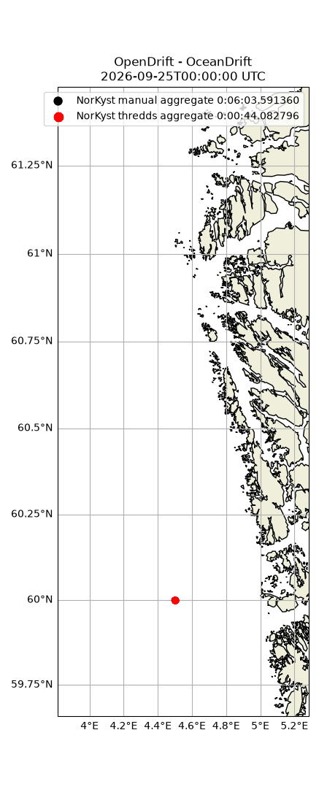

Note
Go to the end to download the full example code.
Manual aggregate
from datetime import datetime, timedelta
import pandas as pd
import matplotlib.pyplot as plt
from opendrift.readers import reader_netCDF_CF_generic
from opendrift.readers import open_mfdataset_overlap
from opendrift.models.oceandrift import OceanDrift
#%
# Create manual aggregate from individual URLs, for NorKyst ocean model initialized at 00 hours every day
start_time = datetime.now().date()-timedelta(days=3)
end_time = datetime.now().date()-timedelta(days=2)
ds = open_mfdataset_overlap(
'https://thredds.met.no/thredds/dodsC/fou-hi/norkystv3_his_files/%Y/%m/%d/norkyst800_his_zdepth_%Y%m%dT00Z_m00_AN.nc',
time_series=pd.date_range(start_time, end_time, freq='1D'))
#%
# Create reader from Xarray dataset
rm = reader_netCDF_CF_generic.Reader(ds, name='NorKyst manual aggregate')
print(rm)
om = OceanDrift()
om.add_reader(rm)
om.seed_elements(lon=4.5, lat=60.0, number=1000, radius=100, time=rm.start_time)
om.run(end_time=rm.end_time)
#%
# Second simulation using ready made aggregate from thredds
ot = OceanDrift()
ot.add_readers_from_list(['https://thredds.met.no/thredds/dodsC/fou-hi/norkystv3_800m_m00_be'])
ot.seed_elements(lon=4.5, lat=60.0, number=1000, radius=100, time=rm.start_time)
ot.run(end_time=rm.end_time)
#%
# Simulation should be identical, but we see that manual aggregate is significantly slower than using thredds aggregate
om.animation(compare=ot,
legend=[f'NorKyst manual aggregate {om.timing["total time"]}',
f'NorKyst thredds aggregate {ot.timing["total time"]}'])
Opening individual URLs...
Concatenating...
===========================
Reader: NorKyst manual aggregate
Reader type: opendrift.readers.reader_netCDF_CF_generic
Projection:
+proj=stere +lat_0=90 +lat_ts=60 +lon_0=70 +x_0=3369600 +y_0=1844800 +a=6378137 +b=6356752.3142 +units=m +no_defs +type=crs
Coverage: [degrees]
xmin: 0.000000 xmax: 2196800.000000 step: 800 numx: 2747
ymin: 0.000000 ymax: 917600.000000 step: 800 numy: 1148
Corners (lon, lat):
( -4.61, 57.34) ( 18.33, 75.73)
( 8.70, 54.29) ( 37.55, 69.25)
Vertical levels [m]:
[ -0. -1. -2. -3. -5. -7. -10. -15. -25. -50. -65. -75.
-100. -200. -300.]
Available time range:
start: 2026-10-05 00:00:00 end: 2026-10-06 23:00:00 step: 1:00:00
48 times (0 missing)
Variables:
ocean_vertical_diffusivity
eastward_wind
northward_wind
sea_floor_depth_below_sea_level
sea_water_salinity
sea_water_temperature
eastward_sea_water_velocity
northward_sea_water_velocity
upward_sea_water_velocity
sea_surface_height
latitude
longitude
x_wind
y_wind
x_sea_water_velocity
y_sea_water_velocity
wind_speed - derived from ['x_wind', 'y_wind']
sea_water_speed - derived from ['x_sea_water_velocity', 'y_sea_water_velocity']
===========================
12:07:27 DEBUG opendrift.config:168: Adding 17 config items from __init__
12:07:27 DEBUG opendrift.config:178: Overwriting config item readers:max_number_of_fails
12:07:27 DEBUG opendrift.config:168: Adding 5 config items from __init__
12:07:27 INFO opendrift:569: OpenDriftSimulation initialised (version 1.14.11 / v1.14.12-45-g2e494c3)
12:07:27 DEBUG opendrift.config:168: Adding 19 config items from oceandrift
12:07:27 DEBUG opendrift.config:178: Overwriting config item seed:z
12:07:27 DEBUG opendrift.models.basemodel.environment:312: Added reader NorKyst manual aggregate
12:07:27 INFO opendrift.models.basemodel.environment:203: Adding a global landmask from GSHHG
12:07:27 DEBUG opendrift.readers.basereader.variables:546: Skipping calculation of vector component, since y is not north
12:07:27 DEBUG opendrift.readers.basereader.variables:546: Skipping calculation of vector component, since y is not north
12:07:27 DEBUG opendrift.readers.basereader.variables:546: Skipping calculation of vector component, since y is not north
12:07:27 DEBUG opendrift.readers.basereader.variables:546: Skipping calculation of vector component, since y is not north
12:07:27 DEBUG opendrift.readers.basereader:185: Variable mapping: ['sea_floor_depth_below_sea_level'] -> ['land_binary_mask'] is not activated
12:07:33 DEBUG opendrift.models.basemodel.environment:312: Added reader global_landmask
12:07:33 INFO opendrift.models.basemodel.environment:227: Fallback values will be used for the following variables which have no readers:
12:07:33 INFO opendrift.models.basemodel.environment:230: horizontal_diffusivity: 0.000000
12:07:33 INFO opendrift.models.basemodel.environment:230: sea_surface_wave_significant_height: 0.000000
12:07:33 INFO opendrift.models.basemodel.environment:230: sea_surface_wave_stokes_drift_x_velocity: 0.000000
12:07:33 INFO opendrift.models.basemodel.environment:230: sea_surface_wave_stokes_drift_y_velocity: 0.000000
12:07:33 INFO opendrift.models.basemodel.environment:230: ocean_mixed_layer_thickness: 50.000000
12:07:33 DEBUG opendrift:165: Changed mode from Mode.Config to Mode.Ready
12:07:33 DEBUG opendrift:165: Changed mode from Mode.Ready to Mode.Run
12:07:33 DEBUG opendrift:1882:
------------------------------------------------------
Software and hardware:
OpenDrift version 1.14.11
Platform: Linux, 7.0.0-1013-aws
4.0 GB memory
36 processors (x86_64)
NumPy version 2.5.3
SciPy version 1.18.1
Matplotlib version 3.11.2
NetCDF4 version 1.7.4
Xarray version 2026.7.0
ADIOS (adios_db) version 1.2.5
Copernicusmarine version 2.4.1
Python version 3.14.7 | packaged by conda-forge | (main, Sep 2 2026, 21:08:32) [GCC 15.3.0]
------------------------------------------------------
12:07:33 DEBUG opendrift:1895: No output file is specified, neglecting export_buffer_length
12:07:33 INFO opendrift:1910: Skipping environment variable ocean_vertical_diffusivity because of condition ['drift:vertical_mixing', 'is', False]
12:07:33 INFO opendrift:1910: Skipping environment variable ocean_mixed_layer_thickness because of condition ['drift:vertical_mixing', 'is', False]
12:07:33 INFO opendrift:1921: Storing previous values of element property lon because of condition (('general:coastline_action', 'in', ['stranding', 'previous']), 'or', ('general:seafloor_action', 'in', ['previous']))
12:07:33 INFO opendrift:1921: Storing previous values of element property lat because of condition (('general:coastline_action', 'in', ['stranding', 'previous']), 'or', ('general:seafloor_action', 'in', ['previous']))
12:07:33 INFO opendrift:1929: Storing previous values of environment variable sea_surface_height because of condition ['drift:vertical_advection', 'is', True]
12:07:33 DEBUG opendrift:2046: Finalizing environment and preparing readers for simulation coverage ([-1.60275842 56.94866199 10.60224392 63.05149441]) and time (2026-10-05 00:00:00 to 2026-10-06 23:00:00)
12:07:33 DEBUG opendrift.models.basemodel.environment:166: Preparing NorKyst manual aggregate for extent [-1.60275842 56.94866199 10.60224392 63.05149441]
12:07:33 DEBUG opendrift.readers.basereader.structured:151: Clearing cache for reader NorKyst manual aggregate before starting new simulation
12:07:33 DEBUG opendrift.readers.basereader.variables:618: Setting buffer size 11 for reader NorKyst manual aggregate, assuming a maximum average speed of 2 m/s and time span of 1:00:00
12:07:33 DEBUG opendrift.readers.basereader.variables:559: Nothing more to prepare for NorKyst manual aggregate
12:07:33 DEBUG opendrift.models.basemodel.environment:166: Preparing global_landmask for extent [-1.60275842 56.94866199 10.60224392 63.05149441]
12:07:33 DEBUG opendrift.readers.basereader.variables:559: Nothing more to prepare for global_landmask
12:07:33 DEBUG opendrift:2143: Initial self.result, size Frozen({'trajectory': 1000, 'time': 48})
12:07:33 INFO opendrift:958: Using existing reader for land_binary_mask to move elements to ocean
12:07:33 DEBUG opendrift.models.basemodel.environment:598: ----------------------------------------
12:07:33 DEBUG opendrift.models.basemodel.environment:599: Variable group ['land_binary_mask']
12:07:33 DEBUG opendrift.models.basemodel.environment:600: ----------------------------------------
12:07:33 DEBUG opendrift.models.basemodel.environment:604: Calling reader global_landmask
12:07:33 DEBUG opendrift.models.basemodel.environment:605: ----------------------------------------
12:07:33 DEBUG opendrift.models.basemodel.environment:625: Data needed for 1000 elements
12:07:33 DEBUG opendrift.readers.basereader.variables:765: Fetching variables from global_landmask covering 1000 elements
12:07:33 DEBUG opendrift.readers.basereader.continuous:37: Fetched env-before
12:07:33 DEBUG opendrift.readers.basereader.variables:643: Checking land_binary_mask for invalid values
12:07:33 DEBUG opendrift.readers.basereader.variables:801: Reader projection is latlon - rotation of vectors is not needed.
12:07:33 DEBUG opendrift.models.basemodel.environment:761: Obtained data for all elements.
12:07:33 DEBUG opendrift.models.basemodel.environment:774: ---------------------------------------
12:07:33 DEBUG opendrift.models.basemodel.environment:775: Finished processing all variable groups
12:07:33 DEBUG opendrift.models.basemodel.environment:897: ------------ SUMMARY -------------
12:07:33 DEBUG opendrift.models.basemodel.environment:899: land_binary_mask: 0 (min) 0 (max)
12:07:33 DEBUG opendrift.models.basemodel.environment:901: ---------------------------------
12:07:33 INFO opendrift:989: All points are in ocean
12:07:33 DEBUG opendrift:915: to be seeded: 1000, already seeded 0
12:07:33 DEBUG opendrift:937: Released 1000 new elements.
12:07:33 DEBUG opendrift:2236: ======================================================================
12:07:33 INFO opendrift:2237: 2026-10-05 00:00:00 - step 1 of 47 - 1000 active elements (0 deactivated)
12:07:33 DEBUG opendrift:2243: 0 elements scheduled.
12:07:33 DEBUG opendrift:2245: ======================================================================
12:07:33 DEBUG opendrift:2256: 59.997310638427734 <- latitude -> 60.002845764160156
12:07:33 DEBUG opendrift:2256: 4.494540691375732 <- longitude -> 4.504944801330566
12:07:33 DEBUG opendrift:2254: z = 0.0
12:07:33 DEBUG opendrift:2257: ---------------------------------
12:07:33 DEBUG opendrift.models.basemodel.environment:598: ----------------------------------------
12:07:33 DEBUG opendrift.models.basemodel.environment:599: Variable group ['sea_floor_depth_below_sea_level', 'upward_sea_water_velocity', 'sea_surface_height', 'x_wind', 'y_wind', 'x_sea_water_velocity', 'y_sea_water_velocity']
12:07:33 DEBUG opendrift.models.basemodel.environment:600: ----------------------------------------
12:07:33 DEBUG opendrift.models.basemodel.environment:604: Calling reader NorKyst manual aggregate
12:07:33 DEBUG opendrift.models.basemodel.environment:605: ----------------------------------------
12:07:33 DEBUG opendrift.models.basemodel.environment:625: Data needed for 1000 elements
12:07:33 DEBUG opendrift.readers.basereader.variables:765: Fetching variables from NorKyst manual aggregate covering 1000 elements
12:07:33 DEBUG opendrift.readers.basereader.structured:220: Reader time:
2026-10-05 00:00:00 (before)
2026-10-05 01:00:00 (after)
12:07:37 DEBUG opendrift.readers.reader_netCDF_CF_generic:475: Using eastward_wind to retrieve x_wind
12:07:37 DEBUG opendrift.readers.reader_netCDF_CF_generic:475: Using northward_wind to retrieve y_wind
12:07:38 DEBUG opendrift.readers.reader_netCDF_CF_generic:475: Using eastward_sea_water_velocity to retrieve x_sea_water_velocity
12:07:39 DEBUG opendrift.readers.reader_netCDF_CF_generic:475: Using northward_sea_water_velocity to retrieve y_sea_water_velocity
12:07:40 DEBUG opendrift.readers.reader_netCDF_CF_generic:607: Rotating vector from east/north to xy orientation: ['x_wind', 'y_wind']
12:07:40 DEBUG opendrift.readers.basereader.variables:100: Rotating vectors between 65.28400783875489 and 65.70176334471121 degrees.
12:07:40 DEBUG opendrift.readers.reader_netCDF_CF_generic:607: Rotating vector from east/north to xy orientation: ['x_sea_water_velocity', 'y_sea_water_velocity']
12:07:40 DEBUG opendrift.readers.basereader.variables:100: Rotating vectors between 65.28400783875489 and 65.70176334471121 degrees.
12:07:40 DEBUG opendrift.readers.basereader.variables:643: Checking sea_floor_depth_below_sea_level for invalid values
12:07:40 DEBUG opendrift.readers.basereader.variables:643: Checking x_wind for invalid values
12:07:40 DEBUG opendrift.readers.basereader.variables:643: Checking y_wind for invalid values
12:07:40 DEBUG opendrift.readers.basereader.variables:643: Checking x_sea_water_velocity for invalid values
12:07:40 DEBUG opendrift.readers.basereader.variables:643: Checking y_sea_water_velocity for invalid values
12:07:40 DEBUG opendrift.readers.basereader.structured:290: Fetched env-block (size 23x23x2) for time before (2026-10-05 00:00:00)
12:07:40 DEBUG opendrift.readers.basereader.structured:334: Interpolating before (2026-10-05 00:00:00) in space (linearNDFast)
12:07:40 DEBUG opendrift.readers.interpolation.structured:97: Initialising interpolator.
12:07:40 DEBUG opendrift.readers.basereader.structured:388: No time interpolation needed - right on time.
12:07:40 DEBUG opendrift.readers.basereader.variables:100: Rotating vectors between -65.5054702318003 and -65.49506612654369 degrees.
12:07:40 DEBUG opendrift.readers.basereader.variables:100: Rotating vectors between -65.5054702318003 and -65.49506612654369 degrees.
12:07:40 DEBUG opendrift.models.basemodel.environment:761: Obtained data for all elements.
12:07:40 DEBUG opendrift.models.basemodel.environment:598: ----------------------------------------
12:07:40 DEBUG opendrift.models.basemodel.environment:599: Variable group ['land_binary_mask']
12:07:40 DEBUG opendrift.models.basemodel.environment:600: ----------------------------------------
12:07:40 DEBUG opendrift.models.basemodel.environment:604: Calling reader global_landmask
12:07:40 DEBUG opendrift.models.basemodel.environment:605: ----------------------------------------
12:07:40 DEBUG opendrift.models.basemodel.environment:625: Data needed for 1000 elements
12:07:40 DEBUG opendrift.readers.basereader.variables:765: Fetching variables from global_landmask covering 1000 elements
12:07:40 DEBUG opendrift.readers.basereader.continuous:37: Fetched env-before
12:07:40 DEBUG opendrift.readers.basereader.variables:643: Checking land_binary_mask for invalid values
12:07:40 DEBUG opendrift.readers.basereader.variables:801: Reader projection is latlon - rotation of vectors is not needed.
12:07:40 DEBUG opendrift.models.basemodel.environment:761: Obtained data for all elements.
12:07:40 DEBUG opendrift.models.basemodel.environment:774: ---------------------------------------
12:07:40 DEBUG opendrift.models.basemodel.environment:775: Finished processing all variable groups
12:07:40 DEBUG opendrift.models.basemodel.environment:897: ------------ SUMMARY -------------
12:07:40 DEBUG opendrift.models.basemodel.environment:899: x_sea_water_velocity: 0.0810146 (min) 0.0890144 (max)
12:07:40 DEBUG opendrift.models.basemodel.environment:899: y_sea_water_velocity: 0.420365 (min) 0.432973 (max)
12:07:40 DEBUG opendrift.models.basemodel.environment:899: sea_surface_height: -0.496059 (min) -0.492204 (max)
12:07:40 DEBUG opendrift.models.basemodel.environment:899: x_wind: 4.24216 (min) 4.26905 (max)
12:07:40 DEBUG opendrift.models.basemodel.environment:899: y_wind: 7.4033 (min) 7.41671 (max)
12:07:40 DEBUG opendrift.models.basemodel.environment:899: upward_sea_water_velocity: 0 (min) 0 (max)
12:07:40 DEBUG opendrift.models.basemodel.environment:899: horizontal_diffusivity: 0 (min) 0 (max)
12:07:40 DEBUG opendrift.models.basemodel.environment:899: sea_surface_wave_significant_height: 0 (min) 0 (max)
12:07:40 DEBUG opendrift.models.basemodel.environment:899: sea_surface_wave_stokes_drift_x_velocity: 0 (min) 0 (max)
12:07:40 DEBUG opendrift.models.basemodel.environment:899: sea_surface_wave_stokes_drift_y_velocity: 0 (min) 0 (max)
12:07:40 DEBUG opendrift.models.basemodel.environment:899: sea_floor_depth_below_sea_level: 262.501 (min) 264.452 (max)
12:07:40 DEBUG opendrift.models.basemodel.environment:899: land_binary_mask: 0 (min) 0 (max)
12:07:40 DEBUG opendrift.models.basemodel.environment:901: ---------------------------------
12:07:40 DEBUG opendrift.models.physics_methods:902: Calculating Hs from wind, min: 1.795137, mean: 1.796299, max: 1.797110
12:07:40 DEBUG opendrift:700: No elements hit coastline.
12:07:40 DEBUG opendrift:771: No elements hit seafloor.
12:07:40 DEBUG opendrift:1810: No elements to deactivate
12:07:40 DEBUG opendrift:2294: Calling OceanDrift.update()
12:07:40 DEBUG opendrift.models.physics_methods:823: Advecting 1000 of 1000 elements above 0.100m with wind-sheared ocean current (0.170849 m/s - 0.170942 m/s)
12:07:40 DEBUG opendrift.models.physics_methods:841: No Stokes drift velocity available
12:07:40 DEBUG opendrift.models.oceandrift:330: Vertical advection, excluding elements at surface
12:07:40 DEBUG opendrift:1758: Horizontal diffusivity is 0, no random walk.
12:07:40 DEBUG opendrift:915: to be seeded: 0, already seeded 1000
12:07:40 DEBUG opendrift:2236: ======================================================================
12:07:40 INFO opendrift:2237: 2026-10-05 01:00:00 - step 2 of 47 - 1000 active elements (0 deactivated)
12:07:40 DEBUG opendrift:2243: 0 elements scheduled.
12:07:40 DEBUG opendrift:2245: ======================================================================
12:07:40 DEBUG opendrift:2256: 60.015961439398346 <- latitude -> 60.02134493264907
12:07:40 DEBUG opendrift:2256: 4.505342210727401 <- longitude -> 4.516064156398683
12:07:40 DEBUG opendrift:2254: z = 0.0
12:07:40 DEBUG opendrift:2257: ---------------------------------
12:07:40 DEBUG opendrift.models.basemodel.environment:598: ----------------------------------------
12:07:40 DEBUG opendrift.models.basemodel.environment:599: Variable group ['sea_floor_depth_below_sea_level', 'upward_sea_water_velocity', 'sea_surface_height', 'x_wind', 'y_wind', 'x_sea_water_velocity', 'y_sea_water_velocity']
12:07:40 DEBUG opendrift.models.basemodel.environment:600: ----------------------------------------
12:07:40 DEBUG opendrift.models.basemodel.environment:604: Calling reader NorKyst manual aggregate
12:07:40 DEBUG opendrift.models.basemodel.environment:605: ----------------------------------------
12:07:40 DEBUG opendrift.models.basemodel.environment:625: Data needed for 1000 elements
12:07:40 DEBUG opendrift.readers.basereader.variables:765: Fetching variables from NorKyst manual aggregate covering 1000 elements
12:07:40 DEBUG opendrift.readers.basereader.structured:220: Reader time:
2026-10-05 01:00:00 (before)
2026-10-05 02:00:00 (after)
12:07:42 DEBUG opendrift.readers.reader_netCDF_CF_generic:475: Using eastward_wind to retrieve x_wind
12:07:43 DEBUG opendrift.readers.reader_netCDF_CF_generic:475: Using northward_wind to retrieve y_wind
12:07:43 DEBUG opendrift.readers.reader_netCDF_CF_generic:475: Using eastward_sea_water_velocity to retrieve x_sea_water_velocity
12:07:44 DEBUG opendrift.readers.reader_netCDF_CF_generic:475: Using northward_sea_water_velocity to retrieve y_sea_water_velocity
12:07:47 DEBUG opendrift.readers.reader_netCDF_CF_generic:607: Rotating vector from east/north to xy orientation: ['x_wind', 'y_wind']
12:07:47 DEBUG opendrift.readers.basereader.variables:100: Rotating vectors between 65.26599063696173 and 65.6899773122683 degrees.
12:07:47 DEBUG opendrift.readers.reader_netCDF_CF_generic:607: Rotating vector from east/north to xy orientation: ['x_sea_water_velocity', 'y_sea_water_velocity']
12:07:47 DEBUG opendrift.readers.basereader.variables:100: Rotating vectors between 65.26599063696173 and 65.6899773122683 degrees.
12:07:47 DEBUG opendrift.readers.basereader.variables:643: Checking sea_floor_depth_below_sea_level for invalid values
12:07:47 DEBUG opendrift.readers.basereader.variables:643: Checking x_wind for invalid values
12:07:47 DEBUG opendrift.readers.basereader.variables:643: Checking y_wind for invalid values
12:07:47 DEBUG opendrift.readers.basereader.variables:643: Checking x_sea_water_velocity for invalid values
12:07:47 DEBUG opendrift.readers.basereader.variables:643: Checking y_sea_water_velocity for invalid values
12:07:47 DEBUG opendrift.readers.basereader.structured:290: Fetched env-block (size 24x23x2) for time before (2026-10-05 01:00:00)
12:07:47 DEBUG opendrift.readers.basereader.structured:334: Interpolating before (2026-10-05 01:00:00) in space (linearNDFast)
12:07:47 DEBUG opendrift.readers.interpolation.structured:97: Initialising interpolator.
12:07:47 DEBUG opendrift.readers.basereader.structured:388: No time interpolation needed - right on time.
12:07:47 DEBUG opendrift.readers.basereader.variables:100: Rotating vectors between -65.49466870861588 and -65.4839467658299 degrees.
12:07:47 DEBUG opendrift.readers.basereader.variables:100: Rotating vectors between -65.49466870861588 and -65.4839467658299 degrees.
12:07:47 DEBUG opendrift.models.basemodel.environment:761: Obtained data for all elements.
12:07:47 DEBUG opendrift.models.basemodel.environment:598: ----------------------------------------
12:07:47 DEBUG opendrift.models.basemodel.environment:599: Variable group ['land_binary_mask']
12:07:47 DEBUG opendrift.models.basemodel.environment:600: ----------------------------------------
12:07:47 DEBUG opendrift.models.basemodel.environment:604: Calling reader global_landmask
12:07:47 DEBUG opendrift.models.basemodel.environment:605: ----------------------------------------
12:07:47 DEBUG opendrift.models.basemodel.environment:625: Data needed for 1000 elements
12:07:47 DEBUG opendrift.readers.basereader.variables:765: Fetching variables from global_landmask covering 1000 elements
12:07:47 DEBUG opendrift.readers.basereader.continuous:37: Fetched env-before
12:07:47 DEBUG opendrift.readers.basereader.variables:643: Checking land_binary_mask for invalid values
12:07:47 DEBUG opendrift.readers.basereader.variables:801: Reader projection is latlon - rotation of vectors is not needed.
12:07:47 DEBUG opendrift.models.basemodel.environment:761: Obtained data for all elements.
12:07:47 DEBUG opendrift.models.basemodel.environment:774: ---------------------------------------
12:07:47 DEBUG opendrift.models.basemodel.environment:775: Finished processing all variable groups
12:07:47 DEBUG opendrift.models.basemodel.environment:897: ------------ SUMMARY -------------
12:07:47 DEBUG opendrift.models.basemodel.environment:899: x_sea_water_velocity: 0.0662945 (min) 0.0743787 (max)
12:07:47 DEBUG opendrift.models.basemodel.environment:899: y_sea_water_velocity: 0.455324 (min) 0.468299 (max)
12:07:47 DEBUG opendrift.models.basemodel.environment:899: sea_surface_height: -0.394927 (min) -0.391679 (max)
12:07:47 DEBUG opendrift.models.basemodel.environment:899: x_wind: 3.79232 (min) 3.81189 (max)
12:07:47 DEBUG opendrift.models.basemodel.environment:899: y_wind: 8.89648 (min) 8.90791 (max)
12:07:47 DEBUG opendrift.models.basemodel.environment:899: upward_sea_water_velocity: 3e-05 (min) 3e-05 (max)
12:07:47 DEBUG opendrift.models.basemodel.environment:899: horizontal_diffusivity: 0 (min) 0 (max)
12:07:47 DEBUG opendrift.models.basemodel.environment:899: sea_surface_wave_significant_height: 0 (min) 0 (max)
12:07:47 DEBUG opendrift.models.basemodel.environment:899: sea_surface_wave_stokes_drift_x_velocity: 0 (min) 0 (max)
12:07:47 DEBUG opendrift.models.basemodel.environment:899: sea_surface_wave_stokes_drift_y_velocity: 0 (min) 0 (max)
12:07:47 DEBUG opendrift.models.basemodel.environment:899: sea_floor_depth_below_sea_level: 261.415 (min) 262.882 (max)
12:07:47 DEBUG opendrift.models.basemodel.environment:899: land_binary_mask: 0 (min) 0 (max)
12:07:47 DEBUG opendrift.models.basemodel.environment:901: ---------------------------------
12:07:47 DEBUG opendrift.models.physics_methods:902: Calculating Hs from wind, min: 2.304326, mean: 2.305470, max: 2.306392
12:07:47 DEBUG opendrift:700: No elements hit coastline.
12:07:47 DEBUG opendrift:771: No elements hit seafloor.
12:07:47 DEBUG opendrift:1810: No elements to deactivate
12:07:47 DEBUG opendrift:2294: Calling OceanDrift.update()
12:07:47 DEBUG opendrift.models.physics_methods:823: Advecting 1000 of 1000 elements above 0.100m with wind-sheared ocean current (0.193568 m/s - 0.193655 m/s)
12:07:47 DEBUG opendrift.models.physics_methods:841: No Stokes drift velocity available
12:07:47 DEBUG opendrift.models.oceandrift:330: Vertical advection, excluding elements at surface
12:07:47 DEBUG opendrift:1758: Horizontal diffusivity is 0, no random walk.
12:07:47 DEBUG opendrift:915: to be seeded: 0, already seeded 1000
12:07:47 DEBUG opendrift:2236: ======================================================================
12:07:47 INFO opendrift:2237: 2026-10-05 02:00:00 - step 3 of 47 - 1000 active elements (0 deactivated)
12:07:47 DEBUG opendrift:2243: 0 elements scheduled.
12:07:47 DEBUG opendrift:2245: ======================================================================
12:07:47 DEBUG opendrift:2256: 60.03671370462551 <- latitude -> 60.04196170735946
12:07:47 DEBUG opendrift:2256: 4.514743828560715 <- longitude -> 4.525713681162075
12:07:47 DEBUG opendrift:2254: z = 0.0
12:07:47 DEBUG opendrift:2257: ---------------------------------
12:07:47 DEBUG opendrift.models.basemodel.environment:598: ----------------------------------------
12:07:47 DEBUG opendrift.models.basemodel.environment:599: Variable group ['sea_floor_depth_below_sea_level', 'upward_sea_water_velocity', 'sea_surface_height', 'x_wind', 'y_wind', 'x_sea_water_velocity', 'y_sea_water_velocity']
12:07:47 DEBUG opendrift.models.basemodel.environment:600: ----------------------------------------
12:07:47 DEBUG opendrift.models.basemodel.environment:604: Calling reader NorKyst manual aggregate
12:07:47 DEBUG opendrift.models.basemodel.environment:605: ----------------------------------------
12:07:47 DEBUG opendrift.models.basemodel.environment:625: Data needed for 1000 elements
12:07:47 DEBUG opendrift.readers.basereader.variables:765: Fetching variables from NorKyst manual aggregate covering 1000 elements
12:07:47 DEBUG opendrift.readers.basereader.structured:220: Reader time:
2026-10-05 02:00:00 (before)
2026-10-05 03:00:00 (after)
12:07:49 DEBUG opendrift.readers.reader_netCDF_CF_generic:475: Using eastward_wind to retrieve x_wind
12:07:49 DEBUG opendrift.readers.reader_netCDF_CF_generic:475: Using northward_wind to retrieve y_wind
12:07:50 DEBUG opendrift.readers.reader_netCDF_CF_generic:475: Using eastward_sea_water_velocity to retrieve x_sea_water_velocity
12:07:51 DEBUG opendrift.readers.reader_netCDF_CF_generic:475: Using northward_sea_water_velocity to retrieve y_sea_water_velocity
12:07:52 DEBUG opendrift.readers.reader_netCDF_CF_generic:607: Rotating vector from east/north to xy orientation: ['x_wind', 'y_wind']
12:07:52 DEBUG opendrift.readers.basereader.variables:100: Rotating vectors between 65.26100311569864 and 65.68533800401282 degrees.
12:07:52 DEBUG opendrift.readers.reader_netCDF_CF_generic:607: Rotating vector from east/north to xy orientation: ['x_sea_water_velocity', 'y_sea_water_velocity']
12:07:52 DEBUG opendrift.readers.basereader.variables:100: Rotating vectors between 65.26100311569864 and 65.68533800401282 degrees.
12:07:52 DEBUG opendrift.readers.basereader.variables:643: Checking sea_floor_depth_below_sea_level for invalid values
12:07:52 DEBUG opendrift.readers.basereader.variables:643: Checking x_wind for invalid values
12:07:52 DEBUG opendrift.readers.basereader.variables:643: Checking y_wind for invalid values
12:07:52 DEBUG opendrift.readers.basereader.variables:643: Checking x_sea_water_velocity for invalid values
12:07:52 DEBUG opendrift.readers.basereader.variables:643: Checking y_sea_water_velocity for invalid values
12:07:52 DEBUG opendrift.readers.basereader.structured:290: Fetched env-block (size 24x23x2) for time before (2026-10-05 02:00:00)
12:07:52 DEBUG opendrift.readers.basereader.structured:334: Interpolating before (2026-10-05 02:00:00) in space (linearNDFast)
12:07:52 DEBUG opendrift.readers.interpolation.structured:97: Initialising interpolator.
12:07:52 DEBUG opendrift.readers.basereader.structured:388: No time interpolation needed - right on time.
12:07:52 DEBUG opendrift.readers.basereader.variables:100: Rotating vectors between -65.48526707682262 and -65.47429722577851 degrees.
12:07:52 DEBUG opendrift.readers.basereader.variables:100: Rotating vectors between -65.48526707682262 and -65.47429722577851 degrees.
12:07:52 DEBUG opendrift.models.basemodel.environment:761: Obtained data for all elements.
12:07:52 DEBUG opendrift.models.basemodel.environment:598: ----------------------------------------
12:07:52 DEBUG opendrift.models.basemodel.environment:599: Variable group ['land_binary_mask']
12:07:52 DEBUG opendrift.models.basemodel.environment:600: ----------------------------------------
12:07:52 DEBUG opendrift.models.basemodel.environment:604: Calling reader global_landmask
12:07:52 DEBUG opendrift.models.basemodel.environment:605: ----------------------------------------
12:07:52 DEBUG opendrift.models.basemodel.environment:625: Data needed for 1000 elements
12:07:52 DEBUG opendrift.readers.basereader.variables:765: Fetching variables from global_landmask covering 1000 elements
12:07:52 DEBUG opendrift.readers.basereader.continuous:37: Fetched env-before
12:07:52 DEBUG opendrift.readers.basereader.variables:643: Checking land_binary_mask for invalid values
12:07:52 DEBUG opendrift.readers.basereader.variables:801: Reader projection is latlon - rotation of vectors is not needed.
12:07:52 DEBUG opendrift.models.basemodel.environment:761: Obtained data for all elements.
12:07:52 DEBUG opendrift.models.basemodel.environment:774: ---------------------------------------
12:07:52 DEBUG opendrift.models.basemodel.environment:775: Finished processing all variable groups
12:07:52 DEBUG opendrift.models.basemodel.environment:897: ------------ SUMMARY -------------
12:07:52 DEBUG opendrift.models.basemodel.environment:899: x_sea_water_velocity: 0.0649812 (min) 0.0748486 (max)
12:07:52 DEBUG opendrift.models.basemodel.environment:899: y_sea_water_velocity: 0.464467 (min) 0.476739 (max)
12:07:52 DEBUG opendrift.models.basemodel.environment:899: sea_surface_height: -0.283477 (min) -0.280022 (max)
12:07:52 DEBUG opendrift.models.basemodel.environment:899: x_wind: 4.91252 (min) 4.93176 (max)
12:07:52 DEBUG opendrift.models.basemodel.environment:899: y_wind: 9.24949 (min) 9.27677 (max)
12:07:52 DEBUG opendrift.models.basemodel.environment:899: upward_sea_water_velocity: 3e-05 (min) 3e-05 (max)
12:07:52 DEBUG opendrift.models.basemodel.environment:899: horizontal_diffusivity: 0 (min) 0 (max)
12:07:52 DEBUG opendrift.models.basemodel.environment:899: sea_surface_wave_significant_height: 0 (min) 0 (max)
12:07:52 DEBUG opendrift.models.basemodel.environment:899: sea_surface_wave_stokes_drift_x_velocity: 0 (min) 0 (max)
12:07:52 DEBUG opendrift.models.basemodel.environment:899: sea_surface_wave_stokes_drift_y_velocity: 0 (min) 0 (max)
12:07:52 DEBUG opendrift.models.basemodel.environment:899: sea_floor_depth_below_sea_level: 265.113 (min) 266.747 (max)
12:07:52 DEBUG opendrift.models.basemodel.environment:899: land_binary_mask: 0 (min) 0 (max)
12:07:52 DEBUG opendrift.models.basemodel.environment:901: ---------------------------------
12:07:52 DEBUG opendrift.models.physics_methods:902: Calculating Hs from wind, min: 2.702803, mean: 2.708065, max: 2.711555
12:07:52 DEBUG opendrift:700: No elements hit coastline.
12:07:52 DEBUG opendrift:771: No elements hit seafloor.
12:07:52 DEBUG opendrift:1810: No elements to deactivate
12:07:52 DEBUG opendrift:2294: Calling OceanDrift.update()
12:07:52 DEBUG opendrift.models.physics_methods:823: Advecting 1000 of 1000 elements above 0.100m with wind-sheared ocean current (0.209638 m/s - 0.209977 m/s)
12:07:52 DEBUG opendrift.models.physics_methods:841: No Stokes drift velocity available
12:07:52 DEBUG opendrift.models.oceandrift:330: Vertical advection, excluding elements at surface
12:07:52 DEBUG opendrift:1758: Horizontal diffusivity is 0, no random walk.
12:07:52 DEBUG opendrift:915: to be seeded: 0, already seeded 1000
12:07:52 DEBUG opendrift:2236: ======================================================================
12:07:52 INFO opendrift:2237: 2026-10-05 03:00:00 - step 4 of 47 - 1000 active elements (0 deactivated)
12:07:52 DEBUG opendrift:2243: 0 elements scheduled.
12:07:52 DEBUG opendrift:2245: ======================================================================
12:07:52 DEBUG opendrift:2256: 60.05793895812646 <- latitude -> 60.06311960034553
12:07:52 DEBUG opendrift:2256: 4.525532954270192 <- longitude -> 4.536871150272958
12:07:52 DEBUG opendrift:2254: z = 0.0
12:07:52 DEBUG opendrift:2257: ---------------------------------
12:07:52 DEBUG opendrift.models.basemodel.environment:598: ----------------------------------------
12:07:52 DEBUG opendrift.models.basemodel.environment:599: Variable group ['sea_floor_depth_below_sea_level', 'upward_sea_water_velocity', 'sea_surface_height', 'x_wind', 'y_wind', 'x_sea_water_velocity', 'y_sea_water_velocity']
12:07:52 DEBUG opendrift.models.basemodel.environment:600: ----------------------------------------
12:07:52 DEBUG opendrift.models.basemodel.environment:604: Calling reader NorKyst manual aggregate
12:07:52 DEBUG opendrift.models.basemodel.environment:605: ----------------------------------------
12:07:52 DEBUG opendrift.models.basemodel.environment:625: Data needed for 1000 elements
12:07:52 DEBUG opendrift.readers.basereader.variables:765: Fetching variables from NorKyst manual aggregate covering 1000 elements
12:07:52 DEBUG opendrift.readers.basereader.structured:220: Reader time:
2026-10-05 03:00:00 (before)
2026-10-05 04:00:00 (after)
12:07:54 DEBUG opendrift.readers.reader_netCDF_CF_generic:475: Using eastward_wind to retrieve x_wind
12:07:54 DEBUG opendrift.readers.reader_netCDF_CF_generic:475: Using northward_wind to retrieve y_wind
12:07:55 DEBUG opendrift.readers.reader_netCDF_CF_generic:475: Using eastward_sea_water_velocity to retrieve x_sea_water_velocity
12:07:56 DEBUG opendrift.readers.reader_netCDF_CF_generic:475: Using northward_sea_water_velocity to retrieve y_sea_water_velocity
12:07:58 DEBUG opendrift.readers.reader_netCDF_CF_generic:607: Rotating vector from east/north to xy orientation: ['x_wind', 'y_wind']
12:07:58 DEBUG opendrift.readers.basereader.variables:100: Rotating vectors between 65.2429436338888 and 65.66762169495253 degrees.
12:07:58 DEBUG opendrift.readers.reader_netCDF_CF_generic:607: Rotating vector from east/north to xy orientation: ['x_sea_water_velocity', 'y_sea_water_velocity']
12:07:58 DEBUG opendrift.readers.basereader.variables:100: Rotating vectors between 65.2429436338888 and 65.66762169495253 degrees.
12:07:58 DEBUG opendrift.readers.basereader.variables:643: Checking sea_floor_depth_below_sea_level for invalid values
12:07:58 DEBUG opendrift.readers.basereader.variables:643: Checking x_wind for invalid values
12:07:58 DEBUG opendrift.readers.basereader.variables:643: Checking y_wind for invalid values
12:07:58 DEBUG opendrift.readers.basereader.variables:643: Checking x_sea_water_velocity for invalid values
12:07:58 DEBUG opendrift.readers.basereader.variables:643: Checking y_sea_water_velocity for invalid values
12:07:58 DEBUG opendrift.readers.basereader.structured:290: Fetched env-block (size 24x23x2) for time before (2026-10-05 03:00:00)
12:07:58 DEBUG opendrift.readers.basereader.structured:334: Interpolating before (2026-10-05 03:00:00) in space (linearNDFast)
12:07:58 DEBUG opendrift.readers.interpolation.structured:97: Initialising interpolator.
12:07:58 DEBUG opendrift.readers.basereader.structured:388: No time interpolation needed - right on time.
12:07:58 DEBUG opendrift.readers.basereader.variables:100: Rotating vectors between -65.4744779442058 and -65.46313975609164 degrees.
12:07:58 DEBUG opendrift.readers.basereader.variables:100: Rotating vectors between -65.4744779442058 and -65.46313975609164 degrees.
12:07:58 DEBUG opendrift.models.basemodel.environment:761: Obtained data for all elements.
12:07:58 DEBUG opendrift.models.basemodel.environment:598: ----------------------------------------
12:07:58 DEBUG opendrift.models.basemodel.environment:599: Variable group ['land_binary_mask']
12:07:58 DEBUG opendrift.models.basemodel.environment:600: ----------------------------------------
12:07:58 DEBUG opendrift.models.basemodel.environment:604: Calling reader global_landmask
12:07:58 DEBUG opendrift.models.basemodel.environment:605: ----------------------------------------
12:07:58 DEBUG opendrift.models.basemodel.environment:625: Data needed for 1000 elements
12:07:58 DEBUG opendrift.readers.basereader.variables:765: Fetching variables from global_landmask covering 1000 elements
12:07:58 DEBUG opendrift.readers.basereader.continuous:37: Fetched env-before
12:07:58 DEBUG opendrift.readers.basereader.variables:643: Checking land_binary_mask for invalid values
12:07:58 DEBUG opendrift.readers.basereader.variables:801: Reader projection is latlon - rotation of vectors is not needed.
12:07:58 DEBUG opendrift.models.basemodel.environment:761: Obtained data for all elements.
12:07:58 DEBUG opendrift.models.basemodel.environment:774: ---------------------------------------
12:07:58 DEBUG opendrift.models.basemodel.environment:775: Finished processing all variable groups
12:07:58 DEBUG opendrift.models.basemodel.environment:897: ------------ SUMMARY -------------
12:07:58 DEBUG opendrift.models.basemodel.environment:899: x_sea_water_velocity: 0.0444517 (min) 0.0571179 (max)
12:07:58 DEBUG opendrift.models.basemodel.environment:899: y_sea_water_velocity: 0.454348 (min) 0.467465 (max)
12:07:58 DEBUG opendrift.models.basemodel.environment:899: sea_surface_height: -0.185887 (min) -0.182125 (max)
12:07:58 DEBUG opendrift.models.basemodel.environment:899: x_wind: 6.45712 (min) 6.50927 (max)
12:07:58 DEBUG opendrift.models.basemodel.environment:899: y_wind: 9.39765 (min) 9.43233 (max)
12:07:58 DEBUG opendrift.models.basemodel.environment:899: upward_sea_water_velocity: 2e-05 (min) 2e-05 (max)
12:07:58 DEBUG opendrift.models.basemodel.environment:899: horizontal_diffusivity: 0 (min) 0 (max)
12:07:58 DEBUG opendrift.models.basemodel.environment:899: sea_surface_wave_significant_height: 0 (min) 0 (max)
12:07:58 DEBUG opendrift.models.basemodel.environment:899: sea_surface_wave_stokes_drift_x_velocity: 0 (min) 0 (max)
12:07:58 DEBUG opendrift.models.basemodel.environment:899: sea_surface_wave_stokes_drift_y_velocity: 0 (min) 0 (max)
12:07:58 DEBUG opendrift.models.basemodel.environment:899: sea_floor_depth_below_sea_level: 273.441 (min) 276.044 (max)
12:07:58 DEBUG opendrift.models.basemodel.environment:899: land_binary_mask: 0 (min) 0 (max)
12:07:58 DEBUG opendrift.models.basemodel.environment:901: ---------------------------------
12:07:58 DEBUG opendrift.models.physics_methods:902: Calculating Hs from wind, min: 3.198429, mean: 3.214962, max: 3.230740
12:07:58 DEBUG opendrift:700: No elements hit coastline.
12:07:58 DEBUG opendrift:771: No elements hit seafloor.
12:07:58 DEBUG opendrift:1810: No elements to deactivate
12:07:58 DEBUG opendrift:2294: Calling OceanDrift.update()
12:07:58 DEBUG opendrift.models.physics_methods:823: Advecting 1000 of 1000 elements above 0.100m with wind-sheared ocean current (0.228050 m/s - 0.229199 m/s)
12:07:58 DEBUG opendrift.models.physics_methods:841: No Stokes drift velocity available
12:07:58 DEBUG opendrift.models.oceandrift:330: Vertical advection, excluding elements at surface
12:07:58 DEBUG opendrift:1758: Horizontal diffusivity is 0, no random walk.
12:07:58 DEBUG opendrift:915: to be seeded: 0, already seeded 1000
12:07:58 DEBUG opendrift:2236: ======================================================================
12:07:58 INFO opendrift:2237: 2026-10-05 04:00:00 - step 5 of 47 - 1000 active elements (0 deactivated)
12:07:58 DEBUG opendrift:2243: 0 elements scheduled.
12:07:58 DEBUG opendrift:2245: ======================================================================
12:07:58 DEBUG opendrift:2256: 60.07885977609139 <- latitude -> 60.08412918028418
12:07:58 DEBUG opendrift:2256: 4.537467203955041 <- longitude -> 4.54844258106456
12:07:58 DEBUG opendrift:2254: z = 0.0
12:07:58 DEBUG opendrift:2257: ---------------------------------
12:07:58 DEBUG opendrift.models.basemodel.environment:598: ----------------------------------------
12:07:58 DEBUG opendrift.models.basemodel.environment:599: Variable group ['sea_floor_depth_below_sea_level', 'upward_sea_water_velocity', 'sea_surface_height', 'x_wind', 'y_wind', 'x_sea_water_velocity', 'y_sea_water_velocity']
12:07:58 DEBUG opendrift.models.basemodel.environment:600: ----------------------------------------
12:07:58 DEBUG opendrift.models.basemodel.environment:604: Calling reader NorKyst manual aggregate
12:07:58 DEBUG opendrift.models.basemodel.environment:605: ----------------------------------------
12:07:58 DEBUG opendrift.models.basemodel.environment:625: Data needed for 1000 elements
12:07:58 DEBUG opendrift.readers.basereader.variables:765: Fetching variables from NorKyst manual aggregate covering 1000 elements
12:07:58 DEBUG opendrift.readers.basereader.structured:220: Reader time:
2026-10-05 04:00:00 (before)
2026-10-05 05:00:00 (after)
12:08:00 DEBUG opendrift.readers.reader_netCDF_CF_generic:475: Using eastward_wind to retrieve x_wind
12:08:00 DEBUG opendrift.readers.reader_netCDF_CF_generic:475: Using northward_wind to retrieve y_wind
12:08:00 DEBUG opendrift.readers.reader_netCDF_CF_generic:475: Using eastward_sea_water_velocity to retrieve x_sea_water_velocity
12:08:02 DEBUG opendrift.readers.reader_netCDF_CF_generic:475: Using northward_sea_water_velocity to retrieve y_sea_water_velocity
12:08:04 DEBUG opendrift.readers.reader_netCDF_CF_generic:607: Rotating vector from east/north to xy orientation: ['x_wind', 'y_wind']
12:08:04 DEBUG opendrift.readers.basereader.variables:100: Rotating vectors between 65.23793055851436 and 65.6629579366844 degrees.
12:08:04 DEBUG opendrift.readers.reader_netCDF_CF_generic:607: Rotating vector from east/north to xy orientation: ['x_sea_water_velocity', 'y_sea_water_velocity']
12:08:04 DEBUG opendrift.readers.basereader.variables:100: Rotating vectors between 65.23793055851436 and 65.6629579366844 degrees.
12:08:04 DEBUG opendrift.readers.basereader.variables:643: Checking sea_floor_depth_below_sea_level for invalid values
12:08:04 DEBUG opendrift.readers.basereader.variables:643: Checking x_wind for invalid values
12:08:04 DEBUG opendrift.readers.basereader.variables:643: Checking y_wind for invalid values
12:08:04 DEBUG opendrift.readers.basereader.variables:643: Checking x_sea_water_velocity for invalid values
12:08:04 DEBUG opendrift.readers.basereader.variables:643: Checking y_sea_water_velocity for invalid values
12:08:04 DEBUG opendrift.readers.basereader.structured:290: Fetched env-block (size 24x23x2) for time before (2026-10-05 04:00:00)
12:08:04 DEBUG opendrift.readers.basereader.structured:334: Interpolating before (2026-10-05 04:00:00) in space (linearNDFast)
12:08:04 DEBUG opendrift.readers.interpolation.structured:97: Initialising interpolator.
12:08:04 DEBUG opendrift.readers.basereader.structured:388: No time interpolation needed - right on time.
12:08:04 DEBUG opendrift.readers.basereader.variables:100: Rotating vectors between -65.46254368926753 and -65.45156831550547 degrees.
12:08:04 DEBUG opendrift.readers.basereader.variables:100: Rotating vectors between -65.46254368926753 and -65.45156831550547 degrees.
12:08:04 DEBUG opendrift.models.basemodel.environment:761: Obtained data for all elements.
12:08:04 DEBUG opendrift.models.basemodel.environment:598: ----------------------------------------
12:08:04 DEBUG opendrift.models.basemodel.environment:599: Variable group ['land_binary_mask']
12:08:04 DEBUG opendrift.models.basemodel.environment:600: ----------------------------------------
12:08:04 DEBUG opendrift.models.basemodel.environment:604: Calling reader global_landmask
12:08:04 DEBUG opendrift.models.basemodel.environment:605: ----------------------------------------
12:08:04 DEBUG opendrift.models.basemodel.environment:625: Data needed for 1000 elements
12:08:04 DEBUG opendrift.readers.basereader.variables:765: Fetching variables from global_landmask covering 1000 elements
12:08:04 DEBUG opendrift.readers.basereader.continuous:37: Fetched env-before
12:08:04 DEBUG opendrift.readers.basereader.variables:643: Checking land_binary_mask for invalid values
12:08:04 DEBUG opendrift.readers.basereader.variables:801: Reader projection is latlon - rotation of vectors is not needed.
12:08:04 DEBUG opendrift.models.basemodel.environment:761: Obtained data for all elements.
12:08:04 DEBUG opendrift.models.basemodel.environment:774: ---------------------------------------
12:08:04 DEBUG opendrift.models.basemodel.environment:775: Finished processing all variable groups
12:08:04 DEBUG opendrift.models.basemodel.environment:897: ------------ SUMMARY -------------
12:08:04 DEBUG opendrift.models.basemodel.environment:899: x_sea_water_velocity: 0.0297759 (min) 0.0396155 (max)
12:08:04 DEBUG opendrift.models.basemodel.environment:899: y_sea_water_velocity: 0.456075 (min) 0.472908 (max)
12:08:04 DEBUG opendrift.models.basemodel.environment:899: sea_surface_height: -0.116516 (min) -0.1131 (max)
12:08:04 DEBUG opendrift.models.basemodel.environment:899: x_wind: 7.4305 (min) 7.47539 (max)
12:08:04 DEBUG opendrift.models.basemodel.environment:899: y_wind: 8.91294 (min) 8.94165 (max)
12:08:04 DEBUG opendrift.models.basemodel.environment:899: upward_sea_water_velocity: 1e-05 (min) 1e-05 (max)
12:08:04 DEBUG opendrift.models.basemodel.environment:899: horizontal_diffusivity: 0 (min) 0 (max)
12:08:04 DEBUG opendrift.models.basemodel.environment:899: sea_surface_wave_significant_height: 0 (min) 0 (max)
12:08:04 DEBUG opendrift.models.basemodel.environment:899: sea_surface_wave_stokes_drift_x_velocity: 0 (min) 0 (max)
12:08:04 DEBUG opendrift.models.basemodel.environment:899: sea_surface_wave_stokes_drift_y_velocity: 0 (min) 0 (max)
12:08:04 DEBUG opendrift.models.basemodel.environment:899: sea_floor_depth_below_sea_level: 284.639 (min) 287.732 (max)
12:08:04 DEBUG opendrift.models.basemodel.environment:899: land_binary_mask: 0 (min) 0 (max)
12:08:04 DEBUG opendrift.models.basemodel.environment:901: ---------------------------------
12:08:04 DEBUG opendrift.models.physics_methods:902: Calculating Hs from wind, min: 3.313451, mean: 3.326541, max: 3.341534
12:08:04 DEBUG opendrift:700: No elements hit coastline.
12:08:04 DEBUG opendrift:771: No elements hit seafloor.
12:08:04 DEBUG opendrift:1810: No elements to deactivate
12:08:04 DEBUG opendrift:2294: Calling OceanDrift.update()
12:08:04 DEBUG opendrift.models.physics_methods:823: Advecting 1000 of 1000 elements above 0.100m with wind-sheared ocean current (0.232115 m/s - 0.233096 m/s)
12:08:04 DEBUG opendrift.models.physics_methods:841: No Stokes drift velocity available
12:08:04 DEBUG opendrift.models.oceandrift:330: Vertical advection, excluding elements at surface
12:08:04 DEBUG opendrift:1758: Horizontal diffusivity is 0, no random walk.
12:08:04 DEBUG opendrift:915: to be seeded: 0, already seeded 1000
12:08:04 DEBUG opendrift:2236: ======================================================================
12:08:04 INFO opendrift:2237: 2026-10-05 05:00:00 - step 6 of 47 - 1000 active elements (0 deactivated)
12:08:04 DEBUG opendrift:2243: 0 elements scheduled.
12:08:04 DEBUG opendrift:2245: ======================================================================
12:08:04 DEBUG opendrift:2256: 60.09949196181054 <- latitude -> 60.10499285046261
12:08:04 DEBUG opendrift:2256: 4.549626653807863 <- longitude -> 4.5601978473737494
12:08:04 DEBUG opendrift:2254: z = 0.0
12:08:04 DEBUG opendrift:2257: ---------------------------------
12:08:04 DEBUG opendrift.models.basemodel.environment:598: ----------------------------------------
12:08:04 DEBUG opendrift.models.basemodel.environment:599: Variable group ['sea_floor_depth_below_sea_level', 'upward_sea_water_velocity', 'sea_surface_height', 'x_wind', 'y_wind', 'x_sea_water_velocity', 'y_sea_water_velocity']
12:08:04 DEBUG opendrift.models.basemodel.environment:600: ----------------------------------------
12:08:04 DEBUG opendrift.models.basemodel.environment:604: Calling reader NorKyst manual aggregate
12:08:04 DEBUG opendrift.models.basemodel.environment:605: ----------------------------------------
12:08:04 DEBUG opendrift.models.basemodel.environment:625: Data needed for 1000 elements
12:08:04 DEBUG opendrift.readers.basereader.variables:765: Fetching variables from NorKyst manual aggregate covering 1000 elements
12:08:04 DEBUG opendrift.readers.basereader.structured:220: Reader time:
2026-10-05 05:00:00 (before)
2026-10-05 06:00:00 (after)
12:08:06 DEBUG opendrift.readers.reader_netCDF_CF_generic:475: Using eastward_wind to retrieve x_wind
12:08:06 DEBUG opendrift.readers.reader_netCDF_CF_generic:475: Using northward_wind to retrieve y_wind
12:08:06 DEBUG opendrift.readers.reader_netCDF_CF_generic:475: Using eastward_sea_water_velocity to retrieve x_sea_water_velocity
12:08:08 DEBUG opendrift.readers.reader_netCDF_CF_generic:475: Using northward_sea_water_velocity to retrieve y_sea_water_velocity
12:08:09 DEBUG opendrift.readers.reader_netCDF_CF_generic:607: Rotating vector from east/north to xy orientation: ['x_wind', 'y_wind']
12:08:09 DEBUG opendrift.readers.basereader.variables:100: Rotating vectors between 65.21982863132877 and 65.6452001812046 degrees.
12:08:09 DEBUG opendrift.readers.reader_netCDF_CF_generic:607: Rotating vector from east/north to xy orientation: ['x_sea_water_velocity', 'y_sea_water_velocity']
12:08:09 DEBUG opendrift.readers.basereader.variables:100: Rotating vectors between 65.21982863132877 and 65.6452001812046 degrees.
12:08:09 DEBUG opendrift.readers.basereader.variables:643: Checking sea_floor_depth_below_sea_level for invalid values
12:08:09 DEBUG opendrift.readers.basereader.variables:643: Checking x_wind for invalid values
12:08:09 DEBUG opendrift.readers.basereader.variables:643: Checking y_wind for invalid values
12:08:09 DEBUG opendrift.readers.basereader.variables:643: Checking x_sea_water_velocity for invalid values
12:08:09 DEBUG opendrift.readers.basereader.variables:643: Checking y_sea_water_velocity for invalid values
12:08:09 DEBUG opendrift.readers.basereader.structured:290: Fetched env-block (size 24x23x2) for time before (2026-10-05 05:00:00)
12:08:09 DEBUG opendrift.readers.basereader.structured:334: Interpolating before (2026-10-05 05:00:00) in space (linearNDFast)
12:08:09 DEBUG opendrift.readers.interpolation.structured:97: Initialising interpolator.
12:08:09 DEBUG opendrift.readers.basereader.structured:388: No time interpolation needed - right on time.
12:08:09 DEBUG opendrift.readers.basereader.variables:100: Rotating vectors between -65.45038422856139 and -65.43981303852394 degrees.
12:08:09 DEBUG opendrift.readers.basereader.variables:100: Rotating vectors between -65.45038422856139 and -65.43981303852394 degrees.
12:08:09 DEBUG opendrift.models.basemodel.environment:761: Obtained data for all elements.
12:08:09 DEBUG opendrift.models.basemodel.environment:598: ----------------------------------------
12:08:09 DEBUG opendrift.models.basemodel.environment:599: Variable group ['land_binary_mask']
12:08:09 DEBUG opendrift.models.basemodel.environment:600: ----------------------------------------
12:08:09 DEBUG opendrift.models.basemodel.environment:604: Calling reader global_landmask
12:08:09 DEBUG opendrift.models.basemodel.environment:605: ----------------------------------------
12:08:09 DEBUG opendrift.models.basemodel.environment:625: Data needed for 1000 elements
12:08:09 DEBUG opendrift.readers.basereader.variables:765: Fetching variables from global_landmask covering 1000 elements
12:08:09 DEBUG opendrift.readers.basereader.continuous:37: Fetched env-before
12:08:09 DEBUG opendrift.readers.basereader.variables:643: Checking land_binary_mask for invalid values
12:08:09 DEBUG opendrift.readers.basereader.variables:801: Reader projection is latlon - rotation of vectors is not needed.
12:08:09 DEBUG opendrift.models.basemodel.environment:761: Obtained data for all elements.
12:08:09 DEBUG opendrift.models.basemodel.environment:774: ---------------------------------------
12:08:09 DEBUG opendrift.models.basemodel.environment:775: Finished processing all variable groups
12:08:09 DEBUG opendrift.models.basemodel.environment:897: ------------ SUMMARY -------------
12:08:09 DEBUG opendrift.models.basemodel.environment:899: x_sea_water_velocity: 0.032265 (min) 0.042428 (max)
12:08:09 DEBUG opendrift.models.basemodel.environment:899: y_sea_water_velocity: 0.453327 (min) 0.468998 (max)
12:08:09 DEBUG opendrift.models.basemodel.environment:899: sea_surface_height: -0.106106 (min) -0.102849 (max)
12:08:09 DEBUG opendrift.models.basemodel.environment:899: x_wind: 8.5733 (min) 8.59519 (max)
12:08:09 DEBUG opendrift.models.basemodel.environment:899: y_wind: 8.55328 (min) 8.56694 (max)
12:08:09 DEBUG opendrift.models.basemodel.environment:899: upward_sea_water_velocity: 0 (min) 0 (max)
12:08:09 DEBUG opendrift.models.basemodel.environment:899: horizontal_diffusivity: 0 (min) 0 (max)
12:08:09 DEBUG opendrift.models.basemodel.environment:899: sea_surface_wave_significant_height: 0 (min) 0 (max)
12:08:09 DEBUG opendrift.models.basemodel.environment:899: sea_surface_wave_stokes_drift_x_velocity: 0 (min) 0 (max)
12:08:09 DEBUG opendrift.models.basemodel.environment:899: sea_surface_wave_stokes_drift_y_velocity: 0 (min) 0 (max)
12:08:09 DEBUG opendrift.models.basemodel.environment:899: sea_floor_depth_below_sea_level: 295.707 (min) 298.861 (max)
12:08:09 DEBUG opendrift.models.basemodel.environment:899: land_binary_mask: 0 (min) 0 (max)
12:08:09 DEBUG opendrift.models.basemodel.environment:901: ---------------------------------
12:08:09 DEBUG opendrift.models.physics_methods:902: Calculating Hs from wind, min: 3.613493, mean: 3.615015, max: 3.620446
12:08:09 DEBUG opendrift:700: No elements hit coastline.
12:08:09 DEBUG opendrift:771: No elements hit seafloor.
12:08:09 DEBUG opendrift:1810: No elements to deactivate
12:08:09 DEBUG opendrift:2294: Calling OceanDrift.update()
12:08:09 DEBUG opendrift.models.physics_methods:823: Advecting 1000 of 1000 elements above 0.100m with wind-sheared ocean current (0.242396 m/s - 0.242629 m/s)
12:08:09 DEBUG opendrift.models.physics_methods:841: No Stokes drift velocity available
12:08:09 DEBUG opendrift.models.oceandrift:330: Vertical advection, excluding elements at surface
12:08:09 DEBUG opendrift:1758: Horizontal diffusivity is 0, no random walk.
12:08:09 DEBUG opendrift:915: to be seeded: 0, already seeded 1000
12:08:09 DEBUG opendrift:2236: ======================================================================
12:08:09 INFO opendrift:2237: 2026-10-05 06:00:00 - step 7 of 47 - 1000 active elements (0 deactivated)
12:08:09 DEBUG opendrift:2243: 0 elements scheduled.
12:08:09 DEBUG opendrift:2245: ======================================================================
12:08:09 DEBUG opendrift:2256: 60.11975742810428 <- latitude -> 60.12551053594339
12:08:09 DEBUG opendrift:2256: 4.563498557290284 <- longitude -> 4.573527515240664
12:08:09 DEBUG opendrift:2254: z = 0.0
12:08:09 DEBUG opendrift:2257: ---------------------------------
12:08:09 DEBUG opendrift.models.basemodel.environment:598: ----------------------------------------
12:08:09 DEBUG opendrift.models.basemodel.environment:599: Variable group ['sea_floor_depth_below_sea_level', 'upward_sea_water_velocity', 'sea_surface_height', 'x_wind', 'y_wind', 'x_sea_water_velocity', 'y_sea_water_velocity']
12:08:09 DEBUG opendrift.models.basemodel.environment:600: ----------------------------------------
12:08:09 DEBUG opendrift.models.basemodel.environment:604: Calling reader NorKyst manual aggregate
12:08:09 DEBUG opendrift.models.basemodel.environment:605: ----------------------------------------
12:08:09 DEBUG opendrift.models.basemodel.environment:625: Data needed for 1000 elements
12:08:09 DEBUG opendrift.readers.basereader.variables:765: Fetching variables from NorKyst manual aggregate covering 1000 elements
12:08:09 DEBUG opendrift.readers.basereader.structured:220: Reader time:
2026-10-05 06:00:00 (before)
2026-10-05 07:00:00 (after)
12:08:12 DEBUG opendrift.readers.reader_netCDF_CF_generic:475: Using eastward_wind to retrieve x_wind
12:08:12 DEBUG opendrift.readers.reader_netCDF_CF_generic:475: Using northward_wind to retrieve y_wind
12:08:12 DEBUG opendrift.readers.reader_netCDF_CF_generic:475: Using eastward_sea_water_velocity to retrieve x_sea_water_velocity
12:08:14 DEBUG opendrift.readers.reader_netCDF_CF_generic:475: Using northward_sea_water_velocity to retrieve y_sea_water_velocity
12:08:15 DEBUG opendrift.readers.reader_netCDF_CF_generic:607: Rotating vector from east/north to xy orientation: ['x_wind', 'y_wind']
12:08:15 DEBUG opendrift.readers.basereader.variables:100: Rotating vectors between 65.21478987423997 and 65.62741807580147 degrees.
12:08:15 DEBUG opendrift.readers.reader_netCDF_CF_generic:607: Rotating vector from east/north to xy orientation: ['x_sea_water_velocity', 'y_sea_water_velocity']
12:08:15 DEBUG opendrift.readers.basereader.variables:100: Rotating vectors between 65.21478987423997 and 65.62741807580147 degrees.
12:08:15 DEBUG opendrift.readers.basereader.variables:643: Checking sea_floor_depth_below_sea_level for invalid values
12:08:15 DEBUG opendrift.readers.basereader.variables:643: Checking x_wind for invalid values
12:08:15 DEBUG opendrift.readers.basereader.variables:643: Checking y_wind for invalid values
12:08:15 DEBUG opendrift.readers.basereader.variables:643: Checking x_sea_water_velocity for invalid values
12:08:15 DEBUG opendrift.readers.basereader.variables:643: Checking y_sea_water_velocity for invalid values
12:08:15 DEBUG opendrift.readers.basereader.structured:290: Fetched env-block (size 24x22x2) for time before (2026-10-05 06:00:00)
12:08:15 DEBUG opendrift.readers.basereader.structured:334: Interpolating before (2026-10-05 06:00:00) in space (linearNDFast)
12:08:15 DEBUG opendrift.readers.interpolation.structured:97: Initialising interpolator.
12:08:15 DEBUG opendrift.readers.basereader.structured:388: No time interpolation needed - right on time.
12:08:15 DEBUG opendrift.readers.basereader.variables:100: Rotating vectors between -65.43651232923109 and -65.42648335677423 degrees.
12:08:15 DEBUG opendrift.readers.basereader.variables:100: Rotating vectors between -65.43651232923109 and -65.42648335677423 degrees.
12:08:15 DEBUG opendrift.models.basemodel.environment:761: Obtained data for all elements.
12:08:15 DEBUG opendrift.models.basemodel.environment:598: ----------------------------------------
12:08:15 DEBUG opendrift.models.basemodel.environment:599: Variable group ['land_binary_mask']
12:08:15 DEBUG opendrift.models.basemodel.environment:600: ----------------------------------------
12:08:15 DEBUG opendrift.models.basemodel.environment:604: Calling reader global_landmask
12:08:15 DEBUG opendrift.models.basemodel.environment:605: ----------------------------------------
12:08:15 DEBUG opendrift.models.basemodel.environment:625: Data needed for 1000 elements
12:08:15 DEBUG opendrift.readers.basereader.variables:765: Fetching variables from global_landmask covering 1000 elements
12:08:15 DEBUG opendrift.readers.basereader.continuous:37: Fetched env-before
12:08:15 DEBUG opendrift.readers.basereader.variables:643: Checking land_binary_mask for invalid values
12:08:15 DEBUG opendrift.readers.basereader.variables:801: Reader projection is latlon - rotation of vectors is not needed.
12:08:15 DEBUG opendrift.models.basemodel.environment:761: Obtained data for all elements.
12:08:15 DEBUG opendrift.models.basemodel.environment:774: ---------------------------------------
12:08:15 DEBUG opendrift.models.basemodel.environment:775: Finished processing all variable groups
12:08:15 DEBUG opendrift.models.basemodel.environment:897: ------------ SUMMARY -------------
12:08:15 DEBUG opendrift.models.basemodel.environment:899: x_sea_water_velocity: 0.0190413 (min) 0.031917 (max)
12:08:15 DEBUG opendrift.models.basemodel.environment:899: y_sea_water_velocity: 0.447636 (min) 0.462675 (max)
12:08:15 DEBUG opendrift.models.basemodel.environment:899: sea_surface_height: -0.145933 (min) -0.142276 (max)
12:08:15 DEBUG opendrift.models.basemodel.environment:899: x_wind: 8.39524 (min) 8.41436 (max)
12:08:15 DEBUG opendrift.models.basemodel.environment:899: y_wind: 9.78523 (min) 9.79844 (max)
12:08:15 DEBUG opendrift.models.basemodel.environment:899: upward_sea_water_velocity: -2e-05 (min) -2e-05 (max)
12:08:15 DEBUG opendrift.models.basemodel.environment:899: horizontal_diffusivity: 0 (min) 0 (max)
12:08:15 DEBUG opendrift.models.basemodel.environment:899: sea_surface_wave_significant_height: 0 (min) 0 (max)
12:08:15 DEBUG opendrift.models.basemodel.environment:899: sea_surface_wave_stokes_drift_x_velocity: 0 (min) 0 (max)
12:08:15 DEBUG opendrift.models.basemodel.environment:899: sea_surface_wave_stokes_drift_y_velocity: 0 (min) 0 (max)
12:08:15 DEBUG opendrift.models.basemodel.environment:899: sea_floor_depth_below_sea_level: 306.159 (min) 309.101 (max)
12:08:15 DEBUG opendrift.models.basemodel.environment:899: land_binary_mask: 0 (min) 0 (max)
12:08:15 DEBUG opendrift.models.basemodel.environment:901: ---------------------------------
12:08:15 DEBUG opendrift.models.physics_methods:902: Calculating Hs from wind, min: 4.093304, mean: 4.096549, max: 4.099685
12:08:15 DEBUG opendrift:700: No elements hit coastline.
12:08:15 DEBUG opendrift:771: No elements hit seafloor.
12:08:15 DEBUG opendrift:1810: No elements to deactivate
12:08:15 DEBUG opendrift:2294: Calling OceanDrift.update()
12:08:15 DEBUG opendrift.models.physics_methods:823: Advecting 1000 of 1000 elements above 0.100m with wind-sheared ocean current (0.257988 m/s - 0.258189 m/s)
12:08:15 DEBUG opendrift.models.physics_methods:841: No Stokes drift velocity available
12:08:15 DEBUG opendrift.models.oceandrift:330: Vertical advection, excluding elements at surface
12:08:15 DEBUG opendrift:1758: Horizontal diffusivity is 0, no random walk.
12:08:15 DEBUG opendrift:915: to be seeded: 0, already seeded 1000
12:08:15 DEBUG opendrift:2236: ======================================================================
12:08:15 INFO opendrift:2237: 2026-10-05 07:00:00 - step 8 of 47 - 1000 active elements (0 deactivated)
12:08:15 DEBUG opendrift:2243: 0 elements scheduled.
12:08:15 DEBUG opendrift:2245: ======================================================================
12:08:15 DEBUG opendrift:2256: 60.140582609278155 <- latitude -> 60.14675242136888
12:08:15 DEBUG opendrift:2256: 4.576421603294438 <- longitude -> 4.585692083381344
12:08:15 DEBUG opendrift:2254: z = 0.0
12:08:15 DEBUG opendrift:2257: ---------------------------------
12:08:15 DEBUG opendrift.models.basemodel.environment:598: ----------------------------------------
12:08:15 DEBUG opendrift.models.basemodel.environment:599: Variable group ['sea_floor_depth_below_sea_level', 'upward_sea_water_velocity', 'sea_surface_height', 'x_wind', 'y_wind', 'x_sea_water_velocity', 'y_sea_water_velocity']
12:08:15 DEBUG opendrift.models.basemodel.environment:600: ----------------------------------------
12:08:15 DEBUG opendrift.models.basemodel.environment:604: Calling reader NorKyst manual aggregate
12:08:15 DEBUG opendrift.models.basemodel.environment:605: ----------------------------------------
12:08:15 DEBUG opendrift.models.basemodel.environment:625: Data needed for 1000 elements
12:08:15 DEBUG opendrift.readers.basereader.variables:765: Fetching variables from NorKyst manual aggregate covering 1000 elements
12:08:15 DEBUG opendrift.readers.basereader.structured:220: Reader time:
2026-10-05 07:00:00 (before)
2026-10-05 08:00:00 (after)
12:08:17 DEBUG opendrift.readers.reader_netCDF_CF_generic:475: Using eastward_wind to retrieve x_wind
12:08:17 DEBUG opendrift.readers.reader_netCDF_CF_generic:475: Using northward_wind to retrieve y_wind
12:08:18 DEBUG opendrift.readers.reader_netCDF_CF_generic:475: Using eastward_sea_water_velocity to retrieve x_sea_water_velocity
12:08:19 DEBUG opendrift.readers.reader_netCDF_CF_generic:475: Using northward_sea_water_velocity to retrieve y_sea_water_velocity
12:08:21 DEBUG opendrift.readers.reader_netCDF_CF_generic:607: Rotating vector from east/north to xy orientation: ['x_wind', 'y_wind']
12:08:21 DEBUG opendrift.readers.basereader.variables:100: Rotating vectors between 65.19664533544923 and 65.62271248613791 degrees.
12:08:21 DEBUG opendrift.readers.reader_netCDF_CF_generic:607: Rotating vector from east/north to xy orientation: ['x_sea_water_velocity', 'y_sea_water_velocity']
12:08:21 DEBUG opendrift.readers.basereader.variables:100: Rotating vectors between 65.19664533544923 and 65.62271248613791 degrees.
12:08:21 DEBUG opendrift.readers.basereader.variables:643: Checking sea_floor_depth_below_sea_level for invalid values
12:08:21 DEBUG opendrift.readers.basereader.variables:643: Checking x_wind for invalid values
12:08:21 DEBUG opendrift.readers.basereader.variables:643: Checking y_wind for invalid values
12:08:21 DEBUG opendrift.readers.basereader.variables:643: Checking x_sea_water_velocity for invalid values
12:08:21 DEBUG opendrift.readers.basereader.variables:643: Checking y_sea_water_velocity for invalid values
12:08:21 DEBUG opendrift.readers.basereader.structured:290: Fetched env-block (size 24x23x2) for time before (2026-10-05 07:00:00)
12:08:21 DEBUG opendrift.readers.basereader.structured:334: Interpolating before (2026-10-05 07:00:00) in space (linearNDFast)
12:08:21 DEBUG opendrift.readers.interpolation.structured:97: Initialising interpolator.
12:08:21 DEBUG opendrift.readers.basereader.structured:388: No time interpolation needed - right on time.
12:08:21 DEBUG opendrift.readers.basereader.variables:100: Rotating vectors between -65.4235892639756 and -65.41431877753949 degrees.
12:08:21 DEBUG opendrift.readers.basereader.variables:100: Rotating vectors between -65.4235892639756 and -65.41431877753949 degrees.
12:08:21 DEBUG opendrift.models.basemodel.environment:761: Obtained data for all elements.
12:08:21 DEBUG opendrift.models.basemodel.environment:598: ----------------------------------------
12:08:21 DEBUG opendrift.models.basemodel.environment:599: Variable group ['land_binary_mask']
12:08:21 DEBUG opendrift.models.basemodel.environment:600: ----------------------------------------
12:08:21 DEBUG opendrift.models.basemodel.environment:604: Calling reader global_landmask
12:08:21 DEBUG opendrift.models.basemodel.environment:605: ----------------------------------------
12:08:21 DEBUG opendrift.models.basemodel.environment:625: Data needed for 1000 elements
12:08:21 DEBUG opendrift.readers.basereader.variables:765: Fetching variables from global_landmask covering 1000 elements
12:08:21 DEBUG opendrift.readers.basereader.continuous:37: Fetched env-before
12:08:21 DEBUG opendrift.readers.basereader.variables:643: Checking land_binary_mask for invalid values
12:08:21 DEBUG opendrift.readers.basereader.variables:801: Reader projection is latlon - rotation of vectors is not needed.
12:08:21 DEBUG opendrift.models.basemodel.environment:761: Obtained data for all elements.
12:08:21 DEBUG opendrift.models.basemodel.environment:774: ---------------------------------------
12:08:21 DEBUG opendrift.models.basemodel.environment:775: Finished processing all variable groups
12:08:21 DEBUG opendrift.models.basemodel.environment:897: ------------ SUMMARY -------------
12:08:21 DEBUG opendrift.models.basemodel.environment:899: x_sea_water_velocity: 0.0140258 (min) 0.0224486 (max)
12:08:21 DEBUG opendrift.models.basemodel.environment:899: y_sea_water_velocity: 0.449191 (min) 0.462591 (max)
12:08:21 DEBUG opendrift.models.basemodel.environment:899: sea_surface_height: -0.224621 (min) -0.221423 (max)
12:08:21 DEBUG opendrift.models.basemodel.environment:899: x_wind: 9.21311 (min) 9.23483 (max)
12:08:21 DEBUG opendrift.models.basemodel.environment:899: y_wind: 9.85213 (min) 9.86909 (max)
12:08:21 DEBUG opendrift.models.basemodel.environment:899: upward_sea_water_velocity: -2e-05 (min) -2e-05 (max)
12:08:21 DEBUG opendrift.models.basemodel.environment:899: horizontal_diffusivity: 0 (min) 0 (max)
12:08:21 DEBUG opendrift.models.basemodel.environment:899: sea_surface_wave_significant_height: 0 (min) 0 (max)
12:08:21 DEBUG opendrift.models.basemodel.environment:899: sea_surface_wave_stokes_drift_x_velocity: 0 (min) 0 (max)
12:08:21 DEBUG opendrift.models.basemodel.environment:899: sea_surface_wave_stokes_drift_y_velocity: 0 (min) 0 (max)
12:08:21 DEBUG opendrift.models.basemodel.environment:899: sea_floor_depth_below_sea_level: 314.89 (min) 317.235 (max)
12:08:21 DEBUG opendrift.models.basemodel.environment:899: land_binary_mask: 0 (min) 0 (max)
12:08:21 DEBUG opendrift.models.basemodel.environment:901: ---------------------------------
12:08:21 DEBUG opendrift.models.physics_methods:902: Calculating Hs from wind, min: 4.478862, mean: 4.483639, max: 4.493420
12:08:21 DEBUG opendrift:700: No elements hit coastline.
12:08:21 DEBUG opendrift:771: No elements hit seafloor.
12:08:21 DEBUG opendrift:1810: No elements to deactivate
12:08:21 DEBUG opendrift:2294: Calling OceanDrift.update()
12:08:21 DEBUG opendrift.models.physics_methods:823: Advecting 1000 of 1000 elements above 0.100m with wind-sheared ocean current (0.269865 m/s - 0.270303 m/s)
12:08:21 DEBUG opendrift.models.physics_methods:841: No Stokes drift velocity available
12:08:21 DEBUG opendrift.models.oceandrift:330: Vertical advection, excluding elements at surface
12:08:21 DEBUG opendrift:1758: Horizontal diffusivity is 0, no random walk.
12:08:21 DEBUG opendrift:915: to be seeded: 0, already seeded 1000
12:08:21 DEBUG opendrift:2236: ======================================================================
12:08:21 INFO opendrift:2237: 2026-10-05 08:00:00 - step 9 of 47 - 1000 active elements (0 deactivated)
12:08:21 DEBUG opendrift:2243: 0 elements scheduled.
12:08:21 DEBUG opendrift:2245: ======================================================================
12:08:21 DEBUG opendrift:2256: 60.161506869948894 <- latitude -> 60.16806767595901
12:08:21 DEBUG opendrift:2256: 4.589832529565322 <- longitude -> 4.598548443005572
12:08:21 DEBUG opendrift:2254: z = 0.0
12:08:21 DEBUG opendrift:2257: ---------------------------------
12:08:21 DEBUG opendrift.models.basemodel.environment:598: ----------------------------------------
12:08:21 DEBUG opendrift.models.basemodel.environment:599: Variable group ['sea_floor_depth_below_sea_level', 'upward_sea_water_velocity', 'sea_surface_height', 'x_wind', 'y_wind', 'x_sea_water_velocity', 'y_sea_water_velocity']
12:08:21 DEBUG opendrift.models.basemodel.environment:600: ----------------------------------------
12:08:21 DEBUG opendrift.models.basemodel.environment:604: Calling reader NorKyst manual aggregate
12:08:21 DEBUG opendrift.models.basemodel.environment:605: ----------------------------------------
12:08:21 DEBUG opendrift.models.basemodel.environment:625: Data needed for 1000 elements
12:08:21 DEBUG opendrift.readers.basereader.variables:765: Fetching variables from NorKyst manual aggregate covering 1000 elements
12:08:21 DEBUG opendrift.readers.basereader.structured:220: Reader time:
2026-10-05 08:00:00 (before)
2026-10-05 09:00:00 (after)
12:08:23 DEBUG opendrift.readers.reader_netCDF_CF_generic:475: Using eastward_wind to retrieve x_wind
12:08:23 DEBUG opendrift.readers.reader_netCDF_CF_generic:475: Using northward_wind to retrieve y_wind
12:08:24 DEBUG opendrift.readers.reader_netCDF_CF_generic:475: Using eastward_sea_water_velocity to retrieve x_sea_water_velocity
12:08:25 DEBUG opendrift.readers.reader_netCDF_CF_generic:475: Using northward_sea_water_velocity to retrieve y_sea_water_velocity
12:08:26 DEBUG opendrift.readers.reader_netCDF_CF_generic:607: Rotating vector from east/north to xy orientation: ['x_wind', 'y_wind']
12:08:26 DEBUG opendrift.readers.basereader.variables:100: Rotating vectors between 65.17847589518172 and 65.60488868337158 degrees.
12:08:26 DEBUG opendrift.readers.reader_netCDF_CF_generic:607: Rotating vector from east/north to xy orientation: ['x_sea_water_velocity', 'y_sea_water_velocity']
12:08:26 DEBUG opendrift.readers.basereader.variables:100: Rotating vectors between 65.17847589518172 and 65.60488868337158 degrees.
12:08:26 DEBUG opendrift.readers.basereader.variables:643: Checking sea_floor_depth_below_sea_level for invalid values
12:08:26 DEBUG opendrift.readers.basereader.variables:643: Checking x_wind for invalid values
12:08:26 DEBUG opendrift.readers.basereader.variables:643: Checking y_wind for invalid values
12:08:26 DEBUG opendrift.readers.basereader.variables:643: Checking x_sea_water_velocity for invalid values
12:08:26 DEBUG opendrift.readers.basereader.variables:643: Checking y_sea_water_velocity for invalid values
12:08:26 DEBUG opendrift.readers.basereader.structured:290: Fetched env-block (size 24x23x2) for time before (2026-10-05 08:00:00)
12:08:26 DEBUG opendrift.readers.basereader.structured:334: Interpolating before (2026-10-05 08:00:00) in space (linearNDFast)
12:08:26 DEBUG opendrift.readers.interpolation.structured:97: Initialising interpolator.
12:08:26 DEBUG opendrift.readers.basereader.structured:388: No time interpolation needed - right on time.
12:08:26 DEBUG opendrift.readers.basereader.variables:100: Rotating vectors between -65.41017832189478 and -65.40146240995932 degrees.
12:08:26 DEBUG opendrift.readers.basereader.variables:100: Rotating vectors between -65.41017832189478 and -65.40146240995932 degrees.
12:08:26 DEBUG opendrift.models.basemodel.environment:761: Obtained data for all elements.
12:08:26 DEBUG opendrift.models.basemodel.environment:598: ----------------------------------------
12:08:26 DEBUG opendrift.models.basemodel.environment:599: Variable group ['land_binary_mask']
12:08:26 DEBUG opendrift.models.basemodel.environment:600: ----------------------------------------
12:08:26 DEBUG opendrift.models.basemodel.environment:604: Calling reader global_landmask
12:08:26 DEBUG opendrift.models.basemodel.environment:605: ----------------------------------------
12:08:26 DEBUG opendrift.models.basemodel.environment:625: Data needed for 1000 elements
12:08:26 DEBUG opendrift.readers.basereader.variables:765: Fetching variables from global_landmask covering 1000 elements
12:08:26 DEBUG opendrift.readers.basereader.continuous:37: Fetched env-before
12:08:26 DEBUG opendrift.readers.basereader.variables:643: Checking land_binary_mask for invalid values
12:08:26 DEBUG opendrift.readers.basereader.variables:801: Reader projection is latlon - rotation of vectors is not needed.
12:08:26 DEBUG opendrift.models.basemodel.environment:761: Obtained data for all elements.
12:08:26 DEBUG opendrift.models.basemodel.environment:774: ---------------------------------------
12:08:26 DEBUG opendrift.models.basemodel.environment:775: Finished processing all variable groups
12:08:26 DEBUG opendrift.models.basemodel.environment:897: ------------ SUMMARY -------------
12:08:26 DEBUG opendrift.models.basemodel.environment:899: x_sea_water_velocity: 0.0137757 (min) 0.0159864 (max)
12:08:26 DEBUG opendrift.models.basemodel.environment:899: y_sea_water_velocity: 0.448071 (min) 0.45778 (max)
12:08:26 DEBUG opendrift.models.basemodel.environment:899: sea_surface_height: -0.305731 (min) -0.302651 (max)
12:08:26 DEBUG opendrift.models.basemodel.environment:899: x_wind: 8.38254 (min) 8.42664 (max)
12:08:26 DEBUG opendrift.models.basemodel.environment:899: y_wind: 9.25167 (min) 9.28066 (max)
12:08:26 DEBUG opendrift.models.basemodel.environment:899: upward_sea_water_velocity: -2e-05 (min) -2e-05 (max)
12:08:26 DEBUG opendrift.models.basemodel.environment:899: horizontal_diffusivity: 0 (min) 0 (max)
12:08:26 DEBUG opendrift.models.basemodel.environment:899: sea_surface_wave_significant_height: 0 (min) 0 (max)
12:08:26 DEBUG opendrift.models.basemodel.environment:899: sea_surface_wave_stokes_drift_x_velocity: 0 (min) 0 (max)
12:08:26 DEBUG opendrift.models.basemodel.environment:899: sea_surface_wave_stokes_drift_y_velocity: 0 (min) 0 (max)
12:08:26 DEBUG opendrift.models.basemodel.environment:899: sea_floor_depth_below_sea_level: 320.982 (min) 322.613 (max)
12:08:26 DEBUG opendrift.models.basemodel.environment:899: land_binary_mask: 0 (min) 0 (max)
12:08:26 DEBUG opendrift.models.basemodel.environment:901: ---------------------------------
12:08:26 DEBUG opendrift.models.physics_methods:902: Calculating Hs from wind, min: 3.838687, mean: 3.850786, max: 3.861616
12:08:26 DEBUG opendrift:700: No elements hit coastline.
12:08:26 DEBUG opendrift:771: No elements hit seafloor.
12:08:26 DEBUG opendrift:1810: No elements to deactivate
12:08:26 DEBUG opendrift:2294: Calling OceanDrift.update()
12:08:26 DEBUG opendrift.models.physics_methods:823: Advecting 1000 of 1000 elements above 0.100m with wind-sheared ocean current (0.249835 m/s - 0.250580 m/s)
12:08:26 DEBUG opendrift.models.physics_methods:841: No Stokes drift velocity available
12:08:26 DEBUG opendrift.models.oceandrift:330: Vertical advection, excluding elements at surface
12:08:26 DEBUG opendrift:1758: Horizontal diffusivity is 0, no random walk.
12:08:26 DEBUG opendrift:915: to be seeded: 0, already seeded 1000
12:08:26 DEBUG opendrift:2236: ======================================================================
12:08:26 INFO opendrift:2237: 2026-10-05 09:00:00 - step 10 of 47 - 1000 active elements (0 deactivated)
12:08:26 DEBUG opendrift:2243: 0 elements scheduled.
12:08:26 DEBUG opendrift:2245: ======================================================================
12:08:26 DEBUG opendrift:2256: 60.18199682739581 <- latitude -> 60.18885319974913
12:08:26 DEBUG opendrift:2256: 4.601798833332819 <- longitude -> 4.610318957696083
12:08:26 DEBUG opendrift:2254: z = 0.0
12:08:26 DEBUG opendrift:2257: ---------------------------------
12:08:26 DEBUG opendrift.models.basemodel.environment:598: ----------------------------------------
12:08:26 DEBUG opendrift.models.basemodel.environment:599: Variable group ['sea_floor_depth_below_sea_level', 'upward_sea_water_velocity', 'sea_surface_height', 'x_wind', 'y_wind', 'x_sea_water_velocity', 'y_sea_water_velocity']
12:08:26 DEBUG opendrift.models.basemodel.environment:600: ----------------------------------------
12:08:26 DEBUG opendrift.models.basemodel.environment:604: Calling reader NorKyst manual aggregate
12:08:26 DEBUG opendrift.models.basemodel.environment:605: ----------------------------------------
12:08:26 DEBUG opendrift.models.basemodel.environment:625: Data needed for 1000 elements
12:08:26 DEBUG opendrift.readers.basereader.variables:765: Fetching variables from NorKyst manual aggregate covering 1000 elements
12:08:26 DEBUG opendrift.readers.basereader.structured:220: Reader time:
2026-10-05 09:00:00 (before)
2026-10-05 10:00:00 (after)
12:08:29 DEBUG opendrift.readers.reader_netCDF_CF_generic:475: Using eastward_wind to retrieve x_wind
12:08:30 DEBUG opendrift.readers.reader_netCDF_CF_generic:475: Using northward_wind to retrieve y_wind
12:08:31 DEBUG opendrift.readers.reader_netCDF_CF_generic:475: Using eastward_sea_water_velocity to retrieve x_sea_water_velocity
12:08:33 DEBUG opendrift.readers.reader_netCDF_CF_generic:475: Using northward_sea_water_velocity to retrieve y_sea_water_velocity
12:08:37 DEBUG opendrift.readers.reader_netCDF_CF_generic:607: Rotating vector from east/north to xy orientation: ['x_wind', 'y_wind']
12:08:37 DEBUG opendrift.readers.basereader.variables:100: Rotating vectors between 65.17339345076635 and 65.60015832325331 degrees.
12:08:37 DEBUG opendrift.readers.reader_netCDF_CF_generic:607: Rotating vector from east/north to xy orientation: ['x_sea_water_velocity', 'y_sea_water_velocity']
12:08:37 DEBUG opendrift.readers.basereader.variables:100: Rotating vectors between 65.17339345076635 and 65.60015832325331 degrees.
12:08:37 DEBUG opendrift.readers.basereader.variables:643: Checking sea_floor_depth_below_sea_level for invalid values
12:08:37 DEBUG opendrift.readers.basereader.variables:643: Checking x_wind for invalid values
12:08:37 DEBUG opendrift.readers.basereader.variables:643: Checking y_wind for invalid values
12:08:37 DEBUG opendrift.readers.basereader.variables:643: Checking x_sea_water_velocity for invalid values
12:08:37 DEBUG opendrift.readers.basereader.variables:643: Checking y_sea_water_velocity for invalid values
12:08:37 DEBUG opendrift.readers.basereader.structured:290: Fetched env-block (size 24x23x2) for time before (2026-10-05 09:00:00)
12:08:37 DEBUG opendrift.readers.basereader.structured:334: Interpolating before (2026-10-05 09:00:00) in space (linearNDFast)
12:08:37 DEBUG opendrift.readers.interpolation.structured:97: Initialising interpolator.
12:08:37 DEBUG opendrift.readers.basereader.structured:388: No time interpolation needed - right on time.
12:08:37 DEBUG opendrift.readers.basereader.variables:100: Rotating vectors between -65.39821202181426 and -65.38969189310716 degrees.
12:08:37 DEBUG opendrift.readers.basereader.variables:100: Rotating vectors between -65.39821202181426 and -65.38969189310716 degrees.
12:08:37 DEBUG opendrift.models.basemodel.environment:761: Obtained data for all elements.
12:08:37 DEBUG opendrift.models.basemodel.environment:598: ----------------------------------------
12:08:37 DEBUG opendrift.models.basemodel.environment:599: Variable group ['land_binary_mask']
12:08:37 DEBUG opendrift.models.basemodel.environment:600: ----------------------------------------
12:08:37 DEBUG opendrift.models.basemodel.environment:604: Calling reader global_landmask
12:08:37 DEBUG opendrift.models.basemodel.environment:605: ----------------------------------------
12:08:37 DEBUG opendrift.models.basemodel.environment:625: Data needed for 1000 elements
12:08:37 DEBUG opendrift.readers.basereader.variables:765: Fetching variables from global_landmask covering 1000 elements
12:08:37 DEBUG opendrift.readers.basereader.continuous:37: Fetched env-before
12:08:37 DEBUG opendrift.readers.basereader.variables:643: Checking land_binary_mask for invalid values
12:08:37 DEBUG opendrift.readers.basereader.variables:801: Reader projection is latlon - rotation of vectors is not needed.
12:08:37 DEBUG opendrift.models.basemodel.environment:761: Obtained data for all elements.
12:08:37 DEBUG opendrift.models.basemodel.environment:774: ---------------------------------------
12:08:37 DEBUG opendrift.models.basemodel.environment:775: Finished processing all variable groups
12:08:37 DEBUG opendrift.models.basemodel.environment:897: ------------ SUMMARY -------------
12:08:37 DEBUG opendrift.models.basemodel.environment:899: x_sea_water_velocity: -0.00387399 (min) -0.00221434 (max)
12:08:37 DEBUG opendrift.models.basemodel.environment:899: y_sea_water_velocity: 0.460798 (min) 0.470696 (max)
12:08:37 DEBUG opendrift.models.basemodel.environment:899: sea_surface_height: -0.374647 (min) -0.371636 (max)
12:08:37 DEBUG opendrift.models.basemodel.environment:899: x_wind: 8.06311 (min) 8.1402 (max)
12:08:37 DEBUG opendrift.models.basemodel.environment:899: y_wind: 9.4269 (min) 9.45135 (max)
12:08:37 DEBUG opendrift.models.basemodel.environment:899: upward_sea_water_velocity: -2e-05 (min) -2e-05 (max)
12:08:37 DEBUG opendrift.models.basemodel.environment:899: horizontal_diffusivity: 0 (min) 0 (max)
12:08:37 DEBUG opendrift.models.basemodel.environment:899: sea_surface_wave_significant_height: 0 (min) 0 (max)
12:08:37 DEBUG opendrift.models.basemodel.environment:899: sea_surface_wave_stokes_drift_x_velocity: 0 (min) 0 (max)
12:08:37 DEBUG opendrift.models.basemodel.environment:899: sea_surface_wave_stokes_drift_y_velocity: 0 (min) 0 (max)
12:08:37 DEBUG opendrift.models.basemodel.environment:899: sea_floor_depth_below_sea_level: 322.08 (min) 323.399 (max)
12:08:37 DEBUG opendrift.models.basemodel.environment:899: land_binary_mask: 0 (min) 0 (max)
12:08:37 DEBUG opendrift.models.basemodel.environment:901: ---------------------------------
12:08:37 DEBUG opendrift.models.physics_methods:902: Calculating Hs from wind, min: 3.785540, mean: 3.805677, max: 3.827535
12:08:37 DEBUG opendrift:700: No elements hit coastline.
12:08:37 DEBUG opendrift:771: No elements hit seafloor.
12:08:37 DEBUG opendrift:1810: No elements to deactivate
12:08:37 DEBUG opendrift:2294: Calling OceanDrift.update()
12:08:37 DEBUG opendrift.models.physics_methods:823: Advecting 1000 of 1000 elements above 0.100m with wind-sheared ocean current (0.248100 m/s - 0.249472 m/s)
12:08:37 DEBUG opendrift.models.physics_methods:841: No Stokes drift velocity available
12:08:37 DEBUG opendrift.models.oceandrift:330: Vertical advection, excluding elements at surface
12:08:37 DEBUG opendrift:1758: Horizontal diffusivity is 0, no random walk.
12:08:37 DEBUG opendrift:915: to be seeded: 0, already seeded 1000
12:08:37 DEBUG opendrift:2236: ======================================================================
12:08:37 INFO opendrift:2237: 2026-10-05 10:00:00 - step 11 of 47 - 1000 active elements (0 deactivated)
12:08:37 DEBUG opendrift:2243: 0 elements scheduled.
12:08:37 DEBUG opendrift:2245: ======================================================================
12:08:37 DEBUG opendrift:2256: 60.20302732314199 <- latitude -> 60.21015078086869
12:08:37 DEBUG opendrift:2256: 4.61215930134251 <- longitude -> 4.6205638446472515
12:08:37 DEBUG opendrift:2254: z = 0.0
12:08:37 DEBUG opendrift:2257: ---------------------------------
12:08:37 DEBUG opendrift.models.basemodel.environment:598: ----------------------------------------
12:08:37 DEBUG opendrift.models.basemodel.environment:599: Variable group ['sea_floor_depth_below_sea_level', 'upward_sea_water_velocity', 'sea_surface_height', 'x_wind', 'y_wind', 'x_sea_water_velocity', 'y_sea_water_velocity']
12:08:37 DEBUG opendrift.models.basemodel.environment:600: ----------------------------------------
12:08:37 DEBUG opendrift.models.basemodel.environment:604: Calling reader NorKyst manual aggregate
12:08:37 DEBUG opendrift.models.basemodel.environment:605: ----------------------------------------
12:08:37 DEBUG opendrift.models.basemodel.environment:625: Data needed for 1000 elements
12:08:37 DEBUG opendrift.readers.basereader.variables:765: Fetching variables from NorKyst manual aggregate covering 1000 elements
12:08:37 DEBUG opendrift.readers.basereader.structured:220: Reader time:
2026-10-05 10:00:00 (before)
2026-10-05 11:00:00 (after)
12:08:45 DEBUG opendrift.readers.reader_netCDF_CF_generic:475: Using eastward_wind to retrieve x_wind
12:08:47 DEBUG opendrift.readers.reader_netCDF_CF_generic:475: Using northward_wind to retrieve y_wind
12:08:49 DEBUG opendrift.readers.reader_netCDF_CF_generic:475: Using eastward_sea_water_velocity to retrieve x_sea_water_velocity
12:08:54 DEBUG opendrift.readers.reader_netCDF_CF_generic:475: Using northward_sea_water_velocity to retrieve y_sea_water_velocity
12:08:58 DEBUG opendrift.readers.reader_netCDF_CF_generic:607: Rotating vector from east/north to xy orientation: ['x_wind', 'y_wind']
12:08:58 DEBUG opendrift.readers.basereader.variables:100: Rotating vectors between 65.16830294434263 and 65.58229265963625 degrees.
12:08:58 DEBUG opendrift.readers.reader_netCDF_CF_generic:607: Rotating vector from east/north to xy orientation: ['x_sea_water_velocity', 'y_sea_water_velocity']
12:08:58 DEBUG opendrift.readers.basereader.variables:100: Rotating vectors between 65.16830294434263 and 65.58229265963625 degrees.
12:08:58 DEBUG opendrift.readers.basereader.variables:643: Checking sea_floor_depth_below_sea_level for invalid values
12:08:58 DEBUG opendrift.readers.basereader.variables:643: Checking x_wind for invalid values
12:08:58 DEBUG opendrift.readers.basereader.variables:643: Checking y_wind for invalid values
12:08:58 DEBUG opendrift.readers.basereader.variables:643: Checking x_sea_water_velocity for invalid values
12:08:58 DEBUG opendrift.readers.basereader.variables:643: Checking y_sea_water_velocity for invalid values
12:08:58 DEBUG opendrift.readers.basereader.structured:290: Fetched env-block (size 24x22x2) for time before (2026-10-05 10:00:00)
12:08:58 DEBUG opendrift.readers.basereader.structured:334: Interpolating before (2026-10-05 10:00:00) in space (linearNDFast)
12:08:58 DEBUG opendrift.readers.interpolation.structured:97: Initialising interpolator.
12:08:58 DEBUG opendrift.readers.basereader.structured:388: No time interpolation needed - right on time.
12:08:58 DEBUG opendrift.readers.basereader.variables:100: Rotating vectors between -65.38785154823493 and -65.3794470017865 degrees.
12:08:58 DEBUG opendrift.readers.basereader.variables:100: Rotating vectors between -65.38785154823493 and -65.3794470017865 degrees.
12:08:58 DEBUG opendrift.models.basemodel.environment:761: Obtained data for all elements.
12:08:58 DEBUG opendrift.models.basemodel.environment:598: ----------------------------------------
12:08:58 DEBUG opendrift.models.basemodel.environment:599: Variable group ['land_binary_mask']
12:08:58 DEBUG opendrift.models.basemodel.environment:600: ----------------------------------------
12:08:58 DEBUG opendrift.models.basemodel.environment:604: Calling reader global_landmask
12:08:58 DEBUG opendrift.models.basemodel.environment:605: ----------------------------------------
12:08:58 DEBUG opendrift.models.basemodel.environment:625: Data needed for 1000 elements
12:08:58 DEBUG opendrift.readers.basereader.variables:765: Fetching variables from global_landmask covering 1000 elements
12:08:58 DEBUG opendrift.readers.basereader.continuous:37: Fetched env-before
12:08:58 DEBUG opendrift.readers.basereader.variables:643: Checking land_binary_mask for invalid values
12:08:58 DEBUG opendrift.readers.basereader.variables:801: Reader projection is latlon - rotation of vectors is not needed.
12:08:58 DEBUG opendrift.models.basemodel.environment:761: Obtained data for all elements.
12:08:58 DEBUG opendrift.models.basemodel.environment:774: ---------------------------------------
12:08:58 DEBUG opendrift.models.basemodel.environment:775: Finished processing all variable groups
12:08:58 DEBUG opendrift.models.basemodel.environment:897: ------------ SUMMARY -------------
12:08:58 DEBUG opendrift.models.basemodel.environment:899: x_sea_water_velocity: -0.0255652 (min) -0.0221511 (max)
12:08:58 DEBUG opendrift.models.basemodel.environment:899: y_sea_water_velocity: 0.500354 (min) 0.507761 (max)
12:08:58 DEBUG opendrift.models.basemodel.environment:899: sea_surface_height: -0.420041 (min) -0.416799 (max)
12:08:58 DEBUG opendrift.models.basemodel.environment:899: x_wind: 6.95744 (min) 6.98833 (max)
12:08:58 DEBUG opendrift.models.basemodel.environment:899: y_wind: 10.3348 (min) 10.3948 (max)
12:08:58 DEBUG opendrift.models.basemodel.environment:899: upward_sea_water_velocity: -1e-05 (min) -1e-05 (max)
12:08:58 DEBUG opendrift.models.basemodel.environment:899: horizontal_diffusivity: 0 (min) 0 (max)
12:08:58 DEBUG opendrift.models.basemodel.environment:899: sea_surface_wave_significant_height: 0 (min) 0 (max)
12:08:58 DEBUG opendrift.models.basemodel.environment:899: sea_surface_wave_stokes_drift_x_velocity: 0 (min) 0 (max)
12:08:58 DEBUG opendrift.models.basemodel.environment:899: sea_surface_wave_stokes_drift_y_velocity: 0 (min) 0 (max)
12:08:58 DEBUG opendrift.models.basemodel.environment:899: sea_floor_depth_below_sea_level: 314.693 (min) 318.012 (max)
12:08:58 DEBUG opendrift.models.basemodel.environment:899: land_binary_mask: 0 (min) 0 (max)
12:08:58 DEBUG opendrift.models.basemodel.environment:901: ---------------------------------
12:08:58 DEBUG opendrift.models.physics_methods:902: Calculating Hs from wind, min: 3.826114, mean: 3.838154, max: 3.850558
12:08:58 DEBUG opendrift:700: No elements hit coastline.
12:08:58 DEBUG opendrift:771: No elements hit seafloor.
12:08:58 DEBUG opendrift:1810: No elements to deactivate
12:08:58 DEBUG opendrift:2294: Calling OceanDrift.update()
12:08:58 DEBUG opendrift.models.physics_methods:823: Advecting 1000 of 1000 elements above 0.100m with wind-sheared ocean current (0.249426 m/s - 0.250221 m/s)
12:08:58 DEBUG opendrift.models.physics_methods:841: No Stokes drift velocity available
12:08:58 DEBUG opendrift.models.oceandrift:330: Vertical advection, excluding elements at surface
12:08:58 DEBUG opendrift:1758: Horizontal diffusivity is 0, no random walk.
12:08:58 DEBUG opendrift:915: to be seeded: 0, already seeded 1000
12:08:58 DEBUG opendrift:2236: ======================================================================
12:08:58 INFO opendrift:2237: 2026-10-05 11:00:00 - step 12 of 47 - 1000 active elements (0 deactivated)
12:08:58 DEBUG opendrift:2243: 0 elements scheduled.
12:08:58 DEBUG opendrift:2245: ======================================================================
12:08:58 DEBUG opendrift:2256: 60.2259358705918 <- latitude -> 60.23325669719462
12:08:58 DEBUG opendrift:2256: 4.619634448162984 <- longitude -> 4.628053571195676
12:08:58 DEBUG opendrift:2254: z = 0.0
12:08:58 DEBUG opendrift:2257: ---------------------------------
12:08:58 DEBUG opendrift.models.basemodel.environment:598: ----------------------------------------
12:08:58 DEBUG opendrift.models.basemodel.environment:599: Variable group ['sea_floor_depth_below_sea_level', 'upward_sea_water_velocity', 'sea_surface_height', 'x_wind', 'y_wind', 'x_sea_water_velocity', 'y_sea_water_velocity']
12:08:58 DEBUG opendrift.models.basemodel.environment:600: ----------------------------------------
12:08:58 DEBUG opendrift.models.basemodel.environment:604: Calling reader NorKyst manual aggregate
12:08:58 DEBUG opendrift.models.basemodel.environment:605: ----------------------------------------
12:08:58 DEBUG opendrift.models.basemodel.environment:625: Data needed for 1000 elements
12:08:58 DEBUG opendrift.readers.basereader.variables:765: Fetching variables from NorKyst manual aggregate covering 1000 elements
12:08:58 DEBUG opendrift.readers.basereader.structured:220: Reader time:
2026-10-05 11:00:00 (before)
2026-10-05 12:00:00 (after)
12:09:08 DEBUG opendrift.readers.reader_netCDF_CF_generic:475: Using eastward_wind to retrieve x_wind
12:09:09 DEBUG opendrift.readers.reader_netCDF_CF_generic:475: Using northward_wind to retrieve y_wind
12:09:10 DEBUG opendrift.readers.reader_netCDF_CF_generic:475: Using eastward_sea_water_velocity to retrieve x_sea_water_velocity
12:09:15 DEBUG opendrift.readers.reader_netCDF_CF_generic:475: Using northward_sea_water_velocity to retrieve y_sea_water_velocity
12:09:20 DEBUG opendrift.readers.reader_netCDF_CF_generic:607: Rotating vector from east/north to xy orientation: ['x_wind', 'y_wind']
12:09:20 DEBUG opendrift.readers.basereader.variables:100: Rotating vectors between 65.15007268013872 and 65.577537404446 degrees.
12:09:20 DEBUG opendrift.readers.reader_netCDF_CF_generic:607: Rotating vector from east/north to xy orientation: ['x_sea_water_velocity', 'y_sea_water_velocity']
12:09:20 DEBUG opendrift.readers.basereader.variables:100: Rotating vectors between 65.15007268013872 and 65.577537404446 degrees.
12:09:20 DEBUG opendrift.readers.basereader.variables:643: Checking sea_floor_depth_below_sea_level for invalid values
12:09:20 DEBUG opendrift.readers.basereader.variables:643: Checking x_wind for invalid values
12:09:20 DEBUG opendrift.readers.basereader.variables:643: Checking y_wind for invalid values
12:09:20 DEBUG opendrift.readers.basereader.variables:643: Checking x_sea_water_velocity for invalid values
12:09:20 DEBUG opendrift.readers.basereader.variables:643: Checking y_sea_water_velocity for invalid values
12:09:20 DEBUG opendrift.readers.basereader.structured:290: Fetched env-block (size 24x23x2) for time before (2026-10-05 11:00:00)
12:09:20 DEBUG opendrift.readers.basereader.structured:334: Interpolating before (2026-10-05 11:00:00) in space (linearNDFast)
12:09:20 DEBUG opendrift.readers.interpolation.structured:97: Initialising interpolator.
12:09:20 DEBUG opendrift.readers.basereader.structured:388: No time interpolation needed - right on time.
12:09:20 DEBUG opendrift.readers.basereader.variables:100: Rotating vectors between -65.38037639296635 and -65.37195725863712 degrees.
12:09:20 DEBUG opendrift.readers.basereader.variables:100: Rotating vectors between -65.38037639296635 and -65.37195725863712 degrees.
12:09:20 DEBUG opendrift.models.basemodel.environment:761: Obtained data for all elements.
12:09:20 DEBUG opendrift.models.basemodel.environment:598: ----------------------------------------
12:09:20 DEBUG opendrift.models.basemodel.environment:599: Variable group ['land_binary_mask']
12:09:20 DEBUG opendrift.models.basemodel.environment:600: ----------------------------------------
12:09:20 DEBUG opendrift.models.basemodel.environment:604: Calling reader global_landmask
12:09:20 DEBUG opendrift.models.basemodel.environment:605: ----------------------------------------
12:09:20 DEBUG opendrift.models.basemodel.environment:625: Data needed for 1000 elements
12:09:20 DEBUG opendrift.readers.basereader.variables:765: Fetching variables from global_landmask covering 1000 elements
12:09:20 DEBUG opendrift.readers.basereader.continuous:37: Fetched env-before
12:09:20 DEBUG opendrift.readers.basereader.variables:643: Checking land_binary_mask for invalid values
12:09:20 DEBUG opendrift.readers.basereader.variables:801: Reader projection is latlon - rotation of vectors is not needed.
12:09:20 DEBUG opendrift.models.basemodel.environment:761: Obtained data for all elements.
12:09:20 DEBUG opendrift.models.basemodel.environment:774: ---------------------------------------
12:09:20 DEBUG opendrift.models.basemodel.environment:775: Finished processing all variable groups
12:09:20 DEBUG opendrift.models.basemodel.environment:897: ------------ SUMMARY -------------
12:09:20 DEBUG opendrift.models.basemodel.environment:899: x_sea_water_velocity: -0.0461033 (min) -0.041785 (max)
12:09:20 DEBUG opendrift.models.basemodel.environment:899: y_sea_water_velocity: 0.536258 (min) 0.545892 (max)
12:09:20 DEBUG opendrift.models.basemodel.environment:899: sea_surface_height: -0.431848 (min) -0.427988 (max)
12:09:20 DEBUG opendrift.models.basemodel.environment:899: x_wind: 8.82803 (min) 8.84168 (max)
12:09:20 DEBUG opendrift.models.basemodel.environment:899: y_wind: 8.04085 (min) 8.07382 (max)
12:09:20 DEBUG opendrift.models.basemodel.environment:899: upward_sea_water_velocity: 0 (min) 0 (max)
12:09:20 DEBUG opendrift.models.basemodel.environment:899: horizontal_diffusivity: 0 (min) 0 (max)
12:09:20 DEBUG opendrift.models.basemodel.environment:899: sea_surface_wave_significant_height: 0 (min) 0 (max)
12:09:20 DEBUG opendrift.models.basemodel.environment:899: sea_surface_wave_stokes_drift_x_velocity: 0 (min) 0 (max)
12:09:20 DEBUG opendrift.models.basemodel.environment:899: sea_surface_wave_stokes_drift_y_velocity: 0 (min) 0 (max)
12:09:20 DEBUG opendrift.models.basemodel.environment:899: sea_floor_depth_below_sea_level: 302.546 (min) 306.182 (max)
12:09:20 DEBUG opendrift.models.basemodel.environment:899: land_binary_mask: 0 (min) 0 (max)
12:09:20 DEBUG opendrift.models.basemodel.environment:901: ---------------------------------
12:09:20 DEBUG opendrift.models.physics_methods:902: Calculating Hs from wind, min: 3.508352, mean: 3.517719, max: 3.526701
12:09:20 DEBUG opendrift:700: No elements hit coastline.
12:09:20 DEBUG opendrift:771: No elements hit seafloor.
12:09:20 DEBUG opendrift:1810: No elements to deactivate
12:09:20 DEBUG opendrift:2294: Calling OceanDrift.update()
12:09:20 DEBUG opendrift.models.physics_methods:823: Advecting 1000 of 1000 elements above 0.100m with wind-sheared ocean current (0.238844 m/s - 0.239468 m/s)
12:09:20 DEBUG opendrift.models.physics_methods:841: No Stokes drift velocity available
12:09:20 DEBUG opendrift.models.oceandrift:330: Vertical advection, excluding elements at surface
12:09:20 DEBUG opendrift:1758: Horizontal diffusivity is 0, no random walk.
12:09:20 DEBUG opendrift:915: to be seeded: 0, already seeded 1000
12:09:20 DEBUG opendrift:2236: ======================================================================
12:09:20 INFO opendrift:2237: 2026-10-05 12:00:00 - step 13 of 47 - 1000 active elements (0 deactivated)
12:09:20 DEBUG opendrift:2243: 0 elements scheduled.
12:09:20 DEBUG opendrift:2245: ======================================================================
12:09:20 DEBUG opendrift:2256: 60.24849023943602 <- latitude -> 60.256104573252244
12:09:20 DEBUG opendrift:2256: 4.628246182512527 <- longitude -> 4.636632847785884
12:09:20 DEBUG opendrift:2254: z = 0.0
12:09:20 DEBUG opendrift:2257: ---------------------------------
12:09:20 DEBUG opendrift.models.basemodel.environment:598: ----------------------------------------
12:09:20 DEBUG opendrift.models.basemodel.environment:599: Variable group ['sea_floor_depth_below_sea_level', 'upward_sea_water_velocity', 'sea_surface_height', 'x_wind', 'y_wind', 'x_sea_water_velocity', 'y_sea_water_velocity']
12:09:20 DEBUG opendrift.models.basemodel.environment:600: ----------------------------------------
12:09:20 DEBUG opendrift.models.basemodel.environment:604: Calling reader NorKyst manual aggregate
12:09:20 DEBUG opendrift.models.basemodel.environment:605: ----------------------------------------
12:09:20 DEBUG opendrift.models.basemodel.environment:625: Data needed for 1000 elements
12:09:20 DEBUG opendrift.readers.basereader.variables:765: Fetching variables from NorKyst manual aggregate covering 1000 elements
12:09:20 DEBUG opendrift.readers.basereader.structured:220: Reader time:
2026-10-05 12:00:00 (before)
2026-10-05 13:00:00 (after)
12:09:31 DEBUG opendrift.readers.reader_netCDF_CF_generic:475: Using eastward_wind to retrieve x_wind
12:09:32 DEBUG opendrift.readers.reader_netCDF_CF_generic:475: Using northward_wind to retrieve y_wind
12:09:34 DEBUG opendrift.readers.reader_netCDF_CF_generic:475: Using eastward_sea_water_velocity to retrieve x_sea_water_velocity
12:09:40 DEBUG opendrift.readers.reader_netCDF_CF_generic:475: Using northward_sea_water_velocity to retrieve y_sea_water_velocity
12:09:43 DEBUG opendrift.readers.reader_netCDF_CF_generic:607: Rotating vector from east/north to xy orientation: ['x_wind', 'y_wind']
12:09:43 DEBUG opendrift.readers.basereader.variables:100: Rotating vectors between 65.14495610453382 and 65.57277461164142 degrees.
12:09:43 DEBUG opendrift.readers.reader_netCDF_CF_generic:607: Rotating vector from east/north to xy orientation: ['x_sea_water_velocity', 'y_sea_water_velocity']
12:09:43 DEBUG opendrift.readers.basereader.variables:100: Rotating vectors between 65.14495610453382 and 65.57277461164142 degrees.
12:09:43 DEBUG opendrift.readers.basereader.variables:643: Checking sea_floor_depth_below_sea_level for invalid values
12:09:43 DEBUG opendrift.readers.basereader.variables:643: Checking x_wind for invalid values
12:09:43 DEBUG opendrift.readers.basereader.variables:643: Checking y_wind for invalid values
12:09:43 DEBUG opendrift.readers.basereader.variables:643: Checking x_sea_water_velocity for invalid values
12:09:43 DEBUG opendrift.readers.basereader.variables:643: Checking y_sea_water_velocity for invalid values
12:09:43 DEBUG opendrift.readers.basereader.structured:290: Fetched env-block (size 24x23x2) for time before (2026-10-05 12:00:00)
12:09:43 DEBUG opendrift.readers.basereader.structured:334: Interpolating before (2026-10-05 12:00:00) in space (linearNDFast)
12:09:43 DEBUG opendrift.readers.interpolation.structured:97: Initialising interpolator.
12:09:43 DEBUG opendrift.readers.basereader.structured:388: No time interpolation needed - right on time.
12:09:43 DEBUG opendrift.readers.basereader.variables:100: Rotating vectors between -65.37176465263306 and -65.36337797718005 degrees.
12:09:43 DEBUG opendrift.readers.basereader.variables:100: Rotating vectors between -65.37176465263306 and -65.36337797718005 degrees.
12:09:43 DEBUG opendrift.models.basemodel.environment:761: Obtained data for all elements.
12:09:43 DEBUG opendrift.models.basemodel.environment:598: ----------------------------------------
12:09:43 DEBUG opendrift.models.basemodel.environment:599: Variable group ['land_binary_mask']
12:09:43 DEBUG opendrift.models.basemodel.environment:600: ----------------------------------------
12:09:43 DEBUG opendrift.models.basemodel.environment:604: Calling reader global_landmask
12:09:43 DEBUG opendrift.models.basemodel.environment:605: ----------------------------------------
12:09:43 DEBUG opendrift.models.basemodel.environment:625: Data needed for 1000 elements
12:09:43 DEBUG opendrift.readers.basereader.variables:765: Fetching variables from global_landmask covering 1000 elements
12:09:43 DEBUG opendrift.readers.basereader.continuous:37: Fetched env-before
12:09:43 DEBUG opendrift.readers.basereader.variables:643: Checking land_binary_mask for invalid values
12:09:43 DEBUG opendrift.readers.basereader.variables:801: Reader projection is latlon - rotation of vectors is not needed.
12:09:43 DEBUG opendrift.models.basemodel.environment:761: Obtained data for all elements.
12:09:43 DEBUG opendrift.models.basemodel.environment:774: ---------------------------------------
12:09:43 DEBUG opendrift.models.basemodel.environment:775: Finished processing all variable groups
12:09:43 DEBUG opendrift.models.basemodel.environment:897: ------------ SUMMARY -------------
12:09:43 DEBUG opendrift.models.basemodel.environment:899: x_sea_water_velocity: -0.0680034 (min) -0.0620344 (max)
12:09:43 DEBUG opendrift.models.basemodel.environment:899: y_sea_water_velocity: 0.579425 (min) 0.588514 (max)
12:09:43 DEBUG opendrift.models.basemodel.environment:899: sea_surface_height: -0.383282 (min) -0.379212 (max)
12:09:43 DEBUG opendrift.models.basemodel.environment:899: x_wind: 9.17917 (min) 9.25203 (max)
12:09:43 DEBUG opendrift.models.basemodel.environment:899: y_wind: 6.43267 (min) 6.49697 (max)
12:09:43 DEBUG opendrift.models.basemodel.environment:899: upward_sea_water_velocity: 2e-05 (min) 2e-05 (max)
12:09:43 DEBUG opendrift.models.basemodel.environment:899: horizontal_diffusivity: 0 (min) 0 (max)
12:09:43 DEBUG opendrift.models.basemodel.environment:899: sea_surface_wave_significant_height: 0 (min) 0 (max)
12:09:43 DEBUG opendrift.models.basemodel.environment:899: sea_surface_wave_stokes_drift_x_velocity: 0 (min) 0 (max)
12:09:43 DEBUG opendrift.models.basemodel.environment:899: sea_surface_wave_stokes_drift_y_velocity: 0 (min) 0 (max)
12:09:43 DEBUG opendrift.models.basemodel.environment:899: sea_floor_depth_below_sea_level: 297.167 (min) 298.278 (max)
12:09:43 DEBUG opendrift.models.basemodel.environment:899: land_binary_mask: 0 (min) 0 (max)
12:09:43 DEBUG opendrift.models.basemodel.environment:901: ---------------------------------
12:09:43 DEBUG opendrift.models.physics_methods:902: Calculating Hs from wind, min: 3.093379, mean: 3.117286, max: 3.142083
12:09:43 DEBUG opendrift:700: No elements hit coastline.
12:09:43 DEBUG opendrift:771: No elements hit seafloor.
12:09:43 DEBUG opendrift:1810: No elements to deactivate
12:09:43 DEBUG opendrift:2294: Calling OceanDrift.update()
12:09:43 DEBUG opendrift.models.physics_methods:823: Advecting 1000 of 1000 elements above 0.100m with wind-sheared ocean current (0.224274 m/s - 0.226033 m/s)
12:09:43 DEBUG opendrift.models.physics_methods:841: No Stokes drift velocity available
12:09:43 DEBUG opendrift.models.oceandrift:330: Vertical advection, excluding elements at surface
12:09:43 DEBUG opendrift:1758: Horizontal diffusivity is 0, no random walk.
12:09:43 DEBUG opendrift:915: to be seeded: 0, already seeded 1000
12:09:43 DEBUG opendrift:2236: ======================================================================
12:09:43 INFO opendrift:2237: 2026-10-05 13:00:00 - step 14 of 47 - 1000 active elements (0 deactivated)
12:09:43 DEBUG opendrift:2243: 0 elements scheduled.
12:09:43 DEBUG opendrift:2245: ======================================================================
12:09:43 DEBUG opendrift:2256: 60.271392871490605 <- latitude -> 60.27931798738649
12:09:43 DEBUG opendrift:2256: 4.6359643753962985 <- longitude -> 4.644287628117322
12:09:43 DEBUG opendrift:2254: z = 0.0
12:09:43 DEBUG opendrift:2257: ---------------------------------
12:09:43 DEBUG opendrift.models.basemodel.environment:598: ----------------------------------------
12:09:43 DEBUG opendrift.models.basemodel.environment:599: Variable group ['sea_floor_depth_below_sea_level', 'upward_sea_water_velocity', 'sea_surface_height', 'x_wind', 'y_wind', 'x_sea_water_velocity', 'y_sea_water_velocity']
12:09:43 DEBUG opendrift.models.basemodel.environment:600: ----------------------------------------
12:09:43 DEBUG opendrift.models.basemodel.environment:604: Calling reader NorKyst manual aggregate
12:09:43 DEBUG opendrift.models.basemodel.environment:605: ----------------------------------------
12:09:43 DEBUG opendrift.models.basemodel.environment:625: Data needed for 1000 elements
12:09:43 DEBUG opendrift.readers.basereader.variables:765: Fetching variables from NorKyst manual aggregate covering 1000 elements
12:09:43 DEBUG opendrift.readers.basereader.structured:220: Reader time:
2026-10-05 13:00:00 (before)
2026-10-05 14:00:00 (after)
12:09:46 DEBUG opendrift.readers.reader_netCDF_CF_generic:475: Using eastward_wind to retrieve x_wind
12:09:46 DEBUG opendrift.readers.reader_netCDF_CF_generic:475: Using northward_wind to retrieve y_wind
12:09:47 DEBUG opendrift.readers.reader_netCDF_CF_generic:475: Using eastward_sea_water_velocity to retrieve x_sea_water_velocity
12:09:48 DEBUG opendrift.readers.reader_netCDF_CF_generic:475: Using northward_sea_water_velocity to retrieve y_sea_water_velocity
12:09:50 DEBUG opendrift.readers.reader_netCDF_CF_generic:607: Rotating vector from east/north to xy orientation: ['x_wind', 'y_wind']
12:09:50 DEBUG opendrift.readers.basereader.variables:100: Rotating vectors between 65.13983139473949 and 65.56800426334934 degrees.
12:09:50 DEBUG opendrift.readers.reader_netCDF_CF_generic:607: Rotating vector from east/north to xy orientation: ['x_sea_water_velocity', 'y_sea_water_velocity']
12:09:50 DEBUG opendrift.readers.basereader.variables:100: Rotating vectors between 65.13983139473949 and 65.56800426334934 degrees.
12:09:50 DEBUG opendrift.readers.basereader.variables:643: Checking sea_floor_depth_below_sea_level for invalid values
12:09:50 DEBUG opendrift.readers.basereader.variables:643: Checking x_wind for invalid values
12:09:50 DEBUG opendrift.readers.basereader.variables:643: Checking y_wind for invalid values
12:09:50 DEBUG opendrift.readers.basereader.variables:643: Checking x_sea_water_velocity for invalid values
12:09:50 DEBUG opendrift.readers.basereader.variables:643: Checking y_sea_water_velocity for invalid values
12:09:50 DEBUG opendrift.readers.basereader.structured:290: Fetched env-block (size 24x23x2) for time before (2026-10-05 13:00:00)
12:09:50 DEBUG opendrift.readers.basereader.structured:334: Interpolating before (2026-10-05 13:00:00) in space (linearNDFast)
12:09:50 DEBUG opendrift.readers.interpolation.structured:97: Initialising interpolator.
12:09:50 DEBUG opendrift.readers.basereader.structured:388: No time interpolation needed - right on time.
12:09:50 DEBUG opendrift.readers.basereader.variables:100: Rotating vectors between -65.36404644503962 and -65.35572318308465 degrees.
12:09:50 DEBUG opendrift.readers.basereader.variables:100: Rotating vectors between -65.36404644503962 and -65.35572318308465 degrees.
12:09:50 DEBUG opendrift.models.basemodel.environment:761: Obtained data for all elements.
12:09:50 DEBUG opendrift.models.basemodel.environment:598: ----------------------------------------
12:09:50 DEBUG opendrift.models.basemodel.environment:599: Variable group ['land_binary_mask']
12:09:50 DEBUG opendrift.models.basemodel.environment:600: ----------------------------------------
12:09:50 DEBUG opendrift.models.basemodel.environment:604: Calling reader global_landmask
12:09:50 DEBUG opendrift.models.basemodel.environment:605: ----------------------------------------
12:09:50 DEBUG opendrift.models.basemodel.environment:625: Data needed for 1000 elements
12:09:50 DEBUG opendrift.readers.basereader.variables:765: Fetching variables from global_landmask covering 1000 elements
12:09:50 DEBUG opendrift.readers.basereader.continuous:37: Fetched env-before
12:09:50 DEBUG opendrift.readers.basereader.variables:643: Checking land_binary_mask for invalid values
12:09:50 DEBUG opendrift.readers.basereader.variables:801: Reader projection is latlon - rotation of vectors is not needed.
12:09:50 DEBUG opendrift.models.basemodel.environment:761: Obtained data for all elements.
12:09:50 DEBUG opendrift.models.basemodel.environment:774: ---------------------------------------
12:09:50 DEBUG opendrift.models.basemodel.environment:775: Finished processing all variable groups
12:09:50 DEBUG opendrift.models.basemodel.environment:897: ------------ SUMMARY -------------
12:09:50 DEBUG opendrift.models.basemodel.environment:899: x_sea_water_velocity: -0.0737296 (min) -0.0667733 (max)
12:09:50 DEBUG opendrift.models.basemodel.environment:899: y_sea_water_velocity: 0.605244 (min) 0.615122 (max)
12:09:50 DEBUG opendrift.models.basemodel.environment:899: sea_surface_height: -0.292854 (min) -0.288396 (max)
12:09:50 DEBUG opendrift.models.basemodel.environment:899: x_wind: 10.6089 (min) 10.6971 (max)
12:09:50 DEBUG opendrift.models.basemodel.environment:899: y_wind: 3.93329 (min) 3.97623 (max)
12:09:50 DEBUG opendrift.models.basemodel.environment:899: upward_sea_water_velocity: 3e-05 (min) 3e-05 (max)
12:09:50 DEBUG opendrift.models.basemodel.environment:899: horizontal_diffusivity: 0 (min) 0 (max)
12:09:50 DEBUG opendrift.models.basemodel.environment:899: sea_surface_wave_significant_height: 0 (min) 0 (max)
12:09:50 DEBUG opendrift.models.basemodel.environment:899: sea_surface_wave_stokes_drift_x_velocity: 0 (min) 0 (max)
12:09:50 DEBUG opendrift.models.basemodel.environment:899: sea_surface_wave_stokes_drift_y_velocity: 0 (min) 0 (max)
12:09:50 DEBUG opendrift.models.basemodel.environment:899: sea_floor_depth_below_sea_level: 300.324 (min) 303.434 (max)
12:09:50 DEBUG opendrift.models.basemodel.environment:899: land_binary_mask: 0 (min) 0 (max)
12:09:50 DEBUG opendrift.models.basemodel.environment:901: ---------------------------------
12:09:50 DEBUG opendrift.models.physics_methods:902: Calculating Hs from wind, min: 3.157624, mean: 3.179777, max: 3.199196
12:09:50 DEBUG opendrift:700: No elements hit coastline.
12:09:50 DEBUG opendrift:771: No elements hit seafloor.
12:09:50 DEBUG opendrift:1810: No elements to deactivate
12:09:50 DEBUG opendrift:2294: Calling OceanDrift.update()
12:09:50 DEBUG opendrift.models.physics_methods:823: Advecting 1000 of 1000 elements above 0.100m with wind-sheared ocean current (0.226591 m/s - 0.228078 m/s)
12:09:50 DEBUG opendrift.models.physics_methods:841: No Stokes drift velocity available
12:09:50 DEBUG opendrift.models.oceandrift:330: Vertical advection, excluding elements at surface
12:09:50 DEBUG opendrift:1758: Horizontal diffusivity is 0, no random walk.
12:09:50 DEBUG opendrift:915: to be seeded: 0, already seeded 1000
12:09:50 DEBUG opendrift:2236: ======================================================================
12:09:50 INFO opendrift:2237: 2026-10-05 14:00:00 - step 15 of 47 - 1000 active elements (0 deactivated)
12:09:50 DEBUG opendrift:2243: 0 elements scheduled.
12:09:50 DEBUG opendrift:2245: ======================================================================
12:09:50 DEBUG opendrift:2256: 60.29350269852398 <- latitude -> 60.30176190852886
12:09:50 DEBUG opendrift:2256: 4.645240210578103 <- longitude -> 4.653496923071587
12:09:50 DEBUG opendrift:2254: z = 0.0
12:09:50 DEBUG opendrift:2257: ---------------------------------
12:09:50 DEBUG opendrift.models.basemodel.environment:598: ----------------------------------------
12:09:50 DEBUG opendrift.models.basemodel.environment:599: Variable group ['sea_floor_depth_below_sea_level', 'upward_sea_water_velocity', 'sea_surface_height', 'x_wind', 'y_wind', 'x_sea_water_velocity', 'y_sea_water_velocity']
12:09:50 DEBUG opendrift.models.basemodel.environment:600: ----------------------------------------
12:09:50 DEBUG opendrift.models.basemodel.environment:604: Calling reader NorKyst manual aggregate
12:09:50 DEBUG opendrift.models.basemodel.environment:605: ----------------------------------------
12:09:50 DEBUG opendrift.models.basemodel.environment:625: Data needed for 1000 elements
12:09:50 DEBUG opendrift.readers.basereader.variables:765: Fetching variables from NorKyst manual aggregate covering 1000 elements
12:09:50 DEBUG opendrift.readers.basereader.structured:220: Reader time:
2026-10-05 14:00:00 (before)
2026-10-05 15:00:00 (after)
12:09:53 DEBUG opendrift.readers.reader_netCDF_CF_generic:475: Using eastward_wind to retrieve x_wind
12:09:53 DEBUG opendrift.readers.reader_netCDF_CF_generic:475: Using northward_wind to retrieve y_wind
12:09:53 DEBUG opendrift.readers.reader_netCDF_CF_generic:475: Using eastward_sea_water_velocity to retrieve x_sea_water_velocity
12:09:55 DEBUG opendrift.readers.reader_netCDF_CF_generic:475: Using northward_sea_water_velocity to retrieve y_sea_water_velocity
12:09:57 DEBUG opendrift.readers.reader_netCDF_CF_generic:607: Rotating vector from east/north to xy orientation: ['x_wind', 'y_wind']
12:09:57 DEBUG opendrift.readers.basereader.variables:100: Rotating vectors between 65.12859815373702 and 65.55006157615273 degrees.
12:09:57 DEBUG opendrift.readers.reader_netCDF_CF_generic:607: Rotating vector from east/north to xy orientation: ['x_sea_water_velocity', 'y_sea_water_velocity']
12:09:57 DEBUG opendrift.readers.basereader.variables:100: Rotating vectors between 65.12859815373702 and 65.55006157615273 degrees.
12:09:57 DEBUG opendrift.readers.basereader.variables:643: Checking sea_floor_depth_below_sea_level for invalid values
12:09:57 DEBUG opendrift.readers.basereader.variables:643: Checking x_wind for invalid values
12:09:57 DEBUG opendrift.readers.basereader.variables:643: Checking y_wind for invalid values
12:09:57 DEBUG opendrift.readers.basereader.variables:643: Checking x_sea_water_velocity for invalid values
12:09:57 DEBUG opendrift.readers.basereader.variables:643: Checking y_sea_water_velocity for invalid values
12:09:57 DEBUG opendrift.readers.basereader.structured:290: Fetched env-block (size 25x22x2) for time before (2026-10-05 14:00:00)
12:09:57 DEBUG opendrift.readers.basereader.structured:334: Interpolating before (2026-10-05 14:00:00) in space (linearNDFast)
12:09:57 DEBUG opendrift.readers.interpolation.structured:97: Initialising interpolator.
12:09:57 DEBUG opendrift.readers.basereader.structured:388: No time interpolation needed - right on time.
12:09:57 DEBUG opendrift.readers.basereader.variables:100: Rotating vectors between -65.35477059557414 and -65.34651388657551 degrees.
12:09:57 DEBUG opendrift.readers.basereader.variables:100: Rotating vectors between -65.35477059557414 and -65.34651388657551 degrees.
12:09:57 DEBUG opendrift.models.basemodel.environment:761: Obtained data for all elements.
12:09:57 DEBUG opendrift.models.basemodel.environment:598: ----------------------------------------
12:09:57 DEBUG opendrift.models.basemodel.environment:599: Variable group ['land_binary_mask']
12:09:57 DEBUG opendrift.models.basemodel.environment:600: ----------------------------------------
12:09:57 DEBUG opendrift.models.basemodel.environment:604: Calling reader global_landmask
12:09:57 DEBUG opendrift.models.basemodel.environment:605: ----------------------------------------
12:09:57 DEBUG opendrift.models.basemodel.environment:625: Data needed for 1000 elements
12:09:57 DEBUG opendrift.readers.basereader.variables:765: Fetching variables from global_landmask covering 1000 elements
12:09:57 DEBUG opendrift.readers.basereader.continuous:37: Fetched env-before
12:09:57 DEBUG opendrift.readers.basereader.variables:643: Checking land_binary_mask for invalid values
12:09:57 DEBUG opendrift.readers.basereader.variables:801: Reader projection is latlon - rotation of vectors is not needed.
12:09:57 DEBUG opendrift.models.basemodel.environment:761: Obtained data for all elements.
12:09:57 DEBUG opendrift.models.basemodel.environment:774: ---------------------------------------
12:09:57 DEBUG opendrift.models.basemodel.environment:775: Finished processing all variable groups
12:09:57 DEBUG opendrift.models.basemodel.environment:897: ------------ SUMMARY -------------
12:09:57 DEBUG opendrift.models.basemodel.environment:899: x_sea_water_velocity: -0.076223 (min) -0.0707095 (max)
12:09:57 DEBUG opendrift.models.basemodel.environment:899: y_sea_water_velocity: 0.624081 (min) 0.631626 (max)
12:09:57 DEBUG opendrift.models.basemodel.environment:899: sea_surface_height: -0.168825 (min) -0.164289 (max)
12:09:57 DEBUG opendrift.models.basemodel.environment:899: x_wind: 10.6418 (min) 10.6833 (max)
12:09:57 DEBUG opendrift.models.basemodel.environment:899: y_wind: 3.81539 (min) 3.85809 (max)
12:09:57 DEBUG opendrift.models.basemodel.environment:899: upward_sea_water_velocity: 3e-05 (min) 3e-05 (max)
12:09:57 DEBUG opendrift.models.basemodel.environment:899: horizontal_diffusivity: 0 (min) 0 (max)
12:09:57 DEBUG opendrift.models.basemodel.environment:899: sea_surface_wave_significant_height: 0 (min) 0 (max)
12:09:57 DEBUG opendrift.models.basemodel.environment:899: sea_surface_wave_stokes_drift_x_velocity: 0 (min) 0 (max)
12:09:57 DEBUG opendrift.models.basemodel.environment:899: sea_surface_wave_stokes_drift_y_velocity: 0 (min) 0 (max)
12:09:57 DEBUG opendrift.models.basemodel.environment:899: sea_floor_depth_below_sea_level: 307.68 (min) 310.83 (max)
12:09:57 DEBUG opendrift.models.basemodel.environment:899: land_binary_mask: 0 (min) 0 (max)
12:09:57 DEBUG opendrift.models.basemodel.environment:901: ---------------------------------
12:09:57 DEBUG opendrift.models.physics_methods:902: Calculating Hs from wind, min: 3.144085, mean: 3.157959, max: 3.173323
12:09:57 DEBUG opendrift:700: No elements hit coastline.
12:09:57 DEBUG opendrift:771: No elements hit seafloor.
12:09:57 DEBUG opendrift:1810: No elements to deactivate
12:09:57 DEBUG opendrift:2294: Calling OceanDrift.update()
12:09:57 DEBUG opendrift.models.physics_methods:823: Advecting 1000 of 1000 elements above 0.100m with wind-sheared ocean current (0.226105 m/s - 0.227154 m/s)
12:09:57 DEBUG opendrift.models.physics_methods:841: No Stokes drift velocity available
12:09:57 DEBUG opendrift.models.oceandrift:330: Vertical advection, excluding elements at surface
12:09:57 DEBUG opendrift:1758: Horizontal diffusivity is 0, no random walk.
12:09:57 DEBUG opendrift:915: to be seeded: 0, already seeded 1000
12:09:57 DEBUG opendrift:2236: ======================================================================
12:09:57 INFO opendrift:2237: 2026-10-05 15:00:00 - step 16 of 47 - 1000 active elements (0 deactivated)
12:09:57 DEBUG opendrift:2243: 0 elements scheduled.
12:09:57 DEBUG opendrift:2245: ======================================================================
12:09:57 DEBUG opendrift:2256: 60.31613230548864 <- latitude -> 60.32466084562066
12:09:57 DEBUG opendrift:2256: 4.654281930030061 <- longitude -> 4.662550661345682
12:09:57 DEBUG opendrift:2254: z = 0.0
12:09:57 DEBUG opendrift:2257: ---------------------------------
12:09:57 DEBUG opendrift.models.basemodel.environment:598: ----------------------------------------
12:09:57 DEBUG opendrift.models.basemodel.environment:599: Variable group ['sea_floor_depth_below_sea_level', 'upward_sea_water_velocity', 'sea_surface_height', 'x_wind', 'y_wind', 'x_sea_water_velocity', 'y_sea_water_velocity']
12:09:57 DEBUG opendrift.models.basemodel.environment:600: ----------------------------------------
12:09:57 DEBUG opendrift.models.basemodel.environment:604: Calling reader NorKyst manual aggregate
12:09:57 DEBUG opendrift.models.basemodel.environment:605: ----------------------------------------
12:09:57 DEBUG opendrift.models.basemodel.environment:625: Data needed for 1000 elements
12:09:57 DEBUG opendrift.readers.basereader.variables:765: Fetching variables from NorKyst manual aggregate covering 1000 elements
12:09:57 DEBUG opendrift.readers.basereader.structured:220: Reader time:
2026-10-05 15:00:00 (before)
2026-10-05 16:00:00 (after)
12:09:59 DEBUG opendrift.readers.reader_netCDF_CF_generic:475: Using eastward_wind to retrieve x_wind
12:10:00 DEBUG opendrift.readers.reader_netCDF_CF_generic:475: Using northward_wind to retrieve y_wind
12:10:00 DEBUG opendrift.readers.reader_netCDF_CF_generic:475: Using eastward_sea_water_velocity to retrieve x_sea_water_velocity
12:10:02 DEBUG opendrift.readers.reader_netCDF_CF_generic:475: Using northward_sea_water_velocity to retrieve y_sea_water_velocity
12:10:04 DEBUG opendrift.readers.reader_netCDF_CF_generic:607: Rotating vector from east/north to xy orientation: ['x_wind', 'y_wind']
12:10:04 DEBUG opendrift.readers.basereader.variables:100: Rotating vectors between 65.11028019260503 and 65.54526610610782 degrees.
12:10:04 DEBUG opendrift.readers.reader_netCDF_CF_generic:607: Rotating vector from east/north to xy orientation: ['x_sea_water_velocity', 'y_sea_water_velocity']
12:10:04 DEBUG opendrift.readers.basereader.variables:100: Rotating vectors between 65.11028019260503 and 65.54526610610782 degrees.
12:10:04 DEBUG opendrift.readers.basereader.variables:643: Checking sea_floor_depth_below_sea_level for invalid values
12:10:04 DEBUG opendrift.readers.basereader.variables:643: Checking x_wind for invalid values
12:10:04 DEBUG opendrift.readers.basereader.variables:643: Checking y_wind for invalid values
12:10:04 DEBUG opendrift.readers.basereader.variables:643: Checking x_sea_water_velocity for invalid values
12:10:04 DEBUG opendrift.readers.basereader.variables:643: Checking y_sea_water_velocity for invalid values
12:10:04 DEBUG opendrift.readers.basereader.structured:290: Fetched env-block (size 25x23x2) for time before (2026-10-05 15:00:00)
12:10:04 DEBUG opendrift.readers.basereader.structured:334: Interpolating before (2026-10-05 15:00:00) in space (linearNDFast)
12:10:04 DEBUG opendrift.readers.interpolation.structured:97: Initialising interpolator.
12:10:04 DEBUG opendrift.readers.basereader.structured:388: No time interpolation needed - right on time.
12:10:04 DEBUG opendrift.readers.basereader.variables:100: Rotating vectors between -65.34572887983038 and -65.33746013035918 degrees.
12:10:04 DEBUG opendrift.readers.basereader.variables:100: Rotating vectors between -65.34572887983038 and -65.33746013035918 degrees.
12:10:04 DEBUG opendrift.models.basemodel.environment:761: Obtained data for all elements.
12:10:04 DEBUG opendrift.models.basemodel.environment:598: ----------------------------------------
12:10:04 DEBUG opendrift.models.basemodel.environment:599: Variable group ['land_binary_mask']
12:10:04 DEBUG opendrift.models.basemodel.environment:600: ----------------------------------------
12:10:04 DEBUG opendrift.models.basemodel.environment:604: Calling reader global_landmask
12:10:04 DEBUG opendrift.models.basemodel.environment:605: ----------------------------------------
12:10:04 DEBUG opendrift.models.basemodel.environment:625: Data needed for 1000 elements
12:10:04 DEBUG opendrift.readers.basereader.variables:765: Fetching variables from global_landmask covering 1000 elements
12:10:04 DEBUG opendrift.readers.basereader.continuous:37: Fetched env-before
12:10:04 DEBUG opendrift.readers.basereader.variables:643: Checking land_binary_mask for invalid values
12:10:04 DEBUG opendrift.readers.basereader.variables:801: Reader projection is latlon - rotation of vectors is not needed.
12:10:04 DEBUG opendrift.models.basemodel.environment:761: Obtained data for all elements.
12:10:04 DEBUG opendrift.models.basemodel.environment:774: ---------------------------------------
12:10:04 DEBUG opendrift.models.basemodel.environment:775: Finished processing all variable groups
12:10:04 DEBUG opendrift.models.basemodel.environment:897: ------------ SUMMARY -------------
12:10:04 DEBUG opendrift.models.basemodel.environment:899: x_sea_water_velocity: -0.0595879 (min) -0.0533791 (max)
12:10:04 DEBUG opendrift.models.basemodel.environment:899: y_sea_water_velocity: 0.628429 (min) 0.636514 (max)
12:10:04 DEBUG opendrift.models.basemodel.environment:899: sea_surface_height: -0.0387368 (min) -0.0340368 (max)
12:10:04 DEBUG opendrift.models.basemodel.environment:899: x_wind: 11.3489 (min) 11.3796 (max)
12:10:04 DEBUG opendrift.models.basemodel.environment:899: y_wind: 4.14705 (min) 4.16581 (max)
12:10:04 DEBUG opendrift.models.basemodel.environment:899: upward_sea_water_velocity: 3e-05 (min) 3.52038e-05 (max)
12:10:04 DEBUG opendrift.models.basemodel.environment:899: horizontal_diffusivity: 0 (min) 0 (max)
12:10:04 DEBUG opendrift.models.basemodel.environment:899: sea_surface_wave_significant_height: 0 (min) 0 (max)
12:10:04 DEBUG opendrift.models.basemodel.environment:899: sea_surface_wave_stokes_drift_x_velocity: 0 (min) 0 (max)
12:10:04 DEBUG opendrift.models.basemodel.environment:899: sea_surface_wave_stokes_drift_y_velocity: 0 (min) 0 (max)
12:10:04 DEBUG opendrift.models.basemodel.environment:899: sea_floor_depth_below_sea_level: 313.665 (min) 316.828 (max)
12:10:04 DEBUG opendrift.models.basemodel.environment:899: land_binary_mask: 0 (min) 0 (max)
12:10:04 DEBUG opendrift.models.basemodel.environment:901: ---------------------------------
12:10:04 DEBUG opendrift.models.physics_methods:902: Calculating Hs from wind, min: 3.595297, mean: 3.602020, max: 3.608677
12:10:04 DEBUG opendrift:700: No elements hit coastline.
12:10:04 DEBUG opendrift:771: No elements hit seafloor.
12:10:05 DEBUG opendrift:1810: No elements to deactivate
12:10:05 DEBUG opendrift:2294: Calling OceanDrift.update()
12:10:05 DEBUG opendrift.models.physics_methods:823: Advecting 1000 of 1000 elements above 0.100m with wind-sheared ocean current (0.241785 m/s - 0.242235 m/s)
12:10:05 DEBUG opendrift.models.physics_methods:841: No Stokes drift velocity available
12:10:05 DEBUG opendrift.models.oceandrift:330: Vertical advection, excluding elements at surface
12:10:05 DEBUG opendrift:1758: Horizontal diffusivity is 0, no random walk.
12:10:05 DEBUG opendrift:915: to be seeded: 0, already seeded 1000
12:10:05 DEBUG opendrift:2236: ======================================================================
12:10:05 INFO opendrift:2237: 2026-10-05 16:00:00 - step 17 of 47 - 1000 active elements (0 deactivated)
12:10:05 DEBUG opendrift:2243: 0 elements scheduled.
12:10:05 DEBUG opendrift:2245: ======================================================================
12:10:05 DEBUG opendrift:2256: 60.33911738044203 <- latitude -> 60.34791824277873
12:10:05 DEBUG opendrift:2256: 4.665358297013128 <- longitude -> 4.673623260908176
12:10:05 DEBUG opendrift:2254: z = 0.0
12:10:05 DEBUG opendrift:2257: ---------------------------------
12:10:05 DEBUG opendrift.models.basemodel.environment:598: ----------------------------------------
12:10:05 DEBUG opendrift.models.basemodel.environment:599: Variable group ['sea_floor_depth_below_sea_level', 'upward_sea_water_velocity', 'sea_surface_height', 'x_wind', 'y_wind', 'x_sea_water_velocity', 'y_sea_water_velocity']
12:10:05 DEBUG opendrift.models.basemodel.environment:600: ----------------------------------------
12:10:05 DEBUG opendrift.models.basemodel.environment:604: Calling reader NorKyst manual aggregate
12:10:05 DEBUG opendrift.models.basemodel.environment:605: ----------------------------------------
12:10:05 DEBUG opendrift.models.basemodel.environment:625: Data needed for 1000 elements
12:10:05 DEBUG opendrift.readers.basereader.variables:765: Fetching variables from NorKyst manual aggregate covering 1000 elements
12:10:05 DEBUG opendrift.readers.basereader.structured:220: Reader time:
2026-10-05 16:00:00 (before)
2026-10-05 17:00:00 (after)
12:10:07 DEBUG opendrift.readers.reader_netCDF_CF_generic:475: Using eastward_wind to retrieve x_wind
12:10:08 DEBUG opendrift.readers.reader_netCDF_CF_generic:475: Using northward_wind to retrieve y_wind
12:10:08 DEBUG opendrift.readers.reader_netCDF_CF_generic:475: Using eastward_sea_water_velocity to retrieve x_sea_water_velocity
12:10:09 DEBUG opendrift.readers.reader_netCDF_CF_generic:475: Using northward_sea_water_velocity to retrieve y_sea_water_velocity
12:10:11 DEBUG opendrift.readers.reader_netCDF_CF_generic:607: Rotating vector from east/north to xy orientation: ['x_wind', 'y_wind']
12:10:11 DEBUG opendrift.readers.basereader.variables:100: Rotating vectors between 65.10511496792651 and 65.53446488933739 degrees.
12:10:11 DEBUG opendrift.readers.reader_netCDF_CF_generic:607: Rotating vector from east/north to xy orientation: ['x_sea_water_velocity', 'y_sea_water_velocity']
12:10:11 DEBUG opendrift.readers.basereader.variables:100: Rotating vectors between 65.10511496792651 and 65.53446488933739 degrees.
12:10:11 DEBUG opendrift.readers.basereader.variables:643: Checking sea_floor_depth_below_sea_level for invalid values
12:10:11 DEBUG opendrift.readers.basereader.variables:643: Checking x_wind for invalid values
12:10:11 DEBUG opendrift.readers.basereader.variables:643: Checking y_wind for invalid values
12:10:11 DEBUG opendrift.readers.basereader.variables:643: Checking x_sea_water_velocity for invalid values
12:10:11 DEBUG opendrift.readers.basereader.variables:643: Checking y_sea_water_velocity for invalid values
12:10:11 DEBUG opendrift.readers.basereader.structured:290: Fetched env-block (size 24x23x2) for time before (2026-10-05 16:00:00)
12:10:11 DEBUG opendrift.readers.basereader.structured:334: Interpolating before (2026-10-05 16:00:00) in space (linearNDFast)
12:10:11 DEBUG opendrift.readers.interpolation.structured:97: Initialising interpolator.
12:10:11 DEBUG opendrift.readers.basereader.structured:388: No time interpolation needed - right on time.
12:10:11 DEBUG opendrift.readers.basereader.variables:100: Rotating vectors between -65.33465249872336 and -65.3263875259545 degrees.
12:10:11 DEBUG opendrift.readers.basereader.variables:100: Rotating vectors between -65.33465249872336 and -65.3263875259545 degrees.
12:10:11 DEBUG opendrift.models.basemodel.environment:761: Obtained data for all elements.
12:10:11 DEBUG opendrift.models.basemodel.environment:598: ----------------------------------------
12:10:11 DEBUG opendrift.models.basemodel.environment:599: Variable group ['land_binary_mask']
12:10:11 DEBUG opendrift.models.basemodel.environment:600: ----------------------------------------
12:10:11 DEBUG opendrift.models.basemodel.environment:604: Calling reader global_landmask
12:10:11 DEBUG opendrift.models.basemodel.environment:605: ----------------------------------------
12:10:11 DEBUG opendrift.models.basemodel.environment:625: Data needed for 1000 elements
12:10:11 DEBUG opendrift.readers.basereader.variables:765: Fetching variables from global_landmask covering 1000 elements
12:10:11 DEBUG opendrift.readers.basereader.continuous:37: Fetched env-before
12:10:11 DEBUG opendrift.readers.basereader.variables:643: Checking land_binary_mask for invalid values
12:10:11 DEBUG opendrift.readers.basereader.variables:801: Reader projection is latlon - rotation of vectors is not needed.
12:10:11 DEBUG opendrift.models.basemodel.environment:761: Obtained data for all elements.
12:10:11 DEBUG opendrift.models.basemodel.environment:774: ---------------------------------------
12:10:11 DEBUG opendrift.models.basemodel.environment:775: Finished processing all variable groups
12:10:11 DEBUG opendrift.models.basemodel.environment:897: ------------ SUMMARY -------------
12:10:11 DEBUG opendrift.models.basemodel.environment:899: x_sea_water_velocity: -0.0337331 (min) -0.0283661 (max)
12:10:11 DEBUG opendrift.models.basemodel.environment:899: y_sea_water_velocity: 0.612996 (min) 0.617244 (max)
12:10:11 DEBUG opendrift.models.basemodel.environment:899: sea_surface_height: 0.0602843 (min) 0.0652262 (max)
12:10:11 DEBUG opendrift.models.basemodel.environment:899: x_wind: 11.622 (min) 11.6578 (max)
12:10:11 DEBUG opendrift.models.basemodel.environment:899: y_wind: 3.8182 (min) 3.86934 (max)
12:10:11 DEBUG opendrift.models.basemodel.environment:899: upward_sea_water_velocity: 2e-05 (min) 2e-05 (max)
12:10:11 DEBUG opendrift.models.basemodel.environment:899: horizontal_diffusivity: 0 (min) 0 (max)
12:10:11 DEBUG opendrift.models.basemodel.environment:899: sea_surface_wave_significant_height: 0 (min) 0 (max)
12:10:11 DEBUG opendrift.models.basemodel.environment:899: sea_surface_wave_stokes_drift_x_velocity: 0 (min) 0 (max)
12:10:11 DEBUG opendrift.models.basemodel.environment:899: sea_surface_wave_stokes_drift_y_velocity: 0 (min) 0 (max)
12:10:11 DEBUG opendrift.models.basemodel.environment:899: sea_floor_depth_below_sea_level: 318.391 (min) 320.887 (max)
12:10:11 DEBUG opendrift.models.basemodel.environment:899: land_binary_mask: 0 (min) 0 (max)
12:10:11 DEBUG opendrift.models.basemodel.environment:901: ---------------------------------
12:10:11 DEBUG opendrift.models.physics_methods:902: Calculating Hs from wind, min: 3.688014, mean: 3.695858, max: 3.703844
12:10:11 DEBUG opendrift:700: No elements hit coastline.
12:10:11 DEBUG opendrift:771: No elements hit seafloor.
12:10:11 DEBUG opendrift:1810: No elements to deactivate
12:10:11 DEBUG opendrift:2294: Calling OceanDrift.update()
12:10:11 DEBUG opendrift.models.physics_methods:823: Advecting 1000 of 1000 elements above 0.100m with wind-sheared ocean current (0.244883 m/s - 0.245408 m/s)
12:10:11 DEBUG opendrift.models.physics_methods:841: No Stokes drift velocity available
12:10:11 DEBUG opendrift.models.oceandrift:330: Vertical advection, excluding elements at surface
12:10:11 DEBUG opendrift:1758: Horizontal diffusivity is 0, no random walk.
12:10:11 DEBUG opendrift:915: to be seeded: 0, already seeded 1000
12:10:11 DEBUG opendrift:2236: ======================================================================
12:10:11 INFO opendrift:2237: 2026-10-05 17:00:00 - step 18 of 47 - 1000 active elements (0 deactivated)
12:10:11 DEBUG opendrift:2243: 0 elements scheduled.
12:10:11 DEBUG opendrift:2245: ======================================================================
12:10:11 DEBUG opendrift:2256: 60.36139019178528 <- latitude -> 60.37036134065842
12:10:11 DEBUG opendrift:2256: 4.678470561903124 <- longitude -> 4.68672216872566
12:10:11 DEBUG opendrift:2254: z = 0.0
12:10:11 DEBUG opendrift:2257: ---------------------------------
12:10:11 DEBUG opendrift.models.basemodel.environment:598: ----------------------------------------
12:10:11 DEBUG opendrift.models.basemodel.environment:599: Variable group ['sea_floor_depth_below_sea_level', 'upward_sea_water_velocity', 'sea_surface_height', 'x_wind', 'y_wind', 'x_sea_water_velocity', 'y_sea_water_velocity']
12:10:11 DEBUG opendrift.models.basemodel.environment:600: ----------------------------------------
12:10:11 DEBUG opendrift.models.basemodel.environment:604: Calling reader NorKyst manual aggregate
12:10:11 DEBUG opendrift.models.basemodel.environment:605: ----------------------------------------
12:10:11 DEBUG opendrift.models.basemodel.environment:625: Data needed for 1000 elements
12:10:11 DEBUG opendrift.readers.basereader.variables:765: Fetching variables from NorKyst manual aggregate covering 1000 elements
12:10:11 DEBUG opendrift.readers.basereader.structured:220: Reader time:
2026-10-05 17:00:00 (before)
2026-10-05 18:00:00 (after)
12:10:13 DEBUG opendrift.readers.reader_netCDF_CF_generic:475: Using eastward_wind to retrieve x_wind
12:10:13 DEBUG opendrift.readers.reader_netCDF_CF_generic:475: Using northward_wind to retrieve y_wind
12:10:13 DEBUG opendrift.readers.reader_netCDF_CF_generic:475: Using eastward_sea_water_velocity to retrieve x_sea_water_velocity
12:10:15 DEBUG opendrift.readers.reader_netCDF_CF_generic:475: Using northward_sea_water_velocity to retrieve y_sea_water_velocity
12:10:17 DEBUG opendrift.readers.reader_netCDF_CF_generic:607: Rotating vector from east/north to xy orientation: ['x_wind', 'y_wind']
12:10:17 DEBUG opendrift.readers.basereader.variables:100: Rotating vectors between 65.09994150515794 and 65.5164539466178 degrees.
12:10:17 DEBUG opendrift.readers.reader_netCDF_CF_generic:607: Rotating vector from east/north to xy orientation: ['x_sea_water_velocity', 'y_sea_water_velocity']
12:10:17 DEBUG opendrift.readers.basereader.variables:100: Rotating vectors between 65.09994150515794 and 65.5164539466178 degrees.
12:10:17 DEBUG opendrift.readers.basereader.variables:643: Checking sea_floor_depth_below_sea_level for invalid values
12:10:17 DEBUG opendrift.readers.basereader.variables:643: Checking x_wind for invalid values
12:10:17 DEBUG opendrift.readers.basereader.variables:643: Checking y_wind for invalid values
12:10:17 DEBUG opendrift.readers.basereader.variables:643: Checking x_sea_water_velocity for invalid values
12:10:17 DEBUG opendrift.readers.basereader.variables:643: Checking y_sea_water_velocity for invalid values
12:10:17 DEBUG opendrift.readers.basereader.structured:290: Fetched env-block (size 24x22x2) for time before (2026-10-05 17:00:00)
12:10:17 DEBUG opendrift.readers.basereader.structured:334: Interpolating before (2026-10-05 17:00:00) in space (linearNDFast)
12:10:17 DEBUG opendrift.readers.interpolation.structured:97: Initialising interpolator.
12:10:17 DEBUG opendrift.readers.basereader.structured:388: No time interpolation needed - right on time.
12:10:17 DEBUG opendrift.readers.basereader.variables:100: Rotating vectors between -65.32154022788993 and -65.31328861905214 degrees.
12:10:17 DEBUG opendrift.readers.basereader.variables:100: Rotating vectors between -65.32154022788993 and -65.31328861905214 degrees.
12:10:17 DEBUG opendrift.models.basemodel.environment:761: Obtained data for all elements.
12:10:17 DEBUG opendrift.models.basemodel.environment:598: ----------------------------------------
12:10:17 DEBUG opendrift.models.basemodel.environment:599: Variable group ['land_binary_mask']
12:10:17 DEBUG opendrift.models.basemodel.environment:600: ----------------------------------------
12:10:17 DEBUG opendrift.models.basemodel.environment:604: Calling reader global_landmask
12:10:17 DEBUG opendrift.models.basemodel.environment:605: ----------------------------------------
12:10:17 DEBUG opendrift.models.basemodel.environment:625: Data needed for 1000 elements
12:10:17 DEBUG opendrift.readers.basereader.variables:765: Fetching variables from global_landmask covering 1000 elements
12:10:17 DEBUG opendrift.readers.basereader.continuous:37: Fetched env-before
12:10:17 DEBUG opendrift.readers.basereader.variables:643: Checking land_binary_mask for invalid values
12:10:17 DEBUG opendrift.readers.basereader.variables:801: Reader projection is latlon - rotation of vectors is not needed.
12:10:17 DEBUG opendrift.models.basemodel.environment:761: Obtained data for all elements.
12:10:17 DEBUG opendrift.models.basemodel.environment:774: ---------------------------------------
12:10:17 DEBUG opendrift.models.basemodel.environment:775: Finished processing all variable groups
12:10:17 DEBUG opendrift.models.basemodel.environment:897: ------------ SUMMARY -------------
12:10:17 DEBUG opendrift.models.basemodel.environment:899: x_sea_water_velocity: 0.00191994 (min) 0.00584656 (max)
12:10:17 DEBUG opendrift.models.basemodel.environment:899: y_sea_water_velocity: 0.580321 (min) 0.583047 (max)
12:10:17 DEBUG opendrift.models.basemodel.environment:899: sea_surface_height: 0.085382 (min) 0.0906056 (max)
12:10:17 DEBUG opendrift.models.basemodel.environment:899: x_wind: 12.1809 (min) 12.2054 (max)
12:10:17 DEBUG opendrift.models.basemodel.environment:899: y_wind: 3.73996 (min) 3.79021 (max)
12:10:17 DEBUG opendrift.models.basemodel.environment:899: upward_sea_water_velocity: 0 (min) 0 (max)
12:10:17 DEBUG opendrift.models.basemodel.environment:899: horizontal_diffusivity: 0 (min) 0 (max)
12:10:17 DEBUG opendrift.models.basemodel.environment:899: sea_surface_wave_significant_height: 0 (min) 0 (max)
12:10:17 DEBUG opendrift.models.basemodel.environment:899: sea_surface_wave_stokes_drift_x_velocity: 0 (min) 0 (max)
12:10:17 DEBUG opendrift.models.basemodel.environment:899: sea_surface_wave_stokes_drift_y_velocity: 0 (min) 0 (max)
12:10:17 DEBUG opendrift.models.basemodel.environment:899: sea_floor_depth_below_sea_level: 321.579 (min) 323.328 (max)
12:10:17 DEBUG opendrift.models.basemodel.environment:899: land_binary_mask: 0 (min) 0 (max)
12:10:17 DEBUG opendrift.models.basemodel.environment:901: ---------------------------------
12:10:17 DEBUG opendrift.models.physics_methods:902: Calculating Hs from wind, min: 3.996873, mean: 4.006685, max: 4.016716
12:10:17 DEBUG opendrift:700: No elements hit coastline.
12:10:17 DEBUG opendrift:771: No elements hit seafloor.
12:10:17 DEBUG opendrift:1810: No elements to deactivate
12:10:17 DEBUG opendrift:2294: Calling OceanDrift.update()
12:10:17 DEBUG opendrift.models.physics_methods:823: Advecting 1000 of 1000 elements above 0.100m with wind-sheared ocean current (0.254931 m/s - 0.255563 m/s)
12:10:17 DEBUG opendrift.models.physics_methods:841: No Stokes drift velocity available
12:10:17 DEBUG opendrift.models.oceandrift:330: Vertical advection, excluding elements at surface
12:10:17 DEBUG opendrift:1758: Horizontal diffusivity is 0, no random walk.
12:10:17 DEBUG opendrift:915: to be seeded: 0, already seeded 1000
12:10:17 DEBUG opendrift:2236: ======================================================================
12:10:17 INFO opendrift:2237: 2026-10-05 18:00:00 - step 19 of 47 - 1000 active elements (0 deactivated)
12:10:17 DEBUG opendrift:2243: 0 elements scheduled.
12:10:17 DEBUG opendrift:2245: ======================================================================
12:10:17 DEBUG opendrift:2256: 60.382572235525785 <- latitude -> 60.39164821891653
12:10:17 DEBUG opendrift:2256: 4.694619027791619 <- longitude -> 4.702915939573779
12:10:17 DEBUG opendrift:2254: z = 0.0
12:10:17 DEBUG opendrift:2257: ---------------------------------
12:10:17 DEBUG opendrift.models.basemodel.environment:598: ----------------------------------------
12:10:17 DEBUG opendrift.models.basemodel.environment:599: Variable group ['sea_floor_depth_below_sea_level', 'upward_sea_water_velocity', 'sea_surface_height', 'x_wind', 'y_wind', 'x_sea_water_velocity', 'y_sea_water_velocity']
12:10:17 DEBUG opendrift.models.basemodel.environment:600: ----------------------------------------
12:10:17 DEBUG opendrift.models.basemodel.environment:604: Calling reader NorKyst manual aggregate
12:10:17 DEBUG opendrift.models.basemodel.environment:605: ----------------------------------------
12:10:17 DEBUG opendrift.models.basemodel.environment:625: Data needed for 1000 elements
12:10:17 DEBUG opendrift.readers.basereader.variables:765: Fetching variables from NorKyst manual aggregate covering 1000 elements
12:10:17 DEBUG opendrift.readers.basereader.structured:220: Reader time:
2026-10-05 18:00:00 (before)
2026-10-05 19:00:00 (after)
12:10:19 DEBUG opendrift.readers.reader_netCDF_CF_generic:475: Using eastward_wind to retrieve x_wind
12:10:19 DEBUG opendrift.readers.reader_netCDF_CF_generic:475: Using northward_wind to retrieve y_wind
12:10:20 DEBUG opendrift.readers.reader_netCDF_CF_generic:475: Using eastward_sea_water_velocity to retrieve x_sea_water_velocity
12:10:21 DEBUG opendrift.readers.reader_netCDF_CF_generic:475: Using northward_sea_water_velocity to retrieve y_sea_water_velocity
12:10:23 DEBUG opendrift.readers.reader_netCDF_CF_generic:607: Rotating vector from east/north to xy orientation: ['x_wind', 'y_wind']
12:10:23 DEBUG opendrift.readers.basereader.variables:100: Rotating vectors between 65.08156184408318 and 65.49841810347243 degrees.
12:10:23 DEBUG opendrift.readers.reader_netCDF_CF_generic:607: Rotating vector from east/north to xy orientation: ['x_sea_water_velocity', 'y_sea_water_velocity']
12:10:23 DEBUG opendrift.readers.basereader.variables:100: Rotating vectors between 65.08156184408318 and 65.49841810347243 degrees.
12:10:23 DEBUG opendrift.readers.basereader.variables:643: Checking sea_floor_depth_below_sea_level for invalid values
12:10:23 DEBUG opendrift.readers.basereader.variables:643: Checking x_wind for invalid values
12:10:23 DEBUG opendrift.readers.basereader.variables:643: Checking y_wind for invalid values
12:10:23 DEBUG opendrift.readers.basereader.variables:643: Checking x_sea_water_velocity for invalid values
12:10:23 DEBUG opendrift.readers.basereader.variables:643: Checking y_sea_water_velocity for invalid values
12:10:23 DEBUG opendrift.readers.interpolation.structured:70: Filled NaN-values toward seafloor for :['upward_sea_water_velocity', 'x_sea_water_velocity', 'y_sea_water_velocity']
12:10:23 DEBUG opendrift.readers.basereader.structured:290: Fetched env-block (size 24x22x2) for time before (2026-10-05 18:00:00)
12:10:23 DEBUG opendrift.readers.basereader.structured:334: Interpolating before (2026-10-05 18:00:00) in space (linearNDFast)
12:10:23 DEBUG opendrift.readers.interpolation.structured:97: Initialising interpolator.
12:10:23 DEBUG opendrift.readers.basereader.structured:388: No time interpolation needed - right on time.
12:10:23 DEBUG opendrift.readers.basereader.variables:100: Rotating vectors between -65.30539174678832 and -65.29709484005163 degrees.
12:10:23 DEBUG opendrift.readers.basereader.variables:100: Rotating vectors between -65.30539174678832 and -65.29709484005163 degrees.
12:10:23 DEBUG opendrift.models.basemodel.environment:761: Obtained data for all elements.
12:10:23 DEBUG opendrift.models.basemodel.environment:598: ----------------------------------------
12:10:23 DEBUG opendrift.models.basemodel.environment:599: Variable group ['land_binary_mask']
12:10:23 DEBUG opendrift.models.basemodel.environment:600: ----------------------------------------
12:10:23 DEBUG opendrift.models.basemodel.environment:604: Calling reader global_landmask
12:10:23 DEBUG opendrift.models.basemodel.environment:605: ----------------------------------------
12:10:23 DEBUG opendrift.models.basemodel.environment:625: Data needed for 1000 elements
12:10:23 DEBUG opendrift.readers.basereader.variables:765: Fetching variables from global_landmask covering 1000 elements
12:10:23 DEBUG opendrift.readers.basereader.continuous:37: Fetched env-before
12:10:23 DEBUG opendrift.readers.basereader.variables:643: Checking land_binary_mask for invalid values
12:10:23 DEBUG opendrift.readers.basereader.variables:801: Reader projection is latlon - rotation of vectors is not needed.
12:10:23 DEBUG opendrift.models.basemodel.environment:761: Obtained data for all elements.
12:10:23 DEBUG opendrift.models.basemodel.environment:774: ---------------------------------------
12:10:23 DEBUG opendrift.models.basemodel.environment:775: Finished processing all variable groups
12:10:23 DEBUG opendrift.models.basemodel.environment:897: ------------ SUMMARY -------------
12:10:23 DEBUG opendrift.models.basemodel.environment:899: x_sea_water_velocity: 0.0354871 (min) 0.0367487 (max)
12:10:23 DEBUG opendrift.models.basemodel.environment:899: y_sea_water_velocity: 0.532537 (min) 0.536841 (max)
12:10:23 DEBUG opendrift.models.basemodel.environment:899: sea_surface_height: 0.0447791 (min) 0.049528 (max)
12:10:23 DEBUG opendrift.models.basemodel.environment:899: x_wind: 12.3629 (min) 12.3694 (max)
12:10:23 DEBUG opendrift.models.basemodel.environment:899: y_wind: 2.76298 (min) 2.77116 (max)
12:10:23 DEBUG opendrift.models.basemodel.environment:899: upward_sea_water_velocity: -2e-05 (min) -2e-05 (max)
12:10:23 DEBUG opendrift.models.basemodel.environment:899: horizontal_diffusivity: 0 (min) 0 (max)
12:10:23 DEBUG opendrift.models.basemodel.environment:899: sea_surface_wave_significant_height: 0 (min) 0 (max)
12:10:23 DEBUG opendrift.models.basemodel.environment:899: sea_surface_wave_stokes_drift_x_velocity: 0 (min) 0 (max)
12:10:23 DEBUG opendrift.models.basemodel.environment:899: sea_surface_wave_stokes_drift_y_velocity: 0 (min) 0 (max)
12:10:23 DEBUG opendrift.models.basemodel.environment:899: sea_floor_depth_below_sea_level: 325.31 (min) 327.788 (max)
12:10:23 DEBUG opendrift.models.basemodel.environment:899: land_binary_mask: 0 (min) 0 (max)
12:10:23 DEBUG opendrift.models.basemodel.environment:901: ---------------------------------
12:10:23 DEBUG opendrift.models.physics_methods:902: Calculating Hs from wind, min: 3.947677, mean: 3.949902, max: 3.952593
12:10:23 DEBUG opendrift:700: No elements hit coastline.
12:10:23 DEBUG opendrift:771: No elements hit seafloor.
12:10:23 DEBUG opendrift:1810: No elements to deactivate
12:10:23 DEBUG opendrift:2294: Calling OceanDrift.update()
12:10:23 DEBUG opendrift.models.physics_methods:823: Advecting 1000 of 1000 elements above 0.100m with wind-sheared ocean current (0.253357 m/s - 0.253515 m/s)
12:10:23 DEBUG opendrift.models.physics_methods:841: No Stokes drift velocity available
12:10:23 DEBUG opendrift.models.oceandrift:330: Vertical advection, excluding elements at surface
12:10:23 DEBUG opendrift:1758: Horizontal diffusivity is 0, no random walk.
12:10:23 DEBUG opendrift:915: to be seeded: 0, already seeded 1000
12:10:23 DEBUG opendrift:2236: ======================================================================
12:10:23 INFO opendrift:2237: 2026-10-05 19:00:00 - step 20 of 47 - 1000 active elements (0 deactivated)
12:10:23 DEBUG opendrift:2243: 0 elements scheduled.
12:10:23 DEBUG opendrift:2245: ======================================================================
12:10:23 DEBUG opendrift:2256: 60.40159670094614 <- latitude -> 60.410780263505075
12:10:23 DEBUG opendrift:2256: 4.713152042154754 <- longitude -> 4.721422947335565
12:10:23 DEBUG opendrift:2254: z = 0.0
12:10:23 DEBUG opendrift:2257: ---------------------------------
12:10:23 DEBUG opendrift.models.basemodel.environment:598: ----------------------------------------
12:10:23 DEBUG opendrift.models.basemodel.environment:599: Variable group ['sea_floor_depth_below_sea_level', 'upward_sea_water_velocity', 'sea_surface_height', 'x_wind', 'y_wind', 'x_sea_water_velocity', 'y_sea_water_velocity']
12:10:23 DEBUG opendrift.models.basemodel.environment:600: ----------------------------------------
12:10:23 DEBUG opendrift.models.basemodel.environment:604: Calling reader NorKyst manual aggregate
12:10:23 DEBUG opendrift.models.basemodel.environment:605: ----------------------------------------
12:10:23 DEBUG opendrift.models.basemodel.environment:625: Data needed for 1000 elements
12:10:23 DEBUG opendrift.readers.basereader.variables:765: Fetching variables from NorKyst manual aggregate covering 1000 elements
12:10:23 DEBUG opendrift.readers.basereader.structured:220: Reader time:
2026-10-05 19:00:00 (before)
2026-10-05 20:00:00 (after)
12:10:25 DEBUG opendrift.readers.reader_netCDF_CF_generic:475: Using eastward_wind to retrieve x_wind
12:10:25 DEBUG opendrift.readers.reader_netCDF_CF_generic:475: Using northward_wind to retrieve y_wind
12:10:25 DEBUG opendrift.readers.reader_netCDF_CF_generic:475: Using eastward_sea_water_velocity to retrieve x_sea_water_velocity
12:10:27 DEBUG opendrift.readers.reader_netCDF_CF_generic:475: Using northward_sea_water_velocity to retrieve y_sea_water_velocity
12:10:28 DEBUG opendrift.readers.reader_netCDF_CF_generic:607: Rotating vector from east/north to xy orientation: ['x_wind', 'y_wind']
12:10:28 DEBUG opendrift.readers.basereader.variables:100: Rotating vectors between 65.06315676591164 and 65.48035731180947 degrees.
12:10:28 DEBUG opendrift.readers.reader_netCDF_CF_generic:607: Rotating vector from east/north to xy orientation: ['x_sea_water_velocity', 'y_sea_water_velocity']
12:10:28 DEBUG opendrift.readers.basereader.variables:100: Rotating vectors between 65.06315676591164 and 65.48035731180947 degrees.
12:10:28 DEBUG opendrift.readers.basereader.variables:643: Checking sea_floor_depth_below_sea_level for invalid values
12:10:28 DEBUG opendrift.readers.basereader.variables:643: Checking x_wind for invalid values
12:10:28 DEBUG opendrift.readers.basereader.variables:643: Checking y_wind for invalid values
12:10:28 DEBUG opendrift.readers.basereader.variables:643: Checking x_sea_water_velocity for invalid values
12:10:28 DEBUG opendrift.readers.basereader.variables:643: Checking y_sea_water_velocity for invalid values
12:10:28 DEBUG opendrift.readers.interpolation.structured:70: Filled NaN-values toward seafloor for :['upward_sea_water_velocity', 'x_sea_water_velocity', 'y_sea_water_velocity']
12:10:28 DEBUG opendrift.readers.basereader.structured:290: Fetched env-block (size 24x22x2) for time before (2026-10-05 19:00:00)
12:10:28 DEBUG opendrift.readers.basereader.structured:334: Interpolating before (2026-10-05 19:00:00) in space (linearNDFast)
12:10:28 DEBUG opendrift.readers.interpolation.structured:97: Initialising interpolator.
12:10:28 DEBUG opendrift.readers.basereader.structured:388: No time interpolation needed - right on time.
12:10:28 DEBUG opendrift.readers.basereader.variables:100: Rotating vectors between -65.28685873322388 and -65.2785878158685 degrees.
12:10:28 DEBUG opendrift.readers.basereader.variables:100: Rotating vectors between -65.28685873322388 and -65.2785878158685 degrees.
12:10:28 DEBUG opendrift.models.basemodel.environment:761: Obtained data for all elements.
12:10:28 DEBUG opendrift.models.basemodel.environment:598: ----------------------------------------
12:10:28 DEBUG opendrift.models.basemodel.environment:599: Variable group ['land_binary_mask']
12:10:28 DEBUG opendrift.models.basemodel.environment:600: ----------------------------------------
12:10:28 DEBUG opendrift.models.basemodel.environment:604: Calling reader global_landmask
12:10:28 DEBUG opendrift.models.basemodel.environment:605: ----------------------------------------
12:10:28 DEBUG opendrift.models.basemodel.environment:625: Data needed for 1000 elements
12:10:28 DEBUG opendrift.readers.basereader.variables:765: Fetching variables from global_landmask covering 1000 elements
12:10:28 DEBUG opendrift.readers.basereader.continuous:37: Fetched env-before
12:10:28 DEBUG opendrift.readers.basereader.variables:643: Checking land_binary_mask for invalid values
12:10:28 DEBUG opendrift.readers.basereader.variables:801: Reader projection is latlon - rotation of vectors is not needed.
12:10:28 DEBUG opendrift.models.basemodel.environment:761: Obtained data for all elements.
12:10:28 DEBUG opendrift.models.basemodel.environment:774: ---------------------------------------
12:10:28 DEBUG opendrift.models.basemodel.environment:775: Finished processing all variable groups
12:10:28 DEBUG opendrift.models.basemodel.environment:897: ------------ SUMMARY -------------
12:10:28 DEBUG opendrift.models.basemodel.environment:899: x_sea_water_velocity: 0.055601 (min) 0.0617652 (max)
12:10:28 DEBUG opendrift.models.basemodel.environment:899: y_sea_water_velocity: 0.493334 (min) 0.497439 (max)
12:10:28 DEBUG opendrift.models.basemodel.environment:899: sea_surface_height: -0.0457803 (min) -0.0422581 (max)
12:10:28 DEBUG opendrift.models.basemodel.environment:899: x_wind: 12.1033 (min) 12.1312 (max)
12:10:28 DEBUG opendrift.models.basemodel.environment:899: y_wind: 2.20895 (min) 2.22443 (max)
12:10:28 DEBUG opendrift.models.basemodel.environment:899: upward_sea_water_velocity: -3e-05 (min) -3e-05 (max)
12:10:28 DEBUG opendrift.models.basemodel.environment:899: horizontal_diffusivity: 0 (min) 0 (max)
12:10:28 DEBUG opendrift.models.basemodel.environment:899: sea_surface_wave_significant_height: 0 (min) 0 (max)
12:10:28 DEBUG opendrift.models.basemodel.environment:899: sea_surface_wave_stokes_drift_x_velocity: 0 (min) 0 (max)
12:10:28 DEBUG opendrift.models.basemodel.environment:899: sea_surface_wave_stokes_drift_y_velocity: 0 (min) 0 (max)
12:10:28 DEBUG opendrift.models.basemodel.environment:899: sea_floor_depth_below_sea_level: 316.445 (min) 323.131 (max)
12:10:28 DEBUG opendrift.models.basemodel.environment:899: land_binary_mask: 0 (min) 0 (max)
12:10:28 DEBUG opendrift.models.basemodel.environment:901: ---------------------------------
12:10:28 DEBUG opendrift.models.physics_methods:902: Calculating Hs from wind, min: 3.725190, mean: 3.732858, max: 3.740306
12:10:28 DEBUG opendrift:700: No elements hit coastline.
12:10:28 DEBUG opendrift:771: No elements hit seafloor.
12:10:28 DEBUG opendrift:1810: No elements to deactivate
12:10:28 DEBUG opendrift:2294: Calling OceanDrift.update()
12:10:28 DEBUG opendrift.models.physics_methods:823: Advecting 1000 of 1000 elements above 0.100m with wind-sheared ocean current (0.246114 m/s - 0.246613 m/s)
12:10:28 DEBUG opendrift.models.physics_methods:841: No Stokes drift velocity available
12:10:28 DEBUG opendrift.models.oceandrift:330: Vertical advection, excluding elements at surface
12:10:28 DEBUG opendrift:1758: Horizontal diffusivity is 0, no random walk.
12:10:28 DEBUG opendrift:915: to be seeded: 0, already seeded 1000
12:10:28 DEBUG opendrift:2236: ======================================================================
12:10:28 INFO opendrift:2237: 2026-10-05 20:00:00 - step 21 of 47 - 1000 active elements (0 deactivated)
12:10:28 DEBUG opendrift:2243: 0 elements scheduled.
12:10:28 DEBUG opendrift:2245: ======================================================================
12:10:28 DEBUG opendrift:2256: 60.418971883188306 <- latitude -> 60.428275916944486
12:10:28 DEBUG opendrift:2256: 4.732883376924925 <- longitude -> 4.74109087533871
12:10:28 DEBUG opendrift:2254: z = 0.0
12:10:28 DEBUG opendrift:2257: ---------------------------------
12:10:28 DEBUG opendrift.models.basemodel.environment:598: ----------------------------------------
12:10:28 DEBUG opendrift.models.basemodel.environment:599: Variable group ['sea_floor_depth_below_sea_level', 'upward_sea_water_velocity', 'sea_surface_height', 'x_wind', 'y_wind', 'x_sea_water_velocity', 'y_sea_water_velocity']
12:10:28 DEBUG opendrift.models.basemodel.environment:600: ----------------------------------------
12:10:28 DEBUG opendrift.models.basemodel.environment:604: Calling reader NorKyst manual aggregate
12:10:28 DEBUG opendrift.models.basemodel.environment:605: ----------------------------------------
12:10:28 DEBUG opendrift.models.basemodel.environment:625: Data needed for 1000 elements
12:10:28 DEBUG opendrift.readers.basereader.variables:765: Fetching variables from NorKyst manual aggregate covering 1000 elements
12:10:28 DEBUG opendrift.readers.basereader.structured:220: Reader time:
2026-10-05 20:00:00 (before)
2026-10-05 21:00:00 (after)
12:10:30 DEBUG opendrift.readers.reader_netCDF_CF_generic:475: Using eastward_wind to retrieve x_wind
12:10:31 DEBUG opendrift.readers.reader_netCDF_CF_generic:475: Using northward_wind to retrieve y_wind
12:10:31 DEBUG opendrift.readers.reader_netCDF_CF_generic:475: Using eastward_sea_water_velocity to retrieve x_sea_water_velocity
12:10:32 DEBUG opendrift.readers.reader_netCDF_CF_generic:475: Using northward_sea_water_velocity to retrieve y_sea_water_velocity
12:10:34 DEBUG opendrift.readers.reader_netCDF_CF_generic:607: Rotating vector from east/north to xy orientation: ['x_wind', 'y_wind']
12:10:34 DEBUG opendrift.readers.basereader.variables:100: Rotating vectors between 65.04472622168595 and 65.46227152342259 degrees.
12:10:34 DEBUG opendrift.readers.reader_netCDF_CF_generic:607: Rotating vector from east/north to xy orientation: ['x_sea_water_velocity', 'y_sea_water_velocity']
12:10:34 DEBUG opendrift.readers.basereader.variables:100: Rotating vectors between 65.04472622168595 and 65.46227152342259 degrees.
12:10:34 DEBUG opendrift.readers.basereader.variables:643: Checking sea_floor_depth_below_sea_level for invalid values
12:10:34 DEBUG opendrift.readers.basereader.variables:643: Checking x_wind for invalid values
12:10:34 DEBUG opendrift.readers.basereader.variables:643: Checking y_wind for invalid values
12:10:34 DEBUG opendrift.readers.basereader.variables:643: Checking x_sea_water_velocity for invalid values
12:10:34 DEBUG opendrift.readers.basereader.variables:643: Checking y_sea_water_velocity for invalid values
12:10:34 DEBUG opendrift.readers.interpolation.structured:70: Filled NaN-values toward seafloor for :['upward_sea_water_velocity', 'x_sea_water_velocity', 'y_sea_water_velocity']
12:10:34 DEBUG opendrift.readers.basereader.structured:290: Fetched env-block (size 24x22x2) for time before (2026-10-05 20:00:00)
12:10:34 DEBUG opendrift.readers.basereader.structured:334: Interpolating before (2026-10-05 20:00:00) in space (linearNDFast)
12:10:34 DEBUG opendrift.readers.interpolation.structured:97: Initialising interpolator.
12:10:34 DEBUG opendrift.readers.basereader.structured:388: No time interpolation needed - right on time.
12:10:34 DEBUG opendrift.readers.basereader.variables:100: Rotating vectors between -65.26712738017275 and -65.25891989429516 degrees.
12:10:34 DEBUG opendrift.readers.basereader.variables:100: Rotating vectors between -65.26712738017275 and -65.25891989429516 degrees.
12:10:34 DEBUG opendrift.models.basemodel.environment:761: Obtained data for all elements.
12:10:34 DEBUG opendrift.models.basemodel.environment:598: ----------------------------------------
12:10:34 DEBUG opendrift.models.basemodel.environment:599: Variable group ['land_binary_mask']
12:10:34 DEBUG opendrift.models.basemodel.environment:600: ----------------------------------------
12:10:34 DEBUG opendrift.models.basemodel.environment:604: Calling reader global_landmask
12:10:34 DEBUG opendrift.models.basemodel.environment:605: ----------------------------------------
12:10:34 DEBUG opendrift.models.basemodel.environment:625: Data needed for 1000 elements
12:10:34 DEBUG opendrift.readers.basereader.variables:765: Fetching variables from global_landmask covering 1000 elements
12:10:34 DEBUG opendrift.readers.basereader.continuous:37: Fetched env-before
12:10:34 DEBUG opendrift.readers.basereader.variables:643: Checking land_binary_mask for invalid values
12:10:34 DEBUG opendrift.readers.basereader.variables:801: Reader projection is latlon - rotation of vectors is not needed.
12:10:34 DEBUG opendrift.models.basemodel.environment:761: Obtained data for all elements.
12:10:34 DEBUG opendrift.models.basemodel.environment:774: ---------------------------------------
12:10:34 DEBUG opendrift.models.basemodel.environment:775: Finished processing all variable groups
12:10:34 DEBUG opendrift.models.basemodel.environment:897: ------------ SUMMARY -------------
12:10:34 DEBUG opendrift.models.basemodel.environment:899: x_sea_water_velocity: 0.0645669 (min) 0.0717696 (max)
12:10:34 DEBUG opendrift.models.basemodel.environment:899: y_sea_water_velocity: 0.449479 (min) 0.457233 (max)
12:10:34 DEBUG opendrift.models.basemodel.environment:899: sea_surface_height: -0.171605 (min) -0.168253 (max)
12:10:34 DEBUG opendrift.models.basemodel.environment:899: x_wind: 12.398 (min) 12.4385 (max)
12:10:34 DEBUG opendrift.models.basemodel.environment:899: y_wind: 1.43721 (min) 1.48516 (max)
12:10:34 DEBUG opendrift.models.basemodel.environment:899: upward_sea_water_velocity: -4e-05 (min) -4e-05 (max)
12:10:34 DEBUG opendrift.models.basemodel.environment:899: horizontal_diffusivity: 0 (min) 0 (max)
12:10:34 DEBUG opendrift.models.basemodel.environment:899: sea_surface_wave_significant_height: 0 (min) 0 (max)
12:10:34 DEBUG opendrift.models.basemodel.environment:899: sea_surface_wave_stokes_drift_x_velocity: 0 (min) 0 (max)
12:10:34 DEBUG opendrift.models.basemodel.environment:899: sea_surface_wave_stokes_drift_y_velocity: 0 (min) 0 (max)
12:10:34 DEBUG opendrift.models.basemodel.environment:899: sea_floor_depth_below_sea_level: 291.101 (min) 302.254 (max)
12:10:34 DEBUG opendrift.models.basemodel.environment:899: land_binary_mask: 0 (min) 0 (max)
12:10:34 DEBUG opendrift.models.basemodel.environment:901: ---------------------------------
12:10:34 DEBUG opendrift.models.physics_methods:902: Calculating Hs from wind, min: 3.833169, mean: 3.845060, max: 3.859751
12:10:34 DEBUG opendrift:700: No elements hit coastline.
12:10:34 DEBUG opendrift:771: No elements hit seafloor.
12:10:34 DEBUG opendrift:1810: No elements to deactivate
12:10:34 DEBUG opendrift:2294: Calling OceanDrift.update()
12:10:34 DEBUG opendrift.models.physics_methods:823: Advecting 1000 of 1000 elements above 0.100m with wind-sheared ocean current (0.249656 m/s - 0.250520 m/s)
12:10:34 DEBUG opendrift.models.physics_methods:841: No Stokes drift velocity available
12:10:34 DEBUG opendrift.models.oceandrift:330: Vertical advection, excluding elements at surface
12:10:34 DEBUG opendrift:1758: Horizontal diffusivity is 0, no random walk.
12:10:34 DEBUG opendrift:915: to be seeded: 0, already seeded 1000
12:10:34 DEBUG opendrift:2236: ======================================================================
12:10:34 INFO opendrift:2237: 2026-10-05 21:00:00 - step 22 of 47 - 1000 active elements (0 deactivated)
12:10:34 DEBUG opendrift:2243: 0 elements scheduled.
12:10:34 DEBUG opendrift:2245: ======================================================================
12:10:34 DEBUG opendrift:2256: 60.434639354927384 <- latitude -> 60.44374528742814
12:10:34 DEBUG opendrift:2256: 4.753613227364002 <- longitude -> 4.761889346877719
12:10:34 DEBUG opendrift:2254: z = 0.0
12:10:34 DEBUG opendrift:2257: ---------------------------------
12:10:34 DEBUG opendrift.models.basemodel.environment:598: ----------------------------------------
12:10:34 DEBUG opendrift.models.basemodel.environment:599: Variable group ['sea_floor_depth_below_sea_level', 'upward_sea_water_velocity', 'sea_surface_height', 'x_wind', 'y_wind', 'x_sea_water_velocity', 'y_sea_water_velocity']
12:10:34 DEBUG opendrift.models.basemodel.environment:600: ----------------------------------------
12:10:34 DEBUG opendrift.models.basemodel.environment:604: Calling reader NorKyst manual aggregate
12:10:34 DEBUG opendrift.models.basemodel.environment:605: ----------------------------------------
12:10:34 DEBUG opendrift.models.basemodel.environment:625: Data needed for 1000 elements
12:10:34 DEBUG opendrift.readers.basereader.variables:765: Fetching variables from NorKyst manual aggregate covering 1000 elements
12:10:34 DEBUG opendrift.readers.basereader.structured:220: Reader time:
2026-10-05 21:00:00 (before)
2026-10-05 22:00:00 (after)
12:10:36 DEBUG opendrift.readers.reader_netCDF_CF_generic:475: Using eastward_wind to retrieve x_wind
12:10:37 DEBUG opendrift.readers.reader_netCDF_CF_generic:475: Using northward_wind to retrieve y_wind
12:10:37 DEBUG opendrift.readers.reader_netCDF_CF_generic:475: Using eastward_sea_water_velocity to retrieve x_sea_water_velocity
12:10:38 DEBUG opendrift.readers.reader_netCDF_CF_generic:475: Using northward_sea_water_velocity to retrieve y_sea_water_velocity
12:10:40 DEBUG opendrift.readers.reader_netCDF_CF_generic:607: Rotating vector from east/north to xy orientation: ['x_wind', 'y_wind']
12:10:40 DEBUG opendrift.readers.basereader.variables:100: Rotating vectors between 65.01305358302409 and 65.45020042023891 degrees.
12:10:40 DEBUG opendrift.readers.reader_netCDF_CF_generic:607: Rotating vector from east/north to xy orientation: ['x_sea_water_velocity', 'y_sea_water_velocity']
12:10:40 DEBUG opendrift.readers.basereader.variables:100: Rotating vectors between 65.01305358302409 and 65.45020042023891 degrees.
12:10:40 DEBUG opendrift.readers.basereader.variables:643: Checking sea_floor_depth_below_sea_level for invalid values
12:10:40 DEBUG opendrift.readers.basereader.variables:643: Checking x_wind for invalid values
12:10:40 DEBUG opendrift.readers.basereader.variables:643: Checking y_wind for invalid values
12:10:40 DEBUG opendrift.readers.basereader.variables:643: Checking x_sea_water_velocity for invalid values
12:10:40 DEBUG opendrift.readers.basereader.variables:643: Checking y_sea_water_velocity for invalid values
12:10:40 DEBUG opendrift.readers.interpolation.structured:70: Filled NaN-values toward seafloor for :['upward_sea_water_velocity', 'x_sea_water_velocity', 'y_sea_water_velocity']
12:10:40 DEBUG opendrift.readers.basereader.structured:290: Fetched env-block (size 25x23x2) for time before (2026-10-05 21:00:00)
12:10:40 DEBUG opendrift.readers.basereader.structured:334: Interpolating before (2026-10-05 21:00:00) in space (linearNDFast)
12:10:40 DEBUG opendrift.readers.interpolation.structured:97: Initialising interpolator.
12:10:40 DEBUG opendrift.readers.basereader.structured:388: No time interpolation needed - right on time.
12:10:40 DEBUG opendrift.readers.basereader.variables:100: Rotating vectors between -65.2463975278581 and -65.23812141062686 degrees.
12:10:40 DEBUG opendrift.readers.basereader.variables:100: Rotating vectors between -65.2463975278581 and -65.23812141062686 degrees.
12:10:40 DEBUG opendrift.models.basemodel.environment:761: Obtained data for all elements.
12:10:40 DEBUG opendrift.models.basemodel.environment:598: ----------------------------------------
12:10:40 DEBUG opendrift.models.basemodel.environment:599: Variable group ['land_binary_mask']
12:10:40 DEBUG opendrift.models.basemodel.environment:600: ----------------------------------------
12:10:40 DEBUG opendrift.models.basemodel.environment:604: Calling reader global_landmask
12:10:40 DEBUG opendrift.models.basemodel.environment:605: ----------------------------------------
12:10:40 DEBUG opendrift.models.basemodel.environment:625: Data needed for 1000 elements
12:10:40 DEBUG opendrift.readers.basereader.variables:765: Fetching variables from global_landmask covering 1000 elements
12:10:40 DEBUG opendrift.readers.basereader.continuous:37: Fetched env-before
12:10:40 DEBUG opendrift.readers.basereader.variables:643: Checking land_binary_mask for invalid values
12:10:40 DEBUG opendrift.readers.basereader.variables:801: Reader projection is latlon - rotation of vectors is not needed.
12:10:40 DEBUG opendrift.models.basemodel.environment:761: Obtained data for all elements.
12:10:40 DEBUG opendrift.models.basemodel.environment:774: ---------------------------------------
12:10:40 DEBUG opendrift.models.basemodel.environment:775: Finished processing all variable groups
12:10:40 DEBUG opendrift.models.basemodel.environment:897: ------------ SUMMARY -------------
12:10:40 DEBUG opendrift.models.basemodel.environment:899: x_sea_water_velocity: 0.0731268 (min) 0.0812122 (max)
12:10:40 DEBUG opendrift.models.basemodel.environment:899: y_sea_water_velocity: 0.397815 (min) 0.414734 (max)
12:10:40 DEBUG opendrift.models.basemodel.environment:899: sea_surface_height: -0.306453 (min) -0.303778 (max)
12:10:40 DEBUG opendrift.models.basemodel.environment:899: x_wind: 12.611 (min) 12.65 (max)
12:10:40 DEBUG opendrift.models.basemodel.environment:899: y_wind: 1.21386 (min) 1.2313 (max)
12:10:40 DEBUG opendrift.models.basemodel.environment:899: upward_sea_water_velocity: -4e-05 (min) -4e-05 (max)
12:10:40 DEBUG opendrift.models.basemodel.environment:899: horizontal_diffusivity: 0 (min) 0 (max)
12:10:40 DEBUG opendrift.models.basemodel.environment:899: sea_surface_wave_significant_height: 0 (min) 0 (max)
12:10:40 DEBUG opendrift.models.basemodel.environment:899: sea_surface_wave_stokes_drift_x_velocity: 0 (min) 0 (max)
12:10:40 DEBUG opendrift.models.basemodel.environment:899: sea_surface_wave_stokes_drift_y_velocity: 0 (min) 0 (max)
12:10:40 DEBUG opendrift.models.basemodel.environment:899: sea_floor_depth_below_sea_level: 255.469 (min) 269.548 (max)
12:10:40 DEBUG opendrift.models.basemodel.environment:899: land_binary_mask: 0 (min) 0 (max)
12:10:40 DEBUG opendrift.models.basemodel.environment:901: ---------------------------------
12:10:40 DEBUG opendrift.models.physics_methods:902: Calculating Hs from wind, min: 3.949440, mean: 3.961414, max: 3.972799
12:10:40 DEBUG opendrift:700: No elements hit coastline.
12:10:40 DEBUG opendrift:771: No elements hit seafloor.
12:10:40 DEBUG opendrift:1810: No elements to deactivate
12:10:40 DEBUG opendrift:2294: Calling OceanDrift.update()
12:10:40 DEBUG opendrift.models.physics_methods:823: Advecting 1000 of 1000 elements above 0.100m with wind-sheared ocean current (0.253414 m/s - 0.254162 m/s)
12:10:40 DEBUG opendrift.models.physics_methods:841: No Stokes drift velocity available
12:10:40 DEBUG opendrift.models.oceandrift:330: Vertical advection, excluding elements at surface
12:10:40 DEBUG opendrift:1758: Horizontal diffusivity is 0, no random walk.
12:10:40 DEBUG opendrift:915: to be seeded: 0, already seeded 1000
12:10:40 DEBUG opendrift:2236: ======================================================================
12:10:40 INFO opendrift:2237: 2026-10-05 22:00:00 - step 23 of 47 - 1000 active elements (0 deactivated)
12:10:40 DEBUG opendrift:2243: 0 elements scheduled.
12:10:40 DEBUG opendrift:2245: ======================================================================
12:10:40 DEBUG opendrift:2256: 60.448730682922864 <- latitude -> 60.45738767980949
12:10:40 DEBUG opendrift:2256: 4.775064739374487 <- longitude -> 4.783629013556635
12:10:40 DEBUG opendrift:2254: z = 0.0
12:10:40 DEBUG opendrift:2257: ---------------------------------
12:10:40 DEBUG opendrift.models.basemodel.environment:598: ----------------------------------------
12:10:40 DEBUG opendrift.models.basemodel.environment:599: Variable group ['sea_floor_depth_below_sea_level', 'upward_sea_water_velocity', 'sea_surface_height', 'x_wind', 'y_wind', 'x_sea_water_velocity', 'y_sea_water_velocity']
12:10:40 DEBUG opendrift.models.basemodel.environment:600: ----------------------------------------
12:10:40 DEBUG opendrift.models.basemodel.environment:604: Calling reader NorKyst manual aggregate
12:10:40 DEBUG opendrift.models.basemodel.environment:605: ----------------------------------------
12:10:40 DEBUG opendrift.models.basemodel.environment:625: Data needed for 1000 elements
12:10:40 DEBUG opendrift.readers.basereader.variables:765: Fetching variables from NorKyst manual aggregate covering 1000 elements
12:10:40 DEBUG opendrift.readers.basereader.structured:220: Reader time:
2026-10-05 22:00:00 (before)
2026-10-05 23:00:00 (after)
12:10:42 DEBUG opendrift.readers.reader_netCDF_CF_generic:475: Using eastward_wind to retrieve x_wind
12:10:42 DEBUG opendrift.readers.reader_netCDF_CF_generic:475: Using northward_wind to retrieve y_wind
12:10:43 DEBUG opendrift.readers.reader_netCDF_CF_generic:475: Using eastward_sea_water_velocity to retrieve x_sea_water_velocity
12:10:44 DEBUG opendrift.readers.reader_netCDF_CF_generic:475: Using northward_sea_water_velocity to retrieve y_sea_water_velocity
12:10:45 DEBUG opendrift.readers.reader_netCDF_CF_generic:607: Rotating vector from east/north to xy orientation: ['x_wind', 'y_wind']
12:10:45 DEBUG opendrift.readers.basereader.variables:100: Rotating vectors between 65.00073056918077 and 65.4188475557357 degrees.
12:10:45 DEBUG opendrift.readers.reader_netCDF_CF_generic:607: Rotating vector from east/north to xy orientation: ['x_sea_water_velocity', 'y_sea_water_velocity']
12:10:45 DEBUG opendrift.readers.basereader.variables:100: Rotating vectors between 65.00073056918077 and 65.4188475557357 degrees.
12:10:45 DEBUG opendrift.readers.basereader.variables:643: Checking sea_floor_depth_below_sea_level for invalid values
12:10:45 DEBUG opendrift.readers.basereader.variables:643: Checking x_wind for invalid values
12:10:45 DEBUG opendrift.readers.basereader.variables:643: Checking y_wind for invalid values
12:10:45 DEBUG opendrift.readers.basereader.variables:643: Checking x_sea_water_velocity for invalid values
12:10:45 DEBUG opendrift.readers.basereader.variables:643: Checking y_sea_water_velocity for invalid values
12:10:45 DEBUG opendrift.readers.interpolation.structured:70: Filled NaN-values toward seafloor for :['upward_sea_water_velocity', 'x_sea_water_velocity', 'y_sea_water_velocity']
12:10:45 DEBUG opendrift.readers.basereader.structured:290: Fetched env-block (size 24x22x2) for time before (2026-10-05 22:00:00)
12:10:45 DEBUG opendrift.readers.basereader.structured:334: Interpolating before (2026-10-05 22:00:00) in space (linearNDFast)
12:10:45 DEBUG opendrift.readers.interpolation.structured:97: Initialising interpolator.
12:10:45 DEBUG opendrift.readers.basereader.structured:388: No time interpolation needed - right on time.
12:10:45 DEBUG opendrift.readers.basereader.variables:100: Rotating vectors between -65.22494601594445 and -65.21638173959921 degrees.
12:10:45 DEBUG opendrift.readers.basereader.variables:100: Rotating vectors between -65.22494601594445 and -65.21638173959921 degrees.
12:10:45 DEBUG opendrift.models.basemodel.environment:761: Obtained data for all elements.
12:10:45 DEBUG opendrift.models.basemodel.environment:598: ----------------------------------------
12:10:45 DEBUG opendrift.models.basemodel.environment:599: Variable group ['land_binary_mask']
12:10:45 DEBUG opendrift.models.basemodel.environment:600: ----------------------------------------
12:10:45 DEBUG opendrift.models.basemodel.environment:604: Calling reader global_landmask
12:10:45 DEBUG opendrift.models.basemodel.environment:605: ----------------------------------------
12:10:45 DEBUG opendrift.models.basemodel.environment:625: Data needed for 1000 elements
12:10:45 DEBUG opendrift.readers.basereader.variables:765: Fetching variables from global_landmask covering 1000 elements
12:10:45 DEBUG opendrift.readers.basereader.continuous:37: Fetched env-before
12:10:45 DEBUG opendrift.readers.basereader.variables:643: Checking land_binary_mask for invalid values
12:10:45 DEBUG opendrift.readers.basereader.variables:801: Reader projection is latlon - rotation of vectors is not needed.
12:10:45 DEBUG opendrift.models.basemodel.environment:761: Obtained data for all elements.
12:10:45 DEBUG opendrift.models.basemodel.environment:774: ---------------------------------------
12:10:45 DEBUG opendrift.models.basemodel.environment:775: Finished processing all variable groups
12:10:45 DEBUG opendrift.models.basemodel.environment:897: ------------ SUMMARY -------------
12:10:45 DEBUG opendrift.models.basemodel.environment:899: x_sea_water_velocity: 0.0742126 (min) 0.0858236 (max)
12:10:45 DEBUG opendrift.models.basemodel.environment:899: y_sea_water_velocity: 0.372633 (min) 0.387995 (max)
12:10:45 DEBUG opendrift.models.basemodel.environment:899: sea_surface_height: -0.421276 (min) -0.41872 (max)
12:10:45 DEBUG opendrift.models.basemodel.environment:899: x_wind: 12.7147 (min) 12.7504 (max)
12:10:45 DEBUG opendrift.models.basemodel.environment:899: y_wind: 1.46542 (min) 1.46912 (max)
12:10:45 DEBUG opendrift.models.basemodel.environment:899: upward_sea_water_velocity: -3e-05 (min) -3e-05 (max)
12:10:45 DEBUG opendrift.models.basemodel.environment:899: horizontal_diffusivity: 0 (min) 0 (max)
12:10:45 DEBUG opendrift.models.basemodel.environment:899: sea_surface_wave_significant_height: 0 (min) 0 (max)
12:10:45 DEBUG opendrift.models.basemodel.environment:899: sea_surface_wave_stokes_drift_x_velocity: 0 (min) 0 (max)
12:10:45 DEBUG opendrift.models.basemodel.environment:899: sea_surface_wave_stokes_drift_y_velocity: 0 (min) 0 (max)
12:10:45 DEBUG opendrift.models.basemodel.environment:899: sea_floor_depth_below_sea_level: 213.13 (min) 229.109 (max)
12:10:45 DEBUG opendrift.models.basemodel.environment:899: land_binary_mask: 0 (min) 0 (max)
12:10:45 DEBUG opendrift.models.basemodel.environment:901: ---------------------------------
12:10:45 DEBUG opendrift.models.physics_methods:902: Calculating Hs from wind, min: 4.029977, mean: 4.042585, max: 4.052134
12:10:45 DEBUG opendrift:700: No elements hit coastline.
12:10:45 DEBUG opendrift:771: No elements hit seafloor.
12:10:45 DEBUG opendrift:1810: No elements to deactivate
12:10:45 DEBUG opendrift:2294: Calling OceanDrift.update()
12:10:45 DEBUG opendrift.models.physics_methods:823: Advecting 1000 of 1000 elements above 0.100m with wind-sheared ocean current (0.255985 m/s - 0.256687 m/s)
12:10:45 DEBUG opendrift.models.physics_methods:841: No Stokes drift velocity available
12:10:45 DEBUG opendrift.models.oceandrift:330: Vertical advection, excluding elements at surface
12:10:45 DEBUG opendrift:1758: Horizontal diffusivity is 0, no random walk.
12:10:45 DEBUG opendrift:915: to be seeded: 0, already seeded 1000
12:10:45 DEBUG opendrift:2236: ======================================================================
12:10:45 INFO opendrift:2237: 2026-10-05 23:00:00 - step 24 of 47 - 1000 active elements (0 deactivated)
12:10:45 DEBUG opendrift:2243: 0 elements scheduled.
12:10:45 DEBUG opendrift:2245: ======================================================================
12:10:45 DEBUG opendrift:2256: 60.46215348227186 <- latitude -> 60.4703754758169
12:10:45 DEBUG opendrift:2256: 4.796843414678737 <- longitude -> 4.805875641134016
12:10:45 DEBUG opendrift:2254: z = 0.0
12:10:45 DEBUG opendrift:2257: ---------------------------------
12:10:45 DEBUG opendrift.models.basemodel.environment:598: ----------------------------------------
12:10:45 DEBUG opendrift.models.basemodel.environment:599: Variable group ['sea_floor_depth_below_sea_level', 'upward_sea_water_velocity', 'sea_surface_height', 'x_wind', 'y_wind', 'x_sea_water_velocity', 'y_sea_water_velocity']
12:10:45 DEBUG opendrift.models.basemodel.environment:600: ----------------------------------------
12:10:45 DEBUG opendrift.models.basemodel.environment:604: Calling reader NorKyst manual aggregate
12:10:45 DEBUG opendrift.models.basemodel.environment:605: ----------------------------------------
12:10:45 DEBUG opendrift.models.basemodel.environment:625: Data needed for 1000 elements
12:10:45 DEBUG opendrift.readers.basereader.variables:765: Fetching variables from NorKyst manual aggregate covering 1000 elements
12:10:45 DEBUG opendrift.readers.basereader.structured:220: Reader time:
2026-10-05 23:00:00 (before)
2026-10-06 00:00:00 (after)
12:10:48 DEBUG opendrift.readers.reader_netCDF_CF_generic:475: Using eastward_wind to retrieve x_wind
12:10:48 DEBUG opendrift.readers.reader_netCDF_CF_generic:475: Using northward_wind to retrieve y_wind
12:10:49 DEBUG opendrift.readers.reader_netCDF_CF_generic:475: Using eastward_sea_water_velocity to retrieve x_sea_water_velocity
12:10:50 DEBUG opendrift.readers.reader_netCDF_CF_generic:475: Using northward_sea_water_velocity to retrieve y_sea_water_velocity
12:10:52 DEBUG opendrift.readers.reader_netCDF_CF_generic:607: Rotating vector from east/north to xy orientation: ['x_wind', 'y_wind']
12:10:52 DEBUG opendrift.readers.basereader.variables:100: Rotating vectors between 64.97517289400335 and 65.40674373219412 degrees.
12:10:52 DEBUG opendrift.readers.reader_netCDF_CF_generic:607: Rotating vector from east/north to xy orientation: ['x_sea_water_velocity', 'y_sea_water_velocity']
12:10:52 DEBUG opendrift.readers.basereader.variables:100: Rotating vectors between 64.97517289400335 and 65.40674373219412 degrees.
12:10:52 DEBUG opendrift.readers.basereader.variables:643: Checking sea_floor_depth_below_sea_level for invalid values
12:10:52 DEBUG opendrift.readers.basereader.variables:643: Checking x_wind for invalid values
12:10:52 DEBUG opendrift.readers.basereader.variables:643: Checking y_wind for invalid values
12:10:52 DEBUG opendrift.readers.basereader.variables:643: Checking x_sea_water_velocity for invalid values
12:10:52 DEBUG opendrift.readers.basereader.variables:643: Checking y_sea_water_velocity for invalid values
12:10:52 DEBUG opendrift.readers.interpolation.structured:70: Filled NaN-values toward seafloor for :['upward_sea_water_velocity', 'x_sea_water_velocity', 'y_sea_water_velocity']
12:10:52 DEBUG opendrift.readers.basereader.structured:290: Fetched env-block (size 24x23x2) for time before (2026-10-05 23:00:00)
12:10:52 DEBUG opendrift.readers.basereader.structured:334: Interpolating before (2026-10-05 23:00:00) in space (linearNDFast)
12:10:52 DEBUG opendrift.readers.interpolation.structured:97: Initialising interpolator.
12:10:52 DEBUG opendrift.readers.basereader.structured:388: No time interpolation needed - right on time.
12:10:52 DEBUG opendrift.readers.basereader.variables:100: Rotating vectors between -65.2031673353198 and -65.19413510566977 degrees.
12:10:52 DEBUG opendrift.readers.basereader.variables:100: Rotating vectors between -65.2031673353198 and -65.19413510566977 degrees.
12:10:52 DEBUG opendrift.models.basemodel.environment:761: Obtained data for all elements.
12:10:52 DEBUG opendrift.models.basemodel.environment:598: ----------------------------------------
12:10:52 DEBUG opendrift.models.basemodel.environment:599: Variable group ['land_binary_mask']
12:10:52 DEBUG opendrift.models.basemodel.environment:600: ----------------------------------------
12:10:52 DEBUG opendrift.models.basemodel.environment:604: Calling reader global_landmask
12:10:52 DEBUG opendrift.models.basemodel.environment:605: ----------------------------------------
12:10:52 DEBUG opendrift.models.basemodel.environment:625: Data needed for 1000 elements
12:10:52 DEBUG opendrift.readers.basereader.variables:765: Fetching variables from global_landmask covering 1000 elements
12:10:52 DEBUG opendrift.readers.basereader.continuous:37: Fetched env-before
12:10:52 DEBUG opendrift.readers.basereader.variables:643: Checking land_binary_mask for invalid values
12:10:52 DEBUG opendrift.readers.basereader.variables:801: Reader projection is latlon - rotation of vectors is not needed.
12:10:52 DEBUG opendrift.models.basemodel.environment:761: Obtained data for all elements.
12:10:52 DEBUG opendrift.models.basemodel.environment:774: ---------------------------------------
12:10:52 DEBUG opendrift.models.basemodel.environment:775: Finished processing all variable groups
12:10:52 DEBUG opendrift.models.basemodel.environment:897: ------------ SUMMARY -------------
12:10:52 DEBUG opendrift.models.basemodel.environment:899: x_sea_water_velocity: 0.098524 (min) 0.121421 (max)
12:10:52 DEBUG opendrift.models.basemodel.environment:899: y_sea_water_velocity: 0.344686 (min) 0.372054 (max)
12:10:52 DEBUG opendrift.models.basemodel.environment:899: sea_surface_height: -0.485555 (min) -0.482838 (max)
12:10:52 DEBUG opendrift.models.basemodel.environment:899: x_wind: 12.644 (min) 12.6568 (max)
12:10:52 DEBUG opendrift.models.basemodel.environment:899: y_wind: 1.75441 (min) 1.78149 (max)
12:10:52 DEBUG opendrift.models.basemodel.environment:899: upward_sea_water_velocity: -1e-05 (min) -1e-05 (max)
12:10:52 DEBUG opendrift.models.basemodel.environment:899: horizontal_diffusivity: 0 (min) 0 (max)
12:10:52 DEBUG opendrift.models.basemodel.environment:899: sea_surface_wave_significant_height: 0 (min) 0 (max)
12:10:52 DEBUG opendrift.models.basemodel.environment:899: sea_surface_wave_stokes_drift_x_velocity: 0 (min) 0 (max)
12:10:52 DEBUG opendrift.models.basemodel.environment:899: sea_surface_wave_stokes_drift_y_velocity: 0 (min) 0 (max)
12:10:52 DEBUG opendrift.models.basemodel.environment:899: sea_floor_depth_below_sea_level: 167.473 (min) 184.448 (max)
12:10:52 DEBUG opendrift.models.basemodel.environment:899: land_binary_mask: 0 (min) 0 (max)
12:10:52 DEBUG opendrift.models.basemodel.environment:901: ---------------------------------
12:10:52 DEBUG opendrift.models.physics_methods:902: Calculating Hs from wind, min: 4.009570, mean: 4.012178, max: 4.016500
12:10:52 DEBUG opendrift:700: No elements hit coastline.
12:10:52 DEBUG opendrift:771: No elements hit seafloor.
12:10:52 DEBUG opendrift:1810: No elements to deactivate
12:10:52 DEBUG opendrift:2294: Calling OceanDrift.update()
12:10:52 DEBUG opendrift.models.physics_methods:823: Advecting 1000 of 1000 elements above 0.100m with wind-sheared ocean current (0.255336 m/s - 0.255556 m/s)
12:10:52 DEBUG opendrift.models.physics_methods:841: No Stokes drift velocity available
12:10:52 DEBUG opendrift.models.oceandrift:330: Vertical advection, excluding elements at surface
12:10:52 DEBUG opendrift:1758: Horizontal diffusivity is 0, no random walk.
12:10:52 DEBUG opendrift:915: to be seeded: 0, already seeded 1000
12:10:52 DEBUG opendrift:2236: ======================================================================
12:10:52 INFO opendrift:2237: 2026-10-06 00:00:00 - step 25 of 47 - 1000 active elements (0 deactivated)
12:10:52 DEBUG opendrift:2243: 0 elements scheduled.
12:10:52 DEBUG opendrift:2245: ======================================================================
12:10:52 DEBUG opendrift:2256: 60.475238750084074 <- latitude -> 60.48266229555656
12:10:52 DEBUG opendrift:2256: 4.820056465198241 <- longitude -> 4.830389128731343
12:10:52 DEBUG opendrift:2254: z = 0.0
12:10:52 DEBUG opendrift:2257: ---------------------------------
12:10:52 DEBUG opendrift.models.basemodel.environment:598: ----------------------------------------
12:10:52 DEBUG opendrift.models.basemodel.environment:599: Variable group ['sea_floor_depth_below_sea_level', 'upward_sea_water_velocity', 'sea_surface_height', 'x_wind', 'y_wind', 'x_sea_water_velocity', 'y_sea_water_velocity']
12:10:52 DEBUG opendrift.models.basemodel.environment:600: ----------------------------------------
12:10:52 DEBUG opendrift.models.basemodel.environment:604: Calling reader NorKyst manual aggregate
12:10:52 DEBUG opendrift.models.basemodel.environment:605: ----------------------------------------
12:10:52 DEBUG opendrift.models.basemodel.environment:625: Data needed for 1000 elements
12:10:52 DEBUG opendrift.readers.basereader.variables:765: Fetching variables from NorKyst manual aggregate covering 1000 elements
12:10:52 DEBUG opendrift.readers.basereader.structured:220: Reader time:
2026-10-06 00:00:00 (before)
2026-10-06 01:00:00 (after)
12:10:56 DEBUG opendrift.readers.reader_netCDF_CF_generic:475: Using eastward_wind to retrieve x_wind
12:10:56 DEBUG opendrift.readers.reader_netCDF_CF_generic:475: Using northward_wind to retrieve y_wind
12:10:57 DEBUG opendrift.readers.reader_netCDF_CF_generic:475: Using eastward_sea_water_velocity to retrieve x_sea_water_velocity
12:11:00 DEBUG opendrift.readers.reader_netCDF_CF_generic:475: Using northward_sea_water_velocity to retrieve y_sea_water_velocity
12:11:03 DEBUG opendrift.readers.reader_netCDF_CF_generic:607: Rotating vector from east/north to xy orientation: ['x_wind', 'y_wind']
12:11:03 DEBUG opendrift.readers.basereader.variables:100: Rotating vectors between 64.94959712778439 and 65.38139655556839 degrees.
12:11:03 DEBUG opendrift.readers.reader_netCDF_CF_generic:607: Rotating vector from east/north to xy orientation: ['x_sea_water_velocity', 'y_sea_water_velocity']
12:11:03 DEBUG opendrift.readers.basereader.variables:100: Rotating vectors between 64.94959712778439 and 65.38139655556839 degrees.
12:11:03 DEBUG opendrift.readers.basereader.variables:643: Checking sea_floor_depth_below_sea_level for invalid values
12:11:03 DEBUG opendrift.readers.basereader.variables:643: Checking x_wind for invalid values
12:11:03 DEBUG opendrift.readers.basereader.variables:643: Checking y_wind for invalid values
12:11:03 DEBUG opendrift.readers.basereader.variables:643: Checking x_sea_water_velocity for invalid values
12:11:03 DEBUG opendrift.readers.basereader.variables:643: Checking y_sea_water_velocity for invalid values
12:11:03 DEBUG opendrift.readers.interpolation.structured:70: Filled NaN-values toward seafloor for :['upward_sea_water_velocity', 'x_sea_water_velocity', 'y_sea_water_velocity']
12:11:03 DEBUG opendrift.readers.basereader.structured:290: Fetched env-block (size 24x23x2) for time before (2026-10-06 00:00:00)
12:11:03 DEBUG opendrift.readers.basereader.structured:334: Interpolating before (2026-10-06 00:00:00) in space (linearNDFast)
12:11:03 DEBUG opendrift.readers.interpolation.structured:97: Initialising interpolator.
12:11:03 DEBUG opendrift.readers.basereader.structured:388: No time interpolation needed - right on time.
12:11:03 DEBUG opendrift.readers.basereader.variables:100: Rotating vectors between -65.17995427617132 and -65.16962160170911 degrees.
12:11:03 DEBUG opendrift.readers.basereader.variables:100: Rotating vectors between -65.17995427617132 and -65.16962160170911 degrees.
12:11:03 DEBUG opendrift.models.basemodel.environment:761: Obtained data for all elements.
12:11:03 DEBUG opendrift.models.basemodel.environment:598: ----------------------------------------
12:11:03 DEBUG opendrift.models.basemodel.environment:599: Variable group ['land_binary_mask']
12:11:03 DEBUG opendrift.models.basemodel.environment:600: ----------------------------------------
12:11:03 DEBUG opendrift.models.basemodel.environment:604: Calling reader global_landmask
12:11:03 DEBUG opendrift.models.basemodel.environment:605: ----------------------------------------
12:11:03 DEBUG opendrift.models.basemodel.environment:625: Data needed for 1000 elements
12:11:03 DEBUG opendrift.readers.basereader.variables:765: Fetching variables from global_landmask covering 1000 elements
12:11:03 DEBUG opendrift.readers.basereader.continuous:37: Fetched env-before
12:11:03 DEBUG opendrift.readers.basereader.variables:643: Checking land_binary_mask for invalid values
12:11:03 DEBUG opendrift.readers.basereader.variables:801: Reader projection is latlon - rotation of vectors is not needed.
12:11:03 DEBUG opendrift.models.basemodel.environment:761: Obtained data for all elements.
12:11:03 DEBUG opendrift.models.basemodel.environment:774: ---------------------------------------
12:11:03 DEBUG opendrift.models.basemodel.environment:775: Finished processing all variable groups
12:11:03 DEBUG opendrift.models.basemodel.environment:897: ------------ SUMMARY -------------
12:11:03 DEBUG opendrift.models.basemodel.environment:899: x_sea_water_velocity: 0.134793 (min) 0.166138 (max)
12:11:03 DEBUG opendrift.models.basemodel.environment:899: y_sea_water_velocity: 0.265693 (min) 0.307747 (max)
12:11:03 DEBUG opendrift.models.basemodel.environment:899: sea_surface_height: -0.480844 (min) -0.478402 (max)
12:11:03 DEBUG opendrift.models.basemodel.environment:899: x_wind: 11.9573 (min) 11.9794 (max)
12:11:03 DEBUG opendrift.models.basemodel.environment:899: y_wind: 1.29126 (min) 1.30572 (max)
12:11:03 DEBUG opendrift.models.basemodel.environment:899: upward_sea_water_velocity: 0 (min) 0 (max)
12:11:03 DEBUG opendrift.models.basemodel.environment:899: horizontal_diffusivity: 0 (min) 0 (max)
12:11:03 DEBUG opendrift.models.basemodel.environment:899: sea_surface_wave_significant_height: 0 (min) 0 (max)
12:11:03 DEBUG opendrift.models.basemodel.environment:899: sea_surface_wave_stokes_drift_x_velocity: 0 (min) 0 (max)
12:11:03 DEBUG opendrift.models.basemodel.environment:899: sea_surface_wave_stokes_drift_y_velocity: 0 (min) 0 (max)
12:11:03 DEBUG opendrift.models.basemodel.environment:899: sea_floor_depth_below_sea_level: 119.748 (min) 136.831 (max)
12:11:03 DEBUG opendrift.models.basemodel.environment:899: land_binary_mask: 0 (min) 0 (max)
12:11:03 DEBUG opendrift.models.basemodel.environment:901: ---------------------------------
12:11:03 DEBUG opendrift.models.physics_methods:902: Calculating Hs from wind, min: 3.558273, mean: 3.565114, max: 3.572167
12:11:03 DEBUG opendrift:700: No elements hit coastline.
12:11:03 DEBUG opendrift:771: No elements hit seafloor.
12:11:03 DEBUG opendrift:1810: No elements to deactivate
12:11:03 DEBUG opendrift:2294: Calling OceanDrift.update()
12:11:03 DEBUG opendrift.models.physics_methods:823: Advecting 1000 of 1000 elements above 0.100m with wind-sheared ocean current (0.240537 m/s - 0.241006 m/s)
12:11:03 DEBUG opendrift.models.physics_methods:841: No Stokes drift velocity available
12:11:03 DEBUG opendrift.models.oceandrift:330: Vertical advection, excluding elements at surface
12:11:03 DEBUG opendrift:1758: Horizontal diffusivity is 0, no random walk.
12:11:03 DEBUG opendrift:915: to be seeded: 0, already seeded 1000
12:11:03 DEBUG opendrift:2236: ======================================================================
12:11:03 INFO opendrift:2237: 2026-10-06 01:00:00 - step 26 of 47 - 1000 active elements (0 deactivated)
12:11:03 DEBUG opendrift:2243: 0 elements scheduled.
12:11:03 DEBUG opendrift:2245: ======================================================================
12:11:03 DEBUG opendrift:2256: 60.4858499500924 <- latitude -> 60.492464027745584
12:11:03 DEBUG opendrift:2256: 4.844792736610407 <- longitude -> 4.856889706396059
12:11:03 DEBUG opendrift:2254: z = 0.0
12:11:03 DEBUG opendrift:2257: ---------------------------------
12:11:03 DEBUG opendrift.models.basemodel.environment:598: ----------------------------------------
12:11:03 DEBUG opendrift.models.basemodel.environment:599: Variable group ['sea_floor_depth_below_sea_level', 'upward_sea_water_velocity', 'sea_surface_height', 'x_wind', 'y_wind', 'x_sea_water_velocity', 'y_sea_water_velocity']
12:11:03 DEBUG opendrift.models.basemodel.environment:600: ----------------------------------------
12:11:03 DEBUG opendrift.models.basemodel.environment:604: Calling reader NorKyst manual aggregate
12:11:03 DEBUG opendrift.models.basemodel.environment:605: ----------------------------------------
12:11:03 DEBUG opendrift.models.basemodel.environment:625: Data needed for 1000 elements
12:11:03 DEBUG opendrift.readers.basereader.variables:765: Fetching variables from NorKyst manual aggregate covering 1000 elements
12:11:03 DEBUG opendrift.readers.basereader.structured:220: Reader time:
2026-10-06 01:00:00 (before)
2026-10-06 02:00:00 (after)
12:11:07 DEBUG opendrift.readers.reader_netCDF_CF_generic:475: Using eastward_wind to retrieve x_wind
12:11:08 DEBUG opendrift.readers.reader_netCDF_CF_generic:475: Using northward_wind to retrieve y_wind
12:11:09 DEBUG opendrift.readers.reader_netCDF_CF_generic:475: Using eastward_sea_water_velocity to retrieve x_sea_water_velocity
12:11:14 DEBUG opendrift.readers.reader_netCDF_CF_generic:475: Using northward_sea_water_velocity to retrieve y_sea_water_velocity
12:11:18 DEBUG opendrift.readers.reader_netCDF_CF_generic:607: Rotating vector from east/north to xy orientation: ['x_wind', 'y_wind']
12:11:18 DEBUG opendrift.readers.basereader.variables:100: Rotating vectors between 64.92400326150758 and 65.35603132397716 degrees.
12:11:18 DEBUG opendrift.readers.reader_netCDF_CF_generic:607: Rotating vector from east/north to xy orientation: ['x_sea_water_velocity', 'y_sea_water_velocity']
12:11:18 DEBUG opendrift.readers.basereader.variables:100: Rotating vectors between 64.92400326150758 and 65.35603132397716 degrees.
12:11:18 DEBUG opendrift.readers.basereader.variables:643: Checking sea_floor_depth_below_sea_level for invalid values
12:11:18 DEBUG opendrift.readers.basereader.variables:643: Checking x_wind for invalid values
12:11:18 DEBUG opendrift.readers.basereader.variables:643: Checking y_wind for invalid values
12:11:18 DEBUG opendrift.readers.basereader.variables:643: Checking x_sea_water_velocity for invalid values
12:11:18 DEBUG opendrift.readers.basereader.variables:643: Checking y_sea_water_velocity for invalid values
12:11:18 DEBUG opendrift.readers.interpolation.structured:70: Filled NaN-values toward seafloor for :['upward_sea_water_velocity', 'x_sea_water_velocity', 'y_sea_water_velocity']
12:11:18 DEBUG opendrift.readers.basereader.structured:290: Fetched env-block (size 24x23x2) for time before (2026-10-06 01:00:00)
12:11:18 DEBUG opendrift.readers.basereader.structured:334: Interpolating before (2026-10-06 01:00:00) in space (linearNDFast)
12:11:18 DEBUG opendrift.readers.interpolation.structured:97: Initialising interpolator.
12:11:18 DEBUG opendrift.readers.basereader.structured:388: No time interpolation needed - right on time.
12:11:18 DEBUG opendrift.readers.basereader.variables:100: Rotating vectors between -65.1552179973888 and -65.14312101773174 degrees.
12:11:18 DEBUG opendrift.readers.basereader.variables:100: Rotating vectors between -65.1552179973888 and -65.14312101773174 degrees.
12:11:18 DEBUG opendrift.models.basemodel.environment:761: Obtained data for all elements.
12:11:18 DEBUG opendrift.models.basemodel.environment:598: ----------------------------------------
12:11:18 DEBUG opendrift.models.basemodel.environment:599: Variable group ['land_binary_mask']
12:11:18 DEBUG opendrift.models.basemodel.environment:600: ----------------------------------------
12:11:18 DEBUG opendrift.models.basemodel.environment:604: Calling reader global_landmask
12:11:18 DEBUG opendrift.models.basemodel.environment:605: ----------------------------------------
12:11:18 DEBUG opendrift.models.basemodel.environment:625: Data needed for 1000 elements
12:11:18 DEBUG opendrift.readers.basereader.variables:765: Fetching variables from global_landmask covering 1000 elements
12:11:18 DEBUG opendrift.readers.basereader.continuous:37: Fetched env-before
12:11:18 DEBUG opendrift.readers.basereader.variables:643: Checking land_binary_mask for invalid values
12:11:18 DEBUG opendrift.readers.basereader.variables:801: Reader projection is latlon - rotation of vectors is not needed.
12:11:18 DEBUG opendrift.models.basemodel.environment:761: Obtained data for all elements.
12:11:18 DEBUG opendrift.models.basemodel.environment:774: ---------------------------------------
12:11:18 DEBUG opendrift.models.basemodel.environment:775: Finished processing all variable groups
12:11:18 DEBUG opendrift.models.basemodel.environment:897: ------------ SUMMARY -------------
12:11:18 DEBUG opendrift.models.basemodel.environment:899: x_sea_water_velocity: 0.192746 (min) 0.231617 (max)
12:11:18 DEBUG opendrift.models.basemodel.environment:899: y_sea_water_velocity: 0.150795 (min) 0.201989 (max)
12:11:18 DEBUG opendrift.models.basemodel.environment:899: sea_surface_height: -0.409691 (min) -0.408159 (max)
12:11:18 DEBUG opendrift.models.basemodel.environment:899: x_wind: 11.9037 (min) 11.9974 (max)
12:11:18 DEBUG opendrift.models.basemodel.environment:899: y_wind: 1.9686 (min) 1.97701 (max)
12:11:18 DEBUG opendrift.models.basemodel.environment:899: upward_sea_water_velocity: 3e-05 (min) 3e-05 (max)
12:11:18 DEBUG opendrift.models.basemodel.environment:899: horizontal_diffusivity: 0 (min) 0 (max)
12:11:18 DEBUG opendrift.models.basemodel.environment:899: sea_surface_wave_significant_height: 0 (min) 0 (max)
12:11:18 DEBUG opendrift.models.basemodel.environment:899: sea_surface_wave_stokes_drift_x_velocity: 0 (min) 0 (max)
12:11:18 DEBUG opendrift.models.basemodel.environment:899: sea_surface_wave_stokes_drift_y_velocity: 0 (min) 0 (max)
12:11:18 DEBUG opendrift.models.basemodel.environment:899: sea_floor_depth_below_sea_level: 81.908 (min) 94.0448 (max)
12:11:18 DEBUG opendrift.models.basemodel.environment:899: land_binary_mask: 0 (min) 0 (max)
12:11:18 DEBUG opendrift.models.basemodel.environment:901: ---------------------------------
12:11:18 DEBUG opendrift.models.physics_methods:902: Calculating Hs from wind, min: 3.581519, mean: 3.607431, max: 3.636774
12:11:18 DEBUG opendrift:700: No elements hit coastline.
12:11:18 DEBUG opendrift:771: No elements hit seafloor.
12:11:18 DEBUG opendrift:1810: No elements to deactivate
12:11:18 DEBUG opendrift:2294: Calling OceanDrift.update()
12:11:18 DEBUG opendrift.models.physics_methods:823: Advecting 1000 of 1000 elements above 0.100m with wind-sheared ocean current (0.241322 m/s - 0.243176 m/s)
12:11:18 DEBUG opendrift.models.physics_methods:841: No Stokes drift velocity available
12:11:18 DEBUG opendrift.models.oceandrift:330: Vertical advection, excluding elements at surface
12:11:18 DEBUG opendrift:1758: Horizontal diffusivity is 0, no random walk.
12:11:18 DEBUG opendrift:915: to be seeded: 0, already seeded 1000
12:11:18 DEBUG opendrift:2236: ======================================================================
12:11:18 INFO opendrift:2237: 2026-10-06 02:00:00 - step 27 of 47 - 1000 active elements (0 deactivated)
12:11:18 DEBUG opendrift:2243: 0 elements scheduled.
12:11:18 DEBUG opendrift:2245: ======================================================================
12:11:18 DEBUG opendrift:2256: 60.493051296150924 <- latitude -> 60.49935278337932
12:11:18 DEBUG opendrift:2256: 4.873127638482557 <- longitude -> 4.887667690374526
12:11:18 DEBUG opendrift:2254: z = 0.0
12:11:18 DEBUG opendrift:2257: ---------------------------------
12:11:18 DEBUG opendrift.models.basemodel.environment:598: ----------------------------------------
12:11:18 DEBUG opendrift.models.basemodel.environment:599: Variable group ['sea_floor_depth_below_sea_level', 'upward_sea_water_velocity', 'sea_surface_height', 'x_wind', 'y_wind', 'x_sea_water_velocity', 'y_sea_water_velocity']
12:11:18 DEBUG opendrift.models.basemodel.environment:600: ----------------------------------------
12:11:18 DEBUG opendrift.models.basemodel.environment:604: Calling reader NorKyst manual aggregate
12:11:18 DEBUG opendrift.models.basemodel.environment:605: ----------------------------------------
12:11:18 DEBUG opendrift.models.basemodel.environment:625: Data needed for 1000 elements
12:11:18 DEBUG opendrift.readers.basereader.variables:765: Fetching variables from NorKyst manual aggregate covering 1000 elements
12:11:18 DEBUG opendrift.readers.basereader.structured:220: Reader time:
2026-10-06 02:00:00 (before)
2026-10-06 03:00:00 (after)
12:11:25 DEBUG opendrift.readers.reader_netCDF_CF_generic:475: Using eastward_wind to retrieve x_wind
12:11:26 DEBUG opendrift.readers.reader_netCDF_CF_generic:475: Using northward_wind to retrieve y_wind
12:11:28 DEBUG opendrift.readers.reader_netCDF_CF_generic:475: Using eastward_sea_water_velocity to retrieve x_sea_water_velocity
12:11:31 DEBUG opendrift.readers.reader_netCDF_CF_generic:475: Using northward_sea_water_velocity to retrieve y_sea_water_velocity
12:11:36 DEBUG opendrift.readers.reader_netCDF_CF_generic:607: Rotating vector from east/north to xy orientation: ['x_wind', 'y_wind']
12:11:36 DEBUG opendrift.readers.basereader.variables:100: Rotating vectors between 64.89839128617567 and 65.33064802807868 degrees.
12:11:36 DEBUG opendrift.readers.reader_netCDF_CF_generic:607: Rotating vector from east/north to xy orientation: ['x_sea_water_velocity', 'y_sea_water_velocity']
12:11:36 DEBUG opendrift.readers.basereader.variables:100: Rotating vectors between 64.89839128617567 and 65.33064802807868 degrees.
12:11:36 DEBUG opendrift.readers.basereader.variables:643: Checking sea_floor_depth_below_sea_level for invalid values
12:11:36 DEBUG opendrift.readers.basereader.variables:643: Checking x_wind for invalid values
12:11:36 DEBUG opendrift.readers.basereader.variables:643: Checking y_wind for invalid values
12:11:36 DEBUG opendrift.readers.basereader.variables:643: Checking x_sea_water_velocity for invalid values
12:11:36 DEBUG opendrift.readers.basereader.variables:643: Checking y_sea_water_velocity for invalid values
12:11:36 DEBUG opendrift.readers.interpolation.structured:70: Filled NaN-values toward seafloor for :['upward_sea_water_velocity', 'x_sea_water_velocity', 'y_sea_water_velocity']
12:11:36 DEBUG opendrift.readers.basereader.structured:290: Fetched env-block (size 24x23x2) for time before (2026-10-06 02:00:00)
12:11:36 DEBUG opendrift.readers.basereader.structured:334: Interpolating before (2026-10-06 02:00:00) in space (linearNDFast)
12:11:36 DEBUG opendrift.readers.interpolation.structured:97: Initialising interpolator.
12:11:36 DEBUG opendrift.readers.interpolation.interpolators:132: Linear2DInterpolator informational: NaN values for 999 elements, expanding data 1
12:11:36 DEBUG opendrift.readers.interpolation.interpolators:132: Linear2DInterpolator informational: NaN values for 999 elements, expanding data 1
12:11:36 DEBUG opendrift.readers.interpolation.interpolators:132: Linear2DInterpolator informational: NaN values for 999 elements, expanding data 1
12:11:36 DEBUG opendrift.readers.interpolation.interpolators:132: Linear2DInterpolator informational: NaN values for 999 elements, expanding data 1
12:11:36 DEBUG opendrift.readers.interpolation.interpolators:132: Linear2DInterpolator informational: NaN values for 999 elements, expanding data 1
12:11:36 DEBUG opendrift.readers.interpolation.interpolators:132: Linear2DInterpolator informational: NaN values for 999 elements, expanding data 1
12:11:36 DEBUG opendrift.readers.interpolation.interpolators:132: Linear2DInterpolator informational: NaN values for 999 elements, expanding data 1
12:11:36 DEBUG opendrift.readers.interpolation.interpolators:132: Linear2DInterpolator informational: NaN values for 999 elements, expanding data 1
12:11:36 DEBUG opendrift.readers.interpolation.interpolators:132: Linear2DInterpolator informational: NaN values for 999 elements, expanding data 1
12:11:36 DEBUG opendrift.readers.basereader.structured:388: No time interpolation needed - right on time.
12:11:36 DEBUG opendrift.readers.basereader.variables:100: Rotating vectors between -65.12688309019808 and -65.1123430285092 degrees.
12:11:36 DEBUG opendrift.readers.basereader.variables:100: Rotating vectors between -65.12688309019808 and -65.1123430285092 degrees.
12:11:36 DEBUG opendrift.models.basemodel.environment:761: Obtained data for all elements.
12:11:36 DEBUG opendrift.models.basemodel.environment:598: ----------------------------------------
12:11:36 DEBUG opendrift.models.basemodel.environment:599: Variable group ['land_binary_mask']
12:11:36 DEBUG opendrift.models.basemodel.environment:600: ----------------------------------------
12:11:36 DEBUG opendrift.models.basemodel.environment:604: Calling reader global_landmask
12:11:36 DEBUG opendrift.models.basemodel.environment:605: ----------------------------------------
12:11:36 DEBUG opendrift.models.basemodel.environment:625: Data needed for 1000 elements
12:11:36 DEBUG opendrift.readers.basereader.variables:765: Fetching variables from global_landmask covering 1000 elements
12:11:36 DEBUG opendrift.readers.basereader.continuous:37: Fetched env-before
12:11:36 DEBUG opendrift.readers.basereader.variables:643: Checking land_binary_mask for invalid values
12:11:36 DEBUG opendrift.readers.basereader.variables:801: Reader projection is latlon - rotation of vectors is not needed.
12:11:36 DEBUG opendrift.models.basemodel.environment:761: Obtained data for all elements.
12:11:36 DEBUG opendrift.models.basemodel.environment:774: ---------------------------------------
12:11:36 DEBUG opendrift.models.basemodel.environment:775: Finished processing all variable groups
12:11:36 DEBUG opendrift.models.basemodel.environment:897: ------------ SUMMARY -------------
12:11:36 DEBUG opendrift.models.basemodel.environment:899: x_sea_water_velocity: 0.107319 (min) 0.272222 (max)
12:11:36 DEBUG opendrift.models.basemodel.environment:899: y_sea_water_velocity: 0.0213086 (min) 0.348966 (max)
12:11:36 DEBUG opendrift.models.basemodel.environment:899: sea_surface_height: -0.283452 (min) -0.283 (max)
12:11:36 DEBUG opendrift.models.basemodel.environment:899: x_wind: 10.9518 (min) 11.5624 (max)
12:11:36 DEBUG opendrift.models.basemodel.environment:899: y_wind: 2.27621 (min) 2.60325 (max)
12:11:36 DEBUG opendrift.models.basemodel.environment:899: upward_sea_water_velocity: 4.94853e-05 (min) 5e-05 (max)
12:11:36 DEBUG opendrift.models.basemodel.environment:899: horizontal_diffusivity: 0 (min) 0 (max)
12:11:36 DEBUG opendrift.models.basemodel.environment:899: sea_surface_wave_significant_height: 0 (min) 0 (max)
12:11:36 DEBUG opendrift.models.basemodel.environment:899: sea_surface_wave_stokes_drift_x_velocity: 0 (min) 0 (max)
12:11:36 DEBUG opendrift.models.basemodel.environment:899: sea_surface_wave_stokes_drift_y_velocity: 0 (min) 0 (max)
12:11:36 DEBUG opendrift.models.basemodel.environment:899: sea_floor_depth_below_sea_level: 14.4433 (min) 68.8832 (max)
12:11:36 DEBUG opendrift.models.basemodel.environment:899: land_binary_mask: 0 (min) 1 (max)
12:11:36 DEBUG opendrift.models.basemodel.environment:901: ---------------------------------
12:11:36 DEBUG opendrift.models.physics_methods:902: Calculating Hs from wind, min: 3.117265, mean: 3.301319, max: 3.416191
12:11:36 DEBUG opendrift:703: 562 elements hit land, moving them to the coastline.
12:11:36 DEBUG opendrift:1783: Added status stranded
12:11:36 DEBUG opendrift:1794: 562 elements scheduled for deactivation (stranded)
12:11:36 DEBUG opendrift:1796: (z: 0.000000 to 0.000000)
12:11:36 DEBUG opendrift:771: No elements hit seafloor.
12:11:36 DEBUG opendrift:1814: Removed 562 elements.
12:11:36 DEBUG opendrift:1817: Removed 562 values from environment.
12:11:36 DEBUG opendrift:2294: Calling OceanDrift.update()
12:11:36 DEBUG opendrift.models.physics_methods:823: Advecting 438 of 438 elements above 0.100m with wind-sheared ocean current (0.225138 m/s - 0.235686 m/s)
12:11:36 DEBUG opendrift.models.physics_methods:841: No Stokes drift velocity available
12:11:36 DEBUG opendrift.models.oceandrift:330: Vertical advection, excluding elements at surface
12:11:36 DEBUG opendrift:1758: Horizontal diffusivity is 0, no random walk.
12:11:36 DEBUG opendrift:915: to be seeded: 0, already seeded 1000
12:11:36 DEBUG opendrift:2236: ======================================================================
12:11:36 INFO opendrift:2237: 2026-10-06 03:00:00 - step 28 of 47 - 438 active elements (562 deactivated)
12:11:36 DEBUG opendrift:2243: 0 elements scheduled.
12:11:36 DEBUG opendrift:2245: ======================================================================
12:11:36 DEBUG opendrift:2256: 60.49778114720325 <- latitude -> 60.50698371145012
12:11:36 DEBUG opendrift:2256: 4.8968118997007934 <- longitude -> 4.91985456590267
12:11:36 DEBUG opendrift:2254: z = 0.0
12:11:36 DEBUG opendrift:2257: ---------------------------------
12:11:36 DEBUG opendrift.models.basemodel.environment:598: ----------------------------------------
12:11:36 DEBUG opendrift.models.basemodel.environment:599: Variable group ['sea_floor_depth_below_sea_level', 'upward_sea_water_velocity', 'sea_surface_height', 'x_wind', 'y_wind', 'x_sea_water_velocity', 'y_sea_water_velocity']
12:11:36 DEBUG opendrift.models.basemodel.environment:600: ----------------------------------------
12:11:36 DEBUG opendrift.models.basemodel.environment:604: Calling reader NorKyst manual aggregate
12:11:36 DEBUG opendrift.models.basemodel.environment:605: ----------------------------------------
12:11:36 DEBUG opendrift.models.basemodel.environment:625: Data needed for 438 elements
12:11:36 DEBUG opendrift.readers.basereader.variables:765: Fetching variables from NorKyst manual aggregate covering 438 elements
12:11:36 DEBUG opendrift.readers.basereader.structured:220: Reader time:
2026-10-06 03:00:00 (before)
2026-10-06 04:00:00 (after)
12:11:41 DEBUG opendrift.readers.reader_netCDF_CF_generic:475: Using eastward_wind to retrieve x_wind
12:11:42 DEBUG opendrift.readers.reader_netCDF_CF_generic:475: Using northward_wind to retrieve y_wind
12:11:43 DEBUG opendrift.readers.reader_netCDF_CF_generic:475: Using eastward_sea_water_velocity to retrieve x_sea_water_velocity
12:11:46 DEBUG opendrift.readers.reader_netCDF_CF_generic:475: Using northward_sea_water_velocity to retrieve y_sea_water_velocity
12:11:49 DEBUG opendrift.readers.reader_netCDF_CF_generic:607: Rotating vector from east/north to xy orientation: ['x_wind', 'y_wind']
12:11:49 DEBUG opendrift.readers.basereader.variables:100: Rotating vectors between 64.85953311953527 and 65.29809903415884 degrees.
12:11:49 DEBUG opendrift.readers.reader_netCDF_CF_generic:607: Rotating vector from east/north to xy orientation: ['x_sea_water_velocity', 'y_sea_water_velocity']
12:11:49 DEBUG opendrift.readers.basereader.variables:100: Rotating vectors between 64.85953311953527 and 65.29809903415884 degrees.
12:11:49 DEBUG opendrift.readers.basereader.variables:643: Checking sea_floor_depth_below_sea_level for invalid values
12:11:49 DEBUG opendrift.readers.basereader.variables:643: Checking x_wind for invalid values
12:11:49 DEBUG opendrift.readers.basereader.variables:643: Checking y_wind for invalid values
12:11:49 DEBUG opendrift.readers.basereader.variables:643: Checking x_sea_water_velocity for invalid values
12:11:49 DEBUG opendrift.readers.basereader.variables:643: Checking y_sea_water_velocity for invalid values
12:11:49 DEBUG opendrift.readers.interpolation.structured:70: Filled NaN-values toward seafloor for :['upward_sea_water_velocity', 'x_sea_water_velocity', 'y_sea_water_velocity']
12:11:49 DEBUG opendrift.readers.basereader.structured:290: Fetched env-block (size 25x23x2) for time before (2026-10-06 03:00:00)
12:11:49 DEBUG opendrift.readers.basereader.structured:334: Interpolating before (2026-10-06 03:00:00) in space (linearNDFast)
12:11:49 DEBUG opendrift.readers.interpolation.structured:97: Initialising interpolator.
12:11:49 DEBUG opendrift.readers.interpolation.interpolators:132: Linear2DInterpolator informational: NaN values for 438 elements, expanding data 1
12:11:49 DEBUG opendrift.readers.interpolation.interpolators:132: Linear2DInterpolator informational: NaN values for 438 elements, expanding data 1
12:11:49 DEBUG opendrift.readers.interpolation.interpolators:132: Linear2DInterpolator informational: NaN values for 438 elements, expanding data 1
12:11:49 DEBUG opendrift.readers.interpolation.interpolators:132: Linear2DInterpolator informational: NaN values for 438 elements, expanding data 1
12:11:49 DEBUG opendrift.readers.interpolation.interpolators:132: Linear2DInterpolator informational: NaN values for 438 elements, expanding data 1
12:11:49 DEBUG opendrift.readers.interpolation.interpolators:132: Linear2DInterpolator informational: NaN values for 438 elements, expanding data 1
12:11:49 DEBUG opendrift.readers.interpolation.interpolators:132: Linear2DInterpolator informational: NaN values for 438 elements, expanding data 1
12:11:49 DEBUG opendrift.readers.interpolation.interpolators:132: Linear2DInterpolator informational: NaN values for 438 elements, expanding data 1
12:11:49 DEBUG opendrift.readers.interpolation.interpolators:132: Linear2DInterpolator informational: NaN values for 438 elements, expanding data 1
12:11:49 DEBUG opendrift.readers.basereader.structured:388: No time interpolation needed - right on time.
12:11:49 DEBUG opendrift.readers.basereader.variables:100: Rotating vectors between -65.10319883515933 and -65.08015614543382 degrees.
12:11:49 DEBUG opendrift.readers.basereader.variables:100: Rotating vectors between -65.10319883515933 and -65.08015614543382 degrees.
12:11:49 DEBUG opendrift.models.basemodel.environment:761: Obtained data for all elements.
12:11:49 DEBUG opendrift.models.basemodel.environment:598: ----------------------------------------
12:11:49 DEBUG opendrift.models.basemodel.environment:599: Variable group ['land_binary_mask']
12:11:49 DEBUG opendrift.models.basemodel.environment:600: ----------------------------------------
12:11:49 DEBUG opendrift.models.basemodel.environment:604: Calling reader global_landmask
12:11:49 DEBUG opendrift.models.basemodel.environment:605: ----------------------------------------
12:11:49 DEBUG opendrift.models.basemodel.environment:625: Data needed for 438 elements
12:11:49 DEBUG opendrift.readers.basereader.variables:765: Fetching variables from global_landmask covering 438 elements
12:11:49 DEBUG opendrift.readers.basereader.continuous:37: Fetched env-before
12:11:49 DEBUG opendrift.readers.basereader.variables:643: Checking land_binary_mask for invalid values
12:11:49 DEBUG opendrift.readers.basereader.variables:801: Reader projection is latlon - rotation of vectors is not needed.
12:11:49 DEBUG opendrift.models.basemodel.environment:761: Obtained data for all elements.
12:11:49 DEBUG opendrift.models.basemodel.environment:774: ---------------------------------------
12:11:49 DEBUG opendrift.models.basemodel.environment:775: Finished processing all variable groups
12:11:49 DEBUG opendrift.models.basemodel.environment:897: ------------ SUMMARY -------------
12:11:49 DEBUG opendrift.models.basemodel.environment:899: x_sea_water_velocity: 0.264322 (min) 0.313414 (max)
12:11:49 DEBUG opendrift.models.basemodel.environment:899: y_sea_water_velocity: 0.216205 (min) 0.49225 (max)
12:11:49 DEBUG opendrift.models.basemodel.environment:899: sea_surface_height: -0.154227 (min) -0.136909 (max)
12:11:49 DEBUG opendrift.models.basemodel.environment:899: x_wind: 9.97561 (min) 10.7526 (max)
12:11:49 DEBUG opendrift.models.basemodel.environment:899: y_wind: 1.00105 (min) 1.20729 (max)
12:11:49 DEBUG opendrift.models.basemodel.environment:899: upward_sea_water_velocity: 2.52389e-05 (min) 4.48931e-05 (max)
12:11:49 DEBUG opendrift.models.basemodel.environment:899: horizontal_diffusivity: 0 (min) 0 (max)
12:11:49 DEBUG opendrift.models.basemodel.environment:899: sea_surface_wave_significant_height: 0 (min) 0 (max)
12:11:49 DEBUG opendrift.models.basemodel.environment:899: sea_surface_wave_stokes_drift_x_velocity: 0 (min) 0 (max)
12:11:49 DEBUG opendrift.models.basemodel.environment:899: sea_surface_wave_stokes_drift_y_velocity: 0 (min) 0 (max)
12:11:49 DEBUG opendrift.models.basemodel.environment:899: sea_floor_depth_below_sea_level: 10 (min) 35.0623 (max)
12:11:49 DEBUG opendrift.models.basemodel.environment:899: land_binary_mask: 0 (min) 1 (max)
12:11:49 DEBUG opendrift.models.basemodel.environment:901: ---------------------------------
12:11:49 DEBUG opendrift.models.physics_methods:902: Calculating Hs from wind, min: 2.472668, mean: 2.710867, max: 2.879754
12:11:49 DEBUG opendrift:703: 281 elements hit land, moving them to the coastline.
12:11:49 DEBUG opendrift:1794: 281 elements scheduled for deactivation (stranded)
12:11:49 DEBUG opendrift:1796: (z: 0.000000 to 0.000000)
12:11:49 DEBUG opendrift:771: No elements hit seafloor.
12:11:49 DEBUG opendrift:1814: Removed 281 elements.
12:11:49 DEBUG opendrift:1817: Removed 281 values from environment.
12:11:49 DEBUG opendrift:2294: Calling OceanDrift.update()
12:11:49 DEBUG opendrift.models.physics_methods:823: Advecting 157 of 157 elements above 0.100m with wind-sheared ocean current (0.207525 m/s - 0.216391 m/s)
12:11:49 DEBUG opendrift.models.physics_methods:841: No Stokes drift velocity available
12:11:49 DEBUG opendrift.models.oceandrift:330: Vertical advection, excluding elements at surface
12:11:49 DEBUG opendrift:1758: Horizontal diffusivity is 0, no random walk.
12:11:49 DEBUG opendrift:915: to be seeded: 0, already seeded 1000
12:11:49 DEBUG opendrift:2236: ======================================================================
12:11:49 INFO opendrift:2237: 2026-10-06 04:00:00 - step 29 of 47 - 157 active elements (843 deactivated)
12:11:49 DEBUG opendrift:2243: 0 elements scheduled.
12:11:49 DEBUG opendrift:2245: ======================================================================
12:11:49 DEBUG opendrift:2256: 60.505885307499746 <- latitude -> 60.516345807593076
12:11:49 DEBUG opendrift:2256: 4.928641477694562 <- longitude -> 4.942292274506857
12:11:49 DEBUG opendrift:2254: z = 0.0
12:11:49 DEBUG opendrift:2257: ---------------------------------
12:11:49 DEBUG opendrift.models.basemodel.environment:598: ----------------------------------------
12:11:49 DEBUG opendrift.models.basemodel.environment:599: Variable group ['sea_floor_depth_below_sea_level', 'upward_sea_water_velocity', 'sea_surface_height', 'x_wind', 'y_wind', 'x_sea_water_velocity', 'y_sea_water_velocity']
12:11:49 DEBUG opendrift.models.basemodel.environment:600: ----------------------------------------
12:11:49 DEBUG opendrift.models.basemodel.environment:604: Calling reader NorKyst manual aggregate
12:11:49 DEBUG opendrift.models.basemodel.environment:605: ----------------------------------------
12:11:49 DEBUG opendrift.models.basemodel.environment:625: Data needed for 157 elements
12:11:49 DEBUG opendrift.readers.basereader.variables:765: Fetching variables from NorKyst manual aggregate covering 157 elements
12:11:49 DEBUG opendrift.readers.basereader.structured:220: Reader time:
2026-10-06 04:00:00 (before)
2026-10-06 05:00:00 (after)
12:11:53 DEBUG opendrift.readers.reader_netCDF_CF_generic:475: Using eastward_wind to retrieve x_wind
12:11:53 DEBUG opendrift.readers.reader_netCDF_CF_generic:475: Using northward_wind to retrieve y_wind
12:11:53 DEBUG opendrift.readers.reader_netCDF_CF_generic:475: Using eastward_sea_water_velocity to retrieve x_sea_water_velocity
12:11:55 DEBUG opendrift.readers.reader_netCDF_CF_generic:475: Using northward_sea_water_velocity to retrieve y_sea_water_velocity
12:11:56 DEBUG opendrift.readers.reader_netCDF_CF_generic:607: Rotating vector from east/north to xy orientation: ['x_wind', 'y_wind']
12:11:56 DEBUG opendrift.readers.basereader.variables:100: Rotating vectors between 64.83388300413837 and 65.2726856133103 degrees.
12:11:56 DEBUG opendrift.readers.reader_netCDF_CF_generic:607: Rotating vector from east/north to xy orientation: ['x_sea_water_velocity', 'y_sea_water_velocity']
12:11:56 DEBUG opendrift.readers.basereader.variables:100: Rotating vectors between 64.83388300413837 and 65.2726856133103 degrees.
12:11:56 DEBUG opendrift.readers.basereader.variables:643: Checking sea_floor_depth_below_sea_level for invalid values
12:11:56 DEBUG opendrift.readers.basereader.variables:643: Checking x_wind for invalid values
12:11:56 DEBUG opendrift.readers.basereader.variables:643: Checking y_wind for invalid values
12:11:56 DEBUG opendrift.readers.basereader.variables:643: Checking x_sea_water_velocity for invalid values
12:11:56 DEBUG opendrift.readers.basereader.variables:643: Checking y_sea_water_velocity for invalid values
12:11:56 DEBUG opendrift.readers.interpolation.structured:70: Filled NaN-values toward seafloor for :['upward_sea_water_velocity', 'x_sea_water_velocity', 'y_sea_water_velocity']
12:11:56 DEBUG opendrift.readers.basereader.structured:290: Fetched env-block (size 25x23x2) for time before (2026-10-06 04:00:00)
12:11:56 DEBUG opendrift.readers.basereader.structured:334: Interpolating before (2026-10-06 04:00:00) in space (linearNDFast)
12:11:56 DEBUG opendrift.readers.interpolation.structured:97: Initialising interpolator.
12:11:56 DEBUG opendrift.readers.interpolation.interpolators:132: Linear2DInterpolator informational: NaN values for 30 elements, expanding data 1
12:11:56 DEBUG opendrift.readers.interpolation.interpolators:132: Linear2DInterpolator informational: NaN values for 30 elements, expanding data 1
12:11:56 DEBUG opendrift.readers.interpolation.interpolators:132: Linear2DInterpolator informational: NaN values for 30 elements, expanding data 1
12:11:56 DEBUG opendrift.readers.interpolation.interpolators:132: Linear2DInterpolator informational: NaN values for 30 elements, expanding data 1
12:11:56 DEBUG opendrift.readers.interpolation.interpolators:132: Linear2DInterpolator informational: NaN values for 30 elements, expanding data 1
12:11:56 DEBUG opendrift.readers.interpolation.interpolators:132: Linear2DInterpolator informational: NaN values for 30 elements, expanding data 1
12:11:56 DEBUG opendrift.readers.interpolation.interpolators:132: Linear2DInterpolator informational: NaN values for 30 elements, expanding data 1
12:11:56 DEBUG opendrift.readers.interpolation.interpolators:132: Linear2DInterpolator informational: NaN values for 30 elements, expanding data 1
12:11:56 DEBUG opendrift.readers.interpolation.interpolators:132: Linear2DInterpolator informational: NaN values for 30 elements, expanding data 1
12:11:56 DEBUG opendrift.readers.basereader.structured:388: No time interpolation needed - right on time.
12:11:56 DEBUG opendrift.readers.basereader.variables:100: Rotating vectors between -65.07136924437528 and -65.05771844369801 degrees.
12:11:56 DEBUG opendrift.readers.basereader.variables:100: Rotating vectors between -65.07136924437528 and -65.05771844369801 degrees.
12:11:56 DEBUG opendrift.models.basemodel.environment:761: Obtained data for all elements.
12:11:56 DEBUG opendrift.models.basemodel.environment:598: ----------------------------------------
12:11:56 DEBUG opendrift.models.basemodel.environment:599: Variable group ['land_binary_mask']
12:11:56 DEBUG opendrift.models.basemodel.environment:600: ----------------------------------------
12:11:56 DEBUG opendrift.models.basemodel.environment:604: Calling reader global_landmask
12:11:56 DEBUG opendrift.models.basemodel.environment:605: ----------------------------------------
12:11:56 DEBUG opendrift.models.basemodel.environment:625: Data needed for 157 elements
12:11:56 DEBUG opendrift.readers.basereader.variables:765: Fetching variables from global_landmask covering 157 elements
12:11:56 DEBUG opendrift.readers.basereader.continuous:37: Fetched env-before
12:11:56 DEBUG opendrift.readers.basereader.variables:643: Checking land_binary_mask for invalid values
12:11:56 DEBUG opendrift.readers.basereader.variables:801: Reader projection is latlon - rotation of vectors is not needed.
12:11:56 DEBUG opendrift.models.basemodel.environment:761: Obtained data for all elements.
12:11:56 DEBUG opendrift.models.basemodel.environment:774: ---------------------------------------
12:11:56 DEBUG opendrift.models.basemodel.environment:775: Finished processing all variable groups
12:11:56 DEBUG opendrift.models.basemodel.environment:897: ------------ SUMMARY -------------
12:11:56 DEBUG opendrift.models.basemodel.environment:899: x_sea_water_velocity: 0.232829 (min) 0.274242 (max)
12:11:56 DEBUG opendrift.models.basemodel.environment:899: y_sea_water_velocity: 0.302497 (min) 0.372036 (max)
12:11:56 DEBUG opendrift.models.basemodel.environment:899: sea_surface_height: -0.00351426 (min) -0.00251893 (max)
12:11:56 DEBUG opendrift.models.basemodel.environment:899: x_wind: 9.57518 (min) 9.67207 (max)
12:11:56 DEBUG opendrift.models.basemodel.environment:899: y_wind: 0.394163 (min) 0.432555 (max)
12:11:56 DEBUG opendrift.models.basemodel.environment:899: upward_sea_water_velocity: 4.02234e-05 (min) 5e-05 (max)
12:11:56 DEBUG opendrift.models.basemodel.environment:899: horizontal_diffusivity: 0 (min) 0 (max)
12:11:56 DEBUG opendrift.models.basemodel.environment:899: sea_surface_wave_significant_height: 0 (min) 0 (max)
12:11:56 DEBUG opendrift.models.basemodel.environment:899: sea_surface_wave_stokes_drift_x_velocity: 0 (min) 0 (max)
12:11:56 DEBUG opendrift.models.basemodel.environment:899: sea_surface_wave_stokes_drift_y_velocity: 0 (min) 0 (max)
12:11:56 DEBUG opendrift.models.basemodel.environment:899: sea_floor_depth_below_sea_level: 76.5394 (min) 126.484 (max)
12:11:56 DEBUG opendrift.models.basemodel.environment:899: land_binary_mask: 0 (min) 0 (max)
12:11:56 DEBUG opendrift.models.basemodel.environment:901: ---------------------------------
12:11:56 DEBUG opendrift.models.physics_methods:902: Calculating Hs from wind, min: 2.260030, mean: 2.275563, max: 2.305125
12:11:56 DEBUG opendrift:700: No elements hit coastline.
12:11:56 DEBUG opendrift:771: No elements hit seafloor.
12:11:56 DEBUG opendrift:1810: No elements to deactivate
12:11:56 DEBUG opendrift:2294: Calling OceanDrift.update()
12:11:56 DEBUG opendrift.models.physics_methods:823: Advecting 157 of 157 elements above 0.100m with wind-sheared ocean current (0.191699 m/s - 0.193602 m/s)
12:11:56 DEBUG opendrift.models.physics_methods:841: No Stokes drift velocity available
12:11:56 DEBUG opendrift.models.oceandrift:330: Vertical advection, excluding elements at surface
12:11:56 DEBUG opendrift:1758: Horizontal diffusivity is 0, no random walk.
12:11:56 DEBUG opendrift:915: to be seeded: 0, already seeded 1000
12:11:56 DEBUG opendrift:2236: ======================================================================
12:11:56 INFO opendrift:2237: 2026-10-06 05:00:00 - step 30 of 47 - 157 active elements (843 deactivated)
12:11:56 DEBUG opendrift:2243: 0 elements scheduled.
12:11:56 DEBUG opendrift:2245: ======================================================================
12:11:56 DEBUG opendrift:2256: 60.51804024953314 <- latitude -> 60.52673919615327
12:11:56 DEBUG opendrift:2256: 4.956654493733673 <- longitude -> 4.972049865857053
12:11:56 DEBUG opendrift:2254: z = 0.0
12:11:56 DEBUG opendrift:2257: ---------------------------------
12:11:56 DEBUG opendrift.models.basemodel.environment:598: ----------------------------------------
12:11:56 DEBUG opendrift.models.basemodel.environment:599: Variable group ['sea_floor_depth_below_sea_level', 'upward_sea_water_velocity', 'sea_surface_height', 'x_wind', 'y_wind', 'x_sea_water_velocity', 'y_sea_water_velocity']
12:11:56 DEBUG opendrift.models.basemodel.environment:600: ----------------------------------------
12:11:56 DEBUG opendrift.models.basemodel.environment:604: Calling reader NorKyst manual aggregate
12:11:56 DEBUG opendrift.models.basemodel.environment:605: ----------------------------------------
12:11:56 DEBUG opendrift.models.basemodel.environment:625: Data needed for 157 elements
12:11:56 DEBUG opendrift.readers.basereader.variables:765: Fetching variables from NorKyst manual aggregate covering 157 elements
12:11:56 DEBUG opendrift.readers.basereader.structured:220: Reader time:
2026-10-06 05:00:00 (before)
2026-10-06 06:00:00 (after)
12:11:59 DEBUG opendrift.readers.reader_netCDF_CF_generic:475: Using eastward_wind to retrieve x_wind
12:11:59 DEBUG opendrift.readers.reader_netCDF_CF_generic:475: Using northward_wind to retrieve y_wind
12:11:59 DEBUG opendrift.readers.reader_netCDF_CF_generic:475: Using eastward_sea_water_velocity to retrieve x_sea_water_velocity
12:12:01 DEBUG opendrift.readers.reader_netCDF_CF_generic:475: Using northward_sea_water_velocity to retrieve y_sea_water_velocity
12:12:02 DEBUG opendrift.readers.reader_netCDF_CF_generic:607: Rotating vector from east/north to xy orientation: ['x_wind', 'y_wind']
12:12:02 DEBUG opendrift.readers.basereader.variables:100: Rotating vectors between 64.80821475873019 and 65.24115023577212 degrees.
12:12:02 DEBUG opendrift.readers.reader_netCDF_CF_generic:607: Rotating vector from east/north to xy orientation: ['x_sea_water_velocity', 'y_sea_water_velocity']
12:12:02 DEBUG opendrift.readers.basereader.variables:100: Rotating vectors between 64.80821475873019 and 65.24115023577212 degrees.
12:12:02 DEBUG opendrift.readers.basereader.variables:643: Checking sea_floor_depth_below_sea_level for invalid values
12:12:02 DEBUG opendrift.readers.basereader.variables:643: Checking x_wind for invalid values
12:12:02 DEBUG opendrift.readers.basereader.variables:643: Checking y_wind for invalid values
12:12:02 DEBUG opendrift.readers.basereader.variables:643: Checking x_sea_water_velocity for invalid values
12:12:02 DEBUG opendrift.readers.basereader.variables:643: Checking y_sea_water_velocity for invalid values
12:12:02 DEBUG opendrift.readers.interpolation.structured:70: Filled NaN-values toward seafloor for :['upward_sea_water_velocity', 'x_sea_water_velocity', 'y_sea_water_velocity']
12:12:02 DEBUG opendrift.readers.basereader.structured:290: Fetched env-block (size 24x23x2) for time before (2026-10-06 05:00:00)
12:12:02 DEBUG opendrift.readers.basereader.structured:334: Interpolating before (2026-10-06 05:00:00) in space (linearNDFast)
12:12:02 DEBUG opendrift.readers.interpolation.structured:97: Initialising interpolator.
12:12:02 DEBUG opendrift.readers.basereader.structured:388: No time interpolation needed - right on time.
12:12:02 DEBUG opendrift.readers.basereader.variables:100: Rotating vectors between -65.04335622220248 and -65.02796083758912 degrees.
12:12:02 DEBUG opendrift.readers.basereader.variables:100: Rotating vectors between -65.04335622220248 and -65.02796083758912 degrees.
12:12:02 DEBUG opendrift.models.basemodel.environment:761: Obtained data for all elements.
12:12:02 DEBUG opendrift.models.basemodel.environment:598: ----------------------------------------
12:12:02 DEBUG opendrift.models.basemodel.environment:599: Variable group ['land_binary_mask']
12:12:02 DEBUG opendrift.models.basemodel.environment:600: ----------------------------------------
12:12:02 DEBUG opendrift.models.basemodel.environment:604: Calling reader global_landmask
12:12:02 DEBUG opendrift.models.basemodel.environment:605: ----------------------------------------
12:12:02 DEBUG opendrift.models.basemodel.environment:625: Data needed for 157 elements
12:12:02 DEBUG opendrift.readers.basereader.variables:765: Fetching variables from global_landmask covering 157 elements
12:12:02 DEBUG opendrift.readers.basereader.continuous:37: Fetched env-before
12:12:02 DEBUG opendrift.readers.basereader.variables:643: Checking land_binary_mask for invalid values
12:12:02 DEBUG opendrift.readers.basereader.variables:801: Reader projection is latlon - rotation of vectors is not needed.
12:12:02 DEBUG opendrift.models.basemodel.environment:761: Obtained data for all elements.
12:12:02 DEBUG opendrift.models.basemodel.environment:774: ---------------------------------------
12:12:02 DEBUG opendrift.models.basemodel.environment:775: Finished processing all variable groups
12:12:02 DEBUG opendrift.models.basemodel.environment:897: ------------ SUMMARY -------------
12:12:02 DEBUG opendrift.models.basemodel.environment:899: x_sea_water_velocity: 0.0150613 (min) 0.196712 (max)
12:12:02 DEBUG opendrift.models.basemodel.environment:899: y_sea_water_velocity: 0.150099 (min) 0.430554 (max)
12:12:02 DEBUG opendrift.models.basemodel.environment:899: sea_surface_height: 0.11163 (min) 0.120183 (max)
12:12:02 DEBUG opendrift.models.basemodel.environment:899: x_wind: 9.15136 (min) 9.27618 (max)
12:12:02 DEBUG opendrift.models.basemodel.environment:899: y_wind: 0.725754 (min) 0.786078 (max)
12:12:02 DEBUG opendrift.models.basemodel.environment:899: upward_sea_water_velocity: -2.71231e-05 (min) -7.16569e-06 (max)
12:12:02 DEBUG opendrift.models.basemodel.environment:899: horizontal_diffusivity: 0 (min) 0 (max)
12:12:02 DEBUG opendrift.models.basemodel.environment:899: sea_surface_wave_significant_height: 0 (min) 0 (max)
12:12:02 DEBUG opendrift.models.basemodel.environment:899: sea_surface_wave_stokes_drift_x_velocity: 0 (min) 0 (max)
12:12:02 DEBUG opendrift.models.basemodel.environment:899: sea_surface_wave_stokes_drift_y_velocity: 0 (min) 0 (max)
12:12:02 DEBUG opendrift.models.basemodel.environment:899: sea_floor_depth_below_sea_level: 129.71 (min) 130.465 (max)
12:12:02 DEBUG opendrift.models.basemodel.environment:899: land_binary_mask: 0 (min) 0 (max)
12:12:02 DEBUG opendrift.models.basemodel.environment:901: ---------------------------------
12:12:02 DEBUG opendrift.models.physics_methods:902: Calculating Hs from wind, min: 2.075245, mean: 2.099889, max: 2.130008
12:12:02 DEBUG opendrift:700: No elements hit coastline.
12:12:02 DEBUG opendrift:771: No elements hit seafloor.
12:12:02 DEBUG opendrift:1810: No elements to deactivate
12:12:02 DEBUG opendrift:2294: Calling OceanDrift.update()
12:12:02 DEBUG opendrift.models.physics_methods:823: Advecting 157 of 157 elements above 0.100m with wind-sheared ocean current (0.183695 m/s - 0.186103 m/s)
12:12:02 DEBUG opendrift.models.physics_methods:841: No Stokes drift velocity available
12:12:02 DEBUG opendrift.models.oceandrift:330: Vertical advection, excluding elements at surface
12:12:02 DEBUG opendrift:1758: Horizontal diffusivity is 0, no random walk.
12:12:02 DEBUG opendrift:915: to be seeded: 0, already seeded 1000
12:12:02 DEBUG opendrift:2236: ======================================================================
12:12:02 INFO opendrift:2237: 2026-10-06 06:00:00 - step 31 of 47 - 157 active elements (843 deactivated)
12:12:02 DEBUG opendrift:2243: 0 elements scheduled.
12:12:02 DEBUG opendrift:2245: ======================================================================
12:12:02 DEBUG opendrift:2256: 60.53064385220518 <- latitude -> 60.533359572185695
12:12:02 DEBUG opendrift:2256: 4.981529084950774 <- longitude -> 4.987885407729808
12:12:02 DEBUG opendrift:2254: z = 0.0
12:12:02 DEBUG opendrift:2257: ---------------------------------
12:12:02 DEBUG opendrift.models.basemodel.environment:598: ----------------------------------------
12:12:02 DEBUG opendrift.models.basemodel.environment:599: Variable group ['sea_floor_depth_below_sea_level', 'upward_sea_water_velocity', 'sea_surface_height', 'x_wind', 'y_wind', 'x_sea_water_velocity', 'y_sea_water_velocity']
12:12:02 DEBUG opendrift.models.basemodel.environment:600: ----------------------------------------
12:12:02 DEBUG opendrift.models.basemodel.environment:604: Calling reader NorKyst manual aggregate
12:12:02 DEBUG opendrift.models.basemodel.environment:605: ----------------------------------------
12:12:02 DEBUG opendrift.models.basemodel.environment:625: Data needed for 157 elements
12:12:02 DEBUG opendrift.readers.basereader.variables:765: Fetching variables from NorKyst manual aggregate covering 157 elements
12:12:02 DEBUG opendrift.readers.basereader.structured:220: Reader time:
2026-10-06 06:00:00 (before)
2026-10-06 07:00:00 (after)
12:12:05 DEBUG opendrift.readers.reader_netCDF_CF_generic:475: Using eastward_wind to retrieve x_wind
12:12:05 DEBUG opendrift.readers.reader_netCDF_CF_generic:475: Using northward_wind to retrieve y_wind
12:12:06 DEBUG opendrift.readers.reader_netCDF_CF_generic:475: Using eastward_sea_water_velocity to retrieve x_sea_water_velocity
12:12:07 DEBUG opendrift.readers.reader_netCDF_CF_generic:475: Using northward_sea_water_velocity to retrieve y_sea_water_velocity
12:12:08 DEBUG opendrift.readers.reader_netCDF_CF_generic:607: Rotating vector from east/north to xy orientation: ['x_wind', 'y_wind']
12:12:08 DEBUG opendrift.readers.basereader.variables:100: Rotating vectors between 64.80198987485294 and 65.21569259542224 degrees.
12:12:08 DEBUG opendrift.readers.reader_netCDF_CF_generic:607: Rotating vector from east/north to xy orientation: ['x_sea_water_velocity', 'y_sea_water_velocity']
12:12:08 DEBUG opendrift.readers.basereader.variables:100: Rotating vectors between 64.80198987485294 and 65.21569259542224 degrees.
12:12:08 DEBUG opendrift.readers.basereader.variables:643: Checking sea_floor_depth_below_sea_level for invalid values
12:12:08 DEBUG opendrift.readers.basereader.variables:643: Checking x_wind for invalid values
12:12:08 DEBUG opendrift.readers.basereader.variables:643: Checking y_wind for invalid values
12:12:08 DEBUG opendrift.readers.basereader.variables:643: Checking x_sea_water_velocity for invalid values
12:12:08 DEBUG opendrift.readers.basereader.variables:643: Checking y_sea_water_velocity for invalid values
12:12:08 DEBUG opendrift.readers.interpolation.structured:70: Filled NaN-values toward seafloor for :['upward_sea_water_velocity', 'x_sea_water_velocity', 'y_sea_water_velocity']
12:12:08 DEBUG opendrift.readers.basereader.structured:290: Fetched env-block (size 23x22x2) for time before (2026-10-06 06:00:00)
12:12:08 DEBUG opendrift.readers.basereader.structured:334: Interpolating before (2026-10-06 06:00:00) in space (linearNDFast)
12:12:08 DEBUG opendrift.readers.interpolation.structured:97: Initialising interpolator.
12:12:08 DEBUG opendrift.readers.interpolation.interpolators:132: Linear2DInterpolator informational: NaN values for 157 elements, expanding data 1
12:12:08 DEBUG opendrift.readers.interpolation.interpolators:132: Linear2DInterpolator informational: NaN values for 157 elements, expanding data 1
12:12:08 DEBUG opendrift.readers.interpolation.interpolators:132: Linear2DInterpolator informational: NaN values for 157 elements, expanding data 1
12:12:08 DEBUG opendrift.readers.interpolation.interpolators:132: Linear2DInterpolator informational: NaN values for 157 elements, expanding data 1
12:12:08 DEBUG opendrift.readers.interpolation.interpolators:132: Linear2DInterpolator informational: NaN values for 157 elements, expanding data 1
12:12:08 DEBUG opendrift.readers.interpolation.interpolators:132: Linear2DInterpolator informational: NaN values for 157 elements, expanding data 1
12:12:08 DEBUG opendrift.readers.interpolation.interpolators:132: Linear2DInterpolator informational: NaN values for 157 elements, expanding data 1
12:12:08 DEBUG opendrift.readers.interpolation.interpolators:132: Linear2DInterpolator informational: NaN values for 157 elements, expanding data 1
12:12:08 DEBUG opendrift.readers.interpolation.interpolators:132: Linear2DInterpolator informational: NaN values for 157 elements, expanding data 1
12:12:08 DEBUG opendrift.readers.basereader.structured:388: No time interpolation needed - right on time.
12:12:08 DEBUG opendrift.readers.basereader.variables:100: Rotating vectors between -65.01848162151855 and -65.01212529413088 degrees.
12:12:08 DEBUG opendrift.readers.basereader.variables:100: Rotating vectors between -65.01848162151855 and -65.01212529413088 degrees.
12:12:08 DEBUG opendrift.models.basemodel.environment:761: Obtained data for all elements.
12:12:08 DEBUG opendrift.models.basemodel.environment:598: ----------------------------------------
12:12:08 DEBUG opendrift.models.basemodel.environment:599: Variable group ['land_binary_mask']
12:12:08 DEBUG opendrift.models.basemodel.environment:600: ----------------------------------------
12:12:08 DEBUG opendrift.models.basemodel.environment:604: Calling reader global_landmask
12:12:08 DEBUG opendrift.models.basemodel.environment:605: ----------------------------------------
12:12:08 DEBUG opendrift.models.basemodel.environment:625: Data needed for 157 elements
12:12:08 DEBUG opendrift.readers.basereader.variables:765: Fetching variables from global_landmask covering 157 elements
12:12:08 DEBUG opendrift.readers.basereader.continuous:37: Fetched env-before
12:12:08 DEBUG opendrift.readers.basereader.variables:643: Checking land_binary_mask for invalid values
12:12:08 DEBUG opendrift.readers.basereader.variables:801: Reader projection is latlon - rotation of vectors is not needed.
12:12:08 DEBUG opendrift.models.basemodel.environment:761: Obtained data for all elements.
12:12:08 DEBUG opendrift.models.basemodel.environment:774: ---------------------------------------
12:12:08 DEBUG opendrift.models.basemodel.environment:775: Finished processing all variable groups
12:12:08 DEBUG opendrift.models.basemodel.environment:897: ------------ SUMMARY -------------
12:12:08 DEBUG opendrift.models.basemodel.environment:899: x_sea_water_velocity: -0.0767833 (min) -0.0204106 (max)
12:12:08 DEBUG opendrift.models.basemodel.environment:899: y_sea_water_velocity: 0.103837 (min) 0.144548 (max)
12:12:08 DEBUG opendrift.models.basemodel.environment:899: sea_surface_height: 0.153886 (min) 0.1545 (max)
12:12:08 DEBUG opendrift.models.basemodel.environment:899: x_wind: 8.55243 (min) 8.65507 (max)
12:12:08 DEBUG opendrift.models.basemodel.environment:899: y_wind: 1.05165 (min) 1.10701 (max)
12:12:08 DEBUG opendrift.models.basemodel.environment:899: upward_sea_water_velocity: 2.19807e-05 (min) 3.85965e-05 (max)
12:12:08 DEBUG opendrift.models.basemodel.environment:899: horizontal_diffusivity: 0 (min) 0 (max)
12:12:08 DEBUG opendrift.models.basemodel.environment:899: sea_surface_wave_significant_height: 0 (min) 0 (max)
12:12:08 DEBUG opendrift.models.basemodel.environment:899: sea_surface_wave_stokes_drift_x_velocity: 0 (min) 0 (max)
12:12:08 DEBUG opendrift.models.basemodel.environment:899: sea_surface_wave_stokes_drift_y_velocity: 0 (min) 0 (max)
12:12:08 DEBUG opendrift.models.basemodel.environment:899: sea_floor_depth_below_sea_level: 47.4195 (min) 89.7333 (max)
12:12:08 DEBUG opendrift.models.basemodel.environment:899: land_binary_mask: 0 (min) 1 (max)
12:12:08 DEBUG opendrift.models.basemodel.environment:901: ---------------------------------
12:12:08 DEBUG opendrift.models.physics_methods:902: Calculating Hs from wind, min: 1.829273, mean: 1.839744, max: 1.869998
12:12:08 DEBUG opendrift:703: 127 elements hit land, moving them to the coastline.
12:12:08 DEBUG opendrift:1794: 127 elements scheduled for deactivation (stranded)
12:12:08 DEBUG opendrift:1796: (z: 0.000000 to 0.000000)
12:12:08 DEBUG opendrift:771: No elements hit seafloor.
12:12:08 DEBUG opendrift:1814: Removed 127 elements.
12:12:08 DEBUG opendrift:1817: Removed 127 values from environment.
12:12:08 DEBUG opendrift:2294: Calling OceanDrift.update()
12:12:08 DEBUG opendrift.models.physics_methods:823: Advecting 30 of 30 elements above 0.100m with wind-sheared ocean current (0.172472 m/s - 0.172852 m/s)
12:12:08 DEBUG opendrift.models.physics_methods:841: No Stokes drift velocity available
12:12:08 DEBUG opendrift.models.oceandrift:330: Vertical advection, excluding elements at surface
12:12:08 DEBUG opendrift:1758: Horizontal diffusivity is 0, no random walk.
12:12:08 DEBUG opendrift:915: to be seeded: 0, already seeded 1000
12:12:08 DEBUG opendrift:2236: ======================================================================
12:12:08 INFO opendrift:2237: 2026-10-06 07:00:00 - step 32 of 47 - 30 active elements (970 deactivated)
12:12:08 DEBUG opendrift:2243: 0 elements scheduled.
12:12:08 DEBUG opendrift:2245: ======================================================================
12:12:08 DEBUG opendrift:2256: 60.53469337889956 <- latitude -> 60.535928413563795
12:12:08 DEBUG opendrift:2256: 4.995850131449427 <- longitude -> 4.997173430324676
12:12:08 DEBUG opendrift:2254: z = 0.0
12:12:08 DEBUG opendrift:2257: ---------------------------------
12:12:08 DEBUG opendrift.models.basemodel.environment:598: ----------------------------------------
12:12:08 DEBUG opendrift.models.basemodel.environment:599: Variable group ['sea_floor_depth_below_sea_level', 'upward_sea_water_velocity', 'sea_surface_height', 'x_wind', 'y_wind', 'x_sea_water_velocity', 'y_sea_water_velocity']
12:12:08 DEBUG opendrift.models.basemodel.environment:600: ----------------------------------------
12:12:08 DEBUG opendrift.models.basemodel.environment:604: Calling reader NorKyst manual aggregate
12:12:08 DEBUG opendrift.models.basemodel.environment:605: ----------------------------------------
12:12:08 DEBUG opendrift.models.basemodel.environment:625: Data needed for 30 elements
12:12:08 DEBUG opendrift.readers.basereader.variables:765: Fetching variables from NorKyst manual aggregate covering 30 elements
12:12:08 DEBUG opendrift.readers.basereader.structured:220: Reader time:
2026-10-06 07:00:00 (before)
2026-10-06 08:00:00 (after)
12:12:11 DEBUG opendrift.readers.reader_netCDF_CF_generic:475: Using eastward_wind to retrieve x_wind
12:12:12 DEBUG opendrift.readers.reader_netCDF_CF_generic:475: Using northward_wind to retrieve y_wind
12:12:12 DEBUG opendrift.readers.reader_netCDF_CF_generic:475: Using eastward_sea_water_velocity to retrieve x_sea_water_velocity
12:12:13 DEBUG opendrift.readers.reader_netCDF_CF_generic:475: Using northward_sea_water_velocity to retrieve y_sea_water_velocity
12:12:15 DEBUG opendrift.readers.reader_netCDF_CF_generic:607: Rotating vector from east/north to xy orientation: ['x_wind', 'y_wind']
12:12:15 DEBUG opendrift.readers.basereader.variables:100: Rotating vectors between 64.78252837440053 and 65.19633683944738 degrees.
12:12:15 DEBUG opendrift.readers.reader_netCDF_CF_generic:607: Rotating vector from east/north to xy orientation: ['x_sea_water_velocity', 'y_sea_water_velocity']
12:12:15 DEBUG opendrift.readers.basereader.variables:100: Rotating vectors between 64.78252837440053 and 65.19633683944738 degrees.
12:12:15 DEBUG opendrift.readers.basereader.variables:643: Checking sea_floor_depth_below_sea_level for invalid values
12:12:15 DEBUG opendrift.readers.basereader.variables:643: Checking x_wind for invalid values
12:12:15 DEBUG opendrift.readers.basereader.variables:643: Checking y_wind for invalid values
12:12:15 DEBUG opendrift.readers.basereader.variables:643: Checking x_sea_water_velocity for invalid values
12:12:15 DEBUG opendrift.readers.basereader.variables:643: Checking y_sea_water_velocity for invalid values
12:12:15 DEBUG opendrift.readers.interpolation.structured:70: Filled NaN-values toward seafloor for :['upward_sea_water_velocity', 'x_sea_water_velocity', 'y_sea_water_velocity']
12:12:15 DEBUG opendrift.readers.basereader.structured:290: Fetched env-block (size 23x22x2) for time before (2026-10-06 07:00:00)
12:12:15 DEBUG opendrift.readers.basereader.structured:334: Interpolating before (2026-10-06 07:00:00) in space (linearNDFast)
12:12:15 DEBUG opendrift.readers.interpolation.structured:97: Initialising interpolator.
12:12:15 DEBUG opendrift.readers.interpolation.interpolators:132: Linear2DInterpolator informational: NaN values for 30 elements, expanding data 1
12:12:15 DEBUG opendrift.readers.interpolation.interpolators:132: Linear2DInterpolator informational: NaN values for 30 elements, expanding data 1
12:12:15 DEBUG opendrift.readers.interpolation.interpolators:132: Linear2DInterpolator informational: NaN values for 30 elements, expanding data 1
12:12:15 DEBUG opendrift.readers.interpolation.interpolators:132: Linear2DInterpolator informational: NaN values for 30 elements, expanding data 1
12:12:15 DEBUG opendrift.readers.interpolation.interpolators:132: Linear2DInterpolator informational: NaN values for 30 elements, expanding data 1
12:12:15 DEBUG opendrift.readers.interpolation.interpolators:132: Linear2DInterpolator informational: NaN values for 30 elements, expanding data 1
12:12:15 DEBUG opendrift.readers.interpolation.interpolators:132: Linear2DInterpolator informational: NaN values for 30 elements, expanding data 1
12:12:15 DEBUG opendrift.readers.interpolation.interpolators:132: Linear2DInterpolator informational: NaN values for 30 elements, expanding data 1
12:12:15 DEBUG opendrift.readers.interpolation.interpolators:132: Linear2DInterpolator informational: NaN values for 30 elements, expanding data 1
12:12:15 DEBUG opendrift.readers.basereader.structured:388: No time interpolation needed - right on time.
12:12:15 DEBUG opendrift.readers.basereader.variables:100: Rotating vectors between -65.0041605764216 and -65.00283727948856 degrees.
12:12:15 DEBUG opendrift.readers.basereader.variables:100: Rotating vectors between -65.0041605764216 and -65.00283727948856 degrees.
12:12:15 DEBUG opendrift.models.basemodel.environment:761: Obtained data for all elements.
12:12:15 DEBUG opendrift.models.basemodel.environment:598: ----------------------------------------
12:12:15 DEBUG opendrift.models.basemodel.environment:599: Variable group ['land_binary_mask']
12:12:15 DEBUG opendrift.models.basemodel.environment:600: ----------------------------------------
12:12:15 DEBUG opendrift.models.basemodel.environment:604: Calling reader global_landmask
12:12:15 DEBUG opendrift.models.basemodel.environment:605: ----------------------------------------
12:12:15 DEBUG opendrift.models.basemodel.environment:625: Data needed for 30 elements
12:12:15 DEBUG opendrift.readers.basereader.variables:765: Fetching variables from global_landmask covering 30 elements
12:12:15 DEBUG opendrift.readers.basereader.continuous:37: Fetched env-before
12:12:15 DEBUG opendrift.readers.basereader.variables:643: Checking land_binary_mask for invalid values
12:12:15 DEBUG opendrift.readers.basereader.variables:801: Reader projection is latlon - rotation of vectors is not needed.
12:12:15 DEBUG opendrift.models.basemodel.environment:761: Obtained data for all elements.
12:12:15 DEBUG opendrift.models.basemodel.environment:774: ---------------------------------------
12:12:15 DEBUG opendrift.models.basemodel.environment:775: Finished processing all variable groups
12:12:15 DEBUG opendrift.models.basemodel.environment:897: ------------ SUMMARY -------------
12:12:15 DEBUG opendrift.models.basemodel.environment:899: x_sea_water_velocity: -0.055682 (min) -0.0406886 (max)
12:12:15 DEBUG opendrift.models.basemodel.environment:899: y_sea_water_velocity: 0.100201 (min) 0.115343 (max)
12:12:15 DEBUG opendrift.models.basemodel.environment:899: sea_surface_height: 0.128351 (min) 0.130953 (max)
12:12:15 DEBUG opendrift.models.basemodel.environment:899: x_wind: 7.70908 (min) 7.77266 (max)
12:12:15 DEBUG opendrift.models.basemodel.environment:899: y_wind: 1.17668 (min) 1.18777 (max)
12:12:15 DEBUG opendrift.models.basemodel.environment:899: upward_sea_water_velocity: 7.30597e-06 (min) 8.19508e-06 (max)
12:12:15 DEBUG opendrift.models.basemodel.environment:899: horizontal_diffusivity: 0 (min) 0 (max)
12:12:15 DEBUG opendrift.models.basemodel.environment:899: sea_surface_wave_significant_height: 0 (min) 0 (max)
12:12:15 DEBUG opendrift.models.basemodel.environment:899: sea_surface_wave_stokes_drift_x_velocity: 0 (min) 0 (max)
12:12:15 DEBUG opendrift.models.basemodel.environment:899: sea_surface_wave_stokes_drift_y_velocity: 0 (min) 0 (max)
12:12:15 DEBUG opendrift.models.basemodel.environment:899: sea_floor_depth_below_sea_level: 10 (min) 10 (max)
12:12:15 DEBUG opendrift.models.basemodel.environment:899: land_binary_mask: 1 (min) 1 (max)
12:12:15 DEBUG opendrift.models.basemodel.environment:901: ---------------------------------
12:12:15 DEBUG opendrift.models.physics_methods:902: Calculating Hs from wind, min: 1.496681, mean: 1.507846, max: 1.520407
12:12:15 DEBUG opendrift:703: 30 elements hit land, moving them to the coastline.
12:12:15 DEBUG opendrift:1794: 30 elements scheduled for deactivation (stranded)
12:12:15 DEBUG opendrift:1796: (z: 0.000000 to 0.000000)
12:12:15 DEBUG opendrift:771: No elements hit seafloor.
12:12:15 DEBUG opendrift:1814: Removed 30 elements.
12:12:15 DEBUG opendrift:1817: Removed 30 values from environment.
12:12:15 WARNING opendrift:2313: The simulation stopped before requested end time was reached.
12:12:15 INFO opendrift:2315: ========================
12:12:15 INFO opendrift:2316: End of simulation:
12:12:15 INFO opendrift:2317: No more active or scheduled elements, quitting.
12:12:15 INFO opendrift:2318: Traceback (most recent call last):
File "/root/project/opendrift/models/basemodel/__init__.py", line 2300, in run
raise ValueError('No more active or scheduled elements, quitting.')
ValueError: No more active or scheduled elements, quitting.
12:12:15 INFO opendrift:2319: 'The simulation stopped before requested end time was reached.'
12:12:15 INFO opendrift:2322: ========================
12:12:15 DEBUG opendrift:2332: Cleaning up
12:12:15 DEBUG opendrift:2432: Updating minval and maxval
12:12:15 DEBUG opendrift:2456: Truncating buffer from 48 to 32 times
12:12:15 DEBUG opendrift:2512: Writing to file
12:12:15 DEBUG opendrift:1810: No elements to deactivate
12:12:15 DEBUG opendrift:165: Changed mode from Mode.Run to Mode.Result
12:12:15 DEBUG opendrift.models.oceandrift:110: No machine learning correction available.
12:12:15 DEBUG opendrift.config:168: Adding 28 config items from environment
12:12:15 DEBUG opendrift.config:168: Adding 5 config items from environment
12:12:15 DEBUG opendrift.config:168: Adding 17 config items from __init__
12:12:15 DEBUG opendrift.config:178: Overwriting config item readers:max_number_of_fails
12:12:15 DEBUG opendrift.config:168: Adding 5 config items from __init__
12:12:15 INFO opendrift:569: OpenDriftSimulation initialised (version 1.14.11 / v1.14.12-45-g2e494c3)
12:12:15 DEBUG opendrift.config:168: Adding 19 config items from oceandrift
12:12:15 DEBUG opendrift.config:178: Overwriting config item seed:z
12:12:15 DEBUG opendrift.readers.reader_lazy:37: Delaying initialisation of LazyReader: https://thredds.met.no/thredds/dodsC/fou-hi/norkystv3_800m_m00_be
12:12:15 DEBUG opendrift.models.basemodel.environment:312: Added reader LazyReader: https://thredds.met.no/thredds/dodsC/fou-hi/norkystv3_800m_m00_be
12:12:15 INFO opendrift.models.basemodel.environment:203: Adding a global landmask from GSHHG
12:12:15 DEBUG opendrift.readers.basereader.variables:546: Skipping calculation of vector component, since y is not north
12:12:15 DEBUG opendrift.readers.basereader.variables:546: Skipping calculation of vector component, since y is not north
12:12:15 DEBUG opendrift.readers.basereader.variables:546: Skipping calculation of vector component, since y is not north
12:12:15 DEBUG opendrift.readers.basereader.variables:546: Skipping calculation of vector component, since y is not north
12:12:15 DEBUG opendrift.readers.basereader:185: Variable mapping: ['sea_floor_depth_below_sea_level'] -> ['land_binary_mask'] is not activated
12:12:15 DEBUG opendrift.models.basemodel.environment:312: Added reader global_landmask
12:12:15 INFO opendrift.models.basemodel.environment:227: Fallback values will be used for the following variables which have no readers:
12:12:15 INFO opendrift.models.basemodel.environment:230: x_sea_water_velocity: 0.000000
12:12:15 INFO opendrift.models.basemodel.environment:230: y_sea_water_velocity: 0.000000
12:12:15 INFO opendrift.models.basemodel.environment:230: sea_surface_height: 0.000000
12:12:15 INFO opendrift.models.basemodel.environment:230: x_wind: 0.000000
12:12:15 INFO opendrift.models.basemodel.environment:230: y_wind: 0.000000
12:12:15 INFO opendrift.models.basemodel.environment:230: upward_sea_water_velocity: 0.000000
12:12:15 INFO opendrift.models.basemodel.environment:230: ocean_vertical_diffusivity: 0.000000
12:12:15 INFO opendrift.models.basemodel.environment:230: horizontal_diffusivity: 0.000000
12:12:15 INFO opendrift.models.basemodel.environment:230: sea_surface_wave_significant_height: 0.000000
12:12:15 INFO opendrift.models.basemodel.environment:230: sea_surface_wave_stokes_drift_x_velocity: 0.000000
12:12:15 INFO opendrift.models.basemodel.environment:230: sea_surface_wave_stokes_drift_y_velocity: 0.000000
12:12:15 INFO opendrift.models.basemodel.environment:230: ocean_mixed_layer_thickness: 50.000000
12:12:15 INFO opendrift.models.basemodel.environment:230: sea_floor_depth_below_sea_level: 10000.000000
12:12:15 DEBUG opendrift:165: Changed mode from Mode.Config to Mode.Ready
12:12:15 DEBUG opendrift:165: Changed mode from Mode.Ready to Mode.Run
12:12:15 DEBUG opendrift:1882:
------------------------------------------------------
Software and hardware:
OpenDrift version 1.14.11
Platform: Linux, 7.0.0-1013-aws
4.0 GB memory
36 processors (x86_64)
NumPy version 2.5.3
SciPy version 1.18.1
Matplotlib version 3.11.2
NetCDF4 version 1.7.4
Xarray version 2026.7.0
ADIOS (adios_db) version 1.2.5
Copernicusmarine version 2.4.1
Python version 3.14.7 | packaged by conda-forge | (main, Sep 2 2026, 21:08:32) [GCC 15.3.0]
------------------------------------------------------
12:12:15 DEBUG opendrift:1895: No output file is specified, neglecting export_buffer_length
12:12:15 INFO opendrift:1910: Skipping environment variable ocean_vertical_diffusivity because of condition ['drift:vertical_mixing', 'is', False]
12:12:15 INFO opendrift:1910: Skipping environment variable ocean_mixed_layer_thickness because of condition ['drift:vertical_mixing', 'is', False]
12:12:15 INFO opendrift:1921: Storing previous values of element property lon because of condition (('general:coastline_action', 'in', ['stranding', 'previous']), 'or', ('general:seafloor_action', 'in', ['previous']))
12:12:15 INFO opendrift:1921: Storing previous values of element property lat because of condition (('general:coastline_action', 'in', ['stranding', 'previous']), 'or', ('general:seafloor_action', 'in', ['previous']))
12:12:15 INFO opendrift:1929: Storing previous values of environment variable sea_surface_height because of condition ['drift:vertical_advection', 'is', True]
12:12:15 DEBUG opendrift:2046: Finalizing environment and preparing readers for simulation coverage ([-1.60275842 56.94866199 10.60224392 63.05149441]) and time (2026-10-05 00:00:00 to 2026-10-06 23:00:00)
12:12:15 DEBUG opendrift.models.basemodel.environment:166: Preparing LazyReader: https://thredds.met.no/thredds/dodsC/fou-hi/norkystv3_800m_m00_be for extent [-1.60275842 56.94866199 10.60224392 63.05149441]
12:12:15 DEBUG opendrift.models.basemodel.environment:166: Preparing global_landmask for extent [-1.60275842 56.94866199 10.60224392 63.05149441]
12:12:15 DEBUG opendrift.readers.basereader.variables:559: Nothing more to prepare for global_landmask
12:12:15 DEBUG opendrift:2143: Initial self.result, size Frozen({'trajectory': 1000, 'time': 48})
12:12:15 INFO opendrift:958: Using existing reader for land_binary_mask to move elements to ocean
12:12:15 DEBUG opendrift.models.basemodel.environment:598: ----------------------------------------
12:12:15 DEBUG opendrift.models.basemodel.environment:599: Variable group ['land_binary_mask']
12:12:15 DEBUG opendrift.models.basemodel.environment:600: ----------------------------------------
12:12:15 DEBUG opendrift.models.basemodel.environment:604: Calling reader global_landmask
12:12:15 DEBUG opendrift.models.basemodel.environment:605: ----------------------------------------
12:12:15 DEBUG opendrift.models.basemodel.environment:625: Data needed for 1000 elements
12:12:15 DEBUG opendrift.readers.basereader.variables:765: Fetching variables from global_landmask covering 1000 elements
12:12:15 DEBUG opendrift.readers.basereader.continuous:37: Fetched env-before
12:12:15 DEBUG opendrift.readers.basereader.variables:643: Checking land_binary_mask for invalid values
12:12:15 DEBUG opendrift.readers.basereader.variables:801: Reader projection is latlon - rotation of vectors is not needed.
12:12:15 DEBUG opendrift.models.basemodel.environment:761: Obtained data for all elements.
12:12:15 DEBUG opendrift.models.basemodel.environment:774: ---------------------------------------
12:12:15 DEBUG opendrift.models.basemodel.environment:775: Finished processing all variable groups
12:12:15 DEBUG opendrift.models.basemodel.environment:897: ------------ SUMMARY -------------
12:12:15 DEBUG opendrift.models.basemodel.environment:899: land_binary_mask: 0 (min) 0 (max)
12:12:15 DEBUG opendrift.models.basemodel.environment:901: ---------------------------------
12:12:15 INFO opendrift:989: All points are in ocean
12:12:15 DEBUG opendrift:915: to be seeded: 1000, already seeded 0
12:12:15 DEBUG opendrift:937: Released 1000 new elements.
12:12:15 DEBUG opendrift:2236: ======================================================================
12:12:15 INFO opendrift:2237: 2026-10-05 00:00:00 - step 1 of 47 - 1000 active elements (0 deactivated)
12:12:15 DEBUG opendrift:2243: 0 elements scheduled.
12:12:15 DEBUG opendrift:2245: ======================================================================
12:12:15 DEBUG opendrift:2256: 59.997310638427734 <- latitude -> 60.002845764160156
12:12:15 DEBUG opendrift:2256: 4.494540691375732 <- longitude -> 4.504944801330566
12:12:15 DEBUG opendrift:2254: z = 0.0
12:12:15 DEBUG opendrift:2257: ---------------------------------
12:12:15 DEBUG opendrift.models.basemodel.environment:573: Variables not covered by any reader: ['sea_surface_wave_stokes_drift_x_velocity', 'y_sea_water_velocity', 'horizontal_diffusivity', 'y_wind', 'x_wind', 'x_sea_water_velocity', 'sea_floor_depth_below_sea_level', 'sea_surface_wave_significant_height', 'upward_sea_water_velocity', 'sea_surface_wave_stokes_drift_y_velocity', 'sea_surface_height']
12:12:15 DEBUG opendrift.readers.reader_lazy:56: Initialising: LazyReader: https://thredds.met.no/thredds/dodsC/fou-hi/norkystv3_800m_m00_be
12:12:15 DEBUG opendrift.readers:269: Testing reader <module 'opendrift.readers.reader_netCDF_CF_generic' from '/root/project/opendrift/readers/reader_netCDF_CF_generic.py'>
12:12:15 INFO opendrift.readers:67: Opening file with xr.open_dataset
12:12:18 DEBUG opendrift.readers.reader_netCDF_CF_generic:131: Finding coordinate variables.
12:12:18 DEBUG opendrift.readers.reader_netCDF_CF_generic:146: Parsing CF grid mapping dictionary: {'grid_mapping_name': 'polar_stereographic', 'straight_vertical_longitude_from_pole': np.float64(70.0), 'latitude_of_projection_origin': np.float64(90.0), 'false_northing': np.float64(1844800.0), 'false_easting': np.float64(3369600.0), 'semi_major_axis': np.float64(6378137.0), 'semi_minor_axis': np.float64(6356752.3142), 'standard_parallel': np.float64(60.0), 'proj4': '+proj=stere +lat_0=90 +lat_ts=60 +lon_0=70 +x_0=3369600 +y_0=1844800 +a=6378137 +b=6356752.3142 +units=m +no_defs +type=crs'}
12:12:18 DEBUG pyproj:40: PROJ_ERROR: proj_create: several objects matching this name: Krovak (Greenwich), Equal Earth Greenwich, Laborde Grid (Greenwich), Modified Krovak (Greenwich), Krovak East North (Greenwich), Modified Krovak East North (Greenwich), ...
12:12:18 INFO opendrift.readers.reader_netCDF_CF_generic:340: Detected dimensions: {'x': 'X', 'y': 'Y', 'z': 'depth', 'time': 'time'}
12:12:18 DEBUG opendrift.readers.basereader.variables:546: Skipping calculation of vector component, since y is not north
12:12:18 DEBUG opendrift.readers.basereader.variables:546: Skipping calculation of vector component, since y is not north
12:12:18 DEBUG opendrift.readers.basereader.variables:546: Skipping calculation of vector component, since y is not north
12:12:18 DEBUG opendrift.readers.basereader.variables:546: Skipping calculation of vector component, since y is not north
12:12:18 DEBUG opendrift.readers.basereader.variables:618: Setting buffer size 25 for reader https://thredds.met.no/thredds/dodsC/fou-hi/norkystv3_800m_m00_be, assuming a maximum average speed of 5 m/s and time span of 1:00:00
12:12:18 INFO opendrift.readers.basereader:175: Variable x_sea_water_velocity will be rotated from eastward_sea_water_velocity
12:12:18 INFO opendrift.readers.basereader:175: Variable y_sea_water_velocity will be rotated from northward_sea_water_velocity
12:12:18 INFO opendrift.readers.basereader:175: Variable x_wind will be rotated from eastward_wind
12:12:18 INFO opendrift.readers.basereader:175: Variable y_wind will be rotated from northward_wind
12:12:18 DEBUG opendrift.readers.basereader:185: Variable mapping: ['sea_floor_depth_below_sea_level'] -> ['land_binary_mask'] is not activated
12:12:18 DEBUG opendrift.readers.basereader.variables:573: Adding variable mapping: ['x_wind', 'y_wind'] -> wind_speed
12:12:18 DEBUG opendrift.readers.basereader.variables:573: Adding variable mapping: ['x_sea_water_velocity', 'y_sea_water_velocity'] -> sea_water_speed
12:12:18 DEBUG opendrift.readers.basereader.structured:151: Clearing cache for reader https://thredds.met.no/thredds/dodsC/fou-hi/norkystv3_800m_m00_be before starting new simulation
12:12:18 DEBUG opendrift.readers.basereader.variables:618: Setting buffer size 11 for reader https://thredds.met.no/thredds/dodsC/fou-hi/norkystv3_800m_m00_be, assuming a maximum average speed of 2 m/s and time span of 1:00:00
12:12:18 DEBUG opendrift.readers.basereader.variables:559: Nothing more to prepare for https://thredds.met.no/thredds/dodsC/fou-hi/norkystv3_800m_m00_be
12:12:18 DEBUG opendrift.readers.reader_lazy:71: Reader initialised: https://thredds.met.no/thredds/dodsC/fou-hi/norkystv3_800m_m00_be
12:12:18 DEBUG opendrift.readers.basereader.variables:618: Setting buffer size 11 for reader https://thredds.met.no/thredds/dodsC/fou-hi/norkystv3_800m_m00_be, assuming a maximum average speed of 2 m/s and time span of 1:00:00
12:12:18 DEBUG opendrift.models.basemodel.environment:598: ----------------------------------------
12:12:18 DEBUG opendrift.models.basemodel.environment:599: Variable group ['land_binary_mask']
12:12:18 DEBUG opendrift.models.basemodel.environment:600: ----------------------------------------
12:12:18 DEBUG opendrift.models.basemodel.environment:604: Calling reader global_landmask
12:12:18 DEBUG opendrift.models.basemodel.environment:605: ----------------------------------------
12:12:18 DEBUG opendrift.models.basemodel.environment:625: Data needed for 1000 elements
12:12:18 DEBUG opendrift.readers.basereader.variables:765: Fetching variables from global_landmask covering 1000 elements
12:12:18 DEBUG opendrift.readers.basereader.continuous:37: Fetched env-before
12:12:18 DEBUG opendrift.readers.basereader.variables:643: Checking land_binary_mask for invalid values
12:12:18 DEBUG opendrift.readers.basereader.variables:801: Reader projection is latlon - rotation of vectors is not needed.
12:12:18 DEBUG opendrift.models.basemodel.environment:761: Obtained data for all elements.
12:12:18 DEBUG opendrift.models.basemodel.environment:598: ----------------------------------------
12:12:18 DEBUG opendrift.models.basemodel.environment:599: Variable group ['sea_floor_depth_below_sea_level', 'sea_surface_height', 'upward_sea_water_velocity', 'x_sea_water_velocity', 'y_sea_water_velocity', 'x_wind', 'y_wind']
12:12:18 DEBUG opendrift.models.basemodel.environment:600: ----------------------------------------
12:12:18 DEBUG opendrift.models.basemodel.environment:604: Calling reader https://thredds.met.no/thredds/dodsC/fou-hi/norkystv3_800m_m00_be
12:12:18 DEBUG opendrift.models.basemodel.environment:605: ----------------------------------------
12:12:18 DEBUG opendrift.models.basemodel.environment:625: Data needed for 1000 elements
12:12:18 DEBUG opendrift.readers.basereader.variables:765: Fetching variables from https://thredds.met.no/thredds/dodsC/fou-hi/norkystv3_800m_m00_be covering 1000 elements
12:12:18 DEBUG opendrift.readers.basereader.structured:220: Reader time:
2026-10-05 00:00:00 (before)
2026-10-05 01:00:00 (after)
12:12:19 DEBUG opendrift.readers.reader_netCDF_CF_generic:475: Using eastward_sea_water_velocity to retrieve x_sea_water_velocity
12:12:19 DEBUG opendrift.readers.reader_netCDF_CF_generic:475: Using northward_sea_water_velocity to retrieve y_sea_water_velocity
12:12:19 DEBUG opendrift.readers.reader_netCDF_CF_generic:475: Using eastward_wind to retrieve x_wind
12:12:19 DEBUG opendrift.readers.reader_netCDF_CF_generic:475: Using northward_wind to retrieve y_wind
12:12:20 DEBUG opendrift.readers.reader_netCDF_CF_generic:607: Rotating vector from east/north to xy orientation: ['x_wind', 'y_wind']
12:12:20 DEBUG opendrift.readers.basereader.variables:100: Rotating vectors between 65.28400783875489 and 65.70176334471121 degrees.
12:12:20 DEBUG opendrift.readers.reader_netCDF_CF_generic:607: Rotating vector from east/north to xy orientation: ['x_sea_water_velocity', 'y_sea_water_velocity']
12:12:20 DEBUG opendrift.readers.basereader.variables:100: Rotating vectors between 65.28400783875489 and 65.70176334471121 degrees.
12:12:20 DEBUG opendrift.readers.basereader.variables:643: Checking sea_floor_depth_below_sea_level for invalid values
12:12:20 DEBUG opendrift.readers.basereader.variables:643: Checking x_sea_water_velocity for invalid values
12:12:20 DEBUG opendrift.readers.basereader.variables:643: Checking y_sea_water_velocity for invalid values
12:12:20 DEBUG opendrift.readers.basereader.variables:643: Checking x_wind for invalid values
12:12:20 DEBUG opendrift.readers.basereader.variables:643: Checking y_wind for invalid values
12:12:20 DEBUG opendrift.readers.basereader.structured:290: Fetched env-block (size 23x23x2) for time before (2026-10-05 00:00:00)
12:12:20 DEBUG opendrift.readers.basereader.structured:334: Interpolating before (2026-10-05 00:00:00) in space (linearNDFast)
12:12:20 DEBUG opendrift.readers.interpolation.structured:97: Initialising interpolator.
12:12:20 DEBUG opendrift.readers.basereader.structured:388: No time interpolation needed - right on time.
12:12:20 DEBUG opendrift.readers.basereader.variables:100: Rotating vectors between -65.5054702318003 and -65.49506612654369 degrees.
12:12:20 DEBUG opendrift.readers.basereader.variables:100: Rotating vectors between -65.5054702318003 and -65.49506612654369 degrees.
12:12:20 DEBUG opendrift.models.basemodel.environment:761: Obtained data for all elements.
12:12:20 DEBUG opendrift.models.basemodel.environment:774: ---------------------------------------
12:12:20 DEBUG opendrift.models.basemodel.environment:775: Finished processing all variable groups
12:12:20 DEBUG opendrift.models.basemodel.environment:897: ------------ SUMMARY -------------
12:12:20 DEBUG opendrift.models.basemodel.environment:899: x_sea_water_velocity: 0.0810146 (min) 0.0890144 (max)
12:12:20 DEBUG opendrift.models.basemodel.environment:899: y_sea_water_velocity: 0.420365 (min) 0.432973 (max)
12:12:20 DEBUG opendrift.models.basemodel.environment:899: sea_surface_height: -0.496059 (min) -0.492204 (max)
12:12:20 DEBUG opendrift.models.basemodel.environment:899: x_wind: 4.24216 (min) 4.26905 (max)
12:12:20 DEBUG opendrift.models.basemodel.environment:899: y_wind: 7.4033 (min) 7.41671 (max)
12:12:20 DEBUG opendrift.models.basemodel.environment:899: upward_sea_water_velocity: 0 (min) 0 (max)
12:12:20 DEBUG opendrift.models.basemodel.environment:899: horizontal_diffusivity: 0 (min) 0 (max)
12:12:20 DEBUG opendrift.models.basemodel.environment:899: sea_surface_wave_significant_height: 0 (min) 0 (max)
12:12:20 DEBUG opendrift.models.basemodel.environment:899: sea_surface_wave_stokes_drift_x_velocity: 0 (min) 0 (max)
12:12:20 DEBUG opendrift.models.basemodel.environment:899: sea_surface_wave_stokes_drift_y_velocity: 0 (min) 0 (max)
12:12:20 DEBUG opendrift.models.basemodel.environment:899: sea_floor_depth_below_sea_level: 262.501 (min) 264.452 (max)
12:12:20 DEBUG opendrift.models.basemodel.environment:899: land_binary_mask: 0 (min) 0 (max)
12:12:20 DEBUG opendrift.models.basemodel.environment:901: ---------------------------------
12:12:20 DEBUG opendrift.models.physics_methods:902: Calculating Hs from wind, min: 1.795137, mean: 1.796299, max: 1.797110
12:12:20 DEBUG opendrift:700: No elements hit coastline.
12:12:20 DEBUG opendrift:771: No elements hit seafloor.
12:12:20 DEBUG opendrift:1810: No elements to deactivate
12:12:20 DEBUG opendrift:2294: Calling OceanDrift.update()
12:12:20 DEBUG opendrift.models.physics_methods:823: Advecting 1000 of 1000 elements above 0.100m with wind-sheared ocean current (0.170849 m/s - 0.170942 m/s)
12:12:20 DEBUG opendrift.models.physics_methods:841: No Stokes drift velocity available
12:12:20 DEBUG opendrift.models.oceandrift:330: Vertical advection, excluding elements at surface
12:12:20 DEBUG opendrift:1758: Horizontal diffusivity is 0, no random walk.
12:12:20 DEBUG opendrift:915: to be seeded: 0, already seeded 1000
12:12:20 DEBUG opendrift:2236: ======================================================================
12:12:20 INFO opendrift:2237: 2026-10-05 01:00:00 - step 2 of 47 - 1000 active elements (0 deactivated)
12:12:20 DEBUG opendrift:2243: 0 elements scheduled.
12:12:20 DEBUG opendrift:2245: ======================================================================
12:12:20 DEBUG opendrift:2256: 60.015961439398346 <- latitude -> 60.02134493264907
12:12:20 DEBUG opendrift:2256: 4.505342210727401 <- longitude -> 4.516064156398683
12:12:20 DEBUG opendrift:2254: z = 0.0
12:12:20 DEBUG opendrift:2257: ---------------------------------
12:12:20 DEBUG opendrift.models.basemodel.environment:598: ----------------------------------------
12:12:20 DEBUG opendrift.models.basemodel.environment:599: Variable group ['land_binary_mask']
12:12:20 DEBUG opendrift.models.basemodel.environment:600: ----------------------------------------
12:12:20 DEBUG opendrift.models.basemodel.environment:604: Calling reader global_landmask
12:12:20 DEBUG opendrift.models.basemodel.environment:605: ----------------------------------------
12:12:20 DEBUG opendrift.models.basemodel.environment:625: Data needed for 1000 elements
12:12:20 DEBUG opendrift.readers.basereader.variables:765: Fetching variables from global_landmask covering 1000 elements
12:12:20 DEBUG opendrift.readers.basereader.continuous:37: Fetched env-before
12:12:20 DEBUG opendrift.readers.basereader.variables:643: Checking land_binary_mask for invalid values
12:12:20 DEBUG opendrift.readers.basereader.variables:801: Reader projection is latlon - rotation of vectors is not needed.
12:12:20 DEBUG opendrift.models.basemodel.environment:761: Obtained data for all elements.
12:12:20 DEBUG opendrift.models.basemodel.environment:598: ----------------------------------------
12:12:20 DEBUG opendrift.models.basemodel.environment:599: Variable group ['sea_floor_depth_below_sea_level', 'sea_surface_height', 'upward_sea_water_velocity', 'x_sea_water_velocity', 'y_sea_water_velocity', 'x_wind', 'y_wind']
12:12:20 DEBUG opendrift.models.basemodel.environment:600: ----------------------------------------
12:12:20 DEBUG opendrift.models.basemodel.environment:604: Calling reader https://thredds.met.no/thredds/dodsC/fou-hi/norkystv3_800m_m00_be
12:12:20 DEBUG opendrift.models.basemodel.environment:605: ----------------------------------------
12:12:20 DEBUG opendrift.models.basemodel.environment:625: Data needed for 1000 elements
12:12:20 DEBUG opendrift.readers.basereader.variables:765: Fetching variables from https://thredds.met.no/thredds/dodsC/fou-hi/norkystv3_800m_m00_be covering 1000 elements
12:12:20 DEBUG opendrift.readers.basereader.structured:220: Reader time:
2026-10-05 01:00:00 (before)
2026-10-05 02:00:00 (after)
12:12:20 DEBUG opendrift.readers.reader_netCDF_CF_generic:475: Using eastward_sea_water_velocity to retrieve x_sea_water_velocity
12:12:20 DEBUG opendrift.readers.reader_netCDF_CF_generic:475: Using northward_sea_water_velocity to retrieve y_sea_water_velocity
12:12:20 DEBUG opendrift.readers.reader_netCDF_CF_generic:475: Using eastward_wind to retrieve x_wind
12:12:20 DEBUG opendrift.readers.reader_netCDF_CF_generic:475: Using northward_wind to retrieve y_wind
12:12:21 DEBUG opendrift.readers.reader_netCDF_CF_generic:607: Rotating vector from east/north to xy orientation: ['x_wind', 'y_wind']
12:12:21 DEBUG opendrift.readers.basereader.variables:100: Rotating vectors between 65.26599063696173 and 65.6899773122683 degrees.
12:12:21 DEBUG opendrift.readers.reader_netCDF_CF_generic:607: Rotating vector from east/north to xy orientation: ['x_sea_water_velocity', 'y_sea_water_velocity']
12:12:21 DEBUG opendrift.readers.basereader.variables:100: Rotating vectors between 65.26599063696173 and 65.6899773122683 degrees.
12:12:21 DEBUG opendrift.readers.basereader.variables:643: Checking sea_floor_depth_below_sea_level for invalid values
12:12:21 DEBUG opendrift.readers.basereader.variables:643: Checking x_sea_water_velocity for invalid values
12:12:21 DEBUG opendrift.readers.basereader.variables:643: Checking y_sea_water_velocity for invalid values
12:12:21 DEBUG opendrift.readers.basereader.variables:643: Checking x_wind for invalid values
12:12:21 DEBUG opendrift.readers.basereader.variables:643: Checking y_wind for invalid values
12:12:21 DEBUG opendrift.readers.basereader.structured:290: Fetched env-block (size 24x23x2) for time before (2026-10-05 01:00:00)
12:12:21 DEBUG opendrift.readers.basereader.structured:334: Interpolating before (2026-10-05 01:00:00) in space (linearNDFast)
12:12:21 DEBUG opendrift.readers.interpolation.structured:97: Initialising interpolator.
12:12:21 DEBUG opendrift.readers.basereader.structured:388: No time interpolation needed - right on time.
12:12:21 DEBUG opendrift.readers.basereader.variables:100: Rotating vectors between -65.49466870861588 and -65.4839467658299 degrees.
12:12:21 DEBUG opendrift.readers.basereader.variables:100: Rotating vectors between -65.49466870861588 and -65.4839467658299 degrees.
12:12:21 DEBUG opendrift.models.basemodel.environment:761: Obtained data for all elements.
12:12:21 DEBUG opendrift.models.basemodel.environment:774: ---------------------------------------
12:12:21 DEBUG opendrift.models.basemodel.environment:775: Finished processing all variable groups
12:12:21 DEBUG opendrift.models.basemodel.environment:897: ------------ SUMMARY -------------
12:12:21 DEBUG opendrift.models.basemodel.environment:899: x_sea_water_velocity: 0.0662945 (min) 0.0743787 (max)
12:12:21 DEBUG opendrift.models.basemodel.environment:899: y_sea_water_velocity: 0.455324 (min) 0.468299 (max)
12:12:21 DEBUG opendrift.models.basemodel.environment:899: sea_surface_height: -0.394927 (min) -0.391679 (max)
12:12:21 DEBUG opendrift.models.basemodel.environment:899: x_wind: 3.79232 (min) 3.81189 (max)
12:12:21 DEBUG opendrift.models.basemodel.environment:899: y_wind: 8.89648 (min) 8.90791 (max)
12:12:21 DEBUG opendrift.models.basemodel.environment:899: upward_sea_water_velocity: 3e-05 (min) 3e-05 (max)
12:12:21 DEBUG opendrift.models.basemodel.environment:899: horizontal_diffusivity: 0 (min) 0 (max)
12:12:21 DEBUG opendrift.models.basemodel.environment:899: sea_surface_wave_significant_height: 0 (min) 0 (max)
12:12:21 DEBUG opendrift.models.basemodel.environment:899: sea_surface_wave_stokes_drift_x_velocity: 0 (min) 0 (max)
12:12:21 DEBUG opendrift.models.basemodel.environment:899: sea_surface_wave_stokes_drift_y_velocity: 0 (min) 0 (max)
12:12:21 DEBUG opendrift.models.basemodel.environment:899: sea_floor_depth_below_sea_level: 261.415 (min) 262.882 (max)
12:12:21 DEBUG opendrift.models.basemodel.environment:899: land_binary_mask: 0 (min) 0 (max)
12:12:21 DEBUG opendrift.models.basemodel.environment:901: ---------------------------------
12:12:21 DEBUG opendrift.models.physics_methods:902: Calculating Hs from wind, min: 2.304326, mean: 2.305470, max: 2.306392
12:12:21 DEBUG opendrift:700: No elements hit coastline.
12:12:21 DEBUG opendrift:771: No elements hit seafloor.
12:12:21 DEBUG opendrift:1810: No elements to deactivate
12:12:21 DEBUG opendrift:2294: Calling OceanDrift.update()
12:12:21 DEBUG opendrift.models.physics_methods:823: Advecting 1000 of 1000 elements above 0.100m with wind-sheared ocean current (0.193568 m/s - 0.193655 m/s)
12:12:21 DEBUG opendrift.models.physics_methods:841: No Stokes drift velocity available
12:12:21 DEBUG opendrift.models.oceandrift:330: Vertical advection, excluding elements at surface
12:12:21 DEBUG opendrift:1758: Horizontal diffusivity is 0, no random walk.
12:12:21 DEBUG opendrift:915: to be seeded: 0, already seeded 1000
12:12:21 DEBUG opendrift:2236: ======================================================================
12:12:21 INFO opendrift:2237: 2026-10-05 02:00:00 - step 3 of 47 - 1000 active elements (0 deactivated)
12:12:21 DEBUG opendrift:2243: 0 elements scheduled.
12:12:21 DEBUG opendrift:2245: ======================================================================
12:12:21 DEBUG opendrift:2256: 60.03671370462551 <- latitude -> 60.04196170735946
12:12:21 DEBUG opendrift:2256: 4.514743828560715 <- longitude -> 4.525713681162075
12:12:21 DEBUG opendrift:2254: z = 0.0
12:12:21 DEBUG opendrift:2257: ---------------------------------
12:12:21 DEBUG opendrift.models.basemodel.environment:598: ----------------------------------------
12:12:21 DEBUG opendrift.models.basemodel.environment:599: Variable group ['land_binary_mask']
12:12:21 DEBUG opendrift.models.basemodel.environment:600: ----------------------------------------
12:12:21 DEBUG opendrift.models.basemodel.environment:604: Calling reader global_landmask
12:12:21 DEBUG opendrift.models.basemodel.environment:605: ----------------------------------------
12:12:21 DEBUG opendrift.models.basemodel.environment:625: Data needed for 1000 elements
12:12:21 DEBUG opendrift.readers.basereader.variables:765: Fetching variables from global_landmask covering 1000 elements
12:12:21 DEBUG opendrift.readers.basereader.continuous:37: Fetched env-before
12:12:21 DEBUG opendrift.readers.basereader.variables:643: Checking land_binary_mask for invalid values
12:12:21 DEBUG opendrift.readers.basereader.variables:801: Reader projection is latlon - rotation of vectors is not needed.
12:12:21 DEBUG opendrift.models.basemodel.environment:761: Obtained data for all elements.
12:12:21 DEBUG opendrift.models.basemodel.environment:598: ----------------------------------------
12:12:21 DEBUG opendrift.models.basemodel.environment:599: Variable group ['sea_floor_depth_below_sea_level', 'sea_surface_height', 'upward_sea_water_velocity', 'x_sea_water_velocity', 'y_sea_water_velocity', 'x_wind', 'y_wind']
12:12:21 DEBUG opendrift.models.basemodel.environment:600: ----------------------------------------
12:12:21 DEBUG opendrift.models.basemodel.environment:604: Calling reader https://thredds.met.no/thredds/dodsC/fou-hi/norkystv3_800m_m00_be
12:12:21 DEBUG opendrift.models.basemodel.environment:605: ----------------------------------------
12:12:21 DEBUG opendrift.models.basemodel.environment:625: Data needed for 1000 elements
12:12:21 DEBUG opendrift.readers.basereader.variables:765: Fetching variables from https://thredds.met.no/thredds/dodsC/fou-hi/norkystv3_800m_m00_be covering 1000 elements
12:12:21 DEBUG opendrift.readers.basereader.structured:220: Reader time:
2026-10-05 02:00:00 (before)
2026-10-05 03:00:00 (after)
12:12:21 DEBUG opendrift.readers.reader_netCDF_CF_generic:475: Using eastward_sea_water_velocity to retrieve x_sea_water_velocity
12:12:21 DEBUG opendrift.readers.reader_netCDF_CF_generic:475: Using northward_sea_water_velocity to retrieve y_sea_water_velocity
12:12:21 DEBUG opendrift.readers.reader_netCDF_CF_generic:475: Using eastward_wind to retrieve x_wind
12:12:21 DEBUG opendrift.readers.reader_netCDF_CF_generic:475: Using northward_wind to retrieve y_wind
12:12:22 DEBUG opendrift.readers.reader_netCDF_CF_generic:607: Rotating vector from east/north to xy orientation: ['x_wind', 'y_wind']
12:12:22 DEBUG opendrift.readers.basereader.variables:100: Rotating vectors between 65.26100311569864 and 65.68533800401282 degrees.
12:12:22 DEBUG opendrift.readers.reader_netCDF_CF_generic:607: Rotating vector from east/north to xy orientation: ['x_sea_water_velocity', 'y_sea_water_velocity']
12:12:22 DEBUG opendrift.readers.basereader.variables:100: Rotating vectors between 65.26100311569864 and 65.68533800401282 degrees.
12:12:22 DEBUG opendrift.readers.basereader.variables:643: Checking sea_floor_depth_below_sea_level for invalid values
12:12:22 DEBUG opendrift.readers.basereader.variables:643: Checking x_sea_water_velocity for invalid values
12:12:22 DEBUG opendrift.readers.basereader.variables:643: Checking y_sea_water_velocity for invalid values
12:12:22 DEBUG opendrift.readers.basereader.variables:643: Checking x_wind for invalid values
12:12:22 DEBUG opendrift.readers.basereader.variables:643: Checking y_wind for invalid values
12:12:22 DEBUG opendrift.readers.basereader.structured:290: Fetched env-block (size 24x23x2) for time before (2026-10-05 02:00:00)
12:12:22 DEBUG opendrift.readers.basereader.structured:334: Interpolating before (2026-10-05 02:00:00) in space (linearNDFast)
12:12:22 DEBUG opendrift.readers.interpolation.structured:97: Initialising interpolator.
12:12:22 DEBUG opendrift.readers.basereader.structured:388: No time interpolation needed - right on time.
12:12:22 DEBUG opendrift.readers.basereader.variables:100: Rotating vectors between -65.48526707682262 and -65.47429722577851 degrees.
12:12:22 DEBUG opendrift.readers.basereader.variables:100: Rotating vectors between -65.48526707682262 and -65.47429722577851 degrees.
12:12:22 DEBUG opendrift.models.basemodel.environment:761: Obtained data for all elements.
12:12:22 DEBUG opendrift.models.basemodel.environment:774: ---------------------------------------
12:12:22 DEBUG opendrift.models.basemodel.environment:775: Finished processing all variable groups
12:12:22 DEBUG opendrift.models.basemodel.environment:897: ------------ SUMMARY -------------
12:12:22 DEBUG opendrift.models.basemodel.environment:899: x_sea_water_velocity: 0.0649812 (min) 0.0748486 (max)
12:12:22 DEBUG opendrift.models.basemodel.environment:899: y_sea_water_velocity: 0.464467 (min) 0.476739 (max)
12:12:22 DEBUG opendrift.models.basemodel.environment:899: sea_surface_height: -0.283477 (min) -0.280022 (max)
12:12:22 DEBUG opendrift.models.basemodel.environment:899: x_wind: 4.91252 (min) 4.93176 (max)
12:12:22 DEBUG opendrift.models.basemodel.environment:899: y_wind: 9.24949 (min) 9.27677 (max)
12:12:22 DEBUG opendrift.models.basemodel.environment:899: upward_sea_water_velocity: 3e-05 (min) 3e-05 (max)
12:12:22 DEBUG opendrift.models.basemodel.environment:899: horizontal_diffusivity: 0 (min) 0 (max)
12:12:22 DEBUG opendrift.models.basemodel.environment:899: sea_surface_wave_significant_height: 0 (min) 0 (max)
12:12:22 DEBUG opendrift.models.basemodel.environment:899: sea_surface_wave_stokes_drift_x_velocity: 0 (min) 0 (max)
12:12:22 DEBUG opendrift.models.basemodel.environment:899: sea_surface_wave_stokes_drift_y_velocity: 0 (min) 0 (max)
12:12:22 DEBUG opendrift.models.basemodel.environment:899: sea_floor_depth_below_sea_level: 265.114 (min) 266.748 (max)
12:12:22 DEBUG opendrift.models.basemodel.environment:899: land_binary_mask: 0 (min) 0 (max)
12:12:22 DEBUG opendrift.models.basemodel.environment:901: ---------------------------------
12:12:22 DEBUG opendrift.models.physics_methods:902: Calculating Hs from wind, min: 2.702803, mean: 2.708065, max: 2.711555
12:12:22 DEBUG opendrift:700: No elements hit coastline.
12:12:22 DEBUG opendrift:771: No elements hit seafloor.
12:12:22 DEBUG opendrift:1810: No elements to deactivate
12:12:22 DEBUG opendrift:2294: Calling OceanDrift.update()
12:12:22 DEBUG opendrift.models.physics_methods:823: Advecting 1000 of 1000 elements above 0.100m with wind-sheared ocean current (0.209638 m/s - 0.209977 m/s)
12:12:22 DEBUG opendrift.models.physics_methods:841: No Stokes drift velocity available
12:12:22 DEBUG opendrift.models.oceandrift:330: Vertical advection, excluding elements at surface
12:12:22 DEBUG opendrift:1758: Horizontal diffusivity is 0, no random walk.
12:12:22 DEBUG opendrift:915: to be seeded: 0, already seeded 1000
12:12:22 DEBUG opendrift:2236: ======================================================================
12:12:22 INFO opendrift:2237: 2026-10-05 03:00:00 - step 4 of 47 - 1000 active elements (0 deactivated)
12:12:22 DEBUG opendrift:2243: 0 elements scheduled.
12:12:22 DEBUG opendrift:2245: ======================================================================
12:12:22 DEBUG opendrift:2256: 60.05793895812646 <- latitude -> 60.06311960034553
12:12:22 DEBUG opendrift:2256: 4.525532954270192 <- longitude -> 4.536871150272958
12:12:22 DEBUG opendrift:2254: z = 0.0
12:12:22 DEBUG opendrift:2257: ---------------------------------
12:12:22 DEBUG opendrift.models.basemodel.environment:598: ----------------------------------------
12:12:22 DEBUG opendrift.models.basemodel.environment:599: Variable group ['land_binary_mask']
12:12:22 DEBUG opendrift.models.basemodel.environment:600: ----------------------------------------
12:12:22 DEBUG opendrift.models.basemodel.environment:604: Calling reader global_landmask
12:12:22 DEBUG opendrift.models.basemodel.environment:605: ----------------------------------------
12:12:22 DEBUG opendrift.models.basemodel.environment:625: Data needed for 1000 elements
12:12:22 DEBUG opendrift.readers.basereader.variables:765: Fetching variables from global_landmask covering 1000 elements
12:12:22 DEBUG opendrift.readers.basereader.continuous:37: Fetched env-before
12:12:22 DEBUG opendrift.readers.basereader.variables:643: Checking land_binary_mask for invalid values
12:12:22 DEBUG opendrift.readers.basereader.variables:801: Reader projection is latlon - rotation of vectors is not needed.
12:12:22 DEBUG opendrift.models.basemodel.environment:761: Obtained data for all elements.
12:12:22 DEBUG opendrift.models.basemodel.environment:598: ----------------------------------------
12:12:22 DEBUG opendrift.models.basemodel.environment:599: Variable group ['sea_floor_depth_below_sea_level', 'sea_surface_height', 'upward_sea_water_velocity', 'x_sea_water_velocity', 'y_sea_water_velocity', 'x_wind', 'y_wind']
12:12:22 DEBUG opendrift.models.basemodel.environment:600: ----------------------------------------
12:12:22 DEBUG opendrift.models.basemodel.environment:604: Calling reader https://thredds.met.no/thredds/dodsC/fou-hi/norkystv3_800m_m00_be
12:12:22 DEBUG opendrift.models.basemodel.environment:605: ----------------------------------------
12:12:22 DEBUG opendrift.models.basemodel.environment:625: Data needed for 1000 elements
12:12:22 DEBUG opendrift.readers.basereader.variables:765: Fetching variables from https://thredds.met.no/thredds/dodsC/fou-hi/norkystv3_800m_m00_be covering 1000 elements
12:12:22 DEBUG opendrift.readers.basereader.structured:220: Reader time:
2026-10-05 03:00:00 (before)
2026-10-05 04:00:00 (after)
12:12:22 DEBUG opendrift.readers.reader_netCDF_CF_generic:475: Using eastward_sea_water_velocity to retrieve x_sea_water_velocity
12:12:22 DEBUG opendrift.readers.reader_netCDF_CF_generic:475: Using northward_sea_water_velocity to retrieve y_sea_water_velocity
12:12:22 DEBUG opendrift.readers.reader_netCDF_CF_generic:475: Using eastward_wind to retrieve x_wind
12:12:23 DEBUG opendrift.readers.reader_netCDF_CF_generic:475: Using northward_wind to retrieve y_wind
12:12:23 DEBUG opendrift.readers.reader_netCDF_CF_generic:607: Rotating vector from east/north to xy orientation: ['x_wind', 'y_wind']
12:12:23 DEBUG opendrift.readers.basereader.variables:100: Rotating vectors between 65.2429436338888 and 65.66762169495253 degrees.
12:12:23 DEBUG opendrift.readers.reader_netCDF_CF_generic:607: Rotating vector from east/north to xy orientation: ['x_sea_water_velocity', 'y_sea_water_velocity']
12:12:23 DEBUG opendrift.readers.basereader.variables:100: Rotating vectors between 65.2429436338888 and 65.66762169495253 degrees.
12:12:23 DEBUG opendrift.readers.basereader.variables:643: Checking sea_floor_depth_below_sea_level for invalid values
12:12:23 DEBUG opendrift.readers.basereader.variables:643: Checking x_sea_water_velocity for invalid values
12:12:23 DEBUG opendrift.readers.basereader.variables:643: Checking y_sea_water_velocity for invalid values
12:12:23 DEBUG opendrift.readers.basereader.variables:643: Checking x_wind for invalid values
12:12:23 DEBUG opendrift.readers.basereader.variables:643: Checking y_wind for invalid values
12:12:23 DEBUG opendrift.readers.basereader.structured:290: Fetched env-block (size 24x23x2) for time before (2026-10-05 03:00:00)
12:12:23 DEBUG opendrift.readers.basereader.structured:334: Interpolating before (2026-10-05 03:00:00) in space (linearNDFast)
12:12:23 DEBUG opendrift.readers.interpolation.structured:97: Initialising interpolator.
12:12:23 DEBUG opendrift.readers.basereader.structured:388: No time interpolation needed - right on time.
12:12:23 DEBUG opendrift.readers.basereader.variables:100: Rotating vectors between -65.4744779442058 and -65.46313975609164 degrees.
12:12:23 DEBUG opendrift.readers.basereader.variables:100: Rotating vectors between -65.4744779442058 and -65.46313975609164 degrees.
12:12:23 DEBUG opendrift.models.basemodel.environment:761: Obtained data for all elements.
12:12:23 DEBUG opendrift.models.basemodel.environment:774: ---------------------------------------
12:12:23 DEBUG opendrift.models.basemodel.environment:775: Finished processing all variable groups
12:12:23 DEBUG opendrift.models.basemodel.environment:897: ------------ SUMMARY -------------
12:12:23 DEBUG opendrift.models.basemodel.environment:899: x_sea_water_velocity: 0.0444517 (min) 0.0571179 (max)
12:12:23 DEBUG opendrift.models.basemodel.environment:899: y_sea_water_velocity: 0.454348 (min) 0.467465 (max)
12:12:23 DEBUG opendrift.models.basemodel.environment:899: sea_surface_height: -0.185887 (min) -0.182125 (max)
12:12:23 DEBUG opendrift.models.basemodel.environment:899: x_wind: 6.45712 (min) 6.50927 (max)
12:12:23 DEBUG opendrift.models.basemodel.environment:899: y_wind: 9.39765 (min) 9.43233 (max)
12:12:23 DEBUG opendrift.models.basemodel.environment:899: upward_sea_water_velocity: 2e-05 (min) 2e-05 (max)
12:12:23 DEBUG opendrift.models.basemodel.environment:899: horizontal_diffusivity: 0 (min) 0 (max)
12:12:23 DEBUG opendrift.models.basemodel.environment:899: sea_surface_wave_significant_height: 0 (min) 0 (max)
12:12:23 DEBUG opendrift.models.basemodel.environment:899: sea_surface_wave_stokes_drift_x_velocity: 0 (min) 0 (max)
12:12:23 DEBUG opendrift.models.basemodel.environment:899: sea_surface_wave_stokes_drift_y_velocity: 0 (min) 0 (max)
12:12:23 DEBUG opendrift.models.basemodel.environment:899: sea_floor_depth_below_sea_level: 273.441 (min) 276.044 (max)
12:12:23 DEBUG opendrift.models.basemodel.environment:899: land_binary_mask: 0 (min) 0 (max)
12:12:23 DEBUG opendrift.models.basemodel.environment:901: ---------------------------------
12:12:23 DEBUG opendrift.models.physics_methods:902: Calculating Hs from wind, min: 3.198429, mean: 3.214962, max: 3.230740
12:12:23 DEBUG opendrift:700: No elements hit coastline.
12:12:23 DEBUG opendrift:771: No elements hit seafloor.
12:12:23 DEBUG opendrift:1810: No elements to deactivate
12:12:23 DEBUG opendrift:2294: Calling OceanDrift.update()
12:12:23 DEBUG opendrift.models.physics_methods:823: Advecting 1000 of 1000 elements above 0.100m with wind-sheared ocean current (0.228050 m/s - 0.229199 m/s)
12:12:23 DEBUG opendrift.models.physics_methods:841: No Stokes drift velocity available
12:12:23 DEBUG opendrift.models.oceandrift:330: Vertical advection, excluding elements at surface
12:12:23 DEBUG opendrift:1758: Horizontal diffusivity is 0, no random walk.
12:12:23 DEBUG opendrift:915: to be seeded: 0, already seeded 1000
12:12:23 DEBUG opendrift:2236: ======================================================================
12:12:23 INFO opendrift:2237: 2026-10-05 04:00:00 - step 5 of 47 - 1000 active elements (0 deactivated)
12:12:23 DEBUG opendrift:2243: 0 elements scheduled.
12:12:23 DEBUG opendrift:2245: ======================================================================
12:12:23 DEBUG opendrift:2256: 60.07885977609139 <- latitude -> 60.08412918028418
12:12:23 DEBUG opendrift:2256: 4.537467203955041 <- longitude -> 4.54844258106456
12:12:23 DEBUG opendrift:2254: z = 0.0
12:12:23 DEBUG opendrift:2257: ---------------------------------
12:12:23 DEBUG opendrift.models.basemodel.environment:598: ----------------------------------------
12:12:23 DEBUG opendrift.models.basemodel.environment:599: Variable group ['land_binary_mask']
12:12:23 DEBUG opendrift.models.basemodel.environment:600: ----------------------------------------
12:12:23 DEBUG opendrift.models.basemodel.environment:604: Calling reader global_landmask
12:12:23 DEBUG opendrift.models.basemodel.environment:605: ----------------------------------------
12:12:23 DEBUG opendrift.models.basemodel.environment:625: Data needed for 1000 elements
12:12:23 DEBUG opendrift.readers.basereader.variables:765: Fetching variables from global_landmask covering 1000 elements
12:12:23 DEBUG opendrift.readers.basereader.continuous:37: Fetched env-before
12:12:23 DEBUG opendrift.readers.basereader.variables:643: Checking land_binary_mask for invalid values
12:12:23 DEBUG opendrift.readers.basereader.variables:801: Reader projection is latlon - rotation of vectors is not needed.
12:12:23 DEBUG opendrift.models.basemodel.environment:761: Obtained data for all elements.
12:12:23 DEBUG opendrift.models.basemodel.environment:598: ----------------------------------------
12:12:23 DEBUG opendrift.models.basemodel.environment:599: Variable group ['sea_floor_depth_below_sea_level', 'sea_surface_height', 'upward_sea_water_velocity', 'x_sea_water_velocity', 'y_sea_water_velocity', 'x_wind', 'y_wind']
12:12:23 DEBUG opendrift.models.basemodel.environment:600: ----------------------------------------
12:12:23 DEBUG opendrift.models.basemodel.environment:604: Calling reader https://thredds.met.no/thredds/dodsC/fou-hi/norkystv3_800m_m00_be
12:12:23 DEBUG opendrift.models.basemodel.environment:605: ----------------------------------------
12:12:23 DEBUG opendrift.models.basemodel.environment:625: Data needed for 1000 elements
12:12:23 DEBUG opendrift.readers.basereader.variables:765: Fetching variables from https://thredds.met.no/thredds/dodsC/fou-hi/norkystv3_800m_m00_be covering 1000 elements
12:12:23 DEBUG opendrift.readers.basereader.structured:220: Reader time:
2026-10-05 04:00:00 (before)
2026-10-05 05:00:00 (after)
12:12:23 DEBUG opendrift.readers.reader_netCDF_CF_generic:475: Using eastward_sea_water_velocity to retrieve x_sea_water_velocity
12:12:23 DEBUG opendrift.readers.reader_netCDF_CF_generic:475: Using northward_sea_water_velocity to retrieve y_sea_water_velocity
12:12:23 DEBUG opendrift.readers.reader_netCDF_CF_generic:475: Using eastward_wind to retrieve x_wind
12:12:24 DEBUG opendrift.readers.reader_netCDF_CF_generic:475: Using northward_wind to retrieve y_wind
12:12:24 DEBUG opendrift.readers.reader_netCDF_CF_generic:607: Rotating vector from east/north to xy orientation: ['x_wind', 'y_wind']
12:12:24 DEBUG opendrift.readers.basereader.variables:100: Rotating vectors between 65.23793055851436 and 65.6629579366844 degrees.
12:12:24 DEBUG opendrift.readers.reader_netCDF_CF_generic:607: Rotating vector from east/north to xy orientation: ['x_sea_water_velocity', 'y_sea_water_velocity']
12:12:24 DEBUG opendrift.readers.basereader.variables:100: Rotating vectors between 65.23793055851436 and 65.6629579366844 degrees.
12:12:24 DEBUG opendrift.readers.basereader.variables:643: Checking sea_floor_depth_below_sea_level for invalid values
12:12:24 DEBUG opendrift.readers.basereader.variables:643: Checking x_sea_water_velocity for invalid values
12:12:24 DEBUG opendrift.readers.basereader.variables:643: Checking y_sea_water_velocity for invalid values
12:12:24 DEBUG opendrift.readers.basereader.variables:643: Checking x_wind for invalid values
12:12:24 DEBUG opendrift.readers.basereader.variables:643: Checking y_wind for invalid values
12:12:24 DEBUG opendrift.readers.basereader.structured:290: Fetched env-block (size 24x23x2) for time before (2026-10-05 04:00:00)
12:12:24 DEBUG opendrift.readers.basereader.structured:334: Interpolating before (2026-10-05 04:00:00) in space (linearNDFast)
12:12:24 DEBUG opendrift.readers.interpolation.structured:97: Initialising interpolator.
12:12:24 DEBUG opendrift.readers.basereader.structured:388: No time interpolation needed - right on time.
12:12:24 DEBUG opendrift.readers.basereader.variables:100: Rotating vectors between -65.46254368926753 and -65.45156831550547 degrees.
12:12:24 DEBUG opendrift.readers.basereader.variables:100: Rotating vectors between -65.46254368926753 and -65.45156831550547 degrees.
12:12:24 DEBUG opendrift.models.basemodel.environment:761: Obtained data for all elements.
12:12:24 DEBUG opendrift.models.basemodel.environment:774: ---------------------------------------
12:12:24 DEBUG opendrift.models.basemodel.environment:775: Finished processing all variable groups
12:12:24 DEBUG opendrift.models.basemodel.environment:897: ------------ SUMMARY -------------
12:12:24 DEBUG opendrift.models.basemodel.environment:899: x_sea_water_velocity: 0.0297759 (min) 0.0396155 (max)
12:12:24 DEBUG opendrift.models.basemodel.environment:899: y_sea_water_velocity: 0.456075 (min) 0.472908 (max)
12:12:24 DEBUG opendrift.models.basemodel.environment:899: sea_surface_height: -0.116516 (min) -0.1131 (max)
12:12:24 DEBUG opendrift.models.basemodel.environment:899: x_wind: 7.4305 (min) 7.47539 (max)
12:12:24 DEBUG opendrift.models.basemodel.environment:899: y_wind: 8.91294 (min) 8.94165 (max)
12:12:24 DEBUG opendrift.models.basemodel.environment:899: upward_sea_water_velocity: 1e-05 (min) 1e-05 (max)
12:12:24 DEBUG opendrift.models.basemodel.environment:899: horizontal_diffusivity: 0 (min) 0 (max)
12:12:24 DEBUG opendrift.models.basemodel.environment:899: sea_surface_wave_significant_height: 0 (min) 0 (max)
12:12:24 DEBUG opendrift.models.basemodel.environment:899: sea_surface_wave_stokes_drift_x_velocity: 0 (min) 0 (max)
12:12:24 DEBUG opendrift.models.basemodel.environment:899: sea_surface_wave_stokes_drift_y_velocity: 0 (min) 0 (max)
12:12:24 DEBUG opendrift.models.basemodel.environment:899: sea_floor_depth_below_sea_level: 284.639 (min) 287.732 (max)
12:12:24 DEBUG opendrift.models.basemodel.environment:899: land_binary_mask: 0 (min) 0 (max)
12:12:24 DEBUG opendrift.models.basemodel.environment:901: ---------------------------------
12:12:24 DEBUG opendrift.models.physics_methods:902: Calculating Hs from wind, min: 3.313451, mean: 3.326541, max: 3.341534
12:12:24 DEBUG opendrift:700: No elements hit coastline.
12:12:24 DEBUG opendrift:771: No elements hit seafloor.
12:12:24 DEBUG opendrift:1810: No elements to deactivate
12:12:24 DEBUG opendrift:2294: Calling OceanDrift.update()
12:12:24 DEBUG opendrift.models.physics_methods:823: Advecting 1000 of 1000 elements above 0.100m with wind-sheared ocean current (0.232115 m/s - 0.233096 m/s)
12:12:24 DEBUG opendrift.models.physics_methods:841: No Stokes drift velocity available
12:12:24 DEBUG opendrift.models.oceandrift:330: Vertical advection, excluding elements at surface
12:12:24 DEBUG opendrift:1758: Horizontal diffusivity is 0, no random walk.
12:12:24 DEBUG opendrift:915: to be seeded: 0, already seeded 1000
12:12:24 DEBUG opendrift:2236: ======================================================================
12:12:24 INFO opendrift:2237: 2026-10-05 05:00:00 - step 6 of 47 - 1000 active elements (0 deactivated)
12:12:24 DEBUG opendrift:2243: 0 elements scheduled.
12:12:24 DEBUG opendrift:2245: ======================================================================
12:12:24 DEBUG opendrift:2256: 60.09949196181054 <- latitude -> 60.10499285046261
12:12:24 DEBUG opendrift:2256: 4.549626653807863 <- longitude -> 4.5601978473737494
12:12:24 DEBUG opendrift:2254: z = 0.0
12:12:24 DEBUG opendrift:2257: ---------------------------------
12:12:24 DEBUG opendrift.models.basemodel.environment:598: ----------------------------------------
12:12:24 DEBUG opendrift.models.basemodel.environment:599: Variable group ['land_binary_mask']
12:12:24 DEBUG opendrift.models.basemodel.environment:600: ----------------------------------------
12:12:24 DEBUG opendrift.models.basemodel.environment:604: Calling reader global_landmask
12:12:24 DEBUG opendrift.models.basemodel.environment:605: ----------------------------------------
12:12:24 DEBUG opendrift.models.basemodel.environment:625: Data needed for 1000 elements
12:12:24 DEBUG opendrift.readers.basereader.variables:765: Fetching variables from global_landmask covering 1000 elements
12:12:24 DEBUG opendrift.readers.basereader.continuous:37: Fetched env-before
12:12:24 DEBUG opendrift.readers.basereader.variables:643: Checking land_binary_mask for invalid values
12:12:24 DEBUG opendrift.readers.basereader.variables:801: Reader projection is latlon - rotation of vectors is not needed.
12:12:24 DEBUG opendrift.models.basemodel.environment:761: Obtained data for all elements.
12:12:24 DEBUG opendrift.models.basemodel.environment:598: ----------------------------------------
12:12:24 DEBUG opendrift.models.basemodel.environment:599: Variable group ['sea_floor_depth_below_sea_level', 'sea_surface_height', 'upward_sea_water_velocity', 'x_sea_water_velocity', 'y_sea_water_velocity', 'x_wind', 'y_wind']
12:12:24 DEBUG opendrift.models.basemodel.environment:600: ----------------------------------------
12:12:24 DEBUG opendrift.models.basemodel.environment:604: Calling reader https://thredds.met.no/thredds/dodsC/fou-hi/norkystv3_800m_m00_be
12:12:24 DEBUG opendrift.models.basemodel.environment:605: ----------------------------------------
12:12:24 DEBUG opendrift.models.basemodel.environment:625: Data needed for 1000 elements
12:12:24 DEBUG opendrift.readers.basereader.variables:765: Fetching variables from https://thredds.met.no/thredds/dodsC/fou-hi/norkystv3_800m_m00_be covering 1000 elements
12:12:24 DEBUG opendrift.readers.basereader.structured:220: Reader time:
2026-10-05 05:00:00 (before)
2026-10-05 06:00:00 (after)
12:12:24 DEBUG opendrift.readers.reader_netCDF_CF_generic:475: Using eastward_sea_water_velocity to retrieve x_sea_water_velocity
12:12:24 DEBUG opendrift.readers.reader_netCDF_CF_generic:475: Using northward_sea_water_velocity to retrieve y_sea_water_velocity
12:12:24 DEBUG opendrift.readers.reader_netCDF_CF_generic:475: Using eastward_wind to retrieve x_wind
12:12:25 DEBUG opendrift.readers.reader_netCDF_CF_generic:475: Using northward_wind to retrieve y_wind
12:12:25 DEBUG opendrift.readers.reader_netCDF_CF_generic:607: Rotating vector from east/north to xy orientation: ['x_wind', 'y_wind']
12:12:25 DEBUG opendrift.readers.basereader.variables:100: Rotating vectors between 65.21982863132877 and 65.6452001812046 degrees.
12:12:25 DEBUG opendrift.readers.reader_netCDF_CF_generic:607: Rotating vector from east/north to xy orientation: ['x_sea_water_velocity', 'y_sea_water_velocity']
12:12:25 DEBUG opendrift.readers.basereader.variables:100: Rotating vectors between 65.21982863132877 and 65.6452001812046 degrees.
12:12:25 DEBUG opendrift.readers.basereader.variables:643: Checking sea_floor_depth_below_sea_level for invalid values
12:12:25 DEBUG opendrift.readers.basereader.variables:643: Checking x_sea_water_velocity for invalid values
12:12:25 DEBUG opendrift.readers.basereader.variables:643: Checking y_sea_water_velocity for invalid values
12:12:25 DEBUG opendrift.readers.basereader.variables:643: Checking x_wind for invalid values
12:12:25 DEBUG opendrift.readers.basereader.variables:643: Checking y_wind for invalid values
12:12:25 DEBUG opendrift.readers.basereader.structured:290: Fetched env-block (size 24x23x2) for time before (2026-10-05 05:00:00)
12:12:25 DEBUG opendrift.readers.basereader.structured:334: Interpolating before (2026-10-05 05:00:00) in space (linearNDFast)
12:12:25 DEBUG opendrift.readers.interpolation.structured:97: Initialising interpolator.
12:12:25 DEBUG opendrift.readers.basereader.structured:388: No time interpolation needed - right on time.
12:12:25 DEBUG opendrift.readers.basereader.variables:100: Rotating vectors between -65.45038422856139 and -65.43981303852394 degrees.
12:12:25 DEBUG opendrift.readers.basereader.variables:100: Rotating vectors between -65.45038422856139 and -65.43981303852394 degrees.
12:12:25 DEBUG opendrift.models.basemodel.environment:761: Obtained data for all elements.
12:12:25 DEBUG opendrift.models.basemodel.environment:774: ---------------------------------------
12:12:25 DEBUG opendrift.models.basemodel.environment:775: Finished processing all variable groups
12:12:25 DEBUG opendrift.models.basemodel.environment:897: ------------ SUMMARY -------------
12:12:25 DEBUG opendrift.models.basemodel.environment:899: x_sea_water_velocity: 0.032265 (min) 0.042428 (max)
12:12:25 DEBUG opendrift.models.basemodel.environment:899: y_sea_water_velocity: 0.453327 (min) 0.468998 (max)
12:12:25 DEBUG opendrift.models.basemodel.environment:899: sea_surface_height: -0.106106 (min) -0.102849 (max)
12:12:25 DEBUG opendrift.models.basemodel.environment:899: x_wind: 8.5733 (min) 8.59519 (max)
12:12:25 DEBUG opendrift.models.basemodel.environment:899: y_wind: 8.55328 (min) 8.56694 (max)
12:12:25 DEBUG opendrift.models.basemodel.environment:899: upward_sea_water_velocity: 0 (min) 0 (max)
12:12:25 DEBUG opendrift.models.basemodel.environment:899: horizontal_diffusivity: 0 (min) 0 (max)
12:12:25 DEBUG opendrift.models.basemodel.environment:899: sea_surface_wave_significant_height: 0 (min) 0 (max)
12:12:25 DEBUG opendrift.models.basemodel.environment:899: sea_surface_wave_stokes_drift_x_velocity: 0 (min) 0 (max)
12:12:25 DEBUG opendrift.models.basemodel.environment:899: sea_surface_wave_stokes_drift_y_velocity: 0 (min) 0 (max)
12:12:25 DEBUG opendrift.models.basemodel.environment:899: sea_floor_depth_below_sea_level: 295.707 (min) 298.861 (max)
12:12:25 DEBUG opendrift.models.basemodel.environment:899: land_binary_mask: 0 (min) 0 (max)
12:12:25 DEBUG opendrift.models.basemodel.environment:901: ---------------------------------
12:12:25 DEBUG opendrift.models.physics_methods:902: Calculating Hs from wind, min: 3.613493, mean: 3.615015, max: 3.620446
12:12:25 DEBUG opendrift:700: No elements hit coastline.
12:12:25 DEBUG opendrift:771: No elements hit seafloor.
12:12:25 DEBUG opendrift:1810: No elements to deactivate
12:12:25 DEBUG opendrift:2294: Calling OceanDrift.update()
12:12:25 DEBUG opendrift.models.physics_methods:823: Advecting 1000 of 1000 elements above 0.100m with wind-sheared ocean current (0.242396 m/s - 0.242629 m/s)
12:12:25 DEBUG opendrift.models.physics_methods:841: No Stokes drift velocity available
12:12:25 DEBUG opendrift.models.oceandrift:330: Vertical advection, excluding elements at surface
12:12:25 DEBUG opendrift:1758: Horizontal diffusivity is 0, no random walk.
12:12:25 DEBUG opendrift:915: to be seeded: 0, already seeded 1000
12:12:25 DEBUG opendrift:2236: ======================================================================
12:12:25 INFO opendrift:2237: 2026-10-05 06:00:00 - step 7 of 47 - 1000 active elements (0 deactivated)
12:12:25 DEBUG opendrift:2243: 0 elements scheduled.
12:12:25 DEBUG opendrift:2245: ======================================================================
12:12:25 DEBUG opendrift:2256: 60.11975742810428 <- latitude -> 60.12551053594339
12:12:25 DEBUG opendrift:2256: 4.563498557290284 <- longitude -> 4.573527515240664
12:12:25 DEBUG opendrift:2254: z = 0.0
12:12:25 DEBUG opendrift:2257: ---------------------------------
12:12:25 DEBUG opendrift.models.basemodel.environment:598: ----------------------------------------
12:12:25 DEBUG opendrift.models.basemodel.environment:599: Variable group ['land_binary_mask']
12:12:25 DEBUG opendrift.models.basemodel.environment:600: ----------------------------------------
12:12:25 DEBUG opendrift.models.basemodel.environment:604: Calling reader global_landmask
12:12:25 DEBUG opendrift.models.basemodel.environment:605: ----------------------------------------
12:12:25 DEBUG opendrift.models.basemodel.environment:625: Data needed for 1000 elements
12:12:25 DEBUG opendrift.readers.basereader.variables:765: Fetching variables from global_landmask covering 1000 elements
12:12:25 DEBUG opendrift.readers.basereader.continuous:37: Fetched env-before
12:12:25 DEBUG opendrift.readers.basereader.variables:643: Checking land_binary_mask for invalid values
12:12:25 DEBUG opendrift.readers.basereader.variables:801: Reader projection is latlon - rotation of vectors is not needed.
12:12:25 DEBUG opendrift.models.basemodel.environment:761: Obtained data for all elements.
12:12:25 DEBUG opendrift.models.basemodel.environment:598: ----------------------------------------
12:12:25 DEBUG opendrift.models.basemodel.environment:599: Variable group ['sea_floor_depth_below_sea_level', 'sea_surface_height', 'upward_sea_water_velocity', 'x_sea_water_velocity', 'y_sea_water_velocity', 'x_wind', 'y_wind']
12:12:25 DEBUG opendrift.models.basemodel.environment:600: ----------------------------------------
12:12:25 DEBUG opendrift.models.basemodel.environment:604: Calling reader https://thredds.met.no/thredds/dodsC/fou-hi/norkystv3_800m_m00_be
12:12:25 DEBUG opendrift.models.basemodel.environment:605: ----------------------------------------
12:12:25 DEBUG opendrift.models.basemodel.environment:625: Data needed for 1000 elements
12:12:25 DEBUG opendrift.readers.basereader.variables:765: Fetching variables from https://thredds.met.no/thredds/dodsC/fou-hi/norkystv3_800m_m00_be covering 1000 elements
12:12:25 DEBUG opendrift.readers.basereader.structured:220: Reader time:
2026-10-05 06:00:00 (before)
2026-10-05 07:00:00 (after)
12:12:25 DEBUG opendrift.readers.reader_netCDF_CF_generic:475: Using eastward_sea_water_velocity to retrieve x_sea_water_velocity
12:12:25 DEBUG opendrift.readers.reader_netCDF_CF_generic:475: Using northward_sea_water_velocity to retrieve y_sea_water_velocity
12:12:25 DEBUG opendrift.readers.reader_netCDF_CF_generic:475: Using eastward_wind to retrieve x_wind
12:12:26 DEBUG opendrift.readers.reader_netCDF_CF_generic:475: Using northward_wind to retrieve y_wind
12:12:26 DEBUG opendrift.readers.reader_netCDF_CF_generic:607: Rotating vector from east/north to xy orientation: ['x_wind', 'y_wind']
12:12:26 DEBUG opendrift.readers.basereader.variables:100: Rotating vectors between 65.21478987423997 and 65.62741807580147 degrees.
12:12:26 DEBUG opendrift.readers.reader_netCDF_CF_generic:607: Rotating vector from east/north to xy orientation: ['x_sea_water_velocity', 'y_sea_water_velocity']
12:12:26 DEBUG opendrift.readers.basereader.variables:100: Rotating vectors between 65.21478987423997 and 65.62741807580147 degrees.
12:12:26 DEBUG opendrift.readers.basereader.variables:643: Checking sea_floor_depth_below_sea_level for invalid values
12:12:26 DEBUG opendrift.readers.basereader.variables:643: Checking x_sea_water_velocity for invalid values
12:12:26 DEBUG opendrift.readers.basereader.variables:643: Checking y_sea_water_velocity for invalid values
12:12:26 DEBUG opendrift.readers.basereader.variables:643: Checking x_wind for invalid values
12:12:26 DEBUG opendrift.readers.basereader.variables:643: Checking y_wind for invalid values
12:12:26 DEBUG opendrift.readers.basereader.structured:290: Fetched env-block (size 24x22x2) for time before (2026-10-05 06:00:00)
12:12:26 DEBUG opendrift.readers.basereader.structured:334: Interpolating before (2026-10-05 06:00:00) in space (linearNDFast)
12:12:26 DEBUG opendrift.readers.interpolation.structured:97: Initialising interpolator.
12:12:26 DEBUG opendrift.readers.basereader.structured:388: No time interpolation needed - right on time.
12:12:26 DEBUG opendrift.readers.basereader.variables:100: Rotating vectors between -65.43651232923109 and -65.42648335677423 degrees.
12:12:26 DEBUG opendrift.readers.basereader.variables:100: Rotating vectors between -65.43651232923109 and -65.42648335677423 degrees.
12:12:26 DEBUG opendrift.models.basemodel.environment:761: Obtained data for all elements.
12:12:26 DEBUG opendrift.models.basemodel.environment:774: ---------------------------------------
12:12:26 DEBUG opendrift.models.basemodel.environment:775: Finished processing all variable groups
12:12:26 DEBUG opendrift.models.basemodel.environment:897: ------------ SUMMARY -------------
12:12:26 DEBUG opendrift.models.basemodel.environment:899: x_sea_water_velocity: 0.0190413 (min) 0.031917 (max)
12:12:26 DEBUG opendrift.models.basemodel.environment:899: y_sea_water_velocity: 0.447636 (min) 0.462675 (max)
12:12:26 DEBUG opendrift.models.basemodel.environment:899: sea_surface_height: -0.145933 (min) -0.142276 (max)
12:12:26 DEBUG opendrift.models.basemodel.environment:899: x_wind: 8.39524 (min) 8.41436 (max)
12:12:26 DEBUG opendrift.models.basemodel.environment:899: y_wind: 9.78523 (min) 9.79844 (max)
12:12:26 DEBUG opendrift.models.basemodel.environment:899: upward_sea_water_velocity: -2e-05 (min) -2e-05 (max)
12:12:26 DEBUG opendrift.models.basemodel.environment:899: horizontal_diffusivity: 0 (min) 0 (max)
12:12:26 DEBUG opendrift.models.basemodel.environment:899: sea_surface_wave_significant_height: 0 (min) 0 (max)
12:12:26 DEBUG opendrift.models.basemodel.environment:899: sea_surface_wave_stokes_drift_x_velocity: 0 (min) 0 (max)
12:12:26 DEBUG opendrift.models.basemodel.environment:899: sea_surface_wave_stokes_drift_y_velocity: 0 (min) 0 (max)
12:12:26 DEBUG opendrift.models.basemodel.environment:899: sea_floor_depth_below_sea_level: 306.159 (min) 309.101 (max)
12:12:26 DEBUG opendrift.models.basemodel.environment:899: land_binary_mask: 0 (min) 0 (max)
12:12:26 DEBUG opendrift.models.basemodel.environment:901: ---------------------------------
12:12:26 DEBUG opendrift.models.physics_methods:902: Calculating Hs from wind, min: 4.093304, mean: 4.096549, max: 4.099685
12:12:26 DEBUG opendrift:700: No elements hit coastline.
12:12:26 DEBUG opendrift:771: No elements hit seafloor.
12:12:26 DEBUG opendrift:1810: No elements to deactivate
12:12:26 DEBUG opendrift:2294: Calling OceanDrift.update()
12:12:26 DEBUG opendrift.models.physics_methods:823: Advecting 1000 of 1000 elements above 0.100m with wind-sheared ocean current (0.257988 m/s - 0.258189 m/s)
12:12:26 DEBUG opendrift.models.physics_methods:841: No Stokes drift velocity available
12:12:26 DEBUG opendrift.models.oceandrift:330: Vertical advection, excluding elements at surface
12:12:26 DEBUG opendrift:1758: Horizontal diffusivity is 0, no random walk.
12:12:26 DEBUG opendrift:915: to be seeded: 0, already seeded 1000
12:12:26 DEBUG opendrift:2236: ======================================================================
12:12:26 INFO opendrift:2237: 2026-10-05 07:00:00 - step 8 of 47 - 1000 active elements (0 deactivated)
12:12:26 DEBUG opendrift:2243: 0 elements scheduled.
12:12:26 DEBUG opendrift:2245: ======================================================================
12:12:26 DEBUG opendrift:2256: 60.140582609278155 <- latitude -> 60.14675242136888
12:12:26 DEBUG opendrift:2256: 4.576421603294438 <- longitude -> 4.585692083381344
12:12:26 DEBUG opendrift:2254: z = 0.0
12:12:26 DEBUG opendrift:2257: ---------------------------------
12:12:26 DEBUG opendrift.models.basemodel.environment:598: ----------------------------------------
12:12:26 DEBUG opendrift.models.basemodel.environment:599: Variable group ['land_binary_mask']
12:12:26 DEBUG opendrift.models.basemodel.environment:600: ----------------------------------------
12:12:26 DEBUG opendrift.models.basemodel.environment:604: Calling reader global_landmask
12:12:26 DEBUG opendrift.models.basemodel.environment:605: ----------------------------------------
12:12:26 DEBUG opendrift.models.basemodel.environment:625: Data needed for 1000 elements
12:12:26 DEBUG opendrift.readers.basereader.variables:765: Fetching variables from global_landmask covering 1000 elements
12:12:26 DEBUG opendrift.readers.basereader.continuous:37: Fetched env-before
12:12:26 DEBUG opendrift.readers.basereader.variables:643: Checking land_binary_mask for invalid values
12:12:26 DEBUG opendrift.readers.basereader.variables:801: Reader projection is latlon - rotation of vectors is not needed.
12:12:26 DEBUG opendrift.models.basemodel.environment:761: Obtained data for all elements.
12:12:26 DEBUG opendrift.models.basemodel.environment:598: ----------------------------------------
12:12:26 DEBUG opendrift.models.basemodel.environment:599: Variable group ['sea_floor_depth_below_sea_level', 'sea_surface_height', 'upward_sea_water_velocity', 'x_sea_water_velocity', 'y_sea_water_velocity', 'x_wind', 'y_wind']
12:12:26 DEBUG opendrift.models.basemodel.environment:600: ----------------------------------------
12:12:26 DEBUG opendrift.models.basemodel.environment:604: Calling reader https://thredds.met.no/thredds/dodsC/fou-hi/norkystv3_800m_m00_be
12:12:26 DEBUG opendrift.models.basemodel.environment:605: ----------------------------------------
12:12:26 DEBUG opendrift.models.basemodel.environment:625: Data needed for 1000 elements
12:12:26 DEBUG opendrift.readers.basereader.variables:765: Fetching variables from https://thredds.met.no/thredds/dodsC/fou-hi/norkystv3_800m_m00_be covering 1000 elements
12:12:26 DEBUG opendrift.readers.basereader.structured:220: Reader time:
2026-10-05 07:00:00 (before)
2026-10-05 08:00:00 (after)
12:12:26 DEBUG opendrift.readers.reader_netCDF_CF_generic:475: Using eastward_sea_water_velocity to retrieve x_sea_water_velocity
12:12:26 DEBUG opendrift.readers.reader_netCDF_CF_generic:475: Using northward_sea_water_velocity to retrieve y_sea_water_velocity
12:12:26 DEBUG opendrift.readers.reader_netCDF_CF_generic:475: Using eastward_wind to retrieve x_wind
12:12:27 DEBUG opendrift.readers.reader_netCDF_CF_generic:475: Using northward_wind to retrieve y_wind
12:12:27 DEBUG opendrift.readers.reader_netCDF_CF_generic:607: Rotating vector from east/north to xy orientation: ['x_wind', 'y_wind']
12:12:27 DEBUG opendrift.readers.basereader.variables:100: Rotating vectors between 65.19664533544923 and 65.62271248613791 degrees.
12:12:27 DEBUG opendrift.readers.reader_netCDF_CF_generic:607: Rotating vector from east/north to xy orientation: ['x_sea_water_velocity', 'y_sea_water_velocity']
12:12:27 DEBUG opendrift.readers.basereader.variables:100: Rotating vectors between 65.19664533544923 and 65.62271248613791 degrees.
12:12:27 DEBUG opendrift.readers.basereader.variables:643: Checking sea_floor_depth_below_sea_level for invalid values
12:12:27 DEBUG opendrift.readers.basereader.variables:643: Checking x_sea_water_velocity for invalid values
12:12:27 DEBUG opendrift.readers.basereader.variables:643: Checking y_sea_water_velocity for invalid values
12:12:27 DEBUG opendrift.readers.basereader.variables:643: Checking x_wind for invalid values
12:12:27 DEBUG opendrift.readers.basereader.variables:643: Checking y_wind for invalid values
12:12:27 DEBUG opendrift.readers.basereader.structured:290: Fetched env-block (size 24x23x2) for time before (2026-10-05 07:00:00)
12:12:27 DEBUG opendrift.readers.basereader.structured:334: Interpolating before (2026-10-05 07:00:00) in space (linearNDFast)
12:12:27 DEBUG opendrift.readers.interpolation.structured:97: Initialising interpolator.
12:12:27 DEBUG opendrift.readers.basereader.structured:388: No time interpolation needed - right on time.
12:12:27 DEBUG opendrift.readers.basereader.variables:100: Rotating vectors between -65.4235892639756 and -65.41431877753949 degrees.
12:12:27 DEBUG opendrift.readers.basereader.variables:100: Rotating vectors between -65.4235892639756 and -65.41431877753949 degrees.
12:12:27 DEBUG opendrift.models.basemodel.environment:761: Obtained data for all elements.
12:12:27 DEBUG opendrift.models.basemodel.environment:774: ---------------------------------------
12:12:27 DEBUG opendrift.models.basemodel.environment:775: Finished processing all variable groups
12:12:27 DEBUG opendrift.models.basemodel.environment:897: ------------ SUMMARY -------------
12:12:27 DEBUG opendrift.models.basemodel.environment:899: x_sea_water_velocity: 0.0140258 (min) 0.0224486 (max)
12:12:27 DEBUG opendrift.models.basemodel.environment:899: y_sea_water_velocity: 0.449191 (min) 0.462591 (max)
12:12:27 DEBUG opendrift.models.basemodel.environment:899: sea_surface_height: -0.224621 (min) -0.221423 (max)
12:12:27 DEBUG opendrift.models.basemodel.environment:899: x_wind: 9.21311 (min) 9.23483 (max)
12:12:27 DEBUG opendrift.models.basemodel.environment:899: y_wind: 9.85213 (min) 9.86909 (max)
12:12:27 DEBUG opendrift.models.basemodel.environment:899: upward_sea_water_velocity: -2e-05 (min) -2e-05 (max)
12:12:27 DEBUG opendrift.models.basemodel.environment:899: horizontal_diffusivity: 0 (min) 0 (max)
12:12:27 DEBUG opendrift.models.basemodel.environment:899: sea_surface_wave_significant_height: 0 (min) 0 (max)
12:12:27 DEBUG opendrift.models.basemodel.environment:899: sea_surface_wave_stokes_drift_x_velocity: 0 (min) 0 (max)
12:12:27 DEBUG opendrift.models.basemodel.environment:899: sea_surface_wave_stokes_drift_y_velocity: 0 (min) 0 (max)
12:12:27 DEBUG opendrift.models.basemodel.environment:899: sea_floor_depth_below_sea_level: 314.89 (min) 317.235 (max)
12:12:27 DEBUG opendrift.models.basemodel.environment:899: land_binary_mask: 0 (min) 0 (max)
12:12:27 DEBUG opendrift.models.basemodel.environment:901: ---------------------------------
12:12:27 DEBUG opendrift.models.physics_methods:902: Calculating Hs from wind, min: 4.478862, mean: 4.483639, max: 4.493420
12:12:27 DEBUG opendrift:700: No elements hit coastline.
12:12:27 DEBUG opendrift:771: No elements hit seafloor.
12:12:27 DEBUG opendrift:1810: No elements to deactivate
12:12:27 DEBUG opendrift:2294: Calling OceanDrift.update()
12:12:27 DEBUG opendrift.models.physics_methods:823: Advecting 1000 of 1000 elements above 0.100m with wind-sheared ocean current (0.269865 m/s - 0.270303 m/s)
12:12:27 DEBUG opendrift.models.physics_methods:841: No Stokes drift velocity available
12:12:27 DEBUG opendrift.models.oceandrift:330: Vertical advection, excluding elements at surface
12:12:27 DEBUG opendrift:1758: Horizontal diffusivity is 0, no random walk.
12:12:27 DEBUG opendrift:915: to be seeded: 0, already seeded 1000
12:12:27 DEBUG opendrift:2236: ======================================================================
12:12:27 INFO opendrift:2237: 2026-10-05 08:00:00 - step 9 of 47 - 1000 active elements (0 deactivated)
12:12:27 DEBUG opendrift:2243: 0 elements scheduled.
12:12:27 DEBUG opendrift:2245: ======================================================================
12:12:27 DEBUG opendrift:2256: 60.161506869948894 <- latitude -> 60.16806767595901
12:12:27 DEBUG opendrift:2256: 4.589832529565322 <- longitude -> 4.598548443005572
12:12:27 DEBUG opendrift:2254: z = 0.0
12:12:27 DEBUG opendrift:2257: ---------------------------------
12:12:27 DEBUG opendrift.models.basemodel.environment:598: ----------------------------------------
12:12:27 DEBUG opendrift.models.basemodel.environment:599: Variable group ['land_binary_mask']
12:12:27 DEBUG opendrift.models.basemodel.environment:600: ----------------------------------------
12:12:27 DEBUG opendrift.models.basemodel.environment:604: Calling reader global_landmask
12:12:27 DEBUG opendrift.models.basemodel.environment:605: ----------------------------------------
12:12:27 DEBUG opendrift.models.basemodel.environment:625: Data needed for 1000 elements
12:12:27 DEBUG opendrift.readers.basereader.variables:765: Fetching variables from global_landmask covering 1000 elements
12:12:27 DEBUG opendrift.readers.basereader.continuous:37: Fetched env-before
12:12:27 DEBUG opendrift.readers.basereader.variables:643: Checking land_binary_mask for invalid values
12:12:27 DEBUG opendrift.readers.basereader.variables:801: Reader projection is latlon - rotation of vectors is not needed.
12:12:27 DEBUG opendrift.models.basemodel.environment:761: Obtained data for all elements.
12:12:27 DEBUG opendrift.models.basemodel.environment:598: ----------------------------------------
12:12:27 DEBUG opendrift.models.basemodel.environment:599: Variable group ['sea_floor_depth_below_sea_level', 'sea_surface_height', 'upward_sea_water_velocity', 'x_sea_water_velocity', 'y_sea_water_velocity', 'x_wind', 'y_wind']
12:12:27 DEBUG opendrift.models.basemodel.environment:600: ----------------------------------------
12:12:27 DEBUG opendrift.models.basemodel.environment:604: Calling reader https://thredds.met.no/thredds/dodsC/fou-hi/norkystv3_800m_m00_be
12:12:27 DEBUG opendrift.models.basemodel.environment:605: ----------------------------------------
12:12:27 DEBUG opendrift.models.basemodel.environment:625: Data needed for 1000 elements
12:12:27 DEBUG opendrift.readers.basereader.variables:765: Fetching variables from https://thredds.met.no/thredds/dodsC/fou-hi/norkystv3_800m_m00_be covering 1000 elements
12:12:27 DEBUG opendrift.readers.basereader.structured:220: Reader time:
2026-10-05 08:00:00 (before)
2026-10-05 09:00:00 (after)
12:12:27 DEBUG opendrift.readers.reader_netCDF_CF_generic:475: Using eastward_sea_water_velocity to retrieve x_sea_water_velocity
12:12:27 DEBUG opendrift.readers.reader_netCDF_CF_generic:475: Using northward_sea_water_velocity to retrieve y_sea_water_velocity
12:12:28 DEBUG opendrift.readers.reader_netCDF_CF_generic:475: Using eastward_wind to retrieve x_wind
12:12:28 DEBUG opendrift.readers.reader_netCDF_CF_generic:475: Using northward_wind to retrieve y_wind
12:12:28 DEBUG opendrift.readers.reader_netCDF_CF_generic:607: Rotating vector from east/north to xy orientation: ['x_wind', 'y_wind']
12:12:28 DEBUG opendrift.readers.basereader.variables:100: Rotating vectors between 65.17847589518172 and 65.60488868337158 degrees.
12:12:28 DEBUG opendrift.readers.reader_netCDF_CF_generic:607: Rotating vector from east/north to xy orientation: ['x_sea_water_velocity', 'y_sea_water_velocity']
12:12:28 DEBUG opendrift.readers.basereader.variables:100: Rotating vectors between 65.17847589518172 and 65.60488868337158 degrees.
12:12:28 DEBUG opendrift.readers.basereader.variables:643: Checking sea_floor_depth_below_sea_level for invalid values
12:12:28 DEBUG opendrift.readers.basereader.variables:643: Checking x_sea_water_velocity for invalid values
12:12:28 DEBUG opendrift.readers.basereader.variables:643: Checking y_sea_water_velocity for invalid values
12:12:28 DEBUG opendrift.readers.basereader.variables:643: Checking x_wind for invalid values
12:12:28 DEBUG opendrift.readers.basereader.variables:643: Checking y_wind for invalid values
12:12:28 DEBUG opendrift.readers.basereader.structured:290: Fetched env-block (size 24x23x2) for time before (2026-10-05 08:00:00)
12:12:28 DEBUG opendrift.readers.basereader.structured:334: Interpolating before (2026-10-05 08:00:00) in space (linearNDFast)
12:12:28 DEBUG opendrift.readers.interpolation.structured:97: Initialising interpolator.
12:12:28 DEBUG opendrift.readers.basereader.structured:388: No time interpolation needed - right on time.
12:12:28 DEBUG opendrift.readers.basereader.variables:100: Rotating vectors between -65.41017832189478 and -65.40146240995932 degrees.
12:12:28 DEBUG opendrift.readers.basereader.variables:100: Rotating vectors between -65.41017832189478 and -65.40146240995932 degrees.
12:12:28 DEBUG opendrift.models.basemodel.environment:761: Obtained data for all elements.
12:12:28 DEBUG opendrift.models.basemodel.environment:774: ---------------------------------------
12:12:28 DEBUG opendrift.models.basemodel.environment:775: Finished processing all variable groups
12:12:28 DEBUG opendrift.models.basemodel.environment:897: ------------ SUMMARY -------------
12:12:28 DEBUG opendrift.models.basemodel.environment:899: x_sea_water_velocity: 0.0137757 (min) 0.0159864 (max)
12:12:28 DEBUG opendrift.models.basemodel.environment:899: y_sea_water_velocity: 0.448071 (min) 0.45778 (max)
12:12:28 DEBUG opendrift.models.basemodel.environment:899: sea_surface_height: -0.305731 (min) -0.302651 (max)
12:12:28 DEBUG opendrift.models.basemodel.environment:899: x_wind: 8.38254 (min) 8.42664 (max)
12:12:28 DEBUG opendrift.models.basemodel.environment:899: y_wind: 9.25167 (min) 9.28066 (max)
12:12:28 DEBUG opendrift.models.basemodel.environment:899: upward_sea_water_velocity: -2e-05 (min) -2e-05 (max)
12:12:28 DEBUG opendrift.models.basemodel.environment:899: horizontal_diffusivity: 0 (min) 0 (max)
12:12:28 DEBUG opendrift.models.basemodel.environment:899: sea_surface_wave_significant_height: 0 (min) 0 (max)
12:12:28 DEBUG opendrift.models.basemodel.environment:899: sea_surface_wave_stokes_drift_x_velocity: 0 (min) 0 (max)
12:12:28 DEBUG opendrift.models.basemodel.environment:899: sea_surface_wave_stokes_drift_y_velocity: 0 (min) 0 (max)
12:12:28 DEBUG opendrift.models.basemodel.environment:899: sea_floor_depth_below_sea_level: 320.982 (min) 322.613 (max)
12:12:28 DEBUG opendrift.models.basemodel.environment:899: land_binary_mask: 0 (min) 0 (max)
12:12:28 DEBUG opendrift.models.basemodel.environment:901: ---------------------------------
12:12:28 DEBUG opendrift.models.physics_methods:902: Calculating Hs from wind, min: 3.838687, mean: 3.850786, max: 3.861616
12:12:28 DEBUG opendrift:700: No elements hit coastline.
12:12:28 DEBUG opendrift:771: No elements hit seafloor.
12:12:28 DEBUG opendrift:1810: No elements to deactivate
12:12:28 DEBUG opendrift:2294: Calling OceanDrift.update()
12:12:28 DEBUG opendrift.models.physics_methods:823: Advecting 1000 of 1000 elements above 0.100m with wind-sheared ocean current (0.249835 m/s - 0.250580 m/s)
12:12:28 DEBUG opendrift.models.physics_methods:841: No Stokes drift velocity available
12:12:28 DEBUG opendrift.models.oceandrift:330: Vertical advection, excluding elements at surface
12:12:28 DEBUG opendrift:1758: Horizontal diffusivity is 0, no random walk.
12:12:28 DEBUG opendrift:915: to be seeded: 0, already seeded 1000
12:12:28 DEBUG opendrift:2236: ======================================================================
12:12:28 INFO opendrift:2237: 2026-10-05 09:00:00 - step 10 of 47 - 1000 active elements (0 deactivated)
12:12:28 DEBUG opendrift:2243: 0 elements scheduled.
12:12:28 DEBUG opendrift:2245: ======================================================================
12:12:28 DEBUG opendrift:2256: 60.18199682739581 <- latitude -> 60.18885319974913
12:12:28 DEBUG opendrift:2256: 4.601798833332819 <- longitude -> 4.610318957696083
12:12:28 DEBUG opendrift:2254: z = 0.0
12:12:28 DEBUG opendrift:2257: ---------------------------------
12:12:28 DEBUG opendrift.models.basemodel.environment:598: ----------------------------------------
12:12:28 DEBUG opendrift.models.basemodel.environment:599: Variable group ['land_binary_mask']
12:12:28 DEBUG opendrift.models.basemodel.environment:600: ----------------------------------------
12:12:28 DEBUG opendrift.models.basemodel.environment:604: Calling reader global_landmask
12:12:28 DEBUG opendrift.models.basemodel.environment:605: ----------------------------------------
12:12:28 DEBUG opendrift.models.basemodel.environment:625: Data needed for 1000 elements
12:12:28 DEBUG opendrift.readers.basereader.variables:765: Fetching variables from global_landmask covering 1000 elements
12:12:28 DEBUG opendrift.readers.basereader.continuous:37: Fetched env-before
12:12:28 DEBUG opendrift.readers.basereader.variables:643: Checking land_binary_mask for invalid values
12:12:28 DEBUG opendrift.readers.basereader.variables:801: Reader projection is latlon - rotation of vectors is not needed.
12:12:28 DEBUG opendrift.models.basemodel.environment:761: Obtained data for all elements.
12:12:28 DEBUG opendrift.models.basemodel.environment:598: ----------------------------------------
12:12:28 DEBUG opendrift.models.basemodel.environment:599: Variable group ['sea_floor_depth_below_sea_level', 'sea_surface_height', 'upward_sea_water_velocity', 'x_sea_water_velocity', 'y_sea_water_velocity', 'x_wind', 'y_wind']
12:12:28 DEBUG opendrift.models.basemodel.environment:600: ----------------------------------------
12:12:28 DEBUG opendrift.models.basemodel.environment:604: Calling reader https://thredds.met.no/thredds/dodsC/fou-hi/norkystv3_800m_m00_be
12:12:28 DEBUG opendrift.models.basemodel.environment:605: ----------------------------------------
12:12:28 DEBUG opendrift.models.basemodel.environment:625: Data needed for 1000 elements
12:12:28 DEBUG opendrift.readers.basereader.variables:765: Fetching variables from https://thredds.met.no/thredds/dodsC/fou-hi/norkystv3_800m_m00_be covering 1000 elements
12:12:28 DEBUG opendrift.readers.basereader.structured:220: Reader time:
2026-10-05 09:00:00 (before)
2026-10-05 10:00:00 (after)
12:12:28 DEBUG opendrift.readers.reader_netCDF_CF_generic:475: Using eastward_sea_water_velocity to retrieve x_sea_water_velocity
12:12:28 DEBUG opendrift.readers.reader_netCDF_CF_generic:475: Using northward_sea_water_velocity to retrieve y_sea_water_velocity
12:12:28 DEBUG opendrift.readers.reader_netCDF_CF_generic:475: Using eastward_wind to retrieve x_wind
12:12:29 DEBUG opendrift.readers.reader_netCDF_CF_generic:475: Using northward_wind to retrieve y_wind
12:12:29 DEBUG opendrift.readers.reader_netCDF_CF_generic:607: Rotating vector from east/north to xy orientation: ['x_wind', 'y_wind']
12:12:29 DEBUG opendrift.readers.basereader.variables:100: Rotating vectors between 65.17339345076635 and 65.60015832325331 degrees.
12:12:29 DEBUG opendrift.readers.reader_netCDF_CF_generic:607: Rotating vector from east/north to xy orientation: ['x_sea_water_velocity', 'y_sea_water_velocity']
12:12:29 DEBUG opendrift.readers.basereader.variables:100: Rotating vectors between 65.17339345076635 and 65.60015832325331 degrees.
12:12:29 DEBUG opendrift.readers.basereader.variables:643: Checking sea_floor_depth_below_sea_level for invalid values
12:12:29 DEBUG opendrift.readers.basereader.variables:643: Checking x_sea_water_velocity for invalid values
12:12:29 DEBUG opendrift.readers.basereader.variables:643: Checking y_sea_water_velocity for invalid values
12:12:29 DEBUG opendrift.readers.basereader.variables:643: Checking x_wind for invalid values
12:12:29 DEBUG opendrift.readers.basereader.variables:643: Checking y_wind for invalid values
12:12:29 DEBUG opendrift.readers.basereader.structured:290: Fetched env-block (size 24x23x2) for time before (2026-10-05 09:00:00)
12:12:29 DEBUG opendrift.readers.basereader.structured:334: Interpolating before (2026-10-05 09:00:00) in space (linearNDFast)
12:12:29 DEBUG opendrift.readers.interpolation.structured:97: Initialising interpolator.
12:12:29 DEBUG opendrift.readers.basereader.structured:388: No time interpolation needed - right on time.
12:12:29 DEBUG opendrift.readers.basereader.variables:100: Rotating vectors between -65.39821202181426 and -65.38969189310716 degrees.
12:12:29 DEBUG opendrift.readers.basereader.variables:100: Rotating vectors between -65.39821202181426 and -65.38969189310716 degrees.
12:12:29 DEBUG opendrift.models.basemodel.environment:761: Obtained data for all elements.
12:12:29 DEBUG opendrift.models.basemodel.environment:774: ---------------------------------------
12:12:29 DEBUG opendrift.models.basemodel.environment:775: Finished processing all variable groups
12:12:29 DEBUG opendrift.models.basemodel.environment:897: ------------ SUMMARY -------------
12:12:29 DEBUG opendrift.models.basemodel.environment:899: x_sea_water_velocity: -0.00387399 (min) -0.00221434 (max)
12:12:29 DEBUG opendrift.models.basemodel.environment:899: y_sea_water_velocity: 0.460798 (min) 0.470696 (max)
12:12:29 DEBUG opendrift.models.basemodel.environment:899: sea_surface_height: -0.374647 (min) -0.371636 (max)
12:12:29 DEBUG opendrift.models.basemodel.environment:899: x_wind: 8.06311 (min) 8.1402 (max)
12:12:29 DEBUG opendrift.models.basemodel.environment:899: y_wind: 9.4269 (min) 9.45135 (max)
12:12:29 DEBUG opendrift.models.basemodel.environment:899: upward_sea_water_velocity: -2e-05 (min) -2e-05 (max)
12:12:29 DEBUG opendrift.models.basemodel.environment:899: horizontal_diffusivity: 0 (min) 0 (max)
12:12:29 DEBUG opendrift.models.basemodel.environment:899: sea_surface_wave_significant_height: 0 (min) 0 (max)
12:12:29 DEBUG opendrift.models.basemodel.environment:899: sea_surface_wave_stokes_drift_x_velocity: 0 (min) 0 (max)
12:12:29 DEBUG opendrift.models.basemodel.environment:899: sea_surface_wave_stokes_drift_y_velocity: 0 (min) 0 (max)
12:12:29 DEBUG opendrift.models.basemodel.environment:899: sea_floor_depth_below_sea_level: 322.08 (min) 323.399 (max)
12:12:29 DEBUG opendrift.models.basemodel.environment:899: land_binary_mask: 0 (min) 0 (max)
12:12:29 DEBUG opendrift.models.basemodel.environment:901: ---------------------------------
12:12:29 DEBUG opendrift.models.physics_methods:902: Calculating Hs from wind, min: 3.785540, mean: 3.805677, max: 3.827535
12:12:29 DEBUG opendrift:700: No elements hit coastline.
12:12:29 DEBUG opendrift:771: No elements hit seafloor.
12:12:29 DEBUG opendrift:1810: No elements to deactivate
12:12:29 DEBUG opendrift:2294: Calling OceanDrift.update()
12:12:29 DEBUG opendrift.models.physics_methods:823: Advecting 1000 of 1000 elements above 0.100m with wind-sheared ocean current (0.248100 m/s - 0.249472 m/s)
12:12:29 DEBUG opendrift.models.physics_methods:841: No Stokes drift velocity available
12:12:29 DEBUG opendrift.models.oceandrift:330: Vertical advection, excluding elements at surface
12:12:29 DEBUG opendrift:1758: Horizontal diffusivity is 0, no random walk.
12:12:29 DEBUG opendrift:915: to be seeded: 0, already seeded 1000
12:12:29 DEBUG opendrift:2236: ======================================================================
12:12:29 INFO opendrift:2237: 2026-10-05 10:00:00 - step 11 of 47 - 1000 active elements (0 deactivated)
12:12:29 DEBUG opendrift:2243: 0 elements scheduled.
12:12:29 DEBUG opendrift:2245: ======================================================================
12:12:29 DEBUG opendrift:2256: 60.20302732314199 <- latitude -> 60.21015078086869
12:12:29 DEBUG opendrift:2256: 4.61215930134251 <- longitude -> 4.6205638446472515
12:12:29 DEBUG opendrift:2254: z = 0.0
12:12:29 DEBUG opendrift:2257: ---------------------------------
12:12:29 DEBUG opendrift.models.basemodel.environment:598: ----------------------------------------
12:12:29 DEBUG opendrift.models.basemodel.environment:599: Variable group ['land_binary_mask']
12:12:29 DEBUG opendrift.models.basemodel.environment:600: ----------------------------------------
12:12:29 DEBUG opendrift.models.basemodel.environment:604: Calling reader global_landmask
12:12:29 DEBUG opendrift.models.basemodel.environment:605: ----------------------------------------
12:12:29 DEBUG opendrift.models.basemodel.environment:625: Data needed for 1000 elements
12:12:29 DEBUG opendrift.readers.basereader.variables:765: Fetching variables from global_landmask covering 1000 elements
12:12:29 DEBUG opendrift.readers.basereader.continuous:37: Fetched env-before
12:12:29 DEBUG opendrift.readers.basereader.variables:643: Checking land_binary_mask for invalid values
12:12:29 DEBUG opendrift.readers.basereader.variables:801: Reader projection is latlon - rotation of vectors is not needed.
12:12:29 DEBUG opendrift.models.basemodel.environment:761: Obtained data for all elements.
12:12:29 DEBUG opendrift.models.basemodel.environment:598: ----------------------------------------
12:12:29 DEBUG opendrift.models.basemodel.environment:599: Variable group ['sea_floor_depth_below_sea_level', 'sea_surface_height', 'upward_sea_water_velocity', 'x_sea_water_velocity', 'y_sea_water_velocity', 'x_wind', 'y_wind']
12:12:29 DEBUG opendrift.models.basemodel.environment:600: ----------------------------------------
12:12:29 DEBUG opendrift.models.basemodel.environment:604: Calling reader https://thredds.met.no/thredds/dodsC/fou-hi/norkystv3_800m_m00_be
12:12:29 DEBUG opendrift.models.basemodel.environment:605: ----------------------------------------
12:12:29 DEBUG opendrift.models.basemodel.environment:625: Data needed for 1000 elements
12:12:29 DEBUG opendrift.readers.basereader.variables:765: Fetching variables from https://thredds.met.no/thredds/dodsC/fou-hi/norkystv3_800m_m00_be covering 1000 elements
12:12:29 DEBUG opendrift.readers.basereader.structured:220: Reader time:
2026-10-05 10:00:00 (before)
2026-10-05 11:00:00 (after)
12:12:29 DEBUG opendrift.readers.reader_netCDF_CF_generic:475: Using eastward_sea_water_velocity to retrieve x_sea_water_velocity
12:12:29 DEBUG opendrift.readers.reader_netCDF_CF_generic:475: Using northward_sea_water_velocity to retrieve y_sea_water_velocity
12:12:29 DEBUG opendrift.readers.reader_netCDF_CF_generic:475: Using eastward_wind to retrieve x_wind
12:12:29 DEBUG opendrift.readers.reader_netCDF_CF_generic:475: Using northward_wind to retrieve y_wind
12:12:29 DEBUG opendrift.readers.reader_netCDF_CF_generic:607: Rotating vector from east/north to xy orientation: ['x_wind', 'y_wind']
12:12:29 DEBUG opendrift.readers.basereader.variables:100: Rotating vectors between 65.16830294434263 and 65.58229265963625 degrees.
12:12:29 DEBUG opendrift.readers.reader_netCDF_CF_generic:607: Rotating vector from east/north to xy orientation: ['x_sea_water_velocity', 'y_sea_water_velocity']
12:12:29 DEBUG opendrift.readers.basereader.variables:100: Rotating vectors between 65.16830294434263 and 65.58229265963625 degrees.
12:12:29 DEBUG opendrift.readers.basereader.variables:643: Checking sea_floor_depth_below_sea_level for invalid values
12:12:29 DEBUG opendrift.readers.basereader.variables:643: Checking x_sea_water_velocity for invalid values
12:12:29 DEBUG opendrift.readers.basereader.variables:643: Checking y_sea_water_velocity for invalid values
12:12:29 DEBUG opendrift.readers.basereader.variables:643: Checking x_wind for invalid values
12:12:29 DEBUG opendrift.readers.basereader.variables:643: Checking y_wind for invalid values
12:12:29 DEBUG opendrift.readers.basereader.structured:290: Fetched env-block (size 24x22x2) for time before (2026-10-05 10:00:00)
12:12:29 DEBUG opendrift.readers.basereader.structured:334: Interpolating before (2026-10-05 10:00:00) in space (linearNDFast)
12:12:29 DEBUG opendrift.readers.interpolation.structured:97: Initialising interpolator.
12:12:29 DEBUG opendrift.readers.basereader.structured:388: No time interpolation needed - right on time.
12:12:29 DEBUG opendrift.readers.basereader.variables:100: Rotating vectors between -65.38785154823493 and -65.3794470017865 degrees.
12:12:29 DEBUG opendrift.readers.basereader.variables:100: Rotating vectors between -65.38785154823493 and -65.3794470017865 degrees.
12:12:29 DEBUG opendrift.models.basemodel.environment:761: Obtained data for all elements.
12:12:29 DEBUG opendrift.models.basemodel.environment:774: ---------------------------------------
12:12:29 DEBUG opendrift.models.basemodel.environment:775: Finished processing all variable groups
12:12:29 DEBUG opendrift.models.basemodel.environment:897: ------------ SUMMARY -------------
12:12:29 DEBUG opendrift.models.basemodel.environment:899: x_sea_water_velocity: -0.0255652 (min) -0.0221511 (max)
12:12:29 DEBUG opendrift.models.basemodel.environment:899: y_sea_water_velocity: 0.500354 (min) 0.507761 (max)
12:12:29 DEBUG opendrift.models.basemodel.environment:899: sea_surface_height: -0.420041 (min) -0.416799 (max)
12:12:29 DEBUG opendrift.models.basemodel.environment:899: x_wind: 6.95744 (min) 6.98833 (max)
12:12:29 DEBUG opendrift.models.basemodel.environment:899: y_wind: 10.3348 (min) 10.3948 (max)
12:12:29 DEBUG opendrift.models.basemodel.environment:899: upward_sea_water_velocity: -1e-05 (min) -1e-05 (max)
12:12:29 DEBUG opendrift.models.basemodel.environment:899: horizontal_diffusivity: 0 (min) 0 (max)
12:12:29 DEBUG opendrift.models.basemodel.environment:899: sea_surface_wave_significant_height: 0 (min) 0 (max)
12:12:29 DEBUG opendrift.models.basemodel.environment:899: sea_surface_wave_stokes_drift_x_velocity: 0 (min) 0 (max)
12:12:29 DEBUG opendrift.models.basemodel.environment:899: sea_surface_wave_stokes_drift_y_velocity: 0 (min) 0 (max)
12:12:29 DEBUG opendrift.models.basemodel.environment:899: sea_floor_depth_below_sea_level: 314.693 (min) 318.012 (max)
12:12:29 DEBUG opendrift.models.basemodel.environment:899: land_binary_mask: 0 (min) 0 (max)
12:12:29 DEBUG opendrift.models.basemodel.environment:901: ---------------------------------
12:12:29 DEBUG opendrift.models.physics_methods:902: Calculating Hs from wind, min: 3.826114, mean: 3.838154, max: 3.850558
12:12:29 DEBUG opendrift:700: No elements hit coastline.
12:12:29 DEBUG opendrift:771: No elements hit seafloor.
12:12:29 DEBUG opendrift:1810: No elements to deactivate
12:12:29 DEBUG opendrift:2294: Calling OceanDrift.update()
12:12:29 DEBUG opendrift.models.physics_methods:823: Advecting 1000 of 1000 elements above 0.100m with wind-sheared ocean current (0.249426 m/s - 0.250221 m/s)
12:12:29 DEBUG opendrift.models.physics_methods:841: No Stokes drift velocity available
12:12:29 DEBUG opendrift.models.oceandrift:330: Vertical advection, excluding elements at surface
12:12:29 DEBUG opendrift:1758: Horizontal diffusivity is 0, no random walk.
12:12:29 DEBUG opendrift:915: to be seeded: 0, already seeded 1000
12:12:29 DEBUG opendrift:2236: ======================================================================
12:12:29 INFO opendrift:2237: 2026-10-05 11:00:00 - step 12 of 47 - 1000 active elements (0 deactivated)
12:12:29 DEBUG opendrift:2243: 0 elements scheduled.
12:12:29 DEBUG opendrift:2245: ======================================================================
12:12:29 DEBUG opendrift:2256: 60.2259358705918 <- latitude -> 60.23325669719462
12:12:29 DEBUG opendrift:2256: 4.619634448162984 <- longitude -> 4.628053571195676
12:12:29 DEBUG opendrift:2254: z = 0.0
12:12:29 DEBUG opendrift:2257: ---------------------------------
12:12:30 DEBUG opendrift.models.basemodel.environment:598: ----------------------------------------
12:12:30 DEBUG opendrift.models.basemodel.environment:599: Variable group ['land_binary_mask']
12:12:30 DEBUG opendrift.models.basemodel.environment:600: ----------------------------------------
12:12:30 DEBUG opendrift.models.basemodel.environment:604: Calling reader global_landmask
12:12:30 DEBUG opendrift.models.basemodel.environment:605: ----------------------------------------
12:12:30 DEBUG opendrift.models.basemodel.environment:625: Data needed for 1000 elements
12:12:30 DEBUG opendrift.readers.basereader.variables:765: Fetching variables from global_landmask covering 1000 elements
12:12:30 DEBUG opendrift.readers.basereader.continuous:37: Fetched env-before
12:12:30 DEBUG opendrift.readers.basereader.variables:643: Checking land_binary_mask for invalid values
12:12:30 DEBUG opendrift.readers.basereader.variables:801: Reader projection is latlon - rotation of vectors is not needed.
12:12:30 DEBUG opendrift.models.basemodel.environment:761: Obtained data for all elements.
12:12:30 DEBUG opendrift.models.basemodel.environment:598: ----------------------------------------
12:12:30 DEBUG opendrift.models.basemodel.environment:599: Variable group ['sea_floor_depth_below_sea_level', 'sea_surface_height', 'upward_sea_water_velocity', 'x_sea_water_velocity', 'y_sea_water_velocity', 'x_wind', 'y_wind']
12:12:30 DEBUG opendrift.models.basemodel.environment:600: ----------------------------------------
12:12:30 DEBUG opendrift.models.basemodel.environment:604: Calling reader https://thredds.met.no/thredds/dodsC/fou-hi/norkystv3_800m_m00_be
12:12:30 DEBUG opendrift.models.basemodel.environment:605: ----------------------------------------
12:12:30 DEBUG opendrift.models.basemodel.environment:625: Data needed for 1000 elements
12:12:30 DEBUG opendrift.readers.basereader.variables:765: Fetching variables from https://thredds.met.no/thredds/dodsC/fou-hi/norkystv3_800m_m00_be covering 1000 elements
12:12:30 DEBUG opendrift.readers.basereader.structured:220: Reader time:
2026-10-05 11:00:00 (before)
2026-10-05 12:00:00 (after)
12:12:30 DEBUG opendrift.readers.reader_netCDF_CF_generic:475: Using eastward_sea_water_velocity to retrieve x_sea_water_velocity
12:12:30 DEBUG opendrift.readers.reader_netCDF_CF_generic:475: Using northward_sea_water_velocity to retrieve y_sea_water_velocity
12:12:30 DEBUG opendrift.readers.reader_netCDF_CF_generic:475: Using eastward_wind to retrieve x_wind
12:12:30 DEBUG opendrift.readers.reader_netCDF_CF_generic:475: Using northward_wind to retrieve y_wind
12:12:30 DEBUG opendrift.readers.reader_netCDF_CF_generic:607: Rotating vector from east/north to xy orientation: ['x_wind', 'y_wind']
12:12:30 DEBUG opendrift.readers.basereader.variables:100: Rotating vectors between 65.15007268013872 and 65.577537404446 degrees.
12:12:30 DEBUG opendrift.readers.reader_netCDF_CF_generic:607: Rotating vector from east/north to xy orientation: ['x_sea_water_velocity', 'y_sea_water_velocity']
12:12:30 DEBUG opendrift.readers.basereader.variables:100: Rotating vectors between 65.15007268013872 and 65.577537404446 degrees.
12:12:30 DEBUG opendrift.readers.basereader.variables:643: Checking sea_floor_depth_below_sea_level for invalid values
12:12:30 DEBUG opendrift.readers.basereader.variables:643: Checking x_sea_water_velocity for invalid values
12:12:30 DEBUG opendrift.readers.basereader.variables:643: Checking y_sea_water_velocity for invalid values
12:12:30 DEBUG opendrift.readers.basereader.variables:643: Checking x_wind for invalid values
12:12:30 DEBUG opendrift.readers.basereader.variables:643: Checking y_wind for invalid values
12:12:30 DEBUG opendrift.readers.basereader.structured:290: Fetched env-block (size 24x23x2) for time before (2026-10-05 11:00:00)
12:12:30 DEBUG opendrift.readers.basereader.structured:334: Interpolating before (2026-10-05 11:00:00) in space (linearNDFast)
12:12:30 DEBUG opendrift.readers.interpolation.structured:97: Initialising interpolator.
12:12:30 DEBUG opendrift.readers.basereader.structured:388: No time interpolation needed - right on time.
12:12:30 DEBUG opendrift.readers.basereader.variables:100: Rotating vectors between -65.38037639296635 and -65.37195725863712 degrees.
12:12:30 DEBUG opendrift.readers.basereader.variables:100: Rotating vectors between -65.38037639296635 and -65.37195725863712 degrees.
12:12:30 DEBUG opendrift.models.basemodel.environment:761: Obtained data for all elements.
12:12:30 DEBUG opendrift.models.basemodel.environment:774: ---------------------------------------
12:12:30 DEBUG opendrift.models.basemodel.environment:775: Finished processing all variable groups
12:12:30 DEBUG opendrift.models.basemodel.environment:897: ------------ SUMMARY -------------
12:12:30 DEBUG opendrift.models.basemodel.environment:899: x_sea_water_velocity: -0.0461033 (min) -0.041785 (max)
12:12:30 DEBUG opendrift.models.basemodel.environment:899: y_sea_water_velocity: 0.536258 (min) 0.545892 (max)
12:12:30 DEBUG opendrift.models.basemodel.environment:899: sea_surface_height: -0.431848 (min) -0.427988 (max)
12:12:30 DEBUG opendrift.models.basemodel.environment:899: x_wind: 8.82803 (min) 8.84168 (max)
12:12:30 DEBUG opendrift.models.basemodel.environment:899: y_wind: 8.04085 (min) 8.07382 (max)
12:12:30 DEBUG opendrift.models.basemodel.environment:899: upward_sea_water_velocity: 0 (min) 0 (max)
12:12:30 DEBUG opendrift.models.basemodel.environment:899: horizontal_diffusivity: 0 (min) 0 (max)
12:12:30 DEBUG opendrift.models.basemodel.environment:899: sea_surface_wave_significant_height: 0 (min) 0 (max)
12:12:30 DEBUG opendrift.models.basemodel.environment:899: sea_surface_wave_stokes_drift_x_velocity: 0 (min) 0 (max)
12:12:30 DEBUG opendrift.models.basemodel.environment:899: sea_surface_wave_stokes_drift_y_velocity: 0 (min) 0 (max)
12:12:30 DEBUG opendrift.models.basemodel.environment:899: sea_floor_depth_below_sea_level: 302.547 (min) 306.183 (max)
12:12:30 DEBUG opendrift.models.basemodel.environment:899: land_binary_mask: 0 (min) 0 (max)
12:12:30 DEBUG opendrift.models.basemodel.environment:901: ---------------------------------
12:12:30 DEBUG opendrift.models.physics_methods:902: Calculating Hs from wind, min: 3.508352, mean: 3.517719, max: 3.526701
12:12:30 DEBUG opendrift:700: No elements hit coastline.
12:12:30 DEBUG opendrift:771: No elements hit seafloor.
12:12:30 DEBUG opendrift:1810: No elements to deactivate
12:12:30 DEBUG opendrift:2294: Calling OceanDrift.update()
12:12:30 DEBUG opendrift.models.physics_methods:823: Advecting 1000 of 1000 elements above 0.100m with wind-sheared ocean current (0.238844 m/s - 0.239468 m/s)
12:12:30 DEBUG opendrift.models.physics_methods:841: No Stokes drift velocity available
12:12:30 DEBUG opendrift.models.oceandrift:330: Vertical advection, excluding elements at surface
12:12:30 DEBUG opendrift:1758: Horizontal diffusivity is 0, no random walk.
12:12:30 DEBUG opendrift:915: to be seeded: 0, already seeded 1000
12:12:30 DEBUG opendrift:2236: ======================================================================
12:12:30 INFO opendrift:2237: 2026-10-05 12:00:00 - step 13 of 47 - 1000 active elements (0 deactivated)
12:12:30 DEBUG opendrift:2243: 0 elements scheduled.
12:12:30 DEBUG opendrift:2245: ======================================================================
12:12:30 DEBUG opendrift:2256: 60.24849023943602 <- latitude -> 60.256104573252244
12:12:30 DEBUG opendrift:2256: 4.628246182512527 <- longitude -> 4.636632847785884
12:12:30 DEBUG opendrift:2254: z = 0.0
12:12:30 DEBUG opendrift:2257: ---------------------------------
12:12:30 DEBUG opendrift.models.basemodel.environment:598: ----------------------------------------
12:12:30 DEBUG opendrift.models.basemodel.environment:599: Variable group ['land_binary_mask']
12:12:30 DEBUG opendrift.models.basemodel.environment:600: ----------------------------------------
12:12:30 DEBUG opendrift.models.basemodel.environment:604: Calling reader global_landmask
12:12:30 DEBUG opendrift.models.basemodel.environment:605: ----------------------------------------
12:12:30 DEBUG opendrift.models.basemodel.environment:625: Data needed for 1000 elements
12:12:30 DEBUG opendrift.readers.basereader.variables:765: Fetching variables from global_landmask covering 1000 elements
12:12:30 DEBUG opendrift.readers.basereader.continuous:37: Fetched env-before
12:12:30 DEBUG opendrift.readers.basereader.variables:643: Checking land_binary_mask for invalid values
12:12:30 DEBUG opendrift.readers.basereader.variables:801: Reader projection is latlon - rotation of vectors is not needed.
12:12:30 DEBUG opendrift.models.basemodel.environment:761: Obtained data for all elements.
12:12:30 DEBUG opendrift.models.basemodel.environment:598: ----------------------------------------
12:12:30 DEBUG opendrift.models.basemodel.environment:599: Variable group ['sea_floor_depth_below_sea_level', 'sea_surface_height', 'upward_sea_water_velocity', 'x_sea_water_velocity', 'y_sea_water_velocity', 'x_wind', 'y_wind']
12:12:30 DEBUG opendrift.models.basemodel.environment:600: ----------------------------------------
12:12:30 DEBUG opendrift.models.basemodel.environment:604: Calling reader https://thredds.met.no/thredds/dodsC/fou-hi/norkystv3_800m_m00_be
12:12:30 DEBUG opendrift.models.basemodel.environment:605: ----------------------------------------
12:12:30 DEBUG opendrift.models.basemodel.environment:625: Data needed for 1000 elements
12:12:30 DEBUG opendrift.readers.basereader.variables:765: Fetching variables from https://thredds.met.no/thredds/dodsC/fou-hi/norkystv3_800m_m00_be covering 1000 elements
12:12:30 DEBUG opendrift.readers.basereader.structured:220: Reader time:
2026-10-05 12:00:00 (before)
2026-10-05 13:00:00 (after)
12:12:31 DEBUG opendrift.readers.reader_netCDF_CF_generic:475: Using eastward_sea_water_velocity to retrieve x_sea_water_velocity
12:12:31 DEBUG opendrift.readers.reader_netCDF_CF_generic:475: Using northward_sea_water_velocity to retrieve y_sea_water_velocity
12:12:31 DEBUG opendrift.readers.reader_netCDF_CF_generic:475: Using eastward_wind to retrieve x_wind
12:12:31 DEBUG opendrift.readers.reader_netCDF_CF_generic:475: Using northward_wind to retrieve y_wind
12:12:31 DEBUG opendrift.readers.reader_netCDF_CF_generic:607: Rotating vector from east/north to xy orientation: ['x_wind', 'y_wind']
12:12:31 DEBUG opendrift.readers.basereader.variables:100: Rotating vectors between 65.14495610453382 and 65.57277461164142 degrees.
12:12:31 DEBUG opendrift.readers.reader_netCDF_CF_generic:607: Rotating vector from east/north to xy orientation: ['x_sea_water_velocity', 'y_sea_water_velocity']
12:12:31 DEBUG opendrift.readers.basereader.variables:100: Rotating vectors between 65.14495610453382 and 65.57277461164142 degrees.
12:12:31 DEBUG opendrift.readers.basereader.variables:643: Checking sea_floor_depth_below_sea_level for invalid values
12:12:31 DEBUG opendrift.readers.basereader.variables:643: Checking x_sea_water_velocity for invalid values
12:12:31 DEBUG opendrift.readers.basereader.variables:643: Checking y_sea_water_velocity for invalid values
12:12:31 DEBUG opendrift.readers.basereader.variables:643: Checking x_wind for invalid values
12:12:31 DEBUG opendrift.readers.basereader.variables:643: Checking y_wind for invalid values
12:12:31 DEBUG opendrift.readers.basereader.structured:290: Fetched env-block (size 24x23x2) for time before (2026-10-05 12:00:00)
12:12:31 DEBUG opendrift.readers.basereader.structured:334: Interpolating before (2026-10-05 12:00:00) in space (linearNDFast)
12:12:31 DEBUG opendrift.readers.interpolation.structured:97: Initialising interpolator.
12:12:31 DEBUG opendrift.readers.basereader.structured:388: No time interpolation needed - right on time.
12:12:31 DEBUG opendrift.readers.basereader.variables:100: Rotating vectors between -65.37176465263306 and -65.36337797718005 degrees.
12:12:31 DEBUG opendrift.readers.basereader.variables:100: Rotating vectors between -65.37176465263306 and -65.36337797718005 degrees.
12:12:31 DEBUG opendrift.models.basemodel.environment:761: Obtained data for all elements.
12:12:31 DEBUG opendrift.models.basemodel.environment:774: ---------------------------------------
12:12:31 DEBUG opendrift.models.basemodel.environment:775: Finished processing all variable groups
12:12:31 DEBUG opendrift.models.basemodel.environment:897: ------------ SUMMARY -------------
12:12:31 DEBUG opendrift.models.basemodel.environment:899: x_sea_water_velocity: -0.0680034 (min) -0.0620344 (max)
12:12:31 DEBUG opendrift.models.basemodel.environment:899: y_sea_water_velocity: 0.579425 (min) 0.588514 (max)
12:12:31 DEBUG opendrift.models.basemodel.environment:899: sea_surface_height: -0.383282 (min) -0.379212 (max)
12:12:31 DEBUG opendrift.models.basemodel.environment:899: x_wind: 9.17917 (min) 9.25203 (max)
12:12:31 DEBUG opendrift.models.basemodel.environment:899: y_wind: 6.43267 (min) 6.49697 (max)
12:12:31 DEBUG opendrift.models.basemodel.environment:899: upward_sea_water_velocity: 2e-05 (min) 2e-05 (max)
12:12:31 DEBUG opendrift.models.basemodel.environment:899: horizontal_diffusivity: 0 (min) 0 (max)
12:12:31 DEBUG opendrift.models.basemodel.environment:899: sea_surface_wave_significant_height: 0 (min) 0 (max)
12:12:31 DEBUG opendrift.models.basemodel.environment:899: sea_surface_wave_stokes_drift_x_velocity: 0 (min) 0 (max)
12:12:31 DEBUG opendrift.models.basemodel.environment:899: sea_surface_wave_stokes_drift_y_velocity: 0 (min) 0 (max)
12:12:31 DEBUG opendrift.models.basemodel.environment:899: sea_floor_depth_below_sea_level: 297.168 (min) 298.279 (max)
12:12:31 DEBUG opendrift.models.basemodel.environment:899: land_binary_mask: 0 (min) 0 (max)
12:12:31 DEBUG opendrift.models.basemodel.environment:901: ---------------------------------
12:12:31 DEBUG opendrift.models.physics_methods:902: Calculating Hs from wind, min: 3.093379, mean: 3.117286, max: 3.142083
12:12:31 DEBUG opendrift:700: No elements hit coastline.
12:12:31 DEBUG opendrift:771: No elements hit seafloor.
12:12:31 DEBUG opendrift:1810: No elements to deactivate
12:12:31 DEBUG opendrift:2294: Calling OceanDrift.update()
12:12:31 DEBUG opendrift.models.physics_methods:823: Advecting 1000 of 1000 elements above 0.100m with wind-sheared ocean current (0.224274 m/s - 0.226033 m/s)
12:12:31 DEBUG opendrift.models.physics_methods:841: No Stokes drift velocity available
12:12:31 DEBUG opendrift.models.oceandrift:330: Vertical advection, excluding elements at surface
12:12:31 DEBUG opendrift:1758: Horizontal diffusivity is 0, no random walk.
12:12:31 DEBUG opendrift:915: to be seeded: 0, already seeded 1000
12:12:31 DEBUG opendrift:2236: ======================================================================
12:12:31 INFO opendrift:2237: 2026-10-05 13:00:00 - step 14 of 47 - 1000 active elements (0 deactivated)
12:12:31 DEBUG opendrift:2243: 0 elements scheduled.
12:12:31 DEBUG opendrift:2245: ======================================================================
12:12:31 DEBUG opendrift:2256: 60.271392871490605 <- latitude -> 60.27931798738649
12:12:31 DEBUG opendrift:2256: 4.6359643753962985 <- longitude -> 4.644287628117322
12:12:31 DEBUG opendrift:2254: z = 0.0
12:12:31 DEBUG opendrift:2257: ---------------------------------
12:12:31 DEBUG opendrift.models.basemodel.environment:598: ----------------------------------------
12:12:31 DEBUG opendrift.models.basemodel.environment:599: Variable group ['land_binary_mask']
12:12:31 DEBUG opendrift.models.basemodel.environment:600: ----------------------------------------
12:12:31 DEBUG opendrift.models.basemodel.environment:604: Calling reader global_landmask
12:12:31 DEBUG opendrift.models.basemodel.environment:605: ----------------------------------------
12:12:31 DEBUG opendrift.models.basemodel.environment:625: Data needed for 1000 elements
12:12:31 DEBUG opendrift.readers.basereader.variables:765: Fetching variables from global_landmask covering 1000 elements
12:12:31 DEBUG opendrift.readers.basereader.continuous:37: Fetched env-before
12:12:31 DEBUG opendrift.readers.basereader.variables:643: Checking land_binary_mask for invalid values
12:12:31 DEBUG opendrift.readers.basereader.variables:801: Reader projection is latlon - rotation of vectors is not needed.
12:12:31 DEBUG opendrift.models.basemodel.environment:761: Obtained data for all elements.
12:12:31 DEBUG opendrift.models.basemodel.environment:598: ----------------------------------------
12:12:31 DEBUG opendrift.models.basemodel.environment:599: Variable group ['sea_floor_depth_below_sea_level', 'sea_surface_height', 'upward_sea_water_velocity', 'x_sea_water_velocity', 'y_sea_water_velocity', 'x_wind', 'y_wind']
12:12:31 DEBUG opendrift.models.basemodel.environment:600: ----------------------------------------
12:12:31 DEBUG opendrift.models.basemodel.environment:604: Calling reader https://thredds.met.no/thredds/dodsC/fou-hi/norkystv3_800m_m00_be
12:12:31 DEBUG opendrift.models.basemodel.environment:605: ----------------------------------------
12:12:31 DEBUG opendrift.models.basemodel.environment:625: Data needed for 1000 elements
12:12:31 DEBUG opendrift.readers.basereader.variables:765: Fetching variables from https://thredds.met.no/thredds/dodsC/fou-hi/norkystv3_800m_m00_be covering 1000 elements
12:12:31 DEBUG opendrift.readers.basereader.structured:220: Reader time:
2026-10-05 13:00:00 (before)
2026-10-05 14:00:00 (after)
12:12:31 DEBUG opendrift.readers.reader_netCDF_CF_generic:475: Using eastward_sea_water_velocity to retrieve x_sea_water_velocity
12:12:32 DEBUG opendrift.readers.reader_netCDF_CF_generic:475: Using northward_sea_water_velocity to retrieve y_sea_water_velocity
12:12:32 DEBUG opendrift.readers.reader_netCDF_CF_generic:475: Using eastward_wind to retrieve x_wind
12:12:32 DEBUG opendrift.readers.reader_netCDF_CF_generic:475: Using northward_wind to retrieve y_wind
12:12:32 DEBUG opendrift.readers.reader_netCDF_CF_generic:607: Rotating vector from east/north to xy orientation: ['x_wind', 'y_wind']
12:12:32 DEBUG opendrift.readers.basereader.variables:100: Rotating vectors between 65.13983139473949 and 65.56800426334934 degrees.
12:12:32 DEBUG opendrift.readers.reader_netCDF_CF_generic:607: Rotating vector from east/north to xy orientation: ['x_sea_water_velocity', 'y_sea_water_velocity']
12:12:32 DEBUG opendrift.readers.basereader.variables:100: Rotating vectors between 65.13983139473949 and 65.56800426334934 degrees.
12:12:32 DEBUG opendrift.readers.basereader.variables:643: Checking sea_floor_depth_below_sea_level for invalid values
12:12:32 DEBUG opendrift.readers.basereader.variables:643: Checking x_sea_water_velocity for invalid values
12:12:32 DEBUG opendrift.readers.basereader.variables:643: Checking y_sea_water_velocity for invalid values
12:12:32 DEBUG opendrift.readers.basereader.variables:643: Checking x_wind for invalid values
12:12:32 DEBUG opendrift.readers.basereader.variables:643: Checking y_wind for invalid values
12:12:32 DEBUG opendrift.readers.basereader.structured:290: Fetched env-block (size 24x23x2) for time before (2026-10-05 13:00:00)
12:12:32 DEBUG opendrift.readers.basereader.structured:334: Interpolating before (2026-10-05 13:00:00) in space (linearNDFast)
12:12:32 DEBUG opendrift.readers.interpolation.structured:97: Initialising interpolator.
12:12:32 DEBUG opendrift.readers.basereader.structured:388: No time interpolation needed - right on time.
12:12:32 DEBUG opendrift.readers.basereader.variables:100: Rotating vectors between -65.36404644503962 and -65.35572318308465 degrees.
12:12:32 DEBUG opendrift.readers.basereader.variables:100: Rotating vectors between -65.36404644503962 and -65.35572318308465 degrees.
12:12:32 DEBUG opendrift.models.basemodel.environment:761: Obtained data for all elements.
12:12:32 DEBUG opendrift.models.basemodel.environment:774: ---------------------------------------
12:12:32 DEBUG opendrift.models.basemodel.environment:775: Finished processing all variable groups
12:12:32 DEBUG opendrift.models.basemodel.environment:897: ------------ SUMMARY -------------
12:12:32 DEBUG opendrift.models.basemodel.environment:899: x_sea_water_velocity: -0.0737296 (min) -0.0667733 (max)
12:12:32 DEBUG opendrift.models.basemodel.environment:899: y_sea_water_velocity: 0.605244 (min) 0.615122 (max)
12:12:32 DEBUG opendrift.models.basemodel.environment:899: sea_surface_height: -0.292854 (min) -0.288396 (max)
12:12:32 DEBUG opendrift.models.basemodel.environment:899: x_wind: 10.6089 (min) 10.6971 (max)
12:12:32 DEBUG opendrift.models.basemodel.environment:899: y_wind: 3.93329 (min) 3.97623 (max)
12:12:32 DEBUG opendrift.models.basemodel.environment:899: upward_sea_water_velocity: 3e-05 (min) 3e-05 (max)
12:12:32 DEBUG opendrift.models.basemodel.environment:899: horizontal_diffusivity: 0 (min) 0 (max)
12:12:32 DEBUG opendrift.models.basemodel.environment:899: sea_surface_wave_significant_height: 0 (min) 0 (max)
12:12:32 DEBUG opendrift.models.basemodel.environment:899: sea_surface_wave_stokes_drift_x_velocity: 0 (min) 0 (max)
12:12:32 DEBUG opendrift.models.basemodel.environment:899: sea_surface_wave_stokes_drift_y_velocity: 0 (min) 0 (max)
12:12:32 DEBUG opendrift.models.basemodel.environment:899: sea_floor_depth_below_sea_level: 300.325 (min) 303.433 (max)
12:12:32 DEBUG opendrift.models.basemodel.environment:899: land_binary_mask: 0 (min) 0 (max)
12:12:32 DEBUG opendrift.models.basemodel.environment:901: ---------------------------------
12:12:32 DEBUG opendrift.models.physics_methods:902: Calculating Hs from wind, min: 3.157624, mean: 3.179777, max: 3.199196
12:12:32 DEBUG opendrift:700: No elements hit coastline.
12:12:32 DEBUG opendrift:771: No elements hit seafloor.
12:12:32 DEBUG opendrift:1810: No elements to deactivate
12:12:32 DEBUG opendrift:2294: Calling OceanDrift.update()
12:12:32 DEBUG opendrift.models.physics_methods:823: Advecting 1000 of 1000 elements above 0.100m with wind-sheared ocean current (0.226591 m/s - 0.228078 m/s)
12:12:32 DEBUG opendrift.models.physics_methods:841: No Stokes drift velocity available
12:12:32 DEBUG opendrift.models.oceandrift:330: Vertical advection, excluding elements at surface
12:12:32 DEBUG opendrift:1758: Horizontal diffusivity is 0, no random walk.
12:12:32 DEBUG opendrift:915: to be seeded: 0, already seeded 1000
12:12:32 DEBUG opendrift:2236: ======================================================================
12:12:32 INFO opendrift:2237: 2026-10-05 14:00:00 - step 15 of 47 - 1000 active elements (0 deactivated)
12:12:32 DEBUG opendrift:2243: 0 elements scheduled.
12:12:32 DEBUG opendrift:2245: ======================================================================
12:12:32 DEBUG opendrift:2256: 60.29350269852398 <- latitude -> 60.30176190852886
12:12:32 DEBUG opendrift:2256: 4.645240210578103 <- longitude -> 4.653496923071587
12:12:32 DEBUG opendrift:2254: z = 0.0
12:12:32 DEBUG opendrift:2257: ---------------------------------
12:12:32 DEBUG opendrift.models.basemodel.environment:598: ----------------------------------------
12:12:32 DEBUG opendrift.models.basemodel.environment:599: Variable group ['land_binary_mask']
12:12:32 DEBUG opendrift.models.basemodel.environment:600: ----------------------------------------
12:12:32 DEBUG opendrift.models.basemodel.environment:604: Calling reader global_landmask
12:12:32 DEBUG opendrift.models.basemodel.environment:605: ----------------------------------------
12:12:32 DEBUG opendrift.models.basemodel.environment:625: Data needed for 1000 elements
12:12:32 DEBUG opendrift.readers.basereader.variables:765: Fetching variables from global_landmask covering 1000 elements
12:12:32 DEBUG opendrift.readers.basereader.continuous:37: Fetched env-before
12:12:32 DEBUG opendrift.readers.basereader.variables:643: Checking land_binary_mask for invalid values
12:12:32 DEBUG opendrift.readers.basereader.variables:801: Reader projection is latlon - rotation of vectors is not needed.
12:12:32 DEBUG opendrift.models.basemodel.environment:761: Obtained data for all elements.
12:12:32 DEBUG opendrift.models.basemodel.environment:598: ----------------------------------------
12:12:32 DEBUG opendrift.models.basemodel.environment:599: Variable group ['sea_floor_depth_below_sea_level', 'sea_surface_height', 'upward_sea_water_velocity', 'x_sea_water_velocity', 'y_sea_water_velocity', 'x_wind', 'y_wind']
12:12:32 DEBUG opendrift.models.basemodel.environment:600: ----------------------------------------
12:12:32 DEBUG opendrift.models.basemodel.environment:604: Calling reader https://thredds.met.no/thredds/dodsC/fou-hi/norkystv3_800m_m00_be
12:12:32 DEBUG opendrift.models.basemodel.environment:605: ----------------------------------------
12:12:32 DEBUG opendrift.models.basemodel.environment:625: Data needed for 1000 elements
12:12:32 DEBUG opendrift.readers.basereader.variables:765: Fetching variables from https://thredds.met.no/thredds/dodsC/fou-hi/norkystv3_800m_m00_be covering 1000 elements
12:12:32 DEBUG opendrift.readers.basereader.structured:220: Reader time:
2026-10-05 14:00:00 (before)
2026-10-05 15:00:00 (after)
12:12:33 DEBUG opendrift.readers.reader_netCDF_CF_generic:475: Using eastward_sea_water_velocity to retrieve x_sea_water_velocity
12:12:33 DEBUG opendrift.readers.reader_netCDF_CF_generic:475: Using northward_sea_water_velocity to retrieve y_sea_water_velocity
12:12:33 DEBUG opendrift.readers.reader_netCDF_CF_generic:475: Using eastward_wind to retrieve x_wind
12:12:33 DEBUG opendrift.readers.reader_netCDF_CF_generic:475: Using northward_wind to retrieve y_wind
12:12:33 DEBUG opendrift.readers.reader_netCDF_CF_generic:607: Rotating vector from east/north to xy orientation: ['x_wind', 'y_wind']
12:12:33 DEBUG opendrift.readers.basereader.variables:100: Rotating vectors between 65.12859815373702 and 65.55006157615273 degrees.
12:12:33 DEBUG opendrift.readers.reader_netCDF_CF_generic:607: Rotating vector from east/north to xy orientation: ['x_sea_water_velocity', 'y_sea_water_velocity']
12:12:33 DEBUG opendrift.readers.basereader.variables:100: Rotating vectors between 65.12859815373702 and 65.55006157615273 degrees.
12:12:33 DEBUG opendrift.readers.basereader.variables:643: Checking sea_floor_depth_below_sea_level for invalid values
12:12:33 DEBUG opendrift.readers.basereader.variables:643: Checking x_sea_water_velocity for invalid values
12:12:33 DEBUG opendrift.readers.basereader.variables:643: Checking y_sea_water_velocity for invalid values
12:12:33 DEBUG opendrift.readers.basereader.variables:643: Checking x_wind for invalid values
12:12:33 DEBUG opendrift.readers.basereader.variables:643: Checking y_wind for invalid values
12:12:33 DEBUG opendrift.readers.basereader.structured:290: Fetched env-block (size 25x22x2) for time before (2026-10-05 14:00:00)
12:12:33 DEBUG opendrift.readers.basereader.structured:334: Interpolating before (2026-10-05 14:00:00) in space (linearNDFast)
12:12:33 DEBUG opendrift.readers.interpolation.structured:97: Initialising interpolator.
12:12:33 DEBUG opendrift.readers.basereader.structured:388: No time interpolation needed - right on time.
12:12:33 DEBUG opendrift.readers.basereader.variables:100: Rotating vectors between -65.35477059557414 and -65.34651388657551 degrees.
12:12:33 DEBUG opendrift.readers.basereader.variables:100: Rotating vectors between -65.35477059557414 and -65.34651388657551 degrees.
12:12:33 DEBUG opendrift.models.basemodel.environment:761: Obtained data for all elements.
12:12:33 DEBUG opendrift.models.basemodel.environment:774: ---------------------------------------
12:12:33 DEBUG opendrift.models.basemodel.environment:775: Finished processing all variable groups
12:12:33 DEBUG opendrift.models.basemodel.environment:897: ------------ SUMMARY -------------
12:12:33 DEBUG opendrift.models.basemodel.environment:899: x_sea_water_velocity: -0.076223 (min) -0.0707095 (max)
12:12:33 DEBUG opendrift.models.basemodel.environment:899: y_sea_water_velocity: 0.624081 (min) 0.631626 (max)
12:12:33 DEBUG opendrift.models.basemodel.environment:899: sea_surface_height: -0.168825 (min) -0.164289 (max)
12:12:33 DEBUG opendrift.models.basemodel.environment:899: x_wind: 10.6418 (min) 10.6833 (max)
12:12:33 DEBUG opendrift.models.basemodel.environment:899: y_wind: 3.81539 (min) 3.85809 (max)
12:12:33 DEBUG opendrift.models.basemodel.environment:899: upward_sea_water_velocity: 3e-05 (min) 3e-05 (max)
12:12:33 DEBUG opendrift.models.basemodel.environment:899: horizontal_diffusivity: 0 (min) 0 (max)
12:12:33 DEBUG opendrift.models.basemodel.environment:899: sea_surface_wave_significant_height: 0 (min) 0 (max)
12:12:33 DEBUG opendrift.models.basemodel.environment:899: sea_surface_wave_stokes_drift_x_velocity: 0 (min) 0 (max)
12:12:33 DEBUG opendrift.models.basemodel.environment:899: sea_surface_wave_stokes_drift_y_velocity: 0 (min) 0 (max)
12:12:33 DEBUG opendrift.models.basemodel.environment:899: sea_floor_depth_below_sea_level: 307.68 (min) 310.83 (max)
12:12:33 DEBUG opendrift.models.basemodel.environment:899: land_binary_mask: 0 (min) 0 (max)
12:12:33 DEBUG opendrift.models.basemodel.environment:901: ---------------------------------
12:12:33 DEBUG opendrift.models.physics_methods:902: Calculating Hs from wind, min: 3.144085, mean: 3.157959, max: 3.173323
12:12:33 DEBUG opendrift:700: No elements hit coastline.
12:12:33 DEBUG opendrift:771: No elements hit seafloor.
12:12:33 DEBUG opendrift:1810: No elements to deactivate
12:12:33 DEBUG opendrift:2294: Calling OceanDrift.update()
12:12:33 DEBUG opendrift.models.physics_methods:823: Advecting 1000 of 1000 elements above 0.100m with wind-sheared ocean current (0.226105 m/s - 0.227154 m/s)
12:12:33 DEBUG opendrift.models.physics_methods:841: No Stokes drift velocity available
12:12:33 DEBUG opendrift.models.oceandrift:330: Vertical advection, excluding elements at surface
12:12:33 DEBUG opendrift:1758: Horizontal diffusivity is 0, no random walk.
12:12:33 DEBUG opendrift:915: to be seeded: 0, already seeded 1000
12:12:33 DEBUG opendrift:2236: ======================================================================
12:12:33 INFO opendrift:2237: 2026-10-05 15:00:00 - step 16 of 47 - 1000 active elements (0 deactivated)
12:12:33 DEBUG opendrift:2243: 0 elements scheduled.
12:12:33 DEBUG opendrift:2245: ======================================================================
12:12:33 DEBUG opendrift:2256: 60.31613230548864 <- latitude -> 60.32466084562066
12:12:33 DEBUG opendrift:2256: 4.654281930030061 <- longitude -> 4.662550661345682
12:12:33 DEBUG opendrift:2254: z = 0.0
12:12:33 DEBUG opendrift:2257: ---------------------------------
12:12:33 DEBUG opendrift.models.basemodel.environment:598: ----------------------------------------
12:12:33 DEBUG opendrift.models.basemodel.environment:599: Variable group ['land_binary_mask']
12:12:33 DEBUG opendrift.models.basemodel.environment:600: ----------------------------------------
12:12:33 DEBUG opendrift.models.basemodel.environment:604: Calling reader global_landmask
12:12:33 DEBUG opendrift.models.basemodel.environment:605: ----------------------------------------
12:12:33 DEBUG opendrift.models.basemodel.environment:625: Data needed for 1000 elements
12:12:33 DEBUG opendrift.readers.basereader.variables:765: Fetching variables from global_landmask covering 1000 elements
12:12:33 DEBUG opendrift.readers.basereader.continuous:37: Fetched env-before
12:12:33 DEBUG opendrift.readers.basereader.variables:643: Checking land_binary_mask for invalid values
12:12:33 DEBUG opendrift.readers.basereader.variables:801: Reader projection is latlon - rotation of vectors is not needed.
12:12:33 DEBUG opendrift.models.basemodel.environment:761: Obtained data for all elements.
12:12:33 DEBUG opendrift.models.basemodel.environment:598: ----------------------------------------
12:12:33 DEBUG opendrift.models.basemodel.environment:599: Variable group ['sea_floor_depth_below_sea_level', 'sea_surface_height', 'upward_sea_water_velocity', 'x_sea_water_velocity', 'y_sea_water_velocity', 'x_wind', 'y_wind']
12:12:33 DEBUG opendrift.models.basemodel.environment:600: ----------------------------------------
12:12:33 DEBUG opendrift.models.basemodel.environment:604: Calling reader https://thredds.met.no/thredds/dodsC/fou-hi/norkystv3_800m_m00_be
12:12:33 DEBUG opendrift.models.basemodel.environment:605: ----------------------------------------
12:12:33 DEBUG opendrift.models.basemodel.environment:625: Data needed for 1000 elements
12:12:33 DEBUG opendrift.readers.basereader.variables:765: Fetching variables from https://thredds.met.no/thredds/dodsC/fou-hi/norkystv3_800m_m00_be covering 1000 elements
12:12:33 DEBUG opendrift.readers.basereader.structured:220: Reader time:
2026-10-05 15:00:00 (before)
2026-10-05 16:00:00 (after)
12:12:33 DEBUG opendrift.readers.reader_netCDF_CF_generic:475: Using eastward_sea_water_velocity to retrieve x_sea_water_velocity
12:12:34 DEBUG opendrift.readers.reader_netCDF_CF_generic:475: Using northward_sea_water_velocity to retrieve y_sea_water_velocity
12:12:34 DEBUG opendrift.readers.reader_netCDF_CF_generic:475: Using eastward_wind to retrieve x_wind
12:12:34 DEBUG opendrift.readers.reader_netCDF_CF_generic:475: Using northward_wind to retrieve y_wind
12:12:34 DEBUG opendrift.readers.reader_netCDF_CF_generic:607: Rotating vector from east/north to xy orientation: ['x_wind', 'y_wind']
12:12:34 DEBUG opendrift.readers.basereader.variables:100: Rotating vectors between 65.11028019260503 and 65.54526610610782 degrees.
12:12:34 DEBUG opendrift.readers.reader_netCDF_CF_generic:607: Rotating vector from east/north to xy orientation: ['x_sea_water_velocity', 'y_sea_water_velocity']
12:12:34 DEBUG opendrift.readers.basereader.variables:100: Rotating vectors between 65.11028019260503 and 65.54526610610782 degrees.
12:12:34 DEBUG opendrift.readers.basereader.variables:643: Checking sea_floor_depth_below_sea_level for invalid values
12:12:34 DEBUG opendrift.readers.basereader.variables:643: Checking x_sea_water_velocity for invalid values
12:12:34 DEBUG opendrift.readers.basereader.variables:643: Checking y_sea_water_velocity for invalid values
12:12:34 DEBUG opendrift.readers.basereader.variables:643: Checking x_wind for invalid values
12:12:34 DEBUG opendrift.readers.basereader.variables:643: Checking y_wind for invalid values
12:12:34 DEBUG opendrift.readers.basereader.structured:290: Fetched env-block (size 25x23x2) for time before (2026-10-05 15:00:00)
12:12:34 DEBUG opendrift.readers.basereader.structured:334: Interpolating before (2026-10-05 15:00:00) in space (linearNDFast)
12:12:34 DEBUG opendrift.readers.interpolation.structured:97: Initialising interpolator.
12:12:34 DEBUG opendrift.readers.basereader.structured:388: No time interpolation needed - right on time.
12:12:34 DEBUG opendrift.readers.basereader.variables:100: Rotating vectors between -65.34572887983038 and -65.33746013035918 degrees.
12:12:34 DEBUG opendrift.readers.basereader.variables:100: Rotating vectors between -65.34572887983038 and -65.33746013035918 degrees.
12:12:34 DEBUG opendrift.models.basemodel.environment:761: Obtained data for all elements.
12:12:34 DEBUG opendrift.models.basemodel.environment:774: ---------------------------------------
12:12:34 DEBUG opendrift.models.basemodel.environment:775: Finished processing all variable groups
12:12:34 DEBUG opendrift.models.basemodel.environment:897: ------------ SUMMARY -------------
12:12:34 DEBUG opendrift.models.basemodel.environment:899: x_sea_water_velocity: -0.0595879 (min) -0.0533791 (max)
12:12:34 DEBUG opendrift.models.basemodel.environment:899: y_sea_water_velocity: 0.628429 (min) 0.636514 (max)
12:12:34 DEBUG opendrift.models.basemodel.environment:899: sea_surface_height: -0.0387368 (min) -0.0340368 (max)
12:12:34 DEBUG opendrift.models.basemodel.environment:899: x_wind: 11.3489 (min) 11.3796 (max)
12:12:34 DEBUG opendrift.models.basemodel.environment:899: y_wind: 4.14705 (min) 4.16581 (max)
12:12:34 DEBUG opendrift.models.basemodel.environment:899: upward_sea_water_velocity: 3e-05 (min) 3.52038e-05 (max)
12:12:34 DEBUG opendrift.models.basemodel.environment:899: horizontal_diffusivity: 0 (min) 0 (max)
12:12:34 DEBUG opendrift.models.basemodel.environment:899: sea_surface_wave_significant_height: 0 (min) 0 (max)
12:12:34 DEBUG opendrift.models.basemodel.environment:899: sea_surface_wave_stokes_drift_x_velocity: 0 (min) 0 (max)
12:12:34 DEBUG opendrift.models.basemodel.environment:899: sea_surface_wave_stokes_drift_y_velocity: 0 (min) 0 (max)
12:12:34 DEBUG opendrift.models.basemodel.environment:899: sea_floor_depth_below_sea_level: 313.665 (min) 316.828 (max)
12:12:34 DEBUG opendrift.models.basemodel.environment:899: land_binary_mask: 0 (min) 0 (max)
12:12:34 DEBUG opendrift.models.basemodel.environment:901: ---------------------------------
12:12:34 DEBUG opendrift.models.physics_methods:902: Calculating Hs from wind, min: 3.595297, mean: 3.602020, max: 3.608677
12:12:34 DEBUG opendrift:700: No elements hit coastline.
12:12:34 DEBUG opendrift:771: No elements hit seafloor.
12:12:34 DEBUG opendrift:1810: No elements to deactivate
12:12:34 DEBUG opendrift:2294: Calling OceanDrift.update()
12:12:34 DEBUG opendrift.models.physics_methods:823: Advecting 1000 of 1000 elements above 0.100m with wind-sheared ocean current (0.241785 m/s - 0.242235 m/s)
12:12:34 DEBUG opendrift.models.physics_methods:841: No Stokes drift velocity available
12:12:34 DEBUG opendrift.models.oceandrift:330: Vertical advection, excluding elements at surface
12:12:34 DEBUG opendrift:1758: Horizontal diffusivity is 0, no random walk.
12:12:34 DEBUG opendrift:915: to be seeded: 0, already seeded 1000
12:12:34 DEBUG opendrift:2236: ======================================================================
12:12:34 INFO opendrift:2237: 2026-10-05 16:00:00 - step 17 of 47 - 1000 active elements (0 deactivated)
12:12:34 DEBUG opendrift:2243: 0 elements scheduled.
12:12:34 DEBUG opendrift:2245: ======================================================================
12:12:34 DEBUG opendrift:2256: 60.33911738044203 <- latitude -> 60.34791824277873
12:12:34 DEBUG opendrift:2256: 4.665358297013128 <- longitude -> 4.673623260908176
12:12:34 DEBUG opendrift:2254: z = 0.0
12:12:34 DEBUG opendrift:2257: ---------------------------------
12:12:34 DEBUG opendrift.models.basemodel.environment:598: ----------------------------------------
12:12:34 DEBUG opendrift.models.basemodel.environment:599: Variable group ['land_binary_mask']
12:12:34 DEBUG opendrift.models.basemodel.environment:600: ----------------------------------------
12:12:34 DEBUG opendrift.models.basemodel.environment:604: Calling reader global_landmask
12:12:34 DEBUG opendrift.models.basemodel.environment:605: ----------------------------------------
12:12:34 DEBUG opendrift.models.basemodel.environment:625: Data needed for 1000 elements
12:12:34 DEBUG opendrift.readers.basereader.variables:765: Fetching variables from global_landmask covering 1000 elements
12:12:34 DEBUG opendrift.readers.basereader.continuous:37: Fetched env-before
12:12:34 DEBUG opendrift.readers.basereader.variables:643: Checking land_binary_mask for invalid values
12:12:34 DEBUG opendrift.readers.basereader.variables:801: Reader projection is latlon - rotation of vectors is not needed.
12:12:34 DEBUG opendrift.models.basemodel.environment:761: Obtained data for all elements.
12:12:34 DEBUG opendrift.models.basemodel.environment:598: ----------------------------------------
12:12:34 DEBUG opendrift.models.basemodel.environment:599: Variable group ['sea_floor_depth_below_sea_level', 'sea_surface_height', 'upward_sea_water_velocity', 'x_sea_water_velocity', 'y_sea_water_velocity', 'x_wind', 'y_wind']
12:12:34 DEBUG opendrift.models.basemodel.environment:600: ----------------------------------------
12:12:34 DEBUG opendrift.models.basemodel.environment:604: Calling reader https://thredds.met.no/thredds/dodsC/fou-hi/norkystv3_800m_m00_be
12:12:34 DEBUG opendrift.models.basemodel.environment:605: ----------------------------------------
12:12:34 DEBUG opendrift.models.basemodel.environment:625: Data needed for 1000 elements
12:12:34 DEBUG opendrift.readers.basereader.variables:765: Fetching variables from https://thredds.met.no/thredds/dodsC/fou-hi/norkystv3_800m_m00_be covering 1000 elements
12:12:34 DEBUG opendrift.readers.basereader.structured:220: Reader time:
2026-10-05 16:00:00 (before)
2026-10-05 17:00:00 (after)
12:12:34 DEBUG opendrift.readers.reader_netCDF_CF_generic:475: Using eastward_sea_water_velocity to retrieve x_sea_water_velocity
12:12:34 DEBUG opendrift.readers.reader_netCDF_CF_generic:475: Using northward_sea_water_velocity to retrieve y_sea_water_velocity
12:12:34 DEBUG opendrift.readers.reader_netCDF_CF_generic:475: Using eastward_wind to retrieve x_wind
12:12:35 DEBUG opendrift.readers.reader_netCDF_CF_generic:475: Using northward_wind to retrieve y_wind
12:12:35 DEBUG opendrift.readers.reader_netCDF_CF_generic:607: Rotating vector from east/north to xy orientation: ['x_wind', 'y_wind']
12:12:35 DEBUG opendrift.readers.basereader.variables:100: Rotating vectors between 65.10511496792651 and 65.53446488933739 degrees.
12:12:35 DEBUG opendrift.readers.reader_netCDF_CF_generic:607: Rotating vector from east/north to xy orientation: ['x_sea_water_velocity', 'y_sea_water_velocity']
12:12:35 DEBUG opendrift.readers.basereader.variables:100: Rotating vectors between 65.10511496792651 and 65.53446488933739 degrees.
12:12:35 DEBUG opendrift.readers.basereader.variables:643: Checking sea_floor_depth_below_sea_level for invalid values
12:12:35 DEBUG opendrift.readers.basereader.variables:643: Checking x_sea_water_velocity for invalid values
12:12:35 DEBUG opendrift.readers.basereader.variables:643: Checking y_sea_water_velocity for invalid values
12:12:35 DEBUG opendrift.readers.basereader.variables:643: Checking x_wind for invalid values
12:12:35 DEBUG opendrift.readers.basereader.variables:643: Checking y_wind for invalid values
12:12:35 DEBUG opendrift.readers.basereader.structured:290: Fetched env-block (size 24x23x2) for time before (2026-10-05 16:00:00)
12:12:35 DEBUG opendrift.readers.basereader.structured:334: Interpolating before (2026-10-05 16:00:00) in space (linearNDFast)
12:12:35 DEBUG opendrift.readers.interpolation.structured:97: Initialising interpolator.
12:12:35 DEBUG opendrift.readers.basereader.structured:388: No time interpolation needed - right on time.
12:12:35 DEBUG opendrift.readers.basereader.variables:100: Rotating vectors between -65.33465249872336 and -65.3263875259545 degrees.
12:12:35 DEBUG opendrift.readers.basereader.variables:100: Rotating vectors between -65.33465249872336 and -65.3263875259545 degrees.
12:12:35 DEBUG opendrift.models.basemodel.environment:761: Obtained data for all elements.
12:12:35 DEBUG opendrift.models.basemodel.environment:774: ---------------------------------------
12:12:35 DEBUG opendrift.models.basemodel.environment:775: Finished processing all variable groups
12:12:35 DEBUG opendrift.models.basemodel.environment:897: ------------ SUMMARY -------------
12:12:35 DEBUG opendrift.models.basemodel.environment:899: x_sea_water_velocity: -0.0337331 (min) -0.0283661 (max)
12:12:35 DEBUG opendrift.models.basemodel.environment:899: y_sea_water_velocity: 0.612996 (min) 0.617244 (max)
12:12:35 DEBUG opendrift.models.basemodel.environment:899: sea_surface_height: 0.0602843 (min) 0.0652262 (max)
12:12:35 DEBUG opendrift.models.basemodel.environment:899: x_wind: 11.622 (min) 11.6578 (max)
12:12:35 DEBUG opendrift.models.basemodel.environment:899: y_wind: 3.8182 (min) 3.86934 (max)
12:12:35 DEBUG opendrift.models.basemodel.environment:899: upward_sea_water_velocity: 2e-05 (min) 2e-05 (max)
12:12:35 DEBUG opendrift.models.basemodel.environment:899: horizontal_diffusivity: 0 (min) 0 (max)
12:12:35 DEBUG opendrift.models.basemodel.environment:899: sea_surface_wave_significant_height: 0 (min) 0 (max)
12:12:35 DEBUG opendrift.models.basemodel.environment:899: sea_surface_wave_stokes_drift_x_velocity: 0 (min) 0 (max)
12:12:35 DEBUG opendrift.models.basemodel.environment:899: sea_surface_wave_stokes_drift_y_velocity: 0 (min) 0 (max)
12:12:35 DEBUG opendrift.models.basemodel.environment:899: sea_floor_depth_below_sea_level: 318.391 (min) 320.887 (max)
12:12:35 DEBUG opendrift.models.basemodel.environment:899: land_binary_mask: 0 (min) 0 (max)
12:12:35 DEBUG opendrift.models.basemodel.environment:901: ---------------------------------
12:12:35 DEBUG opendrift.models.physics_methods:902: Calculating Hs from wind, min: 3.688014, mean: 3.695858, max: 3.703844
12:12:35 DEBUG opendrift:700: No elements hit coastline.
12:12:35 DEBUG opendrift:771: No elements hit seafloor.
12:12:35 DEBUG opendrift:1810: No elements to deactivate
12:12:35 DEBUG opendrift:2294: Calling OceanDrift.update()
12:12:35 DEBUG opendrift.models.physics_methods:823: Advecting 1000 of 1000 elements above 0.100m with wind-sheared ocean current (0.244883 m/s - 0.245408 m/s)
12:12:35 DEBUG opendrift.models.physics_methods:841: No Stokes drift velocity available
12:12:35 DEBUG opendrift.models.oceandrift:330: Vertical advection, excluding elements at surface
12:12:35 DEBUG opendrift:1758: Horizontal diffusivity is 0, no random walk.
12:12:35 DEBUG opendrift:915: to be seeded: 0, already seeded 1000
12:12:35 DEBUG opendrift:2236: ======================================================================
12:12:35 INFO opendrift:2237: 2026-10-05 17:00:00 - step 18 of 47 - 1000 active elements (0 deactivated)
12:12:35 DEBUG opendrift:2243: 0 elements scheduled.
12:12:35 DEBUG opendrift:2245: ======================================================================
12:12:35 DEBUG opendrift:2256: 60.36139019178528 <- latitude -> 60.37036134065842
12:12:35 DEBUG opendrift:2256: 4.678470561903124 <- longitude -> 4.68672216872566
12:12:35 DEBUG opendrift:2254: z = 0.0
12:12:35 DEBUG opendrift:2257: ---------------------------------
12:12:35 DEBUG opendrift.models.basemodel.environment:598: ----------------------------------------
12:12:35 DEBUG opendrift.models.basemodel.environment:599: Variable group ['land_binary_mask']
12:12:35 DEBUG opendrift.models.basemodel.environment:600: ----------------------------------------
12:12:35 DEBUG opendrift.models.basemodel.environment:604: Calling reader global_landmask
12:12:35 DEBUG opendrift.models.basemodel.environment:605: ----------------------------------------
12:12:35 DEBUG opendrift.models.basemodel.environment:625: Data needed for 1000 elements
12:12:35 DEBUG opendrift.readers.basereader.variables:765: Fetching variables from global_landmask covering 1000 elements
12:12:35 DEBUG opendrift.readers.basereader.continuous:37: Fetched env-before
12:12:35 DEBUG opendrift.readers.basereader.variables:643: Checking land_binary_mask for invalid values
12:12:35 DEBUG opendrift.readers.basereader.variables:801: Reader projection is latlon - rotation of vectors is not needed.
12:12:35 DEBUG opendrift.models.basemodel.environment:761: Obtained data for all elements.
12:12:35 DEBUG opendrift.models.basemodel.environment:598: ----------------------------------------
12:12:35 DEBUG opendrift.models.basemodel.environment:599: Variable group ['sea_floor_depth_below_sea_level', 'sea_surface_height', 'upward_sea_water_velocity', 'x_sea_water_velocity', 'y_sea_water_velocity', 'x_wind', 'y_wind']
12:12:35 DEBUG opendrift.models.basemodel.environment:600: ----------------------------------------
12:12:35 DEBUG opendrift.models.basemodel.environment:604: Calling reader https://thredds.met.no/thredds/dodsC/fou-hi/norkystv3_800m_m00_be
12:12:35 DEBUG opendrift.models.basemodel.environment:605: ----------------------------------------
12:12:35 DEBUG opendrift.models.basemodel.environment:625: Data needed for 1000 elements
12:12:35 DEBUG opendrift.readers.basereader.variables:765: Fetching variables from https://thredds.met.no/thredds/dodsC/fou-hi/norkystv3_800m_m00_be covering 1000 elements
12:12:35 DEBUG opendrift.readers.basereader.structured:220: Reader time:
2026-10-05 17:00:00 (before)
2026-10-05 18:00:00 (after)
12:12:35 DEBUG opendrift.readers.reader_netCDF_CF_generic:475: Using eastward_sea_water_velocity to retrieve x_sea_water_velocity
12:12:35 DEBUG opendrift.readers.reader_netCDF_CF_generic:475: Using northward_sea_water_velocity to retrieve y_sea_water_velocity
12:12:35 DEBUG opendrift.readers.reader_netCDF_CF_generic:475: Using eastward_wind to retrieve x_wind
12:12:36 DEBUG opendrift.readers.reader_netCDF_CF_generic:475: Using northward_wind to retrieve y_wind
12:12:36 DEBUG opendrift.readers.reader_netCDF_CF_generic:607: Rotating vector from east/north to xy orientation: ['x_wind', 'y_wind']
12:12:36 DEBUG opendrift.readers.basereader.variables:100: Rotating vectors between 65.09994150515794 and 65.5164539466178 degrees.
12:12:36 DEBUG opendrift.readers.reader_netCDF_CF_generic:607: Rotating vector from east/north to xy orientation: ['x_sea_water_velocity', 'y_sea_water_velocity']
12:12:36 DEBUG opendrift.readers.basereader.variables:100: Rotating vectors between 65.09994150515794 and 65.5164539466178 degrees.
12:12:36 DEBUG opendrift.readers.basereader.variables:643: Checking sea_floor_depth_below_sea_level for invalid values
12:12:36 DEBUG opendrift.readers.basereader.variables:643: Checking x_sea_water_velocity for invalid values
12:12:36 DEBUG opendrift.readers.basereader.variables:643: Checking y_sea_water_velocity for invalid values
12:12:36 DEBUG opendrift.readers.basereader.variables:643: Checking x_wind for invalid values
12:12:36 DEBUG opendrift.readers.basereader.variables:643: Checking y_wind for invalid values
12:12:36 DEBUG opendrift.readers.basereader.structured:290: Fetched env-block (size 24x22x2) for time before (2026-10-05 17:00:00)
12:12:36 DEBUG opendrift.readers.basereader.structured:334: Interpolating before (2026-10-05 17:00:00) in space (linearNDFast)
12:12:36 DEBUG opendrift.readers.interpolation.structured:97: Initialising interpolator.
12:12:36 DEBUG opendrift.readers.basereader.structured:388: No time interpolation needed - right on time.
12:12:36 DEBUG opendrift.readers.basereader.variables:100: Rotating vectors between -65.32154022788993 and -65.31328861905214 degrees.
12:12:36 DEBUG opendrift.readers.basereader.variables:100: Rotating vectors between -65.32154022788993 and -65.31328861905214 degrees.
12:12:36 DEBUG opendrift.models.basemodel.environment:761: Obtained data for all elements.
12:12:36 DEBUG opendrift.models.basemodel.environment:774: ---------------------------------------
12:12:36 DEBUG opendrift.models.basemodel.environment:775: Finished processing all variable groups
12:12:36 DEBUG opendrift.models.basemodel.environment:897: ------------ SUMMARY -------------
12:12:36 DEBUG opendrift.models.basemodel.environment:899: x_sea_water_velocity: 0.00191994 (min) 0.00584656 (max)
12:12:36 DEBUG opendrift.models.basemodel.environment:899: y_sea_water_velocity: 0.580321 (min) 0.583047 (max)
12:12:36 DEBUG opendrift.models.basemodel.environment:899: sea_surface_height: 0.085382 (min) 0.0906056 (max)
12:12:36 DEBUG opendrift.models.basemodel.environment:899: x_wind: 12.1809 (min) 12.2054 (max)
12:12:36 DEBUG opendrift.models.basemodel.environment:899: y_wind: 3.73996 (min) 3.79021 (max)
12:12:36 DEBUG opendrift.models.basemodel.environment:899: upward_sea_water_velocity: 0 (min) 0 (max)
12:12:36 DEBUG opendrift.models.basemodel.environment:899: horizontal_diffusivity: 0 (min) 0 (max)
12:12:36 DEBUG opendrift.models.basemodel.environment:899: sea_surface_wave_significant_height: 0 (min) 0 (max)
12:12:36 DEBUG opendrift.models.basemodel.environment:899: sea_surface_wave_stokes_drift_x_velocity: 0 (min) 0 (max)
12:12:36 DEBUG opendrift.models.basemodel.environment:899: sea_surface_wave_stokes_drift_y_velocity: 0 (min) 0 (max)
12:12:36 DEBUG opendrift.models.basemodel.environment:899: sea_floor_depth_below_sea_level: 321.579 (min) 323.328 (max)
12:12:36 DEBUG opendrift.models.basemodel.environment:899: land_binary_mask: 0 (min) 0 (max)
12:12:36 DEBUG opendrift.models.basemodel.environment:901: ---------------------------------
12:12:36 DEBUG opendrift.models.physics_methods:902: Calculating Hs from wind, min: 3.996873, mean: 4.006685, max: 4.016716
12:12:36 DEBUG opendrift:700: No elements hit coastline.
12:12:36 DEBUG opendrift:771: No elements hit seafloor.
12:12:36 DEBUG opendrift:1810: No elements to deactivate
12:12:36 DEBUG opendrift:2294: Calling OceanDrift.update()
12:12:36 DEBUG opendrift.models.physics_methods:823: Advecting 1000 of 1000 elements above 0.100m with wind-sheared ocean current (0.254931 m/s - 0.255563 m/s)
12:12:36 DEBUG opendrift.models.physics_methods:841: No Stokes drift velocity available
12:12:36 DEBUG opendrift.models.oceandrift:330: Vertical advection, excluding elements at surface
12:12:36 DEBUG opendrift:1758: Horizontal diffusivity is 0, no random walk.
12:12:36 DEBUG opendrift:915: to be seeded: 0, already seeded 1000
12:12:36 DEBUG opendrift:2236: ======================================================================
12:12:36 INFO opendrift:2237: 2026-10-05 18:00:00 - step 19 of 47 - 1000 active elements (0 deactivated)
12:12:36 DEBUG opendrift:2243: 0 elements scheduled.
12:12:36 DEBUG opendrift:2245: ======================================================================
12:12:36 DEBUG opendrift:2256: 60.382572235525785 <- latitude -> 60.39164821891653
12:12:36 DEBUG opendrift:2256: 4.694619027791619 <- longitude -> 4.702915939573779
12:12:36 DEBUG opendrift:2254: z = 0.0
12:12:36 DEBUG opendrift:2257: ---------------------------------
12:12:36 DEBUG opendrift.models.basemodel.environment:598: ----------------------------------------
12:12:36 DEBUG opendrift.models.basemodel.environment:599: Variable group ['land_binary_mask']
12:12:36 DEBUG opendrift.models.basemodel.environment:600: ----------------------------------------
12:12:36 DEBUG opendrift.models.basemodel.environment:604: Calling reader global_landmask
12:12:36 DEBUG opendrift.models.basemodel.environment:605: ----------------------------------------
12:12:36 DEBUG opendrift.models.basemodel.environment:625: Data needed for 1000 elements
12:12:36 DEBUG opendrift.readers.basereader.variables:765: Fetching variables from global_landmask covering 1000 elements
12:12:36 DEBUG opendrift.readers.basereader.continuous:37: Fetched env-before
12:12:36 DEBUG opendrift.readers.basereader.variables:643: Checking land_binary_mask for invalid values
12:12:36 DEBUG opendrift.readers.basereader.variables:801: Reader projection is latlon - rotation of vectors is not needed.
12:12:36 DEBUG opendrift.models.basemodel.environment:761: Obtained data for all elements.
12:12:36 DEBUG opendrift.models.basemodel.environment:598: ----------------------------------------
12:12:36 DEBUG opendrift.models.basemodel.environment:599: Variable group ['sea_floor_depth_below_sea_level', 'sea_surface_height', 'upward_sea_water_velocity', 'x_sea_water_velocity', 'y_sea_water_velocity', 'x_wind', 'y_wind']
12:12:36 DEBUG opendrift.models.basemodel.environment:600: ----------------------------------------
12:12:36 DEBUG opendrift.models.basemodel.environment:604: Calling reader https://thredds.met.no/thredds/dodsC/fou-hi/norkystv3_800m_m00_be
12:12:36 DEBUG opendrift.models.basemodel.environment:605: ----------------------------------------
12:12:36 DEBUG opendrift.models.basemodel.environment:625: Data needed for 1000 elements
12:12:36 DEBUG opendrift.readers.basereader.variables:765: Fetching variables from https://thredds.met.no/thredds/dodsC/fou-hi/norkystv3_800m_m00_be covering 1000 elements
12:12:36 DEBUG opendrift.readers.basereader.structured:220: Reader time:
2026-10-05 18:00:00 (before)
2026-10-05 19:00:00 (after)
12:12:36 DEBUG opendrift.readers.reader_netCDF_CF_generic:475: Using eastward_sea_water_velocity to retrieve x_sea_water_velocity
12:12:36 DEBUG opendrift.readers.reader_netCDF_CF_generic:475: Using northward_sea_water_velocity to retrieve y_sea_water_velocity
12:12:36 DEBUG opendrift.readers.reader_netCDF_CF_generic:475: Using eastward_wind to retrieve x_wind
12:12:36 DEBUG opendrift.readers.reader_netCDF_CF_generic:475: Using northward_wind to retrieve y_wind
12:12:37 DEBUG opendrift.readers.reader_netCDF_CF_generic:607: Rotating vector from east/north to xy orientation: ['x_wind', 'y_wind']
12:12:37 DEBUG opendrift.readers.basereader.variables:100: Rotating vectors between 65.08156184408318 and 65.49841810347243 degrees.
12:12:37 DEBUG opendrift.readers.reader_netCDF_CF_generic:607: Rotating vector from east/north to xy orientation: ['x_sea_water_velocity', 'y_sea_water_velocity']
12:12:37 DEBUG opendrift.readers.basereader.variables:100: Rotating vectors between 65.08156184408318 and 65.49841810347243 degrees.
12:12:37 DEBUG opendrift.readers.basereader.variables:643: Checking sea_floor_depth_below_sea_level for invalid values
12:12:37 DEBUG opendrift.readers.basereader.variables:643: Checking x_sea_water_velocity for invalid values
12:12:37 DEBUG opendrift.readers.basereader.variables:643: Checking y_sea_water_velocity for invalid values
12:12:37 DEBUG opendrift.readers.basereader.variables:643: Checking x_wind for invalid values
12:12:37 DEBUG opendrift.readers.basereader.variables:643: Checking y_wind for invalid values
12:12:37 DEBUG opendrift.readers.interpolation.structured:70: Filled NaN-values toward seafloor for :['upward_sea_water_velocity', 'x_sea_water_velocity', 'y_sea_water_velocity']
12:12:37 DEBUG opendrift.readers.basereader.structured:290: Fetched env-block (size 24x22x2) for time before (2026-10-05 18:00:00)
12:12:37 DEBUG opendrift.readers.basereader.structured:334: Interpolating before (2026-10-05 18:00:00) in space (linearNDFast)
12:12:37 DEBUG opendrift.readers.interpolation.structured:97: Initialising interpolator.
12:12:37 DEBUG opendrift.readers.basereader.structured:388: No time interpolation needed - right on time.
12:12:37 DEBUG opendrift.readers.basereader.variables:100: Rotating vectors between -65.30539174678832 and -65.29709484005163 degrees.
12:12:37 DEBUG opendrift.readers.basereader.variables:100: Rotating vectors between -65.30539174678832 and -65.29709484005163 degrees.
12:12:37 DEBUG opendrift.models.basemodel.environment:761: Obtained data for all elements.
12:12:37 DEBUG opendrift.models.basemodel.environment:774: ---------------------------------------
12:12:37 DEBUG opendrift.models.basemodel.environment:775: Finished processing all variable groups
12:12:37 DEBUG opendrift.models.basemodel.environment:897: ------------ SUMMARY -------------
12:12:37 DEBUG opendrift.models.basemodel.environment:899: x_sea_water_velocity: 0.0354871 (min) 0.0367487 (max)
12:12:37 DEBUG opendrift.models.basemodel.environment:899: y_sea_water_velocity: 0.532537 (min) 0.536841 (max)
12:12:37 DEBUG opendrift.models.basemodel.environment:899: sea_surface_height: 0.0447791 (min) 0.049528 (max)
12:12:37 DEBUG opendrift.models.basemodel.environment:899: x_wind: 12.3629 (min) 12.3694 (max)
12:12:37 DEBUG opendrift.models.basemodel.environment:899: y_wind: 2.76298 (min) 2.77116 (max)
12:12:37 DEBUG opendrift.models.basemodel.environment:899: upward_sea_water_velocity: -2e-05 (min) -2e-05 (max)
12:12:37 DEBUG opendrift.models.basemodel.environment:899: horizontal_diffusivity: 0 (min) 0 (max)
12:12:37 DEBUG opendrift.models.basemodel.environment:899: sea_surface_wave_significant_height: 0 (min) 0 (max)
12:12:37 DEBUG opendrift.models.basemodel.environment:899: sea_surface_wave_stokes_drift_x_velocity: 0 (min) 0 (max)
12:12:37 DEBUG opendrift.models.basemodel.environment:899: sea_surface_wave_stokes_drift_y_velocity: 0 (min) 0 (max)
12:12:37 DEBUG opendrift.models.basemodel.environment:899: sea_floor_depth_below_sea_level: 325.31 (min) 327.788 (max)
12:12:37 DEBUG opendrift.models.basemodel.environment:899: land_binary_mask: 0 (min) 0 (max)
12:12:37 DEBUG opendrift.models.basemodel.environment:901: ---------------------------------
12:12:37 DEBUG opendrift.models.physics_methods:902: Calculating Hs from wind, min: 3.947677, mean: 3.949902, max: 3.952593
12:12:37 DEBUG opendrift:700: No elements hit coastline.
12:12:37 DEBUG opendrift:771: No elements hit seafloor.
12:12:37 DEBUG opendrift:1810: No elements to deactivate
12:12:37 DEBUG opendrift:2294: Calling OceanDrift.update()
12:12:37 DEBUG opendrift.models.physics_methods:823: Advecting 1000 of 1000 elements above 0.100m with wind-sheared ocean current (0.253357 m/s - 0.253515 m/s)
12:12:37 DEBUG opendrift.models.physics_methods:841: No Stokes drift velocity available
12:12:37 DEBUG opendrift.models.oceandrift:330: Vertical advection, excluding elements at surface
12:12:37 DEBUG opendrift:1758: Horizontal diffusivity is 0, no random walk.
12:12:37 DEBUG opendrift:915: to be seeded: 0, already seeded 1000
12:12:37 DEBUG opendrift:2236: ======================================================================
12:12:37 INFO opendrift:2237: 2026-10-05 19:00:00 - step 20 of 47 - 1000 active elements (0 deactivated)
12:12:37 DEBUG opendrift:2243: 0 elements scheduled.
12:12:37 DEBUG opendrift:2245: ======================================================================
12:12:37 DEBUG opendrift:2256: 60.40159670094614 <- latitude -> 60.410780263505075
12:12:37 DEBUG opendrift:2256: 4.713152042154754 <- longitude -> 4.721422947335565
12:12:37 DEBUG opendrift:2254: z = 0.0
12:12:37 DEBUG opendrift:2257: ---------------------------------
12:12:37 DEBUG opendrift.models.basemodel.environment:598: ----------------------------------------
12:12:37 DEBUG opendrift.models.basemodel.environment:599: Variable group ['land_binary_mask']
12:12:37 DEBUG opendrift.models.basemodel.environment:600: ----------------------------------------
12:12:37 DEBUG opendrift.models.basemodel.environment:604: Calling reader global_landmask
12:12:37 DEBUG opendrift.models.basemodel.environment:605: ----------------------------------------
12:12:37 DEBUG opendrift.models.basemodel.environment:625: Data needed for 1000 elements
12:12:37 DEBUG opendrift.readers.basereader.variables:765: Fetching variables from global_landmask covering 1000 elements
12:12:37 DEBUG opendrift.readers.basereader.continuous:37: Fetched env-before
12:12:37 DEBUG opendrift.readers.basereader.variables:643: Checking land_binary_mask for invalid values
12:12:37 DEBUG opendrift.readers.basereader.variables:801: Reader projection is latlon - rotation of vectors is not needed.
12:12:37 DEBUG opendrift.models.basemodel.environment:761: Obtained data for all elements.
12:12:37 DEBUG opendrift.models.basemodel.environment:598: ----------------------------------------
12:12:37 DEBUG opendrift.models.basemodel.environment:599: Variable group ['sea_floor_depth_below_sea_level', 'sea_surface_height', 'upward_sea_water_velocity', 'x_sea_water_velocity', 'y_sea_water_velocity', 'x_wind', 'y_wind']
12:12:37 DEBUG opendrift.models.basemodel.environment:600: ----------------------------------------
12:12:37 DEBUG opendrift.models.basemodel.environment:604: Calling reader https://thredds.met.no/thredds/dodsC/fou-hi/norkystv3_800m_m00_be
12:12:37 DEBUG opendrift.models.basemodel.environment:605: ----------------------------------------
12:12:37 DEBUG opendrift.models.basemodel.environment:625: Data needed for 1000 elements
12:12:37 DEBUG opendrift.readers.basereader.variables:765: Fetching variables from https://thredds.met.no/thredds/dodsC/fou-hi/norkystv3_800m_m00_be covering 1000 elements
12:12:37 DEBUG opendrift.readers.basereader.structured:220: Reader time:
2026-10-05 19:00:00 (before)
2026-10-05 20:00:00 (after)
12:12:37 DEBUG opendrift.readers.reader_netCDF_CF_generic:475: Using eastward_sea_water_velocity to retrieve x_sea_water_velocity
12:12:37 DEBUG opendrift.readers.reader_netCDF_CF_generic:475: Using northward_sea_water_velocity to retrieve y_sea_water_velocity
12:12:37 DEBUG opendrift.readers.reader_netCDF_CF_generic:475: Using eastward_wind to retrieve x_wind
12:12:37 DEBUG opendrift.readers.reader_netCDF_CF_generic:475: Using northward_wind to retrieve y_wind
12:12:37 DEBUG opendrift.readers.reader_netCDF_CF_generic:607: Rotating vector from east/north to xy orientation: ['x_wind', 'y_wind']
12:12:37 DEBUG opendrift.readers.basereader.variables:100: Rotating vectors between 65.06315676591164 and 65.48035731180947 degrees.
12:12:37 DEBUG opendrift.readers.reader_netCDF_CF_generic:607: Rotating vector from east/north to xy orientation: ['x_sea_water_velocity', 'y_sea_water_velocity']
12:12:37 DEBUG opendrift.readers.basereader.variables:100: Rotating vectors between 65.06315676591164 and 65.48035731180947 degrees.
12:12:37 DEBUG opendrift.readers.basereader.variables:643: Checking sea_floor_depth_below_sea_level for invalid values
12:12:37 DEBUG opendrift.readers.basereader.variables:643: Checking x_sea_water_velocity for invalid values
12:12:37 DEBUG opendrift.readers.basereader.variables:643: Checking y_sea_water_velocity for invalid values
12:12:37 DEBUG opendrift.readers.basereader.variables:643: Checking x_wind for invalid values
12:12:37 DEBUG opendrift.readers.basereader.variables:643: Checking y_wind for invalid values
12:12:37 DEBUG opendrift.readers.interpolation.structured:70: Filled NaN-values toward seafloor for :['upward_sea_water_velocity', 'x_sea_water_velocity', 'y_sea_water_velocity']
12:12:37 DEBUG opendrift.readers.basereader.structured:290: Fetched env-block (size 24x22x2) for time before (2026-10-05 19:00:00)
12:12:37 DEBUG opendrift.readers.basereader.structured:334: Interpolating before (2026-10-05 19:00:00) in space (linearNDFast)
12:12:37 DEBUG opendrift.readers.interpolation.structured:97: Initialising interpolator.
12:12:37 DEBUG opendrift.readers.basereader.structured:388: No time interpolation needed - right on time.
12:12:37 DEBUG opendrift.readers.basereader.variables:100: Rotating vectors between -65.28685873322388 and -65.2785878158685 degrees.
12:12:37 DEBUG opendrift.readers.basereader.variables:100: Rotating vectors between -65.28685873322388 and -65.2785878158685 degrees.
12:12:37 DEBUG opendrift.models.basemodel.environment:761: Obtained data for all elements.
12:12:37 DEBUG opendrift.models.basemodel.environment:774: ---------------------------------------
12:12:37 DEBUG opendrift.models.basemodel.environment:775: Finished processing all variable groups
12:12:37 DEBUG opendrift.models.basemodel.environment:897: ------------ SUMMARY -------------
12:12:37 DEBUG opendrift.models.basemodel.environment:899: x_sea_water_velocity: 0.055601 (min) 0.0617652 (max)
12:12:37 DEBUG opendrift.models.basemodel.environment:899: y_sea_water_velocity: 0.493334 (min) 0.497439 (max)
12:12:37 DEBUG opendrift.models.basemodel.environment:899: sea_surface_height: -0.0457803 (min) -0.0422581 (max)
12:12:37 DEBUG opendrift.models.basemodel.environment:899: x_wind: 12.1033 (min) 12.1312 (max)
12:12:37 DEBUG opendrift.models.basemodel.environment:899: y_wind: 2.20895 (min) 2.22443 (max)
12:12:37 DEBUG opendrift.models.basemodel.environment:899: upward_sea_water_velocity: -3e-05 (min) -3e-05 (max)
12:12:37 DEBUG opendrift.models.basemodel.environment:899: horizontal_diffusivity: 0 (min) 0 (max)
12:12:37 DEBUG opendrift.models.basemodel.environment:899: sea_surface_wave_significant_height: 0 (min) 0 (max)
12:12:37 DEBUG opendrift.models.basemodel.environment:899: sea_surface_wave_stokes_drift_x_velocity: 0 (min) 0 (max)
12:12:37 DEBUG opendrift.models.basemodel.environment:899: sea_surface_wave_stokes_drift_y_velocity: 0 (min) 0 (max)
12:12:37 DEBUG opendrift.models.basemodel.environment:899: sea_floor_depth_below_sea_level: 316.444 (min) 323.131 (max)
12:12:37 DEBUG opendrift.models.basemodel.environment:899: land_binary_mask: 0 (min) 0 (max)
12:12:37 DEBUG opendrift.models.basemodel.environment:901: ---------------------------------
12:12:37 DEBUG opendrift.models.physics_methods:902: Calculating Hs from wind, min: 3.725190, mean: 3.732858, max: 3.740306
12:12:37 DEBUG opendrift:700: No elements hit coastline.
12:12:37 DEBUG opendrift:771: No elements hit seafloor.
12:12:37 DEBUG opendrift:1810: No elements to deactivate
12:12:37 DEBUG opendrift:2294: Calling OceanDrift.update()
12:12:37 DEBUG opendrift.models.physics_methods:823: Advecting 1000 of 1000 elements above 0.100m with wind-sheared ocean current (0.246114 m/s - 0.246613 m/s)
12:12:37 DEBUG opendrift.models.physics_methods:841: No Stokes drift velocity available
12:12:37 DEBUG opendrift.models.oceandrift:330: Vertical advection, excluding elements at surface
12:12:37 DEBUG opendrift:1758: Horizontal diffusivity is 0, no random walk.
12:12:37 DEBUG opendrift:915: to be seeded: 0, already seeded 1000
12:12:37 DEBUG opendrift:2236: ======================================================================
12:12:37 INFO opendrift:2237: 2026-10-05 20:00:00 - step 21 of 47 - 1000 active elements (0 deactivated)
12:12:37 DEBUG opendrift:2243: 0 elements scheduled.
12:12:37 DEBUG opendrift:2245: ======================================================================
12:12:37 DEBUG opendrift:2256: 60.418971883188306 <- latitude -> 60.428275916944486
12:12:37 DEBUG opendrift:2256: 4.732883376924925 <- longitude -> 4.74109087533871
12:12:37 DEBUG opendrift:2254: z = 0.0
12:12:37 DEBUG opendrift:2257: ---------------------------------
12:12:37 DEBUG opendrift.models.basemodel.environment:598: ----------------------------------------
12:12:37 DEBUG opendrift.models.basemodel.environment:599: Variable group ['land_binary_mask']
12:12:37 DEBUG opendrift.models.basemodel.environment:600: ----------------------------------------
12:12:37 DEBUG opendrift.models.basemodel.environment:604: Calling reader global_landmask
12:12:37 DEBUG opendrift.models.basemodel.environment:605: ----------------------------------------
12:12:37 DEBUG opendrift.models.basemodel.environment:625: Data needed for 1000 elements
12:12:37 DEBUG opendrift.readers.basereader.variables:765: Fetching variables from global_landmask covering 1000 elements
12:12:37 DEBUG opendrift.readers.basereader.continuous:37: Fetched env-before
12:12:37 DEBUG opendrift.readers.basereader.variables:643: Checking land_binary_mask for invalid values
12:12:37 DEBUG opendrift.readers.basereader.variables:801: Reader projection is latlon - rotation of vectors is not needed.
12:12:37 DEBUG opendrift.models.basemodel.environment:761: Obtained data for all elements.
12:12:37 DEBUG opendrift.models.basemodel.environment:598: ----------------------------------------
12:12:37 DEBUG opendrift.models.basemodel.environment:599: Variable group ['sea_floor_depth_below_sea_level', 'sea_surface_height', 'upward_sea_water_velocity', 'x_sea_water_velocity', 'y_sea_water_velocity', 'x_wind', 'y_wind']
12:12:37 DEBUG opendrift.models.basemodel.environment:600: ----------------------------------------
12:12:37 DEBUG opendrift.models.basemodel.environment:604: Calling reader https://thredds.met.no/thredds/dodsC/fou-hi/norkystv3_800m_m00_be
12:12:37 DEBUG opendrift.models.basemodel.environment:605: ----------------------------------------
12:12:37 DEBUG opendrift.models.basemodel.environment:625: Data needed for 1000 elements
12:12:37 DEBUG opendrift.readers.basereader.variables:765: Fetching variables from https://thredds.met.no/thredds/dodsC/fou-hi/norkystv3_800m_m00_be covering 1000 elements
12:12:37 DEBUG opendrift.readers.basereader.structured:220: Reader time:
2026-10-05 20:00:00 (before)
2026-10-05 21:00:00 (after)
12:12:38 DEBUG opendrift.readers.reader_netCDF_CF_generic:475: Using eastward_sea_water_velocity to retrieve x_sea_water_velocity
12:12:38 DEBUG opendrift.readers.reader_netCDF_CF_generic:475: Using northward_sea_water_velocity to retrieve y_sea_water_velocity
12:12:38 DEBUG opendrift.readers.reader_netCDF_CF_generic:475: Using eastward_wind to retrieve x_wind
12:12:38 DEBUG opendrift.readers.reader_netCDF_CF_generic:475: Using northward_wind to retrieve y_wind
12:12:38 DEBUG opendrift.readers.reader_netCDF_CF_generic:607: Rotating vector from east/north to xy orientation: ['x_wind', 'y_wind']
12:12:38 DEBUG opendrift.readers.basereader.variables:100: Rotating vectors between 65.04472622168595 and 65.46227152342259 degrees.
12:12:38 DEBUG opendrift.readers.reader_netCDF_CF_generic:607: Rotating vector from east/north to xy orientation: ['x_sea_water_velocity', 'y_sea_water_velocity']
12:12:38 DEBUG opendrift.readers.basereader.variables:100: Rotating vectors between 65.04472622168595 and 65.46227152342259 degrees.
12:12:38 DEBUG opendrift.readers.basereader.variables:643: Checking sea_floor_depth_below_sea_level for invalid values
12:12:38 DEBUG opendrift.readers.basereader.variables:643: Checking x_sea_water_velocity for invalid values
12:12:38 DEBUG opendrift.readers.basereader.variables:643: Checking y_sea_water_velocity for invalid values
12:12:38 DEBUG opendrift.readers.basereader.variables:643: Checking x_wind for invalid values
12:12:38 DEBUG opendrift.readers.basereader.variables:643: Checking y_wind for invalid values
12:12:38 DEBUG opendrift.readers.interpolation.structured:70: Filled NaN-values toward seafloor for :['upward_sea_water_velocity', 'x_sea_water_velocity', 'y_sea_water_velocity']
12:12:38 DEBUG opendrift.readers.basereader.structured:290: Fetched env-block (size 24x22x2) for time before (2026-10-05 20:00:00)
12:12:38 DEBUG opendrift.readers.basereader.structured:334: Interpolating before (2026-10-05 20:00:00) in space (linearNDFast)
12:12:38 DEBUG opendrift.readers.interpolation.structured:97: Initialising interpolator.
12:12:38 DEBUG opendrift.readers.basereader.structured:388: No time interpolation needed - right on time.
12:12:38 DEBUG opendrift.readers.basereader.variables:100: Rotating vectors between -65.26712738017275 and -65.25891989429516 degrees.
12:12:38 DEBUG opendrift.readers.basereader.variables:100: Rotating vectors between -65.26712738017275 and -65.25891989429516 degrees.
12:12:38 DEBUG opendrift.models.basemodel.environment:761: Obtained data for all elements.
12:12:38 DEBUG opendrift.models.basemodel.environment:774: ---------------------------------------
12:12:38 DEBUG opendrift.models.basemodel.environment:775: Finished processing all variable groups
12:12:38 DEBUG opendrift.models.basemodel.environment:897: ------------ SUMMARY -------------
12:12:38 DEBUG opendrift.models.basemodel.environment:899: x_sea_water_velocity: 0.0645669 (min) 0.0717696 (max)
12:12:38 DEBUG opendrift.models.basemodel.environment:899: y_sea_water_velocity: 0.449479 (min) 0.457233 (max)
12:12:38 DEBUG opendrift.models.basemodel.environment:899: sea_surface_height: -0.171605 (min) -0.168253 (max)
12:12:38 DEBUG opendrift.models.basemodel.environment:899: x_wind: 12.398 (min) 12.4385 (max)
12:12:38 DEBUG opendrift.models.basemodel.environment:899: y_wind: 1.43721 (min) 1.48516 (max)
12:12:38 DEBUG opendrift.models.basemodel.environment:899: upward_sea_water_velocity: -4e-05 (min) -4e-05 (max)
12:12:38 DEBUG opendrift.models.basemodel.environment:899: horizontal_diffusivity: 0 (min) 0 (max)
12:12:38 DEBUG opendrift.models.basemodel.environment:899: sea_surface_wave_significant_height: 0 (min) 0 (max)
12:12:38 DEBUG opendrift.models.basemodel.environment:899: sea_surface_wave_stokes_drift_x_velocity: 0 (min) 0 (max)
12:12:38 DEBUG opendrift.models.basemodel.environment:899: sea_surface_wave_stokes_drift_y_velocity: 0 (min) 0 (max)
12:12:38 DEBUG opendrift.models.basemodel.environment:899: sea_floor_depth_below_sea_level: 291.102 (min) 302.254 (max)
12:12:38 DEBUG opendrift.models.basemodel.environment:899: land_binary_mask: 0 (min) 0 (max)
12:12:38 DEBUG opendrift.models.basemodel.environment:901: ---------------------------------
12:12:38 DEBUG opendrift.models.physics_methods:902: Calculating Hs from wind, min: 3.833169, mean: 3.845060, max: 3.859751
12:12:38 DEBUG opendrift:700: No elements hit coastline.
12:12:38 DEBUG opendrift:771: No elements hit seafloor.
12:12:38 DEBUG opendrift:1810: No elements to deactivate
12:12:38 DEBUG opendrift:2294: Calling OceanDrift.update()
12:12:38 DEBUG opendrift.models.physics_methods:823: Advecting 1000 of 1000 elements above 0.100m with wind-sheared ocean current (0.249656 m/s - 0.250520 m/s)
12:12:38 DEBUG opendrift.models.physics_methods:841: No Stokes drift velocity available
12:12:38 DEBUG opendrift.models.oceandrift:330: Vertical advection, excluding elements at surface
12:12:38 DEBUG opendrift:1758: Horizontal diffusivity is 0, no random walk.
12:12:38 DEBUG opendrift:915: to be seeded: 0, already seeded 1000
12:12:38 DEBUG opendrift:2236: ======================================================================
12:12:38 INFO opendrift:2237: 2026-10-05 21:00:00 - step 22 of 47 - 1000 active elements (0 deactivated)
12:12:38 DEBUG opendrift:2243: 0 elements scheduled.
12:12:38 DEBUG opendrift:2245: ======================================================================
12:12:38 DEBUG opendrift:2256: 60.434639354927384 <- latitude -> 60.44374528742814
12:12:38 DEBUG opendrift:2256: 4.753613227364002 <- longitude -> 4.761889346877719
12:12:38 DEBUG opendrift:2254: z = 0.0
12:12:38 DEBUG opendrift:2257: ---------------------------------
12:12:38 DEBUG opendrift.models.basemodel.environment:598: ----------------------------------------
12:12:38 DEBUG opendrift.models.basemodel.environment:599: Variable group ['land_binary_mask']
12:12:38 DEBUG opendrift.models.basemodel.environment:600: ----------------------------------------
12:12:38 DEBUG opendrift.models.basemodel.environment:604: Calling reader global_landmask
12:12:38 DEBUG opendrift.models.basemodel.environment:605: ----------------------------------------
12:12:38 DEBUG opendrift.models.basemodel.environment:625: Data needed for 1000 elements
12:12:38 DEBUG opendrift.readers.basereader.variables:765: Fetching variables from global_landmask covering 1000 elements
12:12:38 DEBUG opendrift.readers.basereader.continuous:37: Fetched env-before
12:12:38 DEBUG opendrift.readers.basereader.variables:643: Checking land_binary_mask for invalid values
12:12:38 DEBUG opendrift.readers.basereader.variables:801: Reader projection is latlon - rotation of vectors is not needed.
12:12:38 DEBUG opendrift.models.basemodel.environment:761: Obtained data for all elements.
12:12:38 DEBUG opendrift.models.basemodel.environment:598: ----------------------------------------
12:12:38 DEBUG opendrift.models.basemodel.environment:599: Variable group ['sea_floor_depth_below_sea_level', 'sea_surface_height', 'upward_sea_water_velocity', 'x_sea_water_velocity', 'y_sea_water_velocity', 'x_wind', 'y_wind']
12:12:38 DEBUG opendrift.models.basemodel.environment:600: ----------------------------------------
12:12:38 DEBUG opendrift.models.basemodel.environment:604: Calling reader https://thredds.met.no/thredds/dodsC/fou-hi/norkystv3_800m_m00_be
12:12:38 DEBUG opendrift.models.basemodel.environment:605: ----------------------------------------
12:12:38 DEBUG opendrift.models.basemodel.environment:625: Data needed for 1000 elements
12:12:38 DEBUG opendrift.readers.basereader.variables:765: Fetching variables from https://thredds.met.no/thredds/dodsC/fou-hi/norkystv3_800m_m00_be covering 1000 elements
12:12:38 DEBUG opendrift.readers.basereader.structured:220: Reader time:
2026-10-05 21:00:00 (before)
2026-10-05 22:00:00 (after)
12:12:39 DEBUG opendrift.readers.reader_netCDF_CF_generic:475: Using eastward_sea_water_velocity to retrieve x_sea_water_velocity
12:12:39 DEBUG opendrift.readers.reader_netCDF_CF_generic:475: Using northward_sea_water_velocity to retrieve y_sea_water_velocity
12:12:39 DEBUG opendrift.readers.reader_netCDF_CF_generic:475: Using eastward_wind to retrieve x_wind
12:12:39 DEBUG opendrift.readers.reader_netCDF_CF_generic:475: Using northward_wind to retrieve y_wind
12:12:39 DEBUG opendrift.readers.reader_netCDF_CF_generic:607: Rotating vector from east/north to xy orientation: ['x_wind', 'y_wind']
12:12:39 DEBUG opendrift.readers.basereader.variables:100: Rotating vectors between 65.01305358302409 and 65.45020042023891 degrees.
12:12:39 DEBUG opendrift.readers.reader_netCDF_CF_generic:607: Rotating vector from east/north to xy orientation: ['x_sea_water_velocity', 'y_sea_water_velocity']
12:12:39 DEBUG opendrift.readers.basereader.variables:100: Rotating vectors between 65.01305358302409 and 65.45020042023891 degrees.
12:12:39 DEBUG opendrift.readers.basereader.variables:643: Checking sea_floor_depth_below_sea_level for invalid values
12:12:39 DEBUG opendrift.readers.basereader.variables:643: Checking x_sea_water_velocity for invalid values
12:12:39 DEBUG opendrift.readers.basereader.variables:643: Checking y_sea_water_velocity for invalid values
12:12:39 DEBUG opendrift.readers.basereader.variables:643: Checking x_wind for invalid values
12:12:39 DEBUG opendrift.readers.basereader.variables:643: Checking y_wind for invalid values
12:12:39 DEBUG opendrift.readers.interpolation.structured:70: Filled NaN-values toward seafloor for :['upward_sea_water_velocity', 'x_sea_water_velocity', 'y_sea_water_velocity']
12:12:39 DEBUG opendrift.readers.basereader.structured:290: Fetched env-block (size 25x23x2) for time before (2026-10-05 21:00:00)
12:12:39 DEBUG opendrift.readers.basereader.structured:334: Interpolating before (2026-10-05 21:00:00) in space (linearNDFast)
12:12:39 DEBUG opendrift.readers.interpolation.structured:97: Initialising interpolator.
12:12:39 DEBUG opendrift.readers.basereader.structured:388: No time interpolation needed - right on time.
12:12:39 DEBUG opendrift.readers.basereader.variables:100: Rotating vectors between -65.2463975278581 and -65.23812141062686 degrees.
12:12:39 DEBUG opendrift.readers.basereader.variables:100: Rotating vectors between -65.2463975278581 and -65.23812141062686 degrees.
12:12:39 DEBUG opendrift.models.basemodel.environment:761: Obtained data for all elements.
12:12:39 DEBUG opendrift.models.basemodel.environment:774: ---------------------------------------
12:12:39 DEBUG opendrift.models.basemodel.environment:775: Finished processing all variable groups
12:12:39 DEBUG opendrift.models.basemodel.environment:897: ------------ SUMMARY -------------
12:12:39 DEBUG opendrift.models.basemodel.environment:899: x_sea_water_velocity: 0.0731268 (min) 0.0812122 (max)
12:12:39 DEBUG opendrift.models.basemodel.environment:899: y_sea_water_velocity: 0.397815 (min) 0.414734 (max)
12:12:39 DEBUG opendrift.models.basemodel.environment:899: sea_surface_height: -0.306453 (min) -0.303778 (max)
12:12:39 DEBUG opendrift.models.basemodel.environment:899: x_wind: 12.611 (min) 12.65 (max)
12:12:39 DEBUG opendrift.models.basemodel.environment:899: y_wind: 1.21386 (min) 1.2313 (max)
12:12:39 DEBUG opendrift.models.basemodel.environment:899: upward_sea_water_velocity: -4e-05 (min) -4e-05 (max)
12:12:39 DEBUG opendrift.models.basemodel.environment:899: horizontal_diffusivity: 0 (min) 0 (max)
12:12:39 DEBUG opendrift.models.basemodel.environment:899: sea_surface_wave_significant_height: 0 (min) 0 (max)
12:12:39 DEBUG opendrift.models.basemodel.environment:899: sea_surface_wave_stokes_drift_x_velocity: 0 (min) 0 (max)
12:12:39 DEBUG opendrift.models.basemodel.environment:899: sea_surface_wave_stokes_drift_y_velocity: 0 (min) 0 (max)
12:12:39 DEBUG opendrift.models.basemodel.environment:899: sea_floor_depth_below_sea_level: 255.468 (min) 269.548 (max)
12:12:39 DEBUG opendrift.models.basemodel.environment:899: land_binary_mask: 0 (min) 0 (max)
12:12:39 DEBUG opendrift.models.basemodel.environment:901: ---------------------------------
12:12:39 DEBUG opendrift.models.physics_methods:902: Calculating Hs from wind, min: 3.949440, mean: 3.961414, max: 3.972799
12:12:39 DEBUG opendrift:700: No elements hit coastline.
12:12:39 DEBUG opendrift:771: No elements hit seafloor.
12:12:39 DEBUG opendrift:1810: No elements to deactivate
12:12:39 DEBUG opendrift:2294: Calling OceanDrift.update()
12:12:39 DEBUG opendrift.models.physics_methods:823: Advecting 1000 of 1000 elements above 0.100m with wind-sheared ocean current (0.253414 m/s - 0.254162 m/s)
12:12:39 DEBUG opendrift.models.physics_methods:841: No Stokes drift velocity available
12:12:39 DEBUG opendrift.models.oceandrift:330: Vertical advection, excluding elements at surface
12:12:39 DEBUG opendrift:1758: Horizontal diffusivity is 0, no random walk.
12:12:39 DEBUG opendrift:915: to be seeded: 0, already seeded 1000
12:12:39 DEBUG opendrift:2236: ======================================================================
12:12:39 INFO opendrift:2237: 2026-10-05 22:00:00 - step 23 of 47 - 1000 active elements (0 deactivated)
12:12:39 DEBUG opendrift:2243: 0 elements scheduled.
12:12:39 DEBUG opendrift:2245: ======================================================================
12:12:39 DEBUG opendrift:2256: 60.448730682922864 <- latitude -> 60.45738767980949
12:12:39 DEBUG opendrift:2256: 4.775064739374487 <- longitude -> 4.783629013556635
12:12:39 DEBUG opendrift:2254: z = 0.0
12:12:39 DEBUG opendrift:2257: ---------------------------------
12:12:39 DEBUG opendrift.models.basemodel.environment:598: ----------------------------------------
12:12:39 DEBUG opendrift.models.basemodel.environment:599: Variable group ['land_binary_mask']
12:12:39 DEBUG opendrift.models.basemodel.environment:600: ----------------------------------------
12:12:39 DEBUG opendrift.models.basemodel.environment:604: Calling reader global_landmask
12:12:39 DEBUG opendrift.models.basemodel.environment:605: ----------------------------------------
12:12:39 DEBUG opendrift.models.basemodel.environment:625: Data needed for 1000 elements
12:12:39 DEBUG opendrift.readers.basereader.variables:765: Fetching variables from global_landmask covering 1000 elements
12:12:39 DEBUG opendrift.readers.basereader.continuous:37: Fetched env-before
12:12:39 DEBUG opendrift.readers.basereader.variables:643: Checking land_binary_mask for invalid values
12:12:39 DEBUG opendrift.readers.basereader.variables:801: Reader projection is latlon - rotation of vectors is not needed.
12:12:39 DEBUG opendrift.models.basemodel.environment:761: Obtained data for all elements.
12:12:39 DEBUG opendrift.models.basemodel.environment:598: ----------------------------------------
12:12:39 DEBUG opendrift.models.basemodel.environment:599: Variable group ['sea_floor_depth_below_sea_level', 'sea_surface_height', 'upward_sea_water_velocity', 'x_sea_water_velocity', 'y_sea_water_velocity', 'x_wind', 'y_wind']
12:12:39 DEBUG opendrift.models.basemodel.environment:600: ----------------------------------------
12:12:39 DEBUG opendrift.models.basemodel.environment:604: Calling reader https://thredds.met.no/thredds/dodsC/fou-hi/norkystv3_800m_m00_be
12:12:39 DEBUG opendrift.models.basemodel.environment:605: ----------------------------------------
12:12:39 DEBUG opendrift.models.basemodel.environment:625: Data needed for 1000 elements
12:12:39 DEBUG opendrift.readers.basereader.variables:765: Fetching variables from https://thredds.met.no/thredds/dodsC/fou-hi/norkystv3_800m_m00_be covering 1000 elements
12:12:39 DEBUG opendrift.readers.basereader.structured:220: Reader time:
2026-10-05 22:00:00 (before)
2026-10-05 23:00:00 (after)
12:12:39 DEBUG opendrift.readers.reader_netCDF_CF_generic:475: Using eastward_sea_water_velocity to retrieve x_sea_water_velocity
12:12:40 DEBUG opendrift.readers.reader_netCDF_CF_generic:475: Using northward_sea_water_velocity to retrieve y_sea_water_velocity
12:12:40 DEBUG opendrift.readers.reader_netCDF_CF_generic:475: Using eastward_wind to retrieve x_wind
12:12:40 DEBUG opendrift.readers.reader_netCDF_CF_generic:475: Using northward_wind to retrieve y_wind
12:12:40 DEBUG opendrift.readers.reader_netCDF_CF_generic:607: Rotating vector from east/north to xy orientation: ['x_wind', 'y_wind']
12:12:40 DEBUG opendrift.readers.basereader.variables:100: Rotating vectors between 65.00073056918077 and 65.4188475557357 degrees.
12:12:40 DEBUG opendrift.readers.reader_netCDF_CF_generic:607: Rotating vector from east/north to xy orientation: ['x_sea_water_velocity', 'y_sea_water_velocity']
12:12:40 DEBUG opendrift.readers.basereader.variables:100: Rotating vectors between 65.00073056918077 and 65.4188475557357 degrees.
12:12:40 DEBUG opendrift.readers.basereader.variables:643: Checking sea_floor_depth_below_sea_level for invalid values
12:12:40 DEBUG opendrift.readers.basereader.variables:643: Checking x_sea_water_velocity for invalid values
12:12:40 DEBUG opendrift.readers.basereader.variables:643: Checking y_sea_water_velocity for invalid values
12:12:40 DEBUG opendrift.readers.basereader.variables:643: Checking x_wind for invalid values
12:12:40 DEBUG opendrift.readers.basereader.variables:643: Checking y_wind for invalid values
12:12:40 DEBUG opendrift.readers.interpolation.structured:70: Filled NaN-values toward seafloor for :['upward_sea_water_velocity', 'x_sea_water_velocity', 'y_sea_water_velocity']
12:12:40 DEBUG opendrift.readers.basereader.structured:290: Fetched env-block (size 24x22x2) for time before (2026-10-05 22:00:00)
12:12:40 DEBUG opendrift.readers.basereader.structured:334: Interpolating before (2026-10-05 22:00:00) in space (linearNDFast)
12:12:40 DEBUG opendrift.readers.interpolation.structured:97: Initialising interpolator.
12:12:40 DEBUG opendrift.readers.basereader.structured:388: No time interpolation needed - right on time.
12:12:40 DEBUG opendrift.readers.basereader.variables:100: Rotating vectors between -65.22494601594445 and -65.21638173959921 degrees.
12:12:40 DEBUG opendrift.readers.basereader.variables:100: Rotating vectors between -65.22494601594445 and -65.21638173959921 degrees.
12:12:40 DEBUG opendrift.models.basemodel.environment:761: Obtained data for all elements.
12:12:40 DEBUG opendrift.models.basemodel.environment:774: ---------------------------------------
12:12:40 DEBUG opendrift.models.basemodel.environment:775: Finished processing all variable groups
12:12:40 DEBUG opendrift.models.basemodel.environment:897: ------------ SUMMARY -------------
12:12:40 DEBUG opendrift.models.basemodel.environment:899: x_sea_water_velocity: 0.0742126 (min) 0.0858236 (max)
12:12:40 DEBUG opendrift.models.basemodel.environment:899: y_sea_water_velocity: 0.372633 (min) 0.387995 (max)
12:12:40 DEBUG opendrift.models.basemodel.environment:899: sea_surface_height: -0.421276 (min) -0.41872 (max)
12:12:40 DEBUG opendrift.models.basemodel.environment:899: x_wind: 12.7147 (min) 12.7504 (max)
12:12:40 DEBUG opendrift.models.basemodel.environment:899: y_wind: 1.46542 (min) 1.46912 (max)
12:12:40 DEBUG opendrift.models.basemodel.environment:899: upward_sea_water_velocity: -3e-05 (min) -3e-05 (max)
12:12:40 DEBUG opendrift.models.basemodel.environment:899: horizontal_diffusivity: 0 (min) 0 (max)
12:12:40 DEBUG opendrift.models.basemodel.environment:899: sea_surface_wave_significant_height: 0 (min) 0 (max)
12:12:40 DEBUG opendrift.models.basemodel.environment:899: sea_surface_wave_stokes_drift_x_velocity: 0 (min) 0 (max)
12:12:40 DEBUG opendrift.models.basemodel.environment:899: sea_surface_wave_stokes_drift_y_velocity: 0 (min) 0 (max)
12:12:40 DEBUG opendrift.models.basemodel.environment:899: sea_floor_depth_below_sea_level: 213.13 (min) 229.109 (max)
12:12:40 DEBUG opendrift.models.basemodel.environment:899: land_binary_mask: 0 (min) 0 (max)
12:12:40 DEBUG opendrift.models.basemodel.environment:901: ---------------------------------
12:12:40 DEBUG opendrift.models.physics_methods:902: Calculating Hs from wind, min: 4.029977, mean: 4.042585, max: 4.052134
12:12:40 DEBUG opendrift:700: No elements hit coastline.
12:12:40 DEBUG opendrift:771: No elements hit seafloor.
12:12:40 DEBUG opendrift:1810: No elements to deactivate
12:12:40 DEBUG opendrift:2294: Calling OceanDrift.update()
12:12:40 DEBUG opendrift.models.physics_methods:823: Advecting 1000 of 1000 elements above 0.100m with wind-sheared ocean current (0.255985 m/s - 0.256687 m/s)
12:12:40 DEBUG opendrift.models.physics_methods:841: No Stokes drift velocity available
12:12:40 DEBUG opendrift.models.oceandrift:330: Vertical advection, excluding elements at surface
12:12:40 DEBUG opendrift:1758: Horizontal diffusivity is 0, no random walk.
12:12:40 DEBUG opendrift:915: to be seeded: 0, already seeded 1000
12:12:40 DEBUG opendrift:2236: ======================================================================
12:12:40 INFO opendrift:2237: 2026-10-05 23:00:00 - step 24 of 47 - 1000 active elements (0 deactivated)
12:12:40 DEBUG opendrift:2243: 0 elements scheduled.
12:12:40 DEBUG opendrift:2245: ======================================================================
12:12:40 DEBUG opendrift:2256: 60.46215348227186 <- latitude -> 60.4703754758169
12:12:40 DEBUG opendrift:2256: 4.796843414678737 <- longitude -> 4.805875641134016
12:12:40 DEBUG opendrift:2254: z = 0.0
12:12:40 DEBUG opendrift:2257: ---------------------------------
12:12:40 DEBUG opendrift.models.basemodel.environment:598: ----------------------------------------
12:12:40 DEBUG opendrift.models.basemodel.environment:599: Variable group ['land_binary_mask']
12:12:40 DEBUG opendrift.models.basemodel.environment:600: ----------------------------------------
12:12:40 DEBUG opendrift.models.basemodel.environment:604: Calling reader global_landmask
12:12:40 DEBUG opendrift.models.basemodel.environment:605: ----------------------------------------
12:12:40 DEBUG opendrift.models.basemodel.environment:625: Data needed for 1000 elements
12:12:40 DEBUG opendrift.readers.basereader.variables:765: Fetching variables from global_landmask covering 1000 elements
12:12:40 DEBUG opendrift.readers.basereader.continuous:37: Fetched env-before
12:12:40 DEBUG opendrift.readers.basereader.variables:643: Checking land_binary_mask for invalid values
12:12:40 DEBUG opendrift.readers.basereader.variables:801: Reader projection is latlon - rotation of vectors is not needed.
12:12:40 DEBUG opendrift.models.basemodel.environment:761: Obtained data for all elements.
12:12:40 DEBUG opendrift.models.basemodel.environment:598: ----------------------------------------
12:12:40 DEBUG opendrift.models.basemodel.environment:599: Variable group ['sea_floor_depth_below_sea_level', 'sea_surface_height', 'upward_sea_water_velocity', 'x_sea_water_velocity', 'y_sea_water_velocity', 'x_wind', 'y_wind']
12:12:40 DEBUG opendrift.models.basemodel.environment:600: ----------------------------------------
12:12:40 DEBUG opendrift.models.basemodel.environment:604: Calling reader https://thredds.met.no/thredds/dodsC/fou-hi/norkystv3_800m_m00_be
12:12:40 DEBUG opendrift.models.basemodel.environment:605: ----------------------------------------
12:12:40 DEBUG opendrift.models.basemodel.environment:625: Data needed for 1000 elements
12:12:40 DEBUG opendrift.readers.basereader.variables:765: Fetching variables from https://thredds.met.no/thredds/dodsC/fou-hi/norkystv3_800m_m00_be covering 1000 elements
12:12:40 DEBUG opendrift.readers.basereader.structured:220: Reader time:
2026-10-05 23:00:00 (before)
2026-10-06 00:00:00 (after)
12:12:40 DEBUG opendrift.readers.reader_netCDF_CF_generic:475: Using eastward_sea_water_velocity to retrieve x_sea_water_velocity
12:12:40 DEBUG opendrift.readers.reader_netCDF_CF_generic:475: Using northward_sea_water_velocity to retrieve y_sea_water_velocity
12:12:41 DEBUG opendrift.readers.reader_netCDF_CF_generic:475: Using eastward_wind to retrieve x_wind
12:12:41 DEBUG opendrift.readers.reader_netCDF_CF_generic:475: Using northward_wind to retrieve y_wind
12:12:41 DEBUG opendrift.readers.reader_netCDF_CF_generic:607: Rotating vector from east/north to xy orientation: ['x_wind', 'y_wind']
12:12:41 DEBUG opendrift.readers.basereader.variables:100: Rotating vectors between 64.97517289400335 and 65.40674373219412 degrees.
12:12:41 DEBUG opendrift.readers.reader_netCDF_CF_generic:607: Rotating vector from east/north to xy orientation: ['x_sea_water_velocity', 'y_sea_water_velocity']
12:12:41 DEBUG opendrift.readers.basereader.variables:100: Rotating vectors between 64.97517289400335 and 65.40674373219412 degrees.
12:12:41 DEBUG opendrift.readers.basereader.variables:643: Checking sea_floor_depth_below_sea_level for invalid values
12:12:41 DEBUG opendrift.readers.basereader.variables:643: Checking x_sea_water_velocity for invalid values
12:12:41 DEBUG opendrift.readers.basereader.variables:643: Checking y_sea_water_velocity for invalid values
12:12:41 DEBUG opendrift.readers.basereader.variables:643: Checking x_wind for invalid values
12:12:41 DEBUG opendrift.readers.basereader.variables:643: Checking y_wind for invalid values
12:12:41 DEBUG opendrift.readers.interpolation.structured:70: Filled NaN-values toward seafloor for :['upward_sea_water_velocity', 'x_sea_water_velocity', 'y_sea_water_velocity']
12:12:41 DEBUG opendrift.readers.basereader.structured:290: Fetched env-block (size 24x23x2) for time before (2026-10-05 23:00:00)
12:12:41 DEBUG opendrift.readers.basereader.structured:334: Interpolating before (2026-10-05 23:00:00) in space (linearNDFast)
12:12:41 DEBUG opendrift.readers.interpolation.structured:97: Initialising interpolator.
12:12:41 DEBUG opendrift.readers.basereader.structured:388: No time interpolation needed - right on time.
12:12:41 DEBUG opendrift.readers.basereader.variables:100: Rotating vectors between -65.2031673353198 and -65.19413510566977 degrees.
12:12:41 DEBUG opendrift.readers.basereader.variables:100: Rotating vectors between -65.2031673353198 and -65.19413510566977 degrees.
12:12:41 DEBUG opendrift.models.basemodel.environment:761: Obtained data for all elements.
12:12:41 DEBUG opendrift.models.basemodel.environment:774: ---------------------------------------
12:12:41 DEBUG opendrift.models.basemodel.environment:775: Finished processing all variable groups
12:12:41 DEBUG opendrift.models.basemodel.environment:897: ------------ SUMMARY -------------
12:12:41 DEBUG opendrift.models.basemodel.environment:899: x_sea_water_velocity: 0.098524 (min) 0.121421 (max)
12:12:41 DEBUG opendrift.models.basemodel.environment:899: y_sea_water_velocity: 0.344686 (min) 0.372054 (max)
12:12:41 DEBUG opendrift.models.basemodel.environment:899: sea_surface_height: -0.485555 (min) -0.482838 (max)
12:12:41 DEBUG opendrift.models.basemodel.environment:899: x_wind: 12.644 (min) 12.6568 (max)
12:12:41 DEBUG opendrift.models.basemodel.environment:899: y_wind: 1.75441 (min) 1.78149 (max)
12:12:41 DEBUG opendrift.models.basemodel.environment:899: upward_sea_water_velocity: -1e-05 (min) -1e-05 (max)
12:12:41 DEBUG opendrift.models.basemodel.environment:899: horizontal_diffusivity: 0 (min) 0 (max)
12:12:41 DEBUG opendrift.models.basemodel.environment:899: sea_surface_wave_significant_height: 0 (min) 0 (max)
12:12:41 DEBUG opendrift.models.basemodel.environment:899: sea_surface_wave_stokes_drift_x_velocity: 0 (min) 0 (max)
12:12:41 DEBUG opendrift.models.basemodel.environment:899: sea_surface_wave_stokes_drift_y_velocity: 0 (min) 0 (max)
12:12:41 DEBUG opendrift.models.basemodel.environment:899: sea_floor_depth_below_sea_level: 167.472 (min) 184.448 (max)
12:12:41 DEBUG opendrift.models.basemodel.environment:899: land_binary_mask: 0 (min) 0 (max)
12:12:41 DEBUG opendrift.models.basemodel.environment:901: ---------------------------------
12:12:41 DEBUG opendrift.models.physics_methods:902: Calculating Hs from wind, min: 4.009570, mean: 4.012178, max: 4.016500
12:12:41 DEBUG opendrift:700: No elements hit coastline.
12:12:41 DEBUG opendrift:771: No elements hit seafloor.
12:12:41 DEBUG opendrift:1810: No elements to deactivate
12:12:41 DEBUG opendrift:2294: Calling OceanDrift.update()
12:12:41 DEBUG opendrift.models.physics_methods:823: Advecting 1000 of 1000 elements above 0.100m with wind-sheared ocean current (0.255336 m/s - 0.255556 m/s)
12:12:41 DEBUG opendrift.models.physics_methods:841: No Stokes drift velocity available
12:12:41 DEBUG opendrift.models.oceandrift:330: Vertical advection, excluding elements at surface
12:12:41 DEBUG opendrift:1758: Horizontal diffusivity is 0, no random walk.
12:12:41 DEBUG opendrift:915: to be seeded: 0, already seeded 1000
12:12:41 DEBUG opendrift:2236: ======================================================================
12:12:41 INFO opendrift:2237: 2026-10-06 00:00:00 - step 25 of 47 - 1000 active elements (0 deactivated)
12:12:41 DEBUG opendrift:2243: 0 elements scheduled.
12:12:41 DEBUG opendrift:2245: ======================================================================
12:12:41 DEBUG opendrift:2256: 60.475238750084074 <- latitude -> 60.48266229555656
12:12:41 DEBUG opendrift:2256: 4.820056465198241 <- longitude -> 4.830389128731343
12:12:41 DEBUG opendrift:2254: z = 0.0
12:12:41 DEBUG opendrift:2257: ---------------------------------
12:12:41 DEBUG opendrift.models.basemodel.environment:598: ----------------------------------------
12:12:41 DEBUG opendrift.models.basemodel.environment:599: Variable group ['land_binary_mask']
12:12:41 DEBUG opendrift.models.basemodel.environment:600: ----------------------------------------
12:12:41 DEBUG opendrift.models.basemodel.environment:604: Calling reader global_landmask
12:12:41 DEBUG opendrift.models.basemodel.environment:605: ----------------------------------------
12:12:41 DEBUG opendrift.models.basemodel.environment:625: Data needed for 1000 elements
12:12:41 DEBUG opendrift.readers.basereader.variables:765: Fetching variables from global_landmask covering 1000 elements
12:12:41 DEBUG opendrift.readers.basereader.continuous:37: Fetched env-before
12:12:41 DEBUG opendrift.readers.basereader.variables:643: Checking land_binary_mask for invalid values
12:12:41 DEBUG opendrift.readers.basereader.variables:801: Reader projection is latlon - rotation of vectors is not needed.
12:12:41 DEBUG opendrift.models.basemodel.environment:761: Obtained data for all elements.
12:12:41 DEBUG opendrift.models.basemodel.environment:598: ----------------------------------------
12:12:41 DEBUG opendrift.models.basemodel.environment:599: Variable group ['sea_floor_depth_below_sea_level', 'sea_surface_height', 'upward_sea_water_velocity', 'x_sea_water_velocity', 'y_sea_water_velocity', 'x_wind', 'y_wind']
12:12:41 DEBUG opendrift.models.basemodel.environment:600: ----------------------------------------
12:12:41 DEBUG opendrift.models.basemodel.environment:604: Calling reader https://thredds.met.no/thredds/dodsC/fou-hi/norkystv3_800m_m00_be
12:12:41 DEBUG opendrift.models.basemodel.environment:605: ----------------------------------------
12:12:41 DEBUG opendrift.models.basemodel.environment:625: Data needed for 1000 elements
12:12:41 DEBUG opendrift.readers.basereader.variables:765: Fetching variables from https://thredds.met.no/thredds/dodsC/fou-hi/norkystv3_800m_m00_be covering 1000 elements
12:12:41 DEBUG opendrift.readers.basereader.structured:220: Reader time:
2026-10-06 00:00:00 (before)
2026-10-06 01:00:00 (after)
12:12:41 DEBUG opendrift.readers.reader_netCDF_CF_generic:475: Using eastward_sea_water_velocity to retrieve x_sea_water_velocity
12:12:41 DEBUG opendrift.readers.reader_netCDF_CF_generic:475: Using northward_sea_water_velocity to retrieve y_sea_water_velocity
12:12:41 DEBUG opendrift.readers.reader_netCDF_CF_generic:475: Using eastward_wind to retrieve x_wind
12:12:41 DEBUG opendrift.readers.reader_netCDF_CF_generic:475: Using northward_wind to retrieve y_wind
12:12:42 DEBUG opendrift.readers.reader_netCDF_CF_generic:607: Rotating vector from east/north to xy orientation: ['x_wind', 'y_wind']
12:12:42 DEBUG opendrift.readers.basereader.variables:100: Rotating vectors between 64.94959712778439 and 65.38139655556839 degrees.
12:12:42 DEBUG opendrift.readers.reader_netCDF_CF_generic:607: Rotating vector from east/north to xy orientation: ['x_sea_water_velocity', 'y_sea_water_velocity']
12:12:42 DEBUG opendrift.readers.basereader.variables:100: Rotating vectors between 64.94959712778439 and 65.38139655556839 degrees.
12:12:42 DEBUG opendrift.readers.basereader.variables:643: Checking sea_floor_depth_below_sea_level for invalid values
12:12:42 DEBUG opendrift.readers.basereader.variables:643: Checking x_sea_water_velocity for invalid values
12:12:42 DEBUG opendrift.readers.basereader.variables:643: Checking y_sea_water_velocity for invalid values
12:12:42 DEBUG opendrift.readers.basereader.variables:643: Checking x_wind for invalid values
12:12:42 DEBUG opendrift.readers.basereader.variables:643: Checking y_wind for invalid values
12:12:42 DEBUG opendrift.readers.interpolation.structured:70: Filled NaN-values toward seafloor for :['upward_sea_water_velocity', 'x_sea_water_velocity', 'y_sea_water_velocity']
12:12:42 DEBUG opendrift.readers.basereader.structured:290: Fetched env-block (size 24x23x2) for time before (2026-10-06 00:00:00)
12:12:42 DEBUG opendrift.readers.basereader.structured:334: Interpolating before (2026-10-06 00:00:00) in space (linearNDFast)
12:12:42 DEBUG opendrift.readers.interpolation.structured:97: Initialising interpolator.
12:12:42 DEBUG opendrift.readers.basereader.structured:388: No time interpolation needed - right on time.
12:12:42 DEBUG opendrift.readers.basereader.variables:100: Rotating vectors between -65.17995427617132 and -65.16962160170911 degrees.
12:12:42 DEBUG opendrift.readers.basereader.variables:100: Rotating vectors between -65.17995427617132 and -65.16962160170911 degrees.
12:12:42 DEBUG opendrift.models.basemodel.environment:761: Obtained data for all elements.
12:12:42 DEBUG opendrift.models.basemodel.environment:774: ---------------------------------------
12:12:42 DEBUG opendrift.models.basemodel.environment:775: Finished processing all variable groups
12:12:42 DEBUG opendrift.models.basemodel.environment:897: ------------ SUMMARY -------------
12:12:42 DEBUG opendrift.models.basemodel.environment:899: x_sea_water_velocity: 0.134793 (min) 0.166138 (max)
12:12:42 DEBUG opendrift.models.basemodel.environment:899: y_sea_water_velocity: 0.265693 (min) 0.307747 (max)
12:12:42 DEBUG opendrift.models.basemodel.environment:899: sea_surface_height: -0.480844 (min) -0.478402 (max)
12:12:42 DEBUG opendrift.models.basemodel.environment:899: x_wind: 11.9573 (min) 11.9794 (max)
12:12:42 DEBUG opendrift.models.basemodel.environment:899: y_wind: 1.29126 (min) 1.30572 (max)
12:12:42 DEBUG opendrift.models.basemodel.environment:899: upward_sea_water_velocity: 0 (min) 0 (max)
12:12:42 DEBUG opendrift.models.basemodel.environment:899: horizontal_diffusivity: 0 (min) 0 (max)
12:12:42 DEBUG opendrift.models.basemodel.environment:899: sea_surface_wave_significant_height: 0 (min) 0 (max)
12:12:42 DEBUG opendrift.models.basemodel.environment:899: sea_surface_wave_stokes_drift_x_velocity: 0 (min) 0 (max)
12:12:42 DEBUG opendrift.models.basemodel.environment:899: sea_surface_wave_stokes_drift_y_velocity: 0 (min) 0 (max)
12:12:42 DEBUG opendrift.models.basemodel.environment:899: sea_floor_depth_below_sea_level: 119.748 (min) 136.831 (max)
12:12:42 DEBUG opendrift.models.basemodel.environment:899: land_binary_mask: 0 (min) 0 (max)
12:12:42 DEBUG opendrift.models.basemodel.environment:901: ---------------------------------
12:12:42 DEBUG opendrift.models.physics_methods:902: Calculating Hs from wind, min: 3.558273, mean: 3.565114, max: 3.572167
12:12:42 DEBUG opendrift:700: No elements hit coastline.
12:12:42 DEBUG opendrift:771: No elements hit seafloor.
12:12:42 DEBUG opendrift:1810: No elements to deactivate
12:12:42 DEBUG opendrift:2294: Calling OceanDrift.update()
12:12:42 DEBUG opendrift.models.physics_methods:823: Advecting 1000 of 1000 elements above 0.100m with wind-sheared ocean current (0.240537 m/s - 0.241006 m/s)
12:12:42 DEBUG opendrift.models.physics_methods:841: No Stokes drift velocity available
12:12:42 DEBUG opendrift.models.oceandrift:330: Vertical advection, excluding elements at surface
12:12:42 DEBUG opendrift:1758: Horizontal diffusivity is 0, no random walk.
12:12:42 DEBUG opendrift:915: to be seeded: 0, already seeded 1000
12:12:42 DEBUG opendrift:2236: ======================================================================
12:12:42 INFO opendrift:2237: 2026-10-06 01:00:00 - step 26 of 47 - 1000 active elements (0 deactivated)
12:12:42 DEBUG opendrift:2243: 0 elements scheduled.
12:12:42 DEBUG opendrift:2245: ======================================================================
12:12:42 DEBUG opendrift:2256: 60.4858499500924 <- latitude -> 60.492464027745584
12:12:42 DEBUG opendrift:2256: 4.844792736610407 <- longitude -> 4.856889706396059
12:12:42 DEBUG opendrift:2254: z = 0.0
12:12:42 DEBUG opendrift:2257: ---------------------------------
12:12:42 DEBUG opendrift.models.basemodel.environment:598: ----------------------------------------
12:12:42 DEBUG opendrift.models.basemodel.environment:599: Variable group ['land_binary_mask']
12:12:42 DEBUG opendrift.models.basemodel.environment:600: ----------------------------------------
12:12:42 DEBUG opendrift.models.basemodel.environment:604: Calling reader global_landmask
12:12:42 DEBUG opendrift.models.basemodel.environment:605: ----------------------------------------
12:12:42 DEBUG opendrift.models.basemodel.environment:625: Data needed for 1000 elements
12:12:42 DEBUG opendrift.readers.basereader.variables:765: Fetching variables from global_landmask covering 1000 elements
12:12:42 DEBUG opendrift.readers.basereader.continuous:37: Fetched env-before
12:12:42 DEBUG opendrift.readers.basereader.variables:643: Checking land_binary_mask for invalid values
12:12:42 DEBUG opendrift.readers.basereader.variables:801: Reader projection is latlon - rotation of vectors is not needed.
12:12:42 DEBUG opendrift.models.basemodel.environment:761: Obtained data for all elements.
12:12:42 DEBUG opendrift.models.basemodel.environment:598: ----------------------------------------
12:12:42 DEBUG opendrift.models.basemodel.environment:599: Variable group ['sea_floor_depth_below_sea_level', 'sea_surface_height', 'upward_sea_water_velocity', 'x_sea_water_velocity', 'y_sea_water_velocity', 'x_wind', 'y_wind']
12:12:42 DEBUG opendrift.models.basemodel.environment:600: ----------------------------------------
12:12:42 DEBUG opendrift.models.basemodel.environment:604: Calling reader https://thredds.met.no/thredds/dodsC/fou-hi/norkystv3_800m_m00_be
12:12:42 DEBUG opendrift.models.basemodel.environment:605: ----------------------------------------
12:12:42 DEBUG opendrift.models.basemodel.environment:625: Data needed for 1000 elements
12:12:42 DEBUG opendrift.readers.basereader.variables:765: Fetching variables from https://thredds.met.no/thredds/dodsC/fou-hi/norkystv3_800m_m00_be covering 1000 elements
12:12:42 DEBUG opendrift.readers.basereader.structured:220: Reader time:
2026-10-06 01:00:00 (before)
2026-10-06 02:00:00 (after)
12:12:42 DEBUG opendrift.readers.reader_netCDF_CF_generic:475: Using eastward_sea_water_velocity to retrieve x_sea_water_velocity
12:12:42 DEBUG opendrift.readers.reader_netCDF_CF_generic:475: Using northward_sea_water_velocity to retrieve y_sea_water_velocity
12:12:42 DEBUG opendrift.readers.reader_netCDF_CF_generic:475: Using eastward_wind to retrieve x_wind
12:12:43 DEBUG opendrift.readers.reader_netCDF_CF_generic:475: Using northward_wind to retrieve y_wind
12:12:43 DEBUG opendrift.readers.reader_netCDF_CF_generic:607: Rotating vector from east/north to xy orientation: ['x_wind', 'y_wind']
12:12:43 DEBUG opendrift.readers.basereader.variables:100: Rotating vectors between 64.92400326150758 and 65.35603132397716 degrees.
12:12:43 DEBUG opendrift.readers.reader_netCDF_CF_generic:607: Rotating vector from east/north to xy orientation: ['x_sea_water_velocity', 'y_sea_water_velocity']
12:12:43 DEBUG opendrift.readers.basereader.variables:100: Rotating vectors between 64.92400326150758 and 65.35603132397716 degrees.
12:12:43 DEBUG opendrift.readers.basereader.variables:643: Checking sea_floor_depth_below_sea_level for invalid values
12:12:43 DEBUG opendrift.readers.basereader.variables:643: Checking x_sea_water_velocity for invalid values
12:12:43 DEBUG opendrift.readers.basereader.variables:643: Checking y_sea_water_velocity for invalid values
12:12:43 DEBUG opendrift.readers.basereader.variables:643: Checking x_wind for invalid values
12:12:43 DEBUG opendrift.readers.basereader.variables:643: Checking y_wind for invalid values
12:12:43 DEBUG opendrift.readers.interpolation.structured:70: Filled NaN-values toward seafloor for :['upward_sea_water_velocity', 'x_sea_water_velocity', 'y_sea_water_velocity']
12:12:43 DEBUG opendrift.readers.basereader.structured:290: Fetched env-block (size 24x23x2) for time before (2026-10-06 01:00:00)
12:12:43 DEBUG opendrift.readers.basereader.structured:334: Interpolating before (2026-10-06 01:00:00) in space (linearNDFast)
12:12:43 DEBUG opendrift.readers.interpolation.structured:97: Initialising interpolator.
12:12:43 DEBUG opendrift.readers.basereader.structured:388: No time interpolation needed - right on time.
12:12:43 DEBUG opendrift.readers.basereader.variables:100: Rotating vectors between -65.1552179973888 and -65.14312101773174 degrees.
12:12:43 DEBUG opendrift.readers.basereader.variables:100: Rotating vectors between -65.1552179973888 and -65.14312101773174 degrees.
12:12:43 DEBUG opendrift.models.basemodel.environment:761: Obtained data for all elements.
12:12:43 DEBUG opendrift.models.basemodel.environment:774: ---------------------------------------
12:12:43 DEBUG opendrift.models.basemodel.environment:775: Finished processing all variable groups
12:12:43 DEBUG opendrift.models.basemodel.environment:897: ------------ SUMMARY -------------
12:12:43 DEBUG opendrift.models.basemodel.environment:899: x_sea_water_velocity: 0.192746 (min) 0.231617 (max)
12:12:43 DEBUG opendrift.models.basemodel.environment:899: y_sea_water_velocity: 0.150795 (min) 0.201989 (max)
12:12:43 DEBUG opendrift.models.basemodel.environment:899: sea_surface_height: -0.409691 (min) -0.408159 (max)
12:12:43 DEBUG opendrift.models.basemodel.environment:899: x_wind: 11.9037 (min) 11.9974 (max)
12:12:43 DEBUG opendrift.models.basemodel.environment:899: y_wind: 1.9686 (min) 1.97701 (max)
12:12:43 DEBUG opendrift.models.basemodel.environment:899: upward_sea_water_velocity: 3e-05 (min) 3e-05 (max)
12:12:43 DEBUG opendrift.models.basemodel.environment:899: horizontal_diffusivity: 0 (min) 0 (max)
12:12:43 DEBUG opendrift.models.basemodel.environment:899: sea_surface_wave_significant_height: 0 (min) 0 (max)
12:12:43 DEBUG opendrift.models.basemodel.environment:899: sea_surface_wave_stokes_drift_x_velocity: 0 (min) 0 (max)
12:12:43 DEBUG opendrift.models.basemodel.environment:899: sea_surface_wave_stokes_drift_y_velocity: 0 (min) 0 (max)
12:12:43 DEBUG opendrift.models.basemodel.environment:899: sea_floor_depth_below_sea_level: 81.908 (min) 94.045 (max)
12:12:43 DEBUG opendrift.models.basemodel.environment:899: land_binary_mask: 0 (min) 0 (max)
12:12:43 DEBUG opendrift.models.basemodel.environment:901: ---------------------------------
12:12:43 DEBUG opendrift.models.physics_methods:902: Calculating Hs from wind, min: 3.581519, mean: 3.607431, max: 3.636774
12:12:43 DEBUG opendrift:700: No elements hit coastline.
12:12:43 DEBUG opendrift:771: No elements hit seafloor.
12:12:43 DEBUG opendrift:1810: No elements to deactivate
12:12:43 DEBUG opendrift:2294: Calling OceanDrift.update()
12:12:43 DEBUG opendrift.models.physics_methods:823: Advecting 1000 of 1000 elements above 0.100m with wind-sheared ocean current (0.241322 m/s - 0.243176 m/s)
12:12:43 DEBUG opendrift.models.physics_methods:841: No Stokes drift velocity available
12:12:43 DEBUG opendrift.models.oceandrift:330: Vertical advection, excluding elements at surface
12:12:43 DEBUG opendrift:1758: Horizontal diffusivity is 0, no random walk.
12:12:43 DEBUG opendrift:915: to be seeded: 0, already seeded 1000
12:12:43 DEBUG opendrift:2236: ======================================================================
12:12:43 INFO opendrift:2237: 2026-10-06 02:00:00 - step 27 of 47 - 1000 active elements (0 deactivated)
12:12:43 DEBUG opendrift:2243: 0 elements scheduled.
12:12:43 DEBUG opendrift:2245: ======================================================================
12:12:43 DEBUG opendrift:2256: 60.493051296150924 <- latitude -> 60.49935278337932
12:12:43 DEBUG opendrift:2256: 4.873127638482557 <- longitude -> 4.887667690374526
12:12:43 DEBUG opendrift:2254: z = 0.0
12:12:43 DEBUG opendrift:2257: ---------------------------------
12:12:43 DEBUG opendrift.models.basemodel.environment:598: ----------------------------------------
12:12:43 DEBUG opendrift.models.basemodel.environment:599: Variable group ['land_binary_mask']
12:12:43 DEBUG opendrift.models.basemodel.environment:600: ----------------------------------------
12:12:43 DEBUG opendrift.models.basemodel.environment:604: Calling reader global_landmask
12:12:43 DEBUG opendrift.models.basemodel.environment:605: ----------------------------------------
12:12:43 DEBUG opendrift.models.basemodel.environment:625: Data needed for 1000 elements
12:12:43 DEBUG opendrift.readers.basereader.variables:765: Fetching variables from global_landmask covering 1000 elements
12:12:43 DEBUG opendrift.readers.basereader.continuous:37: Fetched env-before
12:12:43 DEBUG opendrift.readers.basereader.variables:643: Checking land_binary_mask for invalid values
12:12:43 DEBUG opendrift.readers.basereader.variables:801: Reader projection is latlon - rotation of vectors is not needed.
12:12:43 DEBUG opendrift.models.basemodel.environment:761: Obtained data for all elements.
12:12:43 DEBUG opendrift.models.basemodel.environment:598: ----------------------------------------
12:12:43 DEBUG opendrift.models.basemodel.environment:599: Variable group ['sea_floor_depth_below_sea_level', 'sea_surface_height', 'upward_sea_water_velocity', 'x_sea_water_velocity', 'y_sea_water_velocity', 'x_wind', 'y_wind']
12:12:43 DEBUG opendrift.models.basemodel.environment:600: ----------------------------------------
12:12:43 DEBUG opendrift.models.basemodel.environment:604: Calling reader https://thredds.met.no/thredds/dodsC/fou-hi/norkystv3_800m_m00_be
12:12:43 DEBUG opendrift.models.basemodel.environment:605: ----------------------------------------
12:12:43 DEBUG opendrift.models.basemodel.environment:625: Data needed for 1000 elements
12:12:43 DEBUG opendrift.readers.basereader.variables:765: Fetching variables from https://thredds.met.no/thredds/dodsC/fou-hi/norkystv3_800m_m00_be covering 1000 elements
12:12:43 DEBUG opendrift.readers.basereader.structured:220: Reader time:
2026-10-06 02:00:00 (before)
2026-10-06 03:00:00 (after)
12:12:43 DEBUG opendrift.readers.reader_netCDF_CF_generic:475: Using eastward_sea_water_velocity to retrieve x_sea_water_velocity
12:12:43 DEBUG opendrift.readers.reader_netCDF_CF_generic:475: Using northward_sea_water_velocity to retrieve y_sea_water_velocity
12:12:43 DEBUG opendrift.readers.reader_netCDF_CF_generic:475: Using eastward_wind to retrieve x_wind
12:12:43 DEBUG opendrift.readers.reader_netCDF_CF_generic:475: Using northward_wind to retrieve y_wind
12:12:44 DEBUG opendrift.readers.reader_netCDF_CF_generic:607: Rotating vector from east/north to xy orientation: ['x_wind', 'y_wind']
12:12:44 DEBUG opendrift.readers.basereader.variables:100: Rotating vectors between 64.89839128617567 and 65.33064802807868 degrees.
12:12:44 DEBUG opendrift.readers.reader_netCDF_CF_generic:607: Rotating vector from east/north to xy orientation: ['x_sea_water_velocity', 'y_sea_water_velocity']
12:12:44 DEBUG opendrift.readers.basereader.variables:100: Rotating vectors between 64.89839128617567 and 65.33064802807868 degrees.
12:12:44 DEBUG opendrift.readers.basereader.variables:643: Checking sea_floor_depth_below_sea_level for invalid values
12:12:44 DEBUG opendrift.readers.basereader.variables:643: Checking x_sea_water_velocity for invalid values
12:12:44 DEBUG opendrift.readers.basereader.variables:643: Checking y_sea_water_velocity for invalid values
12:12:44 DEBUG opendrift.readers.basereader.variables:643: Checking x_wind for invalid values
12:12:44 DEBUG opendrift.readers.basereader.variables:643: Checking y_wind for invalid values
12:12:44 DEBUG opendrift.readers.interpolation.structured:70: Filled NaN-values toward seafloor for :['upward_sea_water_velocity', 'x_sea_water_velocity', 'y_sea_water_velocity']
12:12:44 DEBUG opendrift.readers.basereader.structured:290: Fetched env-block (size 24x23x2) for time before (2026-10-06 02:00:00)
12:12:44 DEBUG opendrift.readers.basereader.structured:334: Interpolating before (2026-10-06 02:00:00) in space (linearNDFast)
12:12:44 DEBUG opendrift.readers.interpolation.structured:97: Initialising interpolator.
12:12:44 DEBUG opendrift.readers.interpolation.interpolators:132: Linear2DInterpolator informational: NaN values for 999 elements, expanding data 1
12:12:44 DEBUG opendrift.readers.interpolation.interpolators:132: Linear2DInterpolator informational: NaN values for 999 elements, expanding data 1
12:12:44 DEBUG opendrift.readers.interpolation.interpolators:132: Linear2DInterpolator informational: NaN values for 999 elements, expanding data 1
12:12:44 DEBUG opendrift.readers.interpolation.interpolators:132: Linear2DInterpolator informational: NaN values for 999 elements, expanding data 1
12:12:44 DEBUG opendrift.readers.interpolation.interpolators:132: Linear2DInterpolator informational: NaN values for 999 elements, expanding data 1
12:12:44 DEBUG opendrift.readers.interpolation.interpolators:132: Linear2DInterpolator informational: NaN values for 999 elements, expanding data 1
12:12:44 DEBUG opendrift.readers.interpolation.interpolators:132: Linear2DInterpolator informational: NaN values for 999 elements, expanding data 1
12:12:44 DEBUG opendrift.readers.interpolation.interpolators:132: Linear2DInterpolator informational: NaN values for 999 elements, expanding data 1
12:12:44 DEBUG opendrift.readers.interpolation.interpolators:132: Linear2DInterpolator informational: NaN values for 999 elements, expanding data 1
12:12:44 DEBUG opendrift.readers.basereader.structured:388: No time interpolation needed - right on time.
12:12:44 DEBUG opendrift.readers.basereader.variables:100: Rotating vectors between -65.12688309019808 and -65.1123430285092 degrees.
12:12:44 DEBUG opendrift.readers.basereader.variables:100: Rotating vectors between -65.12688309019808 and -65.1123430285092 degrees.
12:12:44 DEBUG opendrift.models.basemodel.environment:761: Obtained data for all elements.
12:12:44 DEBUG opendrift.models.basemodel.environment:774: ---------------------------------------
12:12:44 DEBUG opendrift.models.basemodel.environment:775: Finished processing all variable groups
12:12:44 DEBUG opendrift.models.basemodel.environment:897: ------------ SUMMARY -------------
12:12:44 DEBUG opendrift.models.basemodel.environment:899: x_sea_water_velocity: 0.107319 (min) 0.272222 (max)
12:12:44 DEBUG opendrift.models.basemodel.environment:899: y_sea_water_velocity: 0.0213086 (min) 0.348966 (max)
12:12:44 DEBUG opendrift.models.basemodel.environment:899: sea_surface_height: -0.283452 (min) -0.283 (max)
12:12:44 DEBUG opendrift.models.basemodel.environment:899: x_wind: 10.9518 (min) 11.5624 (max)
12:12:44 DEBUG opendrift.models.basemodel.environment:899: y_wind: 2.27621 (min) 2.60325 (max)
12:12:44 DEBUG opendrift.models.basemodel.environment:899: upward_sea_water_velocity: 4.94853e-05 (min) 5e-05 (max)
12:12:44 DEBUG opendrift.models.basemodel.environment:899: horizontal_diffusivity: 0 (min) 0 (max)
12:12:44 DEBUG opendrift.models.basemodel.environment:899: sea_surface_wave_significant_height: 0 (min) 0 (max)
12:12:44 DEBUG opendrift.models.basemodel.environment:899: sea_surface_wave_stokes_drift_x_velocity: 0 (min) 0 (max)
12:12:44 DEBUG opendrift.models.basemodel.environment:899: sea_surface_wave_stokes_drift_y_velocity: 0 (min) 0 (max)
12:12:44 DEBUG opendrift.models.basemodel.environment:899: sea_floor_depth_below_sea_level: 14.4433 (min) 68.8832 (max)
12:12:44 DEBUG opendrift.models.basemodel.environment:899: land_binary_mask: 0 (min) 1 (max)
12:12:44 DEBUG opendrift.models.basemodel.environment:901: ---------------------------------
12:12:44 DEBUG opendrift.models.physics_methods:902: Calculating Hs from wind, min: 3.117265, mean: 3.301319, max: 3.416191
12:12:44 DEBUG opendrift:703: 562 elements hit land, moving them to the coastline.
12:12:44 DEBUG opendrift:1783: Added status stranded
12:12:44 DEBUG opendrift:1794: 562 elements scheduled for deactivation (stranded)
12:12:44 DEBUG opendrift:1796: (z: 0.000000 to 0.000000)
12:12:44 DEBUG opendrift:771: No elements hit seafloor.
12:12:44 DEBUG opendrift:1814: Removed 562 elements.
12:12:44 DEBUG opendrift:1817: Removed 562 values from environment.
12:12:44 DEBUG opendrift:2294: Calling OceanDrift.update()
12:12:44 DEBUG opendrift.models.physics_methods:823: Advecting 438 of 438 elements above 0.100m with wind-sheared ocean current (0.225138 m/s - 0.235686 m/s)
12:12:44 DEBUG opendrift.models.physics_methods:841: No Stokes drift velocity available
12:12:44 DEBUG opendrift.models.oceandrift:330: Vertical advection, excluding elements at surface
12:12:44 DEBUG opendrift:1758: Horizontal diffusivity is 0, no random walk.
12:12:44 DEBUG opendrift:915: to be seeded: 0, already seeded 1000
12:12:44 DEBUG opendrift:2236: ======================================================================
12:12:44 INFO opendrift:2237: 2026-10-06 03:00:00 - step 28 of 47 - 438 active elements (562 deactivated)
12:12:44 DEBUG opendrift:2243: 0 elements scheduled.
12:12:44 DEBUG opendrift:2245: ======================================================================
12:12:44 DEBUG opendrift:2256: 60.49778114720325 <- latitude -> 60.50698371145012
12:12:44 DEBUG opendrift:2256: 4.8968118997007934 <- longitude -> 4.91985456590267
12:12:44 DEBUG opendrift:2254: z = 0.0
12:12:44 DEBUG opendrift:2257: ---------------------------------
12:12:44 DEBUG opendrift.models.basemodel.environment:598: ----------------------------------------
12:12:44 DEBUG opendrift.models.basemodel.environment:599: Variable group ['land_binary_mask']
12:12:44 DEBUG opendrift.models.basemodel.environment:600: ----------------------------------------
12:12:44 DEBUG opendrift.models.basemodel.environment:604: Calling reader global_landmask
12:12:44 DEBUG opendrift.models.basemodel.environment:605: ----------------------------------------
12:12:44 DEBUG opendrift.models.basemodel.environment:625: Data needed for 438 elements
12:12:44 DEBUG opendrift.readers.basereader.variables:765: Fetching variables from global_landmask covering 438 elements
12:12:44 DEBUG opendrift.readers.basereader.continuous:37: Fetched env-before
12:12:44 DEBUG opendrift.readers.basereader.variables:643: Checking land_binary_mask for invalid values
12:12:44 DEBUG opendrift.readers.basereader.variables:801: Reader projection is latlon - rotation of vectors is not needed.
12:12:44 DEBUG opendrift.models.basemodel.environment:761: Obtained data for all elements.
12:12:44 DEBUG opendrift.models.basemodel.environment:598: ----------------------------------------
12:12:44 DEBUG opendrift.models.basemodel.environment:599: Variable group ['sea_floor_depth_below_sea_level', 'sea_surface_height', 'upward_sea_water_velocity', 'x_sea_water_velocity', 'y_sea_water_velocity', 'x_wind', 'y_wind']
12:12:44 DEBUG opendrift.models.basemodel.environment:600: ----------------------------------------
12:12:44 DEBUG opendrift.models.basemodel.environment:604: Calling reader https://thredds.met.no/thredds/dodsC/fou-hi/norkystv3_800m_m00_be
12:12:44 DEBUG opendrift.models.basemodel.environment:605: ----------------------------------------
12:12:44 DEBUG opendrift.models.basemodel.environment:625: Data needed for 438 elements
12:12:44 DEBUG opendrift.readers.basereader.variables:765: Fetching variables from https://thredds.met.no/thredds/dodsC/fou-hi/norkystv3_800m_m00_be covering 438 elements
12:12:44 DEBUG opendrift.readers.basereader.structured:220: Reader time:
2026-10-06 03:00:00 (before)
2026-10-06 04:00:00 (after)
12:12:44 DEBUG opendrift.readers.reader_netCDF_CF_generic:475: Using eastward_sea_water_velocity to retrieve x_sea_water_velocity
12:12:45 DEBUG opendrift.readers.reader_netCDF_CF_generic:475: Using northward_sea_water_velocity to retrieve y_sea_water_velocity
12:12:45 DEBUG opendrift.readers.reader_netCDF_CF_generic:475: Using eastward_wind to retrieve x_wind
12:12:45 DEBUG opendrift.readers.reader_netCDF_CF_generic:475: Using northward_wind to retrieve y_wind
12:12:45 DEBUG opendrift.readers.reader_netCDF_CF_generic:607: Rotating vector from east/north to xy orientation: ['x_wind', 'y_wind']
12:12:45 DEBUG opendrift.readers.basereader.variables:100: Rotating vectors between 64.85953311953527 and 65.29809903415884 degrees.
12:12:45 DEBUG opendrift.readers.reader_netCDF_CF_generic:607: Rotating vector from east/north to xy orientation: ['x_sea_water_velocity', 'y_sea_water_velocity']
12:12:45 DEBUG opendrift.readers.basereader.variables:100: Rotating vectors between 64.85953311953527 and 65.29809903415884 degrees.
12:12:45 DEBUG opendrift.readers.basereader.variables:643: Checking sea_floor_depth_below_sea_level for invalid values
12:12:45 DEBUG opendrift.readers.basereader.variables:643: Checking x_sea_water_velocity for invalid values
12:12:45 DEBUG opendrift.readers.basereader.variables:643: Checking y_sea_water_velocity for invalid values
12:12:45 DEBUG opendrift.readers.basereader.variables:643: Checking x_wind for invalid values
12:12:45 DEBUG opendrift.readers.basereader.variables:643: Checking y_wind for invalid values
12:12:45 DEBUG opendrift.readers.interpolation.structured:70: Filled NaN-values toward seafloor for :['upward_sea_water_velocity', 'x_sea_water_velocity', 'y_sea_water_velocity']
12:12:45 DEBUG opendrift.readers.basereader.structured:290: Fetched env-block (size 25x23x2) for time before (2026-10-06 03:00:00)
12:12:45 DEBUG opendrift.readers.basereader.structured:334: Interpolating before (2026-10-06 03:00:00) in space (linearNDFast)
12:12:45 DEBUG opendrift.readers.interpolation.structured:97: Initialising interpolator.
12:12:45 DEBUG opendrift.readers.interpolation.interpolators:132: Linear2DInterpolator informational: NaN values for 438 elements, expanding data 1
12:12:45 DEBUG opendrift.readers.interpolation.interpolators:132: Linear2DInterpolator informational: NaN values for 438 elements, expanding data 1
12:12:45 DEBUG opendrift.readers.interpolation.interpolators:132: Linear2DInterpolator informational: NaN values for 438 elements, expanding data 1
12:12:45 DEBUG opendrift.readers.interpolation.interpolators:132: Linear2DInterpolator informational: NaN values for 438 elements, expanding data 1
12:12:45 DEBUG opendrift.readers.interpolation.interpolators:132: Linear2DInterpolator informational: NaN values for 438 elements, expanding data 1
12:12:45 DEBUG opendrift.readers.interpolation.interpolators:132: Linear2DInterpolator informational: NaN values for 438 elements, expanding data 1
12:12:45 DEBUG opendrift.readers.interpolation.interpolators:132: Linear2DInterpolator informational: NaN values for 438 elements, expanding data 1
12:12:45 DEBUG opendrift.readers.interpolation.interpolators:132: Linear2DInterpolator informational: NaN values for 438 elements, expanding data 1
12:12:45 DEBUG opendrift.readers.interpolation.interpolators:132: Linear2DInterpolator informational: NaN values for 438 elements, expanding data 1
12:12:45 DEBUG opendrift.readers.basereader.structured:388: No time interpolation needed - right on time.
12:12:45 DEBUG opendrift.readers.basereader.variables:100: Rotating vectors between -65.10319883515933 and -65.08015614543382 degrees.
12:12:45 DEBUG opendrift.readers.basereader.variables:100: Rotating vectors between -65.10319883515933 and -65.08015614543382 degrees.
12:12:45 DEBUG opendrift.models.basemodel.environment:761: Obtained data for all elements.
12:12:45 DEBUG opendrift.models.basemodel.environment:774: ---------------------------------------
12:12:45 DEBUG opendrift.models.basemodel.environment:775: Finished processing all variable groups
12:12:45 DEBUG opendrift.models.basemodel.environment:897: ------------ SUMMARY -------------
12:12:45 DEBUG opendrift.models.basemodel.environment:899: x_sea_water_velocity: 0.264322 (min) 0.313414 (max)
12:12:45 DEBUG opendrift.models.basemodel.environment:899: y_sea_water_velocity: 0.216205 (min) 0.49225 (max)
12:12:45 DEBUG opendrift.models.basemodel.environment:899: sea_surface_height: -0.154227 (min) -0.136909 (max)
12:12:45 DEBUG opendrift.models.basemodel.environment:899: x_wind: 9.97561 (min) 10.7526 (max)
12:12:45 DEBUG opendrift.models.basemodel.environment:899: y_wind: 1.00105 (min) 1.20729 (max)
12:12:45 DEBUG opendrift.models.basemodel.environment:899: upward_sea_water_velocity: 2.52389e-05 (min) 4.48931e-05 (max)
12:12:45 DEBUG opendrift.models.basemodel.environment:899: horizontal_diffusivity: 0 (min) 0 (max)
12:12:45 DEBUG opendrift.models.basemodel.environment:899: sea_surface_wave_significant_height: 0 (min) 0 (max)
12:12:45 DEBUG opendrift.models.basemodel.environment:899: sea_surface_wave_stokes_drift_x_velocity: 0 (min) 0 (max)
12:12:45 DEBUG opendrift.models.basemodel.environment:899: sea_surface_wave_stokes_drift_y_velocity: 0 (min) 0 (max)
12:12:45 DEBUG opendrift.models.basemodel.environment:899: sea_floor_depth_below_sea_level: 10 (min) 35.0623 (max)
12:12:45 DEBUG opendrift.models.basemodel.environment:899: land_binary_mask: 0 (min) 1 (max)
12:12:45 DEBUG opendrift.models.basemodel.environment:901: ---------------------------------
12:12:45 DEBUG opendrift.models.physics_methods:902: Calculating Hs from wind, min: 2.472668, mean: 2.710867, max: 2.879754
12:12:45 DEBUG opendrift:703: 281 elements hit land, moving them to the coastline.
12:12:45 DEBUG opendrift:1794: 281 elements scheduled for deactivation (stranded)
12:12:45 DEBUG opendrift:1796: (z: 0.000000 to 0.000000)
12:12:45 DEBUG opendrift:771: No elements hit seafloor.
12:12:45 DEBUG opendrift:1814: Removed 281 elements.
12:12:45 DEBUG opendrift:1817: Removed 281 values from environment.
12:12:45 DEBUG opendrift:2294: Calling OceanDrift.update()
12:12:45 DEBUG opendrift.models.physics_methods:823: Advecting 157 of 157 elements above 0.100m with wind-sheared ocean current (0.207525 m/s - 0.216391 m/s)
12:12:45 DEBUG opendrift.models.physics_methods:841: No Stokes drift velocity available
12:12:45 DEBUG opendrift.models.oceandrift:330: Vertical advection, excluding elements at surface
12:12:45 DEBUG opendrift:1758: Horizontal diffusivity is 0, no random walk.
12:12:45 DEBUG opendrift:915: to be seeded: 0, already seeded 1000
12:12:45 DEBUG opendrift:2236: ======================================================================
12:12:45 INFO opendrift:2237: 2026-10-06 04:00:00 - step 29 of 47 - 157 active elements (843 deactivated)
12:12:45 DEBUG opendrift:2243: 0 elements scheduled.
12:12:45 DEBUG opendrift:2245: ======================================================================
12:12:45 DEBUG opendrift:2256: 60.505885307499746 <- latitude -> 60.516345807593076
12:12:45 DEBUG opendrift:2256: 4.928641477694562 <- longitude -> 4.942292274506857
12:12:45 DEBUG opendrift:2254: z = 0.0
12:12:45 DEBUG opendrift:2257: ---------------------------------
12:12:45 DEBUG opendrift.models.basemodel.environment:598: ----------------------------------------
12:12:45 DEBUG opendrift.models.basemodel.environment:599: Variable group ['land_binary_mask']
12:12:45 DEBUG opendrift.models.basemodel.environment:600: ----------------------------------------
12:12:45 DEBUG opendrift.models.basemodel.environment:604: Calling reader global_landmask
12:12:45 DEBUG opendrift.models.basemodel.environment:605: ----------------------------------------
12:12:45 DEBUG opendrift.models.basemodel.environment:625: Data needed for 157 elements
12:12:45 DEBUG opendrift.readers.basereader.variables:765: Fetching variables from global_landmask covering 157 elements
12:12:45 DEBUG opendrift.readers.basereader.continuous:37: Fetched env-before
12:12:45 DEBUG opendrift.readers.basereader.variables:643: Checking land_binary_mask for invalid values
12:12:45 DEBUG opendrift.readers.basereader.variables:801: Reader projection is latlon - rotation of vectors is not needed.
12:12:45 DEBUG opendrift.models.basemodel.environment:761: Obtained data for all elements.
12:12:45 DEBUG opendrift.models.basemodel.environment:598: ----------------------------------------
12:12:45 DEBUG opendrift.models.basemodel.environment:599: Variable group ['sea_floor_depth_below_sea_level', 'sea_surface_height', 'upward_sea_water_velocity', 'x_sea_water_velocity', 'y_sea_water_velocity', 'x_wind', 'y_wind']
12:12:45 DEBUG opendrift.models.basemodel.environment:600: ----------------------------------------
12:12:45 DEBUG opendrift.models.basemodel.environment:604: Calling reader https://thredds.met.no/thredds/dodsC/fou-hi/norkystv3_800m_m00_be
12:12:45 DEBUG opendrift.models.basemodel.environment:605: ----------------------------------------
12:12:45 DEBUG opendrift.models.basemodel.environment:625: Data needed for 157 elements
12:12:45 DEBUG opendrift.readers.basereader.variables:765: Fetching variables from https://thredds.met.no/thredds/dodsC/fou-hi/norkystv3_800m_m00_be covering 157 elements
12:12:45 DEBUG opendrift.readers.basereader.structured:220: Reader time:
2026-10-06 04:00:00 (before)
2026-10-06 05:00:00 (after)
12:12:46 DEBUG opendrift.readers.reader_netCDF_CF_generic:475: Using eastward_sea_water_velocity to retrieve x_sea_water_velocity
12:12:46 DEBUG opendrift.readers.reader_netCDF_CF_generic:475: Using northward_sea_water_velocity to retrieve y_sea_water_velocity
12:12:46 DEBUG opendrift.readers.reader_netCDF_CF_generic:475: Using eastward_wind to retrieve x_wind
12:12:46 DEBUG opendrift.readers.reader_netCDF_CF_generic:475: Using northward_wind to retrieve y_wind
12:12:46 DEBUG opendrift.readers.reader_netCDF_CF_generic:607: Rotating vector from east/north to xy orientation: ['x_wind', 'y_wind']
12:12:46 DEBUG opendrift.readers.basereader.variables:100: Rotating vectors between 64.83388300413837 and 65.2726856133103 degrees.
12:12:46 DEBUG opendrift.readers.reader_netCDF_CF_generic:607: Rotating vector from east/north to xy orientation: ['x_sea_water_velocity', 'y_sea_water_velocity']
12:12:46 DEBUG opendrift.readers.basereader.variables:100: Rotating vectors between 64.83388300413837 and 65.2726856133103 degrees.
12:12:46 DEBUG opendrift.readers.basereader.variables:643: Checking sea_floor_depth_below_sea_level for invalid values
12:12:46 DEBUG opendrift.readers.basereader.variables:643: Checking x_sea_water_velocity for invalid values
12:12:46 DEBUG opendrift.readers.basereader.variables:643: Checking y_sea_water_velocity for invalid values
12:12:46 DEBUG opendrift.readers.basereader.variables:643: Checking x_wind for invalid values
12:12:46 DEBUG opendrift.readers.basereader.variables:643: Checking y_wind for invalid values
12:12:46 DEBUG opendrift.readers.interpolation.structured:70: Filled NaN-values toward seafloor for :['upward_sea_water_velocity', 'x_sea_water_velocity', 'y_sea_water_velocity']
12:12:46 DEBUG opendrift.readers.basereader.structured:290: Fetched env-block (size 25x23x2) for time before (2026-10-06 04:00:00)
12:12:46 DEBUG opendrift.readers.basereader.structured:334: Interpolating before (2026-10-06 04:00:00) in space (linearNDFast)
12:12:46 DEBUG opendrift.readers.interpolation.structured:97: Initialising interpolator.
12:12:46 DEBUG opendrift.readers.interpolation.interpolators:132: Linear2DInterpolator informational: NaN values for 30 elements, expanding data 1
12:12:46 DEBUG opendrift.readers.interpolation.interpolators:132: Linear2DInterpolator informational: NaN values for 30 elements, expanding data 1
12:12:46 DEBUG opendrift.readers.interpolation.interpolators:132: Linear2DInterpolator informational: NaN values for 30 elements, expanding data 1
12:12:46 DEBUG opendrift.readers.interpolation.interpolators:132: Linear2DInterpolator informational: NaN values for 30 elements, expanding data 1
12:12:46 DEBUG opendrift.readers.interpolation.interpolators:132: Linear2DInterpolator informational: NaN values for 30 elements, expanding data 1
12:12:46 DEBUG opendrift.readers.interpolation.interpolators:132: Linear2DInterpolator informational: NaN values for 30 elements, expanding data 1
12:12:46 DEBUG opendrift.readers.interpolation.interpolators:132: Linear2DInterpolator informational: NaN values for 30 elements, expanding data 1
12:12:46 DEBUG opendrift.readers.interpolation.interpolators:132: Linear2DInterpolator informational: NaN values for 30 elements, expanding data 1
12:12:46 DEBUG opendrift.readers.interpolation.interpolators:132: Linear2DInterpolator informational: NaN values for 30 elements, expanding data 1
12:12:46 DEBUG opendrift.readers.basereader.structured:388: No time interpolation needed - right on time.
12:12:46 DEBUG opendrift.readers.basereader.variables:100: Rotating vectors between -65.07136924437528 and -65.05771844369801 degrees.
12:12:46 DEBUG opendrift.readers.basereader.variables:100: Rotating vectors between -65.07136924437528 and -65.05771844369801 degrees.
12:12:46 DEBUG opendrift.models.basemodel.environment:761: Obtained data for all elements.
12:12:46 DEBUG opendrift.models.basemodel.environment:774: ---------------------------------------
12:12:46 DEBUG opendrift.models.basemodel.environment:775: Finished processing all variable groups
12:12:46 DEBUG opendrift.models.basemodel.environment:897: ------------ SUMMARY -------------
12:12:46 DEBUG opendrift.models.basemodel.environment:899: x_sea_water_velocity: 0.232829 (min) 0.274242 (max)
12:12:46 DEBUG opendrift.models.basemodel.environment:899: y_sea_water_velocity: 0.302497 (min) 0.372036 (max)
12:12:46 DEBUG opendrift.models.basemodel.environment:899: sea_surface_height: -0.00351426 (min) -0.00251893 (max)
12:12:46 DEBUG opendrift.models.basemodel.environment:899: x_wind: 9.57518 (min) 9.67207 (max)
12:12:46 DEBUG opendrift.models.basemodel.environment:899: y_wind: 0.394163 (min) 0.432555 (max)
12:12:46 DEBUG opendrift.models.basemodel.environment:899: upward_sea_water_velocity: 4.02234e-05 (min) 5e-05 (max)
12:12:46 DEBUG opendrift.models.basemodel.environment:899: horizontal_diffusivity: 0 (min) 0 (max)
12:12:46 DEBUG opendrift.models.basemodel.environment:899: sea_surface_wave_significant_height: 0 (min) 0 (max)
12:12:46 DEBUG opendrift.models.basemodel.environment:899: sea_surface_wave_stokes_drift_x_velocity: 0 (min) 0 (max)
12:12:46 DEBUG opendrift.models.basemodel.environment:899: sea_surface_wave_stokes_drift_y_velocity: 0 (min) 0 (max)
12:12:46 DEBUG opendrift.models.basemodel.environment:899: sea_floor_depth_below_sea_level: 76.5394 (min) 126.484 (max)
12:12:46 DEBUG opendrift.models.basemodel.environment:899: land_binary_mask: 0 (min) 0 (max)
12:12:46 DEBUG opendrift.models.basemodel.environment:901: ---------------------------------
12:12:46 DEBUG opendrift.models.physics_methods:902: Calculating Hs from wind, min: 2.260030, mean: 2.275563, max: 2.305125
12:12:46 DEBUG opendrift:700: No elements hit coastline.
12:12:46 DEBUG opendrift:771: No elements hit seafloor.
12:12:46 DEBUG opendrift:1810: No elements to deactivate
12:12:46 DEBUG opendrift:2294: Calling OceanDrift.update()
12:12:46 DEBUG opendrift.models.physics_methods:823: Advecting 157 of 157 elements above 0.100m with wind-sheared ocean current (0.191699 m/s - 0.193602 m/s)
12:12:46 DEBUG opendrift.models.physics_methods:841: No Stokes drift velocity available
12:12:46 DEBUG opendrift.models.oceandrift:330: Vertical advection, excluding elements at surface
12:12:46 DEBUG opendrift:1758: Horizontal diffusivity is 0, no random walk.
12:12:46 DEBUG opendrift:915: to be seeded: 0, already seeded 1000
12:12:46 DEBUG opendrift:2236: ======================================================================
12:12:46 INFO opendrift:2237: 2026-10-06 05:00:00 - step 30 of 47 - 157 active elements (843 deactivated)
12:12:46 DEBUG opendrift:2243: 0 elements scheduled.
12:12:46 DEBUG opendrift:2245: ======================================================================
12:12:46 DEBUG opendrift:2256: 60.51804024953314 <- latitude -> 60.52673919615327
12:12:46 DEBUG opendrift:2256: 4.956654493733673 <- longitude -> 4.972049865857053
12:12:46 DEBUG opendrift:2254: z = 0.0
12:12:46 DEBUG opendrift:2257: ---------------------------------
12:12:46 DEBUG opendrift.models.basemodel.environment:598: ----------------------------------------
12:12:46 DEBUG opendrift.models.basemodel.environment:599: Variable group ['land_binary_mask']
12:12:46 DEBUG opendrift.models.basemodel.environment:600: ----------------------------------------
12:12:46 DEBUG opendrift.models.basemodel.environment:604: Calling reader global_landmask
12:12:46 DEBUG opendrift.models.basemodel.environment:605: ----------------------------------------
12:12:46 DEBUG opendrift.models.basemodel.environment:625: Data needed for 157 elements
12:12:46 DEBUG opendrift.readers.basereader.variables:765: Fetching variables from global_landmask covering 157 elements
12:12:46 DEBUG opendrift.readers.basereader.continuous:37: Fetched env-before
12:12:46 DEBUG opendrift.readers.basereader.variables:643: Checking land_binary_mask for invalid values
12:12:46 DEBUG opendrift.readers.basereader.variables:801: Reader projection is latlon - rotation of vectors is not needed.
12:12:46 DEBUG opendrift.models.basemodel.environment:761: Obtained data for all elements.
12:12:46 DEBUG opendrift.models.basemodel.environment:598: ----------------------------------------
12:12:46 DEBUG opendrift.models.basemodel.environment:599: Variable group ['sea_floor_depth_below_sea_level', 'sea_surface_height', 'upward_sea_water_velocity', 'x_sea_water_velocity', 'y_sea_water_velocity', 'x_wind', 'y_wind']
12:12:46 DEBUG opendrift.models.basemodel.environment:600: ----------------------------------------
12:12:46 DEBUG opendrift.models.basemodel.environment:604: Calling reader https://thredds.met.no/thredds/dodsC/fou-hi/norkystv3_800m_m00_be
12:12:46 DEBUG opendrift.models.basemodel.environment:605: ----------------------------------------
12:12:46 DEBUG opendrift.models.basemodel.environment:625: Data needed for 157 elements
12:12:46 DEBUG opendrift.readers.basereader.variables:765: Fetching variables from https://thredds.met.no/thredds/dodsC/fou-hi/norkystv3_800m_m00_be covering 157 elements
12:12:46 DEBUG opendrift.readers.basereader.structured:220: Reader time:
2026-10-06 05:00:00 (before)
2026-10-06 06:00:00 (after)
12:12:47 DEBUG opendrift.readers.reader_netCDF_CF_generic:475: Using eastward_sea_water_velocity to retrieve x_sea_water_velocity
12:12:47 DEBUG opendrift.readers.reader_netCDF_CF_generic:475: Using northward_sea_water_velocity to retrieve y_sea_water_velocity
12:12:47 DEBUG opendrift.readers.reader_netCDF_CF_generic:475: Using eastward_wind to retrieve x_wind
12:12:47 DEBUG opendrift.readers.reader_netCDF_CF_generic:475: Using northward_wind to retrieve y_wind
12:12:47 DEBUG opendrift.readers.reader_netCDF_CF_generic:607: Rotating vector from east/north to xy orientation: ['x_wind', 'y_wind']
12:12:47 DEBUG opendrift.readers.basereader.variables:100: Rotating vectors between 64.80821475873019 and 65.24115023577212 degrees.
12:12:47 DEBUG opendrift.readers.reader_netCDF_CF_generic:607: Rotating vector from east/north to xy orientation: ['x_sea_water_velocity', 'y_sea_water_velocity']
12:12:47 DEBUG opendrift.readers.basereader.variables:100: Rotating vectors between 64.80821475873019 and 65.24115023577212 degrees.
12:12:47 DEBUG opendrift.readers.basereader.variables:643: Checking sea_floor_depth_below_sea_level for invalid values
12:12:47 DEBUG opendrift.readers.basereader.variables:643: Checking x_sea_water_velocity for invalid values
12:12:47 DEBUG opendrift.readers.basereader.variables:643: Checking y_sea_water_velocity for invalid values
12:12:47 DEBUG opendrift.readers.basereader.variables:643: Checking x_wind for invalid values
12:12:47 DEBUG opendrift.readers.basereader.variables:643: Checking y_wind for invalid values
12:12:47 DEBUG opendrift.readers.interpolation.structured:70: Filled NaN-values toward seafloor for :['upward_sea_water_velocity', 'x_sea_water_velocity', 'y_sea_water_velocity']
12:12:47 DEBUG opendrift.readers.basereader.structured:290: Fetched env-block (size 24x23x2) for time before (2026-10-06 05:00:00)
12:12:47 DEBUG opendrift.readers.basereader.structured:334: Interpolating before (2026-10-06 05:00:00) in space (linearNDFast)
12:12:47 DEBUG opendrift.readers.interpolation.structured:97: Initialising interpolator.
12:12:47 DEBUG opendrift.readers.basereader.structured:388: No time interpolation needed - right on time.
12:12:47 DEBUG opendrift.readers.basereader.variables:100: Rotating vectors between -65.04335622220248 and -65.02796083758912 degrees.
12:12:47 DEBUG opendrift.readers.basereader.variables:100: Rotating vectors between -65.04335622220248 and -65.02796083758912 degrees.
12:12:47 DEBUG opendrift.models.basemodel.environment:761: Obtained data for all elements.
12:12:47 DEBUG opendrift.models.basemodel.environment:774: ---------------------------------------
12:12:47 DEBUG opendrift.models.basemodel.environment:775: Finished processing all variable groups
12:12:47 DEBUG opendrift.models.basemodel.environment:897: ------------ SUMMARY -------------
12:12:47 DEBUG opendrift.models.basemodel.environment:899: x_sea_water_velocity: 0.0150613 (min) 0.196712 (max)
12:12:47 DEBUG opendrift.models.basemodel.environment:899: y_sea_water_velocity: 0.150099 (min) 0.430554 (max)
12:12:47 DEBUG opendrift.models.basemodel.environment:899: sea_surface_height: 0.11163 (min) 0.120183 (max)
12:12:47 DEBUG opendrift.models.basemodel.environment:899: x_wind: 9.15136 (min) 9.27618 (max)
12:12:47 DEBUG opendrift.models.basemodel.environment:899: y_wind: 0.725754 (min) 0.786078 (max)
12:12:47 DEBUG opendrift.models.basemodel.environment:899: upward_sea_water_velocity: -2.71231e-05 (min) -7.16569e-06 (max)
12:12:47 DEBUG opendrift.models.basemodel.environment:899: horizontal_diffusivity: 0 (min) 0 (max)
12:12:47 DEBUG opendrift.models.basemodel.environment:899: sea_surface_wave_significant_height: 0 (min) 0 (max)
12:12:47 DEBUG opendrift.models.basemodel.environment:899: sea_surface_wave_stokes_drift_x_velocity: 0 (min) 0 (max)
12:12:47 DEBUG opendrift.models.basemodel.environment:899: sea_surface_wave_stokes_drift_y_velocity: 0 (min) 0 (max)
12:12:47 DEBUG opendrift.models.basemodel.environment:899: sea_floor_depth_below_sea_level: 129.71 (min) 130.465 (max)
12:12:47 DEBUG opendrift.models.basemodel.environment:899: land_binary_mask: 0 (min) 0 (max)
12:12:47 DEBUG opendrift.models.basemodel.environment:901: ---------------------------------
12:12:47 DEBUG opendrift.models.physics_methods:902: Calculating Hs from wind, min: 2.075245, mean: 2.099889, max: 2.130008
12:12:47 DEBUG opendrift:700: No elements hit coastline.
12:12:47 DEBUG opendrift:771: No elements hit seafloor.
12:12:47 DEBUG opendrift:1810: No elements to deactivate
12:12:47 DEBUG opendrift:2294: Calling OceanDrift.update()
12:12:47 DEBUG opendrift.models.physics_methods:823: Advecting 157 of 157 elements above 0.100m with wind-sheared ocean current (0.183695 m/s - 0.186103 m/s)
12:12:47 DEBUG opendrift.models.physics_methods:841: No Stokes drift velocity available
12:12:47 DEBUG opendrift.models.oceandrift:330: Vertical advection, excluding elements at surface
12:12:47 DEBUG opendrift:1758: Horizontal diffusivity is 0, no random walk.
12:12:47 DEBUG opendrift:915: to be seeded: 0, already seeded 1000
12:12:47 DEBUG opendrift:2236: ======================================================================
12:12:47 INFO opendrift:2237: 2026-10-06 06:00:00 - step 31 of 47 - 157 active elements (843 deactivated)
12:12:47 DEBUG opendrift:2243: 0 elements scheduled.
12:12:47 DEBUG opendrift:2245: ======================================================================
12:12:47 DEBUG opendrift:2256: 60.53064385220518 <- latitude -> 60.533359572185695
12:12:47 DEBUG opendrift:2256: 4.981529084950774 <- longitude -> 4.987885407729808
12:12:47 DEBUG opendrift:2254: z = 0.0
12:12:47 DEBUG opendrift:2257: ---------------------------------
12:12:47 DEBUG opendrift.models.basemodel.environment:598: ----------------------------------------
12:12:47 DEBUG opendrift.models.basemodel.environment:599: Variable group ['land_binary_mask']
12:12:47 DEBUG opendrift.models.basemodel.environment:600: ----------------------------------------
12:12:47 DEBUG opendrift.models.basemodel.environment:604: Calling reader global_landmask
12:12:47 DEBUG opendrift.models.basemodel.environment:605: ----------------------------------------
12:12:47 DEBUG opendrift.models.basemodel.environment:625: Data needed for 157 elements
12:12:47 DEBUG opendrift.readers.basereader.variables:765: Fetching variables from global_landmask covering 157 elements
12:12:47 DEBUG opendrift.readers.basereader.continuous:37: Fetched env-before
12:12:47 DEBUG opendrift.readers.basereader.variables:643: Checking land_binary_mask for invalid values
12:12:47 DEBUG opendrift.readers.basereader.variables:801: Reader projection is latlon - rotation of vectors is not needed.
12:12:47 DEBUG opendrift.models.basemodel.environment:761: Obtained data for all elements.
12:12:47 DEBUG opendrift.models.basemodel.environment:598: ----------------------------------------
12:12:47 DEBUG opendrift.models.basemodel.environment:599: Variable group ['sea_floor_depth_below_sea_level', 'sea_surface_height', 'upward_sea_water_velocity', 'x_sea_water_velocity', 'y_sea_water_velocity', 'x_wind', 'y_wind']
12:12:47 DEBUG opendrift.models.basemodel.environment:600: ----------------------------------------
12:12:47 DEBUG opendrift.models.basemodel.environment:604: Calling reader https://thredds.met.no/thredds/dodsC/fou-hi/norkystv3_800m_m00_be
12:12:47 DEBUG opendrift.models.basemodel.environment:605: ----------------------------------------
12:12:47 DEBUG opendrift.models.basemodel.environment:625: Data needed for 157 elements
12:12:47 DEBUG opendrift.readers.basereader.variables:765: Fetching variables from https://thredds.met.no/thredds/dodsC/fou-hi/norkystv3_800m_m00_be covering 157 elements
12:12:47 DEBUG opendrift.readers.basereader.structured:220: Reader time:
2026-10-06 06:00:00 (before)
2026-10-06 07:00:00 (after)
12:12:47 DEBUG opendrift.readers.reader_netCDF_CF_generic:475: Using eastward_sea_water_velocity to retrieve x_sea_water_velocity
12:12:48 DEBUG opendrift.readers.reader_netCDF_CF_generic:475: Using northward_sea_water_velocity to retrieve y_sea_water_velocity
12:12:48 DEBUG opendrift.readers.reader_netCDF_CF_generic:475: Using eastward_wind to retrieve x_wind
12:12:48 DEBUG opendrift.readers.reader_netCDF_CF_generic:475: Using northward_wind to retrieve y_wind
12:12:48 DEBUG opendrift.readers.reader_netCDF_CF_generic:607: Rotating vector from east/north to xy orientation: ['x_wind', 'y_wind']
12:12:48 DEBUG opendrift.readers.basereader.variables:100: Rotating vectors between 64.80198987485294 and 65.21569259542224 degrees.
12:12:48 DEBUG opendrift.readers.reader_netCDF_CF_generic:607: Rotating vector from east/north to xy orientation: ['x_sea_water_velocity', 'y_sea_water_velocity']
12:12:48 DEBUG opendrift.readers.basereader.variables:100: Rotating vectors between 64.80198987485294 and 65.21569259542224 degrees.
12:12:48 DEBUG opendrift.readers.basereader.variables:643: Checking sea_floor_depth_below_sea_level for invalid values
12:12:48 DEBUG opendrift.readers.basereader.variables:643: Checking x_sea_water_velocity for invalid values
12:12:48 DEBUG opendrift.readers.basereader.variables:643: Checking y_sea_water_velocity for invalid values
12:12:48 DEBUG opendrift.readers.basereader.variables:643: Checking x_wind for invalid values
12:12:48 DEBUG opendrift.readers.basereader.variables:643: Checking y_wind for invalid values
12:12:48 DEBUG opendrift.readers.interpolation.structured:70: Filled NaN-values toward seafloor for :['upward_sea_water_velocity', 'x_sea_water_velocity', 'y_sea_water_velocity']
12:12:48 DEBUG opendrift.readers.basereader.structured:290: Fetched env-block (size 23x22x2) for time before (2026-10-06 06:00:00)
12:12:48 DEBUG opendrift.readers.basereader.structured:334: Interpolating before (2026-10-06 06:00:00) in space (linearNDFast)
12:12:48 DEBUG opendrift.readers.interpolation.structured:97: Initialising interpolator.
12:12:48 DEBUG opendrift.readers.interpolation.interpolators:132: Linear2DInterpolator informational: NaN values for 157 elements, expanding data 1
12:12:48 DEBUG opendrift.readers.interpolation.interpolators:132: Linear2DInterpolator informational: NaN values for 157 elements, expanding data 1
12:12:48 DEBUG opendrift.readers.interpolation.interpolators:132: Linear2DInterpolator informational: NaN values for 157 elements, expanding data 1
12:12:48 DEBUG opendrift.readers.interpolation.interpolators:132: Linear2DInterpolator informational: NaN values for 157 elements, expanding data 1
12:12:48 DEBUG opendrift.readers.interpolation.interpolators:132: Linear2DInterpolator informational: NaN values for 157 elements, expanding data 1
12:12:48 DEBUG opendrift.readers.interpolation.interpolators:132: Linear2DInterpolator informational: NaN values for 157 elements, expanding data 1
12:12:48 DEBUG opendrift.readers.interpolation.interpolators:132: Linear2DInterpolator informational: NaN values for 157 elements, expanding data 1
12:12:48 DEBUG opendrift.readers.interpolation.interpolators:132: Linear2DInterpolator informational: NaN values for 157 elements, expanding data 1
12:12:48 DEBUG opendrift.readers.interpolation.interpolators:132: Linear2DInterpolator informational: NaN values for 157 elements, expanding data 1
12:12:48 DEBUG opendrift.readers.basereader.structured:388: No time interpolation needed - right on time.
12:12:48 DEBUG opendrift.readers.basereader.variables:100: Rotating vectors between -65.01848162151855 and -65.01212529413088 degrees.
12:12:48 DEBUG opendrift.readers.basereader.variables:100: Rotating vectors between -65.01848162151855 and -65.01212529413088 degrees.
12:12:48 DEBUG opendrift.models.basemodel.environment:761: Obtained data for all elements.
12:12:48 DEBUG opendrift.models.basemodel.environment:774: ---------------------------------------
12:12:48 DEBUG opendrift.models.basemodel.environment:775: Finished processing all variable groups
12:12:48 DEBUG opendrift.models.basemodel.environment:897: ------------ SUMMARY -------------
12:12:48 DEBUG opendrift.models.basemodel.environment:899: x_sea_water_velocity: -0.0767833 (min) -0.0204106 (max)
12:12:48 DEBUG opendrift.models.basemodel.environment:899: y_sea_water_velocity: 0.103837 (min) 0.144548 (max)
12:12:48 DEBUG opendrift.models.basemodel.environment:899: sea_surface_height: 0.153886 (min) 0.1545 (max)
12:12:48 DEBUG opendrift.models.basemodel.environment:899: x_wind: 8.55243 (min) 8.65507 (max)
12:12:48 DEBUG opendrift.models.basemodel.environment:899: y_wind: 1.05165 (min) 1.10701 (max)
12:12:48 DEBUG opendrift.models.basemodel.environment:899: upward_sea_water_velocity: 2.19807e-05 (min) 3.85965e-05 (max)
12:12:48 DEBUG opendrift.models.basemodel.environment:899: horizontal_diffusivity: 0 (min) 0 (max)
12:12:48 DEBUG opendrift.models.basemodel.environment:899: sea_surface_wave_significant_height: 0 (min) 0 (max)
12:12:48 DEBUG opendrift.models.basemodel.environment:899: sea_surface_wave_stokes_drift_x_velocity: 0 (min) 0 (max)
12:12:48 DEBUG opendrift.models.basemodel.environment:899: sea_surface_wave_stokes_drift_y_velocity: 0 (min) 0 (max)
12:12:48 DEBUG opendrift.models.basemodel.environment:899: sea_floor_depth_below_sea_level: 47.4194 (min) 89.7332 (max)
12:12:48 DEBUG opendrift.models.basemodel.environment:899: land_binary_mask: 0 (min) 1 (max)
12:12:48 DEBUG opendrift.models.basemodel.environment:901: ---------------------------------
12:12:48 DEBUG opendrift.models.physics_methods:902: Calculating Hs from wind, min: 1.829273, mean: 1.839744, max: 1.869998
12:12:48 DEBUG opendrift:703: 127 elements hit land, moving them to the coastline.
12:12:48 DEBUG opendrift:1794: 127 elements scheduled for deactivation (stranded)
12:12:48 DEBUG opendrift:1796: (z: 0.000000 to 0.000000)
12:12:48 DEBUG opendrift:771: No elements hit seafloor.
12:12:48 DEBUG opendrift:1814: Removed 127 elements.
12:12:48 DEBUG opendrift:1817: Removed 127 values from environment.
12:12:48 DEBUG opendrift:2294: Calling OceanDrift.update()
12:12:48 DEBUG opendrift.models.physics_methods:823: Advecting 30 of 30 elements above 0.100m with wind-sheared ocean current (0.172472 m/s - 0.172852 m/s)
12:12:48 DEBUG opendrift.models.physics_methods:841: No Stokes drift velocity available
12:12:48 DEBUG opendrift.models.oceandrift:330: Vertical advection, excluding elements at surface
12:12:48 DEBUG opendrift:1758: Horizontal diffusivity is 0, no random walk.
12:12:48 DEBUG opendrift:915: to be seeded: 0, already seeded 1000
12:12:48 DEBUG opendrift:2236: ======================================================================
12:12:48 INFO opendrift:2237: 2026-10-06 07:00:00 - step 32 of 47 - 30 active elements (970 deactivated)
12:12:48 DEBUG opendrift:2243: 0 elements scheduled.
12:12:48 DEBUG opendrift:2245: ======================================================================
12:12:48 DEBUG opendrift:2256: 60.53469337889956 <- latitude -> 60.535928413563795
12:12:48 DEBUG opendrift:2256: 4.995850131449427 <- longitude -> 4.997173430324676
12:12:48 DEBUG opendrift:2254: z = 0.0
12:12:48 DEBUG opendrift:2257: ---------------------------------
12:12:48 DEBUG opendrift.models.basemodel.environment:598: ----------------------------------------
12:12:48 DEBUG opendrift.models.basemodel.environment:599: Variable group ['land_binary_mask']
12:12:48 DEBUG opendrift.models.basemodel.environment:600: ----------------------------------------
12:12:48 DEBUG opendrift.models.basemodel.environment:604: Calling reader global_landmask
12:12:48 DEBUG opendrift.models.basemodel.environment:605: ----------------------------------------
12:12:48 DEBUG opendrift.models.basemodel.environment:625: Data needed for 30 elements
12:12:48 DEBUG opendrift.readers.basereader.variables:765: Fetching variables from global_landmask covering 30 elements
12:12:48 DEBUG opendrift.readers.basereader.continuous:37: Fetched env-before
12:12:48 DEBUG opendrift.readers.basereader.variables:643: Checking land_binary_mask for invalid values
12:12:48 DEBUG opendrift.readers.basereader.variables:801: Reader projection is latlon - rotation of vectors is not needed.
12:12:48 DEBUG opendrift.models.basemodel.environment:761: Obtained data for all elements.
12:12:48 DEBUG opendrift.models.basemodel.environment:598: ----------------------------------------
12:12:48 DEBUG opendrift.models.basemodel.environment:599: Variable group ['sea_floor_depth_below_sea_level', 'sea_surface_height', 'upward_sea_water_velocity', 'x_sea_water_velocity', 'y_sea_water_velocity', 'x_wind', 'y_wind']
12:12:48 DEBUG opendrift.models.basemodel.environment:600: ----------------------------------------
12:12:48 DEBUG opendrift.models.basemodel.environment:604: Calling reader https://thredds.met.no/thredds/dodsC/fou-hi/norkystv3_800m_m00_be
12:12:48 DEBUG opendrift.models.basemodel.environment:605: ----------------------------------------
12:12:48 DEBUG opendrift.models.basemodel.environment:625: Data needed for 30 elements
12:12:48 DEBUG opendrift.readers.basereader.variables:765: Fetching variables from https://thredds.met.no/thredds/dodsC/fou-hi/norkystv3_800m_m00_be covering 30 elements
12:12:48 DEBUG opendrift.readers.basereader.structured:220: Reader time:
2026-10-06 07:00:00 (before)
2026-10-06 08:00:00 (after)
12:12:48 DEBUG opendrift.readers.reader_netCDF_CF_generic:475: Using eastward_sea_water_velocity to retrieve x_sea_water_velocity
12:12:48 DEBUG opendrift.readers.reader_netCDF_CF_generic:475: Using northward_sea_water_velocity to retrieve y_sea_water_velocity
12:12:49 DEBUG opendrift.readers.reader_netCDF_CF_generic:475: Using eastward_wind to retrieve x_wind
12:12:49 DEBUG opendrift.readers.reader_netCDF_CF_generic:475: Using northward_wind to retrieve y_wind
12:12:49 DEBUG opendrift.readers.reader_netCDF_CF_generic:607: Rotating vector from east/north to xy orientation: ['x_wind', 'y_wind']
12:12:49 DEBUG opendrift.readers.basereader.variables:100: Rotating vectors between 64.78252837440053 and 65.19633683944738 degrees.
12:12:49 DEBUG opendrift.readers.reader_netCDF_CF_generic:607: Rotating vector from east/north to xy orientation: ['x_sea_water_velocity', 'y_sea_water_velocity']
12:12:49 DEBUG opendrift.readers.basereader.variables:100: Rotating vectors between 64.78252837440053 and 65.19633683944738 degrees.
12:12:49 DEBUG opendrift.readers.basereader.variables:643: Checking sea_floor_depth_below_sea_level for invalid values
12:12:49 DEBUG opendrift.readers.basereader.variables:643: Checking x_sea_water_velocity for invalid values
12:12:49 DEBUG opendrift.readers.basereader.variables:643: Checking y_sea_water_velocity for invalid values
12:12:49 DEBUG opendrift.readers.basereader.variables:643: Checking x_wind for invalid values
12:12:49 DEBUG opendrift.readers.basereader.variables:643: Checking y_wind for invalid values
12:12:49 DEBUG opendrift.readers.interpolation.structured:70: Filled NaN-values toward seafloor for :['upward_sea_water_velocity', 'x_sea_water_velocity', 'y_sea_water_velocity']
12:12:49 DEBUG opendrift.readers.basereader.structured:290: Fetched env-block (size 23x22x2) for time before (2026-10-06 07:00:00)
12:12:49 DEBUG opendrift.readers.basereader.structured:334: Interpolating before (2026-10-06 07:00:00) in space (linearNDFast)
12:12:49 DEBUG opendrift.readers.interpolation.structured:97: Initialising interpolator.
12:12:49 DEBUG opendrift.readers.interpolation.interpolators:132: Linear2DInterpolator informational: NaN values for 30 elements, expanding data 1
12:12:49 DEBUG opendrift.readers.interpolation.interpolators:132: Linear2DInterpolator informational: NaN values for 30 elements, expanding data 1
12:12:49 DEBUG opendrift.readers.interpolation.interpolators:132: Linear2DInterpolator informational: NaN values for 30 elements, expanding data 1
12:12:49 DEBUG opendrift.readers.interpolation.interpolators:132: Linear2DInterpolator informational: NaN values for 30 elements, expanding data 1
12:12:49 DEBUG opendrift.readers.interpolation.interpolators:132: Linear2DInterpolator informational: NaN values for 30 elements, expanding data 1
12:12:49 DEBUG opendrift.readers.interpolation.interpolators:132: Linear2DInterpolator informational: NaN values for 30 elements, expanding data 1
12:12:49 DEBUG opendrift.readers.interpolation.interpolators:132: Linear2DInterpolator informational: NaN values for 30 elements, expanding data 1
12:12:49 DEBUG opendrift.readers.interpolation.interpolators:132: Linear2DInterpolator informational: NaN values for 30 elements, expanding data 1
12:12:49 DEBUG opendrift.readers.interpolation.interpolators:132: Linear2DInterpolator informational: NaN values for 30 elements, expanding data 1
12:12:49 DEBUG opendrift.readers.basereader.structured:388: No time interpolation needed - right on time.
12:12:49 DEBUG opendrift.readers.basereader.variables:100: Rotating vectors between -65.0041605764216 and -65.00283727948856 degrees.
12:12:49 DEBUG opendrift.readers.basereader.variables:100: Rotating vectors between -65.0041605764216 and -65.00283727948856 degrees.
12:12:49 DEBUG opendrift.models.basemodel.environment:761: Obtained data for all elements.
12:12:49 DEBUG opendrift.models.basemodel.environment:774: ---------------------------------------
12:12:49 DEBUG opendrift.models.basemodel.environment:775: Finished processing all variable groups
12:12:49 DEBUG opendrift.models.basemodel.environment:897: ------------ SUMMARY -------------
12:12:49 DEBUG opendrift.models.basemodel.environment:899: x_sea_water_velocity: -0.055682 (min) -0.0406886 (max)
12:12:49 DEBUG opendrift.models.basemodel.environment:899: y_sea_water_velocity: 0.100201 (min) 0.115343 (max)
12:12:49 DEBUG opendrift.models.basemodel.environment:899: sea_surface_height: 0.128351 (min) 0.130953 (max)
12:12:49 DEBUG opendrift.models.basemodel.environment:899: x_wind: 7.70908 (min) 7.77266 (max)
12:12:49 DEBUG opendrift.models.basemodel.environment:899: y_wind: 1.17668 (min) 1.18777 (max)
12:12:49 DEBUG opendrift.models.basemodel.environment:899: upward_sea_water_velocity: 7.30597e-06 (min) 8.19508e-06 (max)
12:12:49 DEBUG opendrift.models.basemodel.environment:899: horizontal_diffusivity: 0 (min) 0 (max)
12:12:49 DEBUG opendrift.models.basemodel.environment:899: sea_surface_wave_significant_height: 0 (min) 0 (max)
12:12:49 DEBUG opendrift.models.basemodel.environment:899: sea_surface_wave_stokes_drift_x_velocity: 0 (min) 0 (max)
12:12:49 DEBUG opendrift.models.basemodel.environment:899: sea_surface_wave_stokes_drift_y_velocity: 0 (min) 0 (max)
12:12:49 DEBUG opendrift.models.basemodel.environment:899: sea_floor_depth_below_sea_level: 10 (min) 10 (max)
12:12:49 DEBUG opendrift.models.basemodel.environment:899: land_binary_mask: 1 (min) 1 (max)
12:12:49 DEBUG opendrift.models.basemodel.environment:901: ---------------------------------
12:12:49 DEBUG opendrift.models.physics_methods:902: Calculating Hs from wind, min: 1.496681, mean: 1.507846, max: 1.520407
12:12:49 DEBUG opendrift:703: 30 elements hit land, moving them to the coastline.
12:12:49 DEBUG opendrift:1794: 30 elements scheduled for deactivation (stranded)
12:12:49 DEBUG opendrift:1796: (z: 0.000000 to 0.000000)
12:12:49 DEBUG opendrift:771: No elements hit seafloor.
12:12:49 DEBUG opendrift:1814: Removed 30 elements.
12:12:49 DEBUG opendrift:1817: Removed 30 values from environment.
12:12:49 WARNING opendrift:2313: The simulation stopped before requested end time was reached.
12:12:49 INFO opendrift:2315: ========================
12:12:49 INFO opendrift:2316: End of simulation:
12:12:49 INFO opendrift:2317: No more active or scheduled elements, quitting.
12:12:49 INFO opendrift:2318: Traceback (most recent call last):
File "/root/project/opendrift/models/basemodel/__init__.py", line 2300, in run
raise ValueError('No more active or scheduled elements, quitting.')
ValueError: No more active or scheduled elements, quitting.
12:12:49 INFO opendrift:2319: 'The simulation stopped before requested end time was reached.'
12:12:49 INFO opendrift:2322: ========================
12:12:49 DEBUG opendrift:2332: Cleaning up
12:12:49 DEBUG opendrift:2432: Updating minval and maxval
12:12:49 DEBUG opendrift:2456: Truncating buffer from 48 to 32 times
12:12:49 DEBUG opendrift:2512: Writing to file
12:12:49 DEBUG opendrift:1810: No elements to deactivate
12:12:49 DEBUG opendrift:165: Changed mode from Mode.Run to Mode.Result
12:12:49 DEBUG opendrift:2579: Setting up map: corners=None, fast=False, lscale=None
12:12:49 DEBUG opendrift.readers.reader_global_landmask:84: Loading shapes ('h' level 1) with Cartopy shapereader...
12:13:00 DEBUG opendrift.readers.reader_global_landmask:84: Loading shapes ('h' level 5) with Cartopy shapereader...
12:13:00 DEBUG opendrift.readers.reader_global_landmask:84: Loading shapes ('h' level 6) with Cartopy shapereader...
12:13:00 DEBUG opendrift.readers.reader_global_landmask:123: Adding GSHHG shapes from cartopy, scale: h, extent: (4.174209117889404, 5.312492847442626, 59.83714485168456, 60.69136238098145)..
12:13:00 DEBUG opendrift.readers.reader_global_landmask:123: Adding GSHHG shapes from cartopy, scale: h, extent: (4.174209117889404, 5.312492847442626, 59.83714485168456, 60.69136238098145)..
12:13:00 DEBUG opendrift.readers.reader_global_landmask:123: Adding GSHHG shapes from cartopy, scale: h, extent: (4.174209117889404, 5.312492847442626, 59.83714485168456, 60.69136238098145)..
12:13:00 DEBUG opendrift.readers.reader_global_landmask:123: Adding GSHHG shapes from cartopy, scale: h, extent: (4.174209117889404, 5.312492847442626, 59.83714485168456, 60.69136238098145)..
12:13:00 DEBUG opendrift.readers.reader_global_landmask:123: Adding GSHHG shapes from cartopy, scale: h, extent: (4.174209117889404, 5.312492847442626, 59.83714485168456, 60.69136238098145)..
12:13:00 DEBUG opendrift.readers.reader_global_landmask:123: Adding GSHHG shapes from cartopy, scale: h, extent: (4.174209117889404, 5.312492847442626, 59.83714485168456, 60.69136238098145)..
12:13:00 DEBUG opendrift.readers.reader_global_landmask:123: Adding GSHHG shapes from cartopy, scale: h, extent: (4.174209117889404, 5.312492847442626, 59.83714485168456, 60.69136238098145)..
12:13:00 DEBUG opendrift.readers.reader_global_landmask:123: Adding GSHHG shapes from cartopy, scale: h, extent: (4.174209117889404, 5.312492847442626, 59.83714485168456, 60.69136238098145)..
12:13:00 DEBUG opendrift.readers.reader_global_landmask:123: Adding GSHHG shapes from cartopy, scale: h, extent: (4.174209117889404, 5.312492847442626, 59.83714485168456, 60.69136238098145)..
12:13:01 DEBUG opendrift.readers.reader_global_landmask:123: Adding GSHHG shapes from cartopy, scale: h, extent: (4.174209117889404, 5.312492847442626, 59.83714485168456, 60.69136238098145)..
12:13:01 DEBUG opendrift.readers.reader_global_landmask:123: Adding GSHHG shapes from cartopy, scale: h, extent: (4.174209117889404, 5.312492847442626, 59.83714485168456, 60.69136238098145)..
12:13:01 DEBUG opendrift.readers.reader_global_landmask:123: Adding GSHHG shapes from cartopy, scale: h, extent: (4.174209117889404, 5.312492847442626, 59.83714485168456, 60.69136238098145)..
12:13:01 DEBUG opendrift.readers.reader_global_landmask:123: Adding GSHHG shapes from cartopy, scale: h, extent: (4.174209117889404, 5.312492847442626, 59.83714485168456, 60.69136238098145)..
12:13:01 DEBUG opendrift.readers.reader_global_landmask:123: Adding GSHHG shapes from cartopy, scale: h, extent: (4.174209117889404, 5.312492847442626, 59.83714485168456, 60.69136238098145)..
12:13:01 DEBUG opendrift.readers.reader_global_landmask:123: Adding GSHHG shapes from cartopy, scale: h, extent: (4.174209117889404, 5.312492847442626, 59.83714485168456, 60.69136238098145)..
12:13:01 DEBUG opendrift.readers.reader_global_landmask:123: Adding GSHHG shapes from cartopy, scale: h, extent: (4.174209117889404, 5.312492847442626, 59.83714485168456, 60.69136238098145)..
12:13:01 DEBUG opendrift:3273: Saving animation..
12:13:01 INFO opendrift:4846: Saving animation to /root/project/docs/source/gallery/animations/example_manual_aggregate_0.gif...
12:13:01 DEBUG opendrift.readers.reader_global_landmask:123: Adding GSHHG shapes from cartopy, scale: h, extent: (4.174209117889404, 5.312492847442626, 59.83714485168456, 60.69136238098145)..
12:13:01 DEBUG opendrift.readers.reader_global_landmask:123: Adding GSHHG shapes from cartopy, scale: h, extent: (4.174209117889404, 5.312492847442626, 59.83714485168456, 60.69136238098145)..
12:13:01 DEBUG opendrift.readers.reader_global_landmask:123: Adding GSHHG shapes from cartopy, scale: h, extent: (4.174209117889404, 5.312492847442626, 59.83714485168456, 60.69136238098145)..
12:13:01 DEBUG opendrift.readers.reader_global_landmask:123: Adding GSHHG shapes from cartopy, scale: h, extent: (4.174209117889404, 5.312492847442626, 59.83714485168456, 60.69136238098145)..
12:13:01 DEBUG opendrift.readers.reader_global_landmask:123: Adding GSHHG shapes from cartopy, scale: h, extent: (4.174209117889404, 5.312492847442626, 59.83714485168456, 60.69136238098145)..
12:13:01 DEBUG opendrift.readers.reader_global_landmask:123: Adding GSHHG shapes from cartopy, scale: h, extent: (4.174209117889404, 5.312492847442626, 59.83714485168456, 60.69136238098145)..
12:13:01 DEBUG opendrift.readers.reader_global_landmask:123: Adding GSHHG shapes from cartopy, scale: h, extent: (4.174209117889404, 5.312492847442626, 59.83714485168456, 60.69136238098145)..
12:13:01 DEBUG opendrift.readers.reader_global_landmask:123: Adding GSHHG shapes from cartopy, scale: h, extent: (4.174209117889404, 5.312492847442626, 59.83714485168456, 60.69136238098145)..
12:13:01 DEBUG opendrift.readers.reader_global_landmask:123: Adding GSHHG shapes from cartopy, scale: h, extent: (4.174209117889404, 5.312492847442626, 59.83714485168456, 60.69136238098145)..
12:13:01 DEBUG opendrift.readers.reader_global_landmask:123: Adding GSHHG shapes from cartopy, scale: h, extent: (4.174209117889404, 5.312492847442626, 59.83714485168456, 60.69136238098145)..
12:13:01 DEBUG opendrift.readers.reader_global_landmask:123: Adding GSHHG shapes from cartopy, scale: h, extent: (4.174209117889404, 5.312492847442626, 59.83714485168456, 60.69136238098145)..
12:13:01 DEBUG opendrift.readers.reader_global_landmask:123: Adding GSHHG shapes from cartopy, scale: h, extent: (4.174209117889404, 5.312492847442626, 59.83714485168456, 60.69136238098145)..
12:13:01 DEBUG opendrift.readers.reader_global_landmask:123: Adding GSHHG shapes from cartopy, scale: h, extent: (4.174209117889404, 5.312492847442626, 59.83714485168456, 60.69136238098145)..
12:13:01 DEBUG opendrift.readers.reader_global_landmask:123: Adding GSHHG shapes from cartopy, scale: h, extent: (4.174209117889404, 5.312492847442626, 59.83714485168456, 60.69136238098145)..
12:13:02 DEBUG opendrift.readers.reader_global_landmask:123: Adding GSHHG shapes from cartopy, scale: h, extent: (4.174209117889404, 5.312492847442626, 59.83714485168456, 60.69136238098145)..
12:13:02 DEBUG opendrift.readers.reader_global_landmask:123: Adding GSHHG shapes from cartopy, scale: h, extent: (4.174209117889404, 5.312492847442626, 59.83714485168456, 60.69136238098145)..
12:13:02 DEBUG opendrift.readers.reader_global_landmask:123: Adding GSHHG shapes from cartopy, scale: h, extent: (4.174209117889404, 5.312492847442626, 59.83714485168456, 60.69136238098145)..
12:13:02 DEBUG opendrift.readers.reader_global_landmask:123: Adding GSHHG shapes from cartopy, scale: h, extent: (4.174209117889404, 5.312492847442626, 59.83714485168456, 60.69136238098145)..
12:13:02 DEBUG opendrift.readers.reader_global_landmask:123: Adding GSHHG shapes from cartopy, scale: h, extent: (4.174209117889404, 5.312492847442626, 59.83714485168456, 60.69136238098145)..
12:13:02 DEBUG opendrift.readers.reader_global_landmask:123: Adding GSHHG shapes from cartopy, scale: h, extent: (4.174209117889404, 5.312492847442626, 59.83714485168456, 60.69136238098145)..
12:13:02 DEBUG opendrift.readers.reader_global_landmask:123: Adding GSHHG shapes from cartopy, scale: h, extent: (4.174209117889404, 5.312492847442626, 59.83714485168456, 60.69136238098145)..
12:13:02 DEBUG opendrift.readers.reader_global_landmask:123: Adding GSHHG shapes from cartopy, scale: h, extent: (4.174209117889404, 5.312492847442626, 59.83714485168456, 60.69136238098145)..
12:13:02 DEBUG opendrift.readers.reader_global_landmask:123: Adding GSHHG shapes from cartopy, scale: h, extent: (4.174209117889404, 5.312492847442626, 59.83714485168456, 60.69136238098145)..
12:13:02 DEBUG opendrift.readers.reader_global_landmask:123: Adding GSHHG shapes from cartopy, scale: h, extent: (4.174209117889404, 5.312492847442626, 59.83714485168456, 60.69136238098145)..
12:13:02 DEBUG opendrift.readers.reader_global_landmask:123: Adding GSHHG shapes from cartopy, scale: h, extent: (4.174209117889404, 5.312492847442626, 59.83714485168456, 60.69136238098145)..
12:13:02 DEBUG opendrift.readers.reader_global_landmask:123: Adding GSHHG shapes from cartopy, scale: h, extent: (4.174209117889404, 5.312492847442626, 59.83714485168456, 60.69136238098145)..
12:13:02 DEBUG opendrift.readers.reader_global_landmask:123: Adding GSHHG shapes from cartopy, scale: h, extent: (4.174209117889404, 5.312492847442626, 59.83714485168456, 60.69136238098145)..
12:13:02 DEBUG opendrift.readers.reader_global_landmask:123: Adding GSHHG shapes from cartopy, scale: h, extent: (4.174209117889404, 5.312492847442626, 59.83714485168456, 60.69136238098145)..
12:13:02 DEBUG opendrift.readers.reader_global_landmask:123: Adding GSHHG shapes from cartopy, scale: h, extent: (4.174209117889404, 5.312492847442626, 59.83714485168456, 60.69136238098145)..
12:13:02 DEBUG opendrift.readers.reader_global_landmask:123: Adding GSHHG shapes from cartopy, scale: h, extent: (4.174209117889404, 5.312492847442626, 59.83714485168456, 60.69136238098145)..
12:13:02 DEBUG opendrift.readers.reader_global_landmask:123: Adding GSHHG shapes from cartopy, scale: h, extent: (4.174209117889404, 5.312492847442626, 59.83714485168456, 60.69136238098145)..
12:13:02 DEBUG opendrift.readers.reader_global_landmask:123: Adding GSHHG shapes from cartopy, scale: h, extent: (4.174209117889404, 5.312492847442626, 59.83714485168456, 60.69136238098145)..
12:13:02 DEBUG opendrift.readers.reader_global_landmask:123: Adding GSHHG shapes from cartopy, scale: h, extent: (4.174209117889404, 5.312492847442626, 59.83714485168456, 60.69136238098145)..
12:13:02 DEBUG opendrift.readers.reader_global_landmask:123: Adding GSHHG shapes from cartopy, scale: h, extent: (4.174209117889404, 5.312492847442626, 59.83714485168456, 60.69136238098145)..
12:13:02 DEBUG opendrift.readers.reader_global_landmask:123: Adding GSHHG shapes from cartopy, scale: h, extent: (4.174209117889404, 5.312492847442626, 59.83714485168456, 60.69136238098145)..
12:13:02 DEBUG opendrift.readers.reader_global_landmask:123: Adding GSHHG shapes from cartopy, scale: h, extent: (4.174209117889404, 5.312492847442626, 59.83714485168456, 60.69136238098145)..
12:13:02 DEBUG opendrift.readers.reader_global_landmask:123: Adding GSHHG shapes from cartopy, scale: h, extent: (4.174209117889404, 5.312492847442626, 59.83714485168456, 60.69136238098145)..
12:13:03 DEBUG opendrift.readers.reader_global_landmask:123: Adding GSHHG shapes from cartopy, scale: h, extent: (4.174209117889404, 5.312492847442626, 59.83714485168456, 60.69136238098145)..
12:13:03 DEBUG opendrift.readers.reader_global_landmask:123: Adding GSHHG shapes from cartopy, scale: h, extent: (4.174209117889404, 5.312492847442626, 59.83714485168456, 60.69136238098145)..
12:13:03 DEBUG opendrift.readers.reader_global_landmask:123: Adding GSHHG shapes from cartopy, scale: h, extent: (4.174209117889404, 5.312492847442626, 59.83714485168456, 60.69136238098145)..
12:13:03 DEBUG opendrift.readers.reader_global_landmask:123: Adding GSHHG shapes from cartopy, scale: h, extent: (4.174209117889404, 5.312492847442626, 59.83714485168456, 60.69136238098145)..
12:13:03 DEBUG opendrift.readers.reader_global_landmask:123: Adding GSHHG shapes from cartopy, scale: h, extent: (4.174209117889404, 5.312492847442626, 59.83714485168456, 60.69136238098145)..
12:13:03 DEBUG opendrift.readers.reader_global_landmask:123: Adding GSHHG shapes from cartopy, scale: h, extent: (4.174209117889404, 5.312492847442626, 59.83714485168456, 60.69136238098145)..
12:13:03 DEBUG opendrift.readers.reader_global_landmask:123: Adding GSHHG shapes from cartopy, scale: h, extent: (4.174209117889404, 5.312492847442626, 59.83714485168456, 60.69136238098145)..
12:13:03 DEBUG opendrift.readers.reader_global_landmask:123: Adding GSHHG shapes from cartopy, scale: h, extent: (4.174209117889404, 5.312492847442626, 59.83714485168456, 60.69136238098145)..
12:13:03 DEBUG opendrift.readers.reader_global_landmask:123: Adding GSHHG shapes from cartopy, scale: h, extent: (4.174209117889404, 5.312492847442626, 59.83714485168456, 60.69136238098145)..
12:13:03 DEBUG opendrift.readers.reader_global_landmask:123: Adding GSHHG shapes from cartopy, scale: h, extent: (4.174209117889404, 5.312492847442626, 59.83714485168456, 60.69136238098145)..
12:13:03 DEBUG opendrift.readers.reader_global_landmask:123: Adding GSHHG shapes from cartopy, scale: h, extent: (4.174209117889404, 5.312492847442626, 59.83714485168456, 60.69136238098145)..
12:13:03 DEBUG opendrift.readers.reader_global_landmask:123: Adding GSHHG shapes from cartopy, scale: h, extent: (4.174209117889404, 5.312492847442626, 59.83714485168456, 60.69136238098145)..
12:13:03 DEBUG opendrift.readers.reader_global_landmask:123: Adding GSHHG shapes from cartopy, scale: h, extent: (4.174209117889404, 5.312492847442626, 59.83714485168456, 60.69136238098145)..
12:13:03 DEBUG opendrift.readers.reader_global_landmask:123: Adding GSHHG shapes from cartopy, scale: h, extent: (4.174209117889404, 5.312492847442626, 59.83714485168456, 60.69136238098145)..
12:13:03 DEBUG opendrift.readers.reader_global_landmask:123: Adding GSHHG shapes from cartopy, scale: h, extent: (4.174209117889404, 5.312492847442626, 59.83714485168456, 60.69136238098145)..
12:13:03 DEBUG opendrift.readers.reader_global_landmask:123: Adding GSHHG shapes from cartopy, scale: h, extent: (4.174209117889404, 5.312492847442626, 59.83714485168456, 60.69136238098145)..
12:13:03 DEBUG opendrift.readers.reader_global_landmask:123: Adding GSHHG shapes from cartopy, scale: h, extent: (4.174209117889404, 5.312492847442626, 59.83714485168456, 60.69136238098145)..
12:13:03 DEBUG opendrift.readers.reader_global_landmask:123: Adding GSHHG shapes from cartopy, scale: h, extent: (4.174209117889404, 5.312492847442626, 59.83714485168456, 60.69136238098145)..
12:13:03 DEBUG opendrift.readers.reader_global_landmask:123: Adding GSHHG shapes from cartopy, scale: h, extent: (4.174209117889404, 5.312492847442626, 59.83714485168456, 60.69136238098145)..
12:13:03 DEBUG opendrift.readers.reader_global_landmask:123: Adding GSHHG shapes from cartopy, scale: h, extent: (4.174209117889404, 5.312492847442626, 59.83714485168456, 60.69136238098145)..
12:13:03 DEBUG opendrift.readers.reader_global_landmask:123: Adding GSHHG shapes from cartopy, scale: h, extent: (4.174209117889404, 5.312492847442626, 59.83714485168456, 60.69136238098145)..
12:13:03 DEBUG opendrift.readers.reader_global_landmask:123: Adding GSHHG shapes from cartopy, scale: h, extent: (4.174209117889404, 5.312492847442626, 59.83714485168456, 60.69136238098145)..
12:13:03 DEBUG opendrift.readers.reader_global_landmask:123: Adding GSHHG shapes from cartopy, scale: h, extent: (4.174209117889404, 5.312492847442626, 59.83714485168456, 60.69136238098145)..
12:13:03 DEBUG opendrift.readers.reader_global_landmask:123: Adding GSHHG shapes from cartopy, scale: h, extent: (4.174209117889404, 5.312492847442626, 59.83714485168456, 60.69136238098145)..
12:13:04 DEBUG opendrift.readers.reader_global_landmask:123: Adding GSHHG shapes from cartopy, scale: h, extent: (4.174209117889404, 5.312492847442626, 59.83714485168456, 60.69136238098145)..
12:13:04 DEBUG opendrift.readers.reader_global_landmask:123: Adding GSHHG shapes from cartopy, scale: h, extent: (4.174209117889404, 5.312492847442626, 59.83714485168456, 60.69136238098145)..
12:13:04 DEBUG opendrift.readers.reader_global_landmask:123: Adding GSHHG shapes from cartopy, scale: h, extent: (4.174209117889404, 5.312492847442626, 59.83714485168456, 60.69136238098145)..
12:13:04 DEBUG opendrift.readers.reader_global_landmask:123: Adding GSHHG shapes from cartopy, scale: h, extent: (4.174209117889404, 5.312492847442626, 59.83714485168456, 60.69136238098145)..
12:13:04 DEBUG opendrift.readers.reader_global_landmask:123: Adding GSHHG shapes from cartopy, scale: h, extent: (4.174209117889404, 5.312492847442626, 59.83714485168456, 60.69136238098145)..
12:13:04 DEBUG opendrift.readers.reader_global_landmask:123: Adding GSHHG shapes from cartopy, scale: h, extent: (4.174209117889404, 5.312492847442626, 59.83714485168456, 60.69136238098145)..
12:13:04 DEBUG opendrift.readers.reader_global_landmask:123: Adding GSHHG shapes from cartopy, scale: h, extent: (4.174209117889404, 5.312492847442626, 59.83714485168456, 60.69136238098145)..
12:13:04 DEBUG opendrift.readers.reader_global_landmask:123: Adding GSHHG shapes from cartopy, scale: h, extent: (4.174209117889404, 5.312492847442626, 59.83714485168456, 60.69136238098145)..
12:13:04 DEBUG opendrift.readers.reader_global_landmask:123: Adding GSHHG shapes from cartopy, scale: h, extent: (4.174209117889404, 5.312492847442626, 59.83714485168456, 60.69136238098145)..
12:13:04 DEBUG opendrift.readers.reader_global_landmask:123: Adding GSHHG shapes from cartopy, scale: h, extent: (4.174209117889404, 5.312492847442626, 59.83714485168456, 60.69136238098145)..
12:13:04 DEBUG opendrift.readers.reader_global_landmask:123: Adding GSHHG shapes from cartopy, scale: h, extent: (4.174209117889404, 5.312492847442626, 59.83714485168456, 60.69136238098145)..
12:13:04 DEBUG opendrift.readers.reader_global_landmask:123: Adding GSHHG shapes from cartopy, scale: h, extent: (4.174209117889404, 5.312492847442626, 59.83714485168456, 60.69136238098145)..
12:13:04 DEBUG opendrift.readers.reader_global_landmask:123: Adding GSHHG shapes from cartopy, scale: h, extent: (4.174209117889404, 5.312492847442626, 59.83714485168456, 60.69136238098145)..
12:13:04 DEBUG opendrift.readers.reader_global_landmask:123: Adding GSHHG shapes from cartopy, scale: h, extent: (4.174209117889404, 5.312492847442626, 59.83714485168456, 60.69136238098145)..
12:13:04 DEBUG opendrift.readers.reader_global_landmask:123: Adding GSHHG shapes from cartopy, scale: h, extent: (4.174209117889404, 5.312492847442626, 59.83714485168456, 60.69136238098145)..
12:13:04 DEBUG opendrift.readers.reader_global_landmask:123: Adding GSHHG shapes from cartopy, scale: h, extent: (4.174209117889404, 5.312492847442626, 59.83714485168456, 60.69136238098145)..
12:13:04 DEBUG opendrift.readers.reader_global_landmask:123: Adding GSHHG shapes from cartopy, scale: h, extent: (4.174209117889404, 5.312492847442626, 59.83714485168456, 60.69136238098145)..
12:13:04 DEBUG opendrift.readers.reader_global_landmask:123: Adding GSHHG shapes from cartopy, scale: h, extent: (4.174209117889404, 5.312492847442626, 59.83714485168456, 60.69136238098145)..
12:13:04 DEBUG opendrift.readers.reader_global_landmask:123: Adding GSHHG shapes from cartopy, scale: h, extent: (4.174209117889404, 5.312492847442626, 59.83714485168456, 60.69136238098145)..
12:13:04 DEBUG opendrift.readers.reader_global_landmask:123: Adding GSHHG shapes from cartopy, scale: h, extent: (4.174209117889404, 5.312492847442626, 59.83714485168456, 60.69136238098145)..
12:13:04 DEBUG opendrift.readers.reader_global_landmask:123: Adding GSHHG shapes from cartopy, scale: h, extent: (4.174209117889404, 5.312492847442626, 59.83714485168456, 60.69136238098145)..
12:13:04 DEBUG opendrift.readers.reader_global_landmask:123: Adding GSHHG shapes from cartopy, scale: h, extent: (4.174209117889404, 5.312492847442626, 59.83714485168456, 60.69136238098145)..
12:13:04 DEBUG opendrift.readers.reader_global_landmask:123: Adding GSHHG shapes from cartopy, scale: h, extent: (4.174209117889404, 5.312492847442626, 59.83714485168456, 60.69136238098145)..
12:13:04 DEBUG opendrift.readers.reader_global_landmask:123: Adding GSHHG shapes from cartopy, scale: h, extent: (4.174209117889404, 5.312492847442626, 59.83714485168456, 60.69136238098145)..
12:13:05 DEBUG opendrift.readers.reader_global_landmask:123: Adding GSHHG shapes from cartopy, scale: h, extent: (4.174209117889404, 5.312492847442626, 59.83714485168456, 60.69136238098145)..
12:13:05 DEBUG opendrift.readers.reader_global_landmask:123: Adding GSHHG shapes from cartopy, scale: h, extent: (4.174209117889404, 5.312492847442626, 59.83714485168456, 60.69136238098145)..
12:13:05 DEBUG opendrift.readers.reader_global_landmask:123: Adding GSHHG shapes from cartopy, scale: h, extent: (4.174209117889404, 5.312492847442626, 59.83714485168456, 60.69136238098145)..
12:13:05 DEBUG opendrift.readers.reader_global_landmask:123: Adding GSHHG shapes from cartopy, scale: h, extent: (4.174209117889404, 5.312492847442626, 59.83714485168456, 60.69136238098145)..
12:13:05 DEBUG opendrift.readers.reader_global_landmask:123: Adding GSHHG shapes from cartopy, scale: h, extent: (4.174209117889404, 5.312492847442626, 59.83714485168456, 60.69136238098145)..
12:13:05 DEBUG opendrift.readers.reader_global_landmask:123: Adding GSHHG shapes from cartopy, scale: h, extent: (4.174209117889404, 5.312492847442626, 59.83714485168456, 60.69136238098145)..
12:13:05 DEBUG opendrift.readers.reader_global_landmask:123: Adding GSHHG shapes from cartopy, scale: h, extent: (4.174209117889404, 5.312492847442626, 59.83714485168456, 60.69136238098145)..
12:13:05 DEBUG opendrift.readers.reader_global_landmask:123: Adding GSHHG shapes from cartopy, scale: h, extent: (4.174209117889404, 5.312492847442626, 59.83714485168456, 60.69136238098145)..
12:13:05 DEBUG opendrift.readers.reader_global_landmask:123: Adding GSHHG shapes from cartopy, scale: h, extent: (4.174209117889404, 5.312492847442626, 59.83714485168456, 60.69136238098145)..
12:13:05 DEBUG opendrift.readers.reader_global_landmask:123: Adding GSHHG shapes from cartopy, scale: h, extent: (4.174209117889404, 5.312492847442626, 59.83714485168456, 60.69136238098145)..
12:13:05 DEBUG opendrift.readers.reader_global_landmask:123: Adding GSHHG shapes from cartopy, scale: h, extent: (4.174209117889404, 5.312492847442626, 59.83714485168456, 60.69136238098145)..
12:13:05 DEBUG opendrift.readers.reader_global_landmask:123: Adding GSHHG shapes from cartopy, scale: h, extent: (4.174209117889404, 5.312492847442626, 59.83714485168456, 60.69136238098145)..
12:13:05 DEBUG opendrift.readers.reader_global_landmask:123: Adding GSHHG shapes from cartopy, scale: h, extent: (4.174209117889404, 5.312492847442626, 59.83714485168456, 60.69136238098145)..
12:13:05 DEBUG opendrift.readers.reader_global_landmask:123: Adding GSHHG shapes from cartopy, scale: h, extent: (4.174209117889404, 5.312492847442626, 59.83714485168456, 60.69136238098145)..
12:13:05 DEBUG opendrift.readers.reader_global_landmask:123: Adding GSHHG shapes from cartopy, scale: h, extent: (4.174209117889404, 5.312492847442626, 59.83714485168456, 60.69136238098145)..
12:13:05 DEBUG opendrift.readers.reader_global_landmask:123: Adding GSHHG shapes from cartopy, scale: h, extent: (4.174209117889404, 5.312492847442626, 59.83714485168456, 60.69136238098145)..
12:13:05 DEBUG opendrift.readers.reader_global_landmask:123: Adding GSHHG shapes from cartopy, scale: h, extent: (4.174209117889404, 5.312492847442626, 59.83714485168456, 60.69136238098145)..
12:13:05 DEBUG opendrift.readers.reader_global_landmask:123: Adding GSHHG shapes from cartopy, scale: h, extent: (4.174209117889404, 5.312492847442626, 59.83714485168456, 60.69136238098145)..
12:13:05 DEBUG opendrift.readers.reader_global_landmask:123: Adding GSHHG shapes from cartopy, scale: h, extent: (4.174209117889404, 5.312492847442626, 59.83714485168456, 60.69136238098145)..
12:13:05 DEBUG opendrift.readers.reader_global_landmask:123: Adding GSHHG shapes from cartopy, scale: h, extent: (4.174209117889404, 5.312492847442626, 59.83714485168456, 60.69136238098145)..
12:13:05 DEBUG opendrift.readers.reader_global_landmask:123: Adding GSHHG shapes from cartopy, scale: h, extent: (4.174209117889404, 5.312492847442626, 59.83714485168456, 60.69136238098145)..
12:13:05 DEBUG opendrift.readers.reader_global_landmask:123: Adding GSHHG shapes from cartopy, scale: h, extent: (4.174209117889404, 5.312492847442626, 59.83714485168456, 60.69136238098145)..
12:13:05 DEBUG opendrift.readers.reader_global_landmask:123: Adding GSHHG shapes from cartopy, scale: h, extent: (4.174209117889404, 5.312492847442626, 59.83714485168456, 60.69136238098145)..
12:13:05 DEBUG opendrift.readers.reader_global_landmask:123: Adding GSHHG shapes from cartopy, scale: h, extent: (4.174209117889404, 5.312492847442626, 59.83714485168456, 60.69136238098145)..
12:13:06 DEBUG opendrift.readers.reader_global_landmask:123: Adding GSHHG shapes from cartopy, scale: h, extent: (4.174209117889404, 5.312492847442626, 59.83714485168456, 60.69136238098145)..
12:13:06 DEBUG opendrift.readers.reader_global_landmask:123: Adding GSHHG shapes from cartopy, scale: h, extent: (4.174209117889404, 5.312492847442626, 59.83714485168456, 60.69136238098145)..
12:13:06 DEBUG opendrift.readers.reader_global_landmask:123: Adding GSHHG shapes from cartopy, scale: h, extent: (4.174209117889404, 5.312492847442626, 59.83714485168456, 60.69136238098145)..
12:13:06 DEBUG opendrift.readers.reader_global_landmask:123: Adding GSHHG shapes from cartopy, scale: h, extent: (4.174209117889404, 5.312492847442626, 59.83714485168456, 60.69136238098145)..
12:13:06 DEBUG opendrift.readers.reader_global_landmask:123: Adding GSHHG shapes from cartopy, scale: h, extent: (4.174209117889404, 5.312492847442626, 59.83714485168456, 60.69136238098145)..
12:13:06 DEBUG opendrift.readers.reader_global_landmask:123: Adding GSHHG shapes from cartopy, scale: h, extent: (4.174209117889404, 5.312492847442626, 59.83714485168456, 60.69136238098145)..
12:13:06 DEBUG opendrift.readers.reader_global_landmask:123: Adding GSHHG shapes from cartopy, scale: h, extent: (4.174209117889404, 5.312492847442626, 59.83714485168456, 60.69136238098145)..
12:13:06 DEBUG opendrift.readers.reader_global_landmask:123: Adding GSHHG shapes from cartopy, scale: h, extent: (4.174209117889404, 5.312492847442626, 59.83714485168456, 60.69136238098145)..
12:13:06 DEBUG opendrift.readers.reader_global_landmask:123: Adding GSHHG shapes from cartopy, scale: h, extent: (4.174209117889404, 5.312492847442626, 59.83714485168456, 60.69136238098145)..
12:13:06 DEBUG opendrift.readers.reader_global_landmask:123: Adding GSHHG shapes from cartopy, scale: h, extent: (4.174209117889404, 5.312492847442626, 59.83714485168456, 60.69136238098145)..
12:13:06 DEBUG opendrift.readers.reader_global_landmask:123: Adding GSHHG shapes from cartopy, scale: h, extent: (4.174209117889404, 5.312492847442626, 59.83714485168456, 60.69136238098145)..
12:13:06 DEBUG opendrift.readers.reader_global_landmask:123: Adding GSHHG shapes from cartopy, scale: h, extent: (4.174209117889404, 5.312492847442626, 59.83714485168456, 60.69136238098145)..
12:13:06 DEBUG opendrift.readers.reader_global_landmask:123: Adding GSHHG shapes from cartopy, scale: h, extent: (4.174209117889404, 5.312492847442626, 59.83714485168456, 60.69136238098145)..
12:13:06 DEBUG opendrift.readers.reader_global_landmask:123: Adding GSHHG shapes from cartopy, scale: h, extent: (4.174209117889404, 5.312492847442626, 59.83714485168456, 60.69136238098145)..
12:13:06 DEBUG opendrift.readers.reader_global_landmask:123: Adding GSHHG shapes from cartopy, scale: h, extent: (4.174209117889404, 5.312492847442626, 59.83714485168456, 60.69136238098145)..
12:13:06 DEBUG opendrift.readers.reader_global_landmask:123: Adding GSHHG shapes from cartopy, scale: h, extent: (4.174209117889404, 5.312492847442626, 59.83714485168456, 60.69136238098145)..
12:13:06 DEBUG opendrift.readers.reader_global_landmask:123: Adding GSHHG shapes from cartopy, scale: h, extent: (4.174209117889404, 5.312492847442626, 59.83714485168456, 60.69136238098145)..
12:13:06 DEBUG opendrift.readers.reader_global_landmask:123: Adding GSHHG shapes from cartopy, scale: h, extent: (4.174209117889404, 5.312492847442626, 59.83714485168456, 60.69136238098145)..
12:13:06 DEBUG opendrift.readers.reader_global_landmask:123: Adding GSHHG shapes from cartopy, scale: h, extent: (4.174209117889404, 5.312492847442626, 59.83714485168456, 60.69136238098145)..
12:13:06 DEBUG opendrift.readers.reader_global_landmask:123: Adding GSHHG shapes from cartopy, scale: h, extent: (4.174209117889404, 5.312492847442626, 59.83714485168456, 60.69136238098145)..
12:13:06 DEBUG opendrift.readers.reader_global_landmask:123: Adding GSHHG shapes from cartopy, scale: h, extent: (4.174209117889404, 5.312492847442626, 59.83714485168456, 60.69136238098145)..
12:13:06 DEBUG opendrift.readers.reader_global_landmask:123: Adding GSHHG shapes from cartopy, scale: h, extent: (4.174209117889404, 5.312492847442626, 59.83714485168456, 60.69136238098145)..
12:13:06 DEBUG opendrift.readers.reader_global_landmask:123: Adding GSHHG shapes from cartopy, scale: h, extent: (4.174209117889404, 5.312492847442626, 59.83714485168456, 60.69136238098145)..
12:13:06 DEBUG opendrift.readers.reader_global_landmask:123: Adding GSHHG shapes from cartopy, scale: h, extent: (4.174209117889404, 5.312492847442626, 59.83714485168456, 60.69136238098145)..
12:13:07 DEBUG opendrift.readers.reader_global_landmask:123: Adding GSHHG shapes from cartopy, scale: h, extent: (4.174209117889404, 5.312492847442626, 59.83714485168456, 60.69136238098145)..
12:13:07 DEBUG opendrift.readers.reader_global_landmask:123: Adding GSHHG shapes from cartopy, scale: h, extent: (4.174209117889404, 5.312492847442626, 59.83714485168456, 60.69136238098145)..
12:13:07 DEBUG opendrift.readers.reader_global_landmask:123: Adding GSHHG shapes from cartopy, scale: h, extent: (4.174209117889404, 5.312492847442626, 59.83714485168456, 60.69136238098145)..
12:13:07 DEBUG opendrift.readers.reader_global_landmask:123: Adding GSHHG shapes from cartopy, scale: h, extent: (4.174209117889404, 5.312492847442626, 59.83714485168456, 60.69136238098145)..
12:13:07 DEBUG opendrift.readers.reader_global_landmask:123: Adding GSHHG shapes from cartopy, scale: h, extent: (4.174209117889404, 5.312492847442626, 59.83714485168456, 60.69136238098145)..
12:13:07 DEBUG opendrift.readers.reader_global_landmask:123: Adding GSHHG shapes from cartopy, scale: h, extent: (4.174209117889404, 5.312492847442626, 59.83714485168456, 60.69136238098145)..
12:13:07 DEBUG opendrift.readers.reader_global_landmask:123: Adding GSHHG shapes from cartopy, scale: h, extent: (4.174209117889404, 5.312492847442626, 59.83714485168456, 60.69136238098145)..
12:13:07 DEBUG opendrift.readers.reader_global_landmask:123: Adding GSHHG shapes from cartopy, scale: h, extent: (4.174209117889404, 5.312492847442626, 59.83714485168456, 60.69136238098145)..
12:13:07 DEBUG opendrift.readers.reader_global_landmask:123: Adding GSHHG shapes from cartopy, scale: h, extent: (4.174209117889404, 5.312492847442626, 59.83714485168456, 60.69136238098145)..
12:13:07 DEBUG opendrift.readers.reader_global_landmask:123: Adding GSHHG shapes from cartopy, scale: h, extent: (4.174209117889404, 5.312492847442626, 59.83714485168456, 60.69136238098145)..
12:13:07 DEBUG opendrift.readers.reader_global_landmask:123: Adding GSHHG shapes from cartopy, scale: h, extent: (4.174209117889404, 5.312492847442626, 59.83714485168456, 60.69136238098145)..
12:13:07 DEBUG opendrift.readers.reader_global_landmask:123: Adding GSHHG shapes from cartopy, scale: h, extent: (4.174209117889404, 5.312492847442626, 59.83714485168456, 60.69136238098145)..
12:13:07 DEBUG opendrift.readers.reader_global_landmask:123: Adding GSHHG shapes from cartopy, scale: h, extent: (4.174209117889404, 5.312492847442626, 59.83714485168456, 60.69136238098145)..
12:13:07 DEBUG opendrift.readers.reader_global_landmask:123: Adding GSHHG shapes from cartopy, scale: h, extent: (4.174209117889404, 5.312492847442626, 59.83714485168456, 60.69136238098145)..
12:13:07 DEBUG opendrift.readers.reader_global_landmask:123: Adding GSHHG shapes from cartopy, scale: h, extent: (4.174209117889404, 5.312492847442626, 59.83714485168456, 60.69136238098145)..
12:13:07 DEBUG opendrift.readers.reader_global_landmask:123: Adding GSHHG shapes from cartopy, scale: h, extent: (4.174209117889404, 5.312492847442626, 59.83714485168456, 60.69136238098145)..
12:13:07 DEBUG opendrift.readers.reader_global_landmask:123: Adding GSHHG shapes from cartopy, scale: h, extent: (4.174209117889404, 5.312492847442626, 59.83714485168456, 60.69136238098145)..
12:13:07 DEBUG opendrift.readers.reader_global_landmask:123: Adding GSHHG shapes from cartopy, scale: h, extent: (4.174209117889404, 5.312492847442626, 59.83714485168456, 60.69136238098145)..
12:13:07 DEBUG opendrift.readers.reader_global_landmask:123: Adding GSHHG shapes from cartopy, scale: h, extent: (4.174209117889404, 5.312492847442626, 59.83714485168456, 60.69136238098145)..
12:13:07 DEBUG opendrift.readers.reader_global_landmask:123: Adding GSHHG shapes from cartopy, scale: h, extent: (4.174209117889404, 5.312492847442626, 59.83714485168456, 60.69136238098145)..
12:13:07 DEBUG opendrift.readers.reader_global_landmask:123: Adding GSHHG shapes from cartopy, scale: h, extent: (4.174209117889404, 5.312492847442626, 59.83714485168456, 60.69136238098145)..
12:13:08 DEBUG opendrift.readers.reader_global_landmask:123: Adding GSHHG shapes from cartopy, scale: h, extent: (4.174209117889404, 5.312492847442626, 59.83714485168456, 60.69136238098145)..
12:13:08 DEBUG opendrift.readers.reader_global_landmask:123: Adding GSHHG shapes from cartopy, scale: h, extent: (4.174209117889404, 5.312492847442626, 59.83714485168456, 60.69136238098145)..
12:13:08 DEBUG opendrift.readers.reader_global_landmask:123: Adding GSHHG shapes from cartopy, scale: h, extent: (4.174209117889404, 5.312492847442626, 59.83714485168456, 60.69136238098145)..
12:13:08 DEBUG opendrift.readers.reader_global_landmask:123: Adding GSHHG shapes from cartopy, scale: h, extent: (4.174209117889404, 5.312492847442626, 59.83714485168456, 60.69136238098145)..
12:13:08 DEBUG opendrift.readers.reader_global_landmask:123: Adding GSHHG shapes from cartopy, scale: h, extent: (4.174209117889404, 5.312492847442626, 59.83714485168456, 60.69136238098145)..
12:13:08 DEBUG opendrift.readers.reader_global_landmask:123: Adding GSHHG shapes from cartopy, scale: h, extent: (4.174209117889404, 5.312492847442626, 59.83714485168456, 60.69136238098145)..
12:13:08 DEBUG opendrift.readers.reader_global_landmask:123: Adding GSHHG shapes from cartopy, scale: h, extent: (4.174209117889404, 5.312492847442626, 59.83714485168456, 60.69136238098145)..
12:13:08 DEBUG opendrift.readers.reader_global_landmask:123: Adding GSHHG shapes from cartopy, scale: h, extent: (4.174209117889404, 5.312492847442626, 59.83714485168456, 60.69136238098145)..
12:13:08 DEBUG opendrift.readers.reader_global_landmask:123: Adding GSHHG shapes from cartopy, scale: h, extent: (4.174209117889404, 5.312492847442626, 59.83714485168456, 60.69136238098145)..
12:13:08 DEBUG opendrift.readers.reader_global_landmask:123: Adding GSHHG shapes from cartopy, scale: h, extent: (4.174209117889404, 5.312492847442626, 59.83714485168456, 60.69136238098145)..
12:13:08 DEBUG opendrift.readers.reader_global_landmask:123: Adding GSHHG shapes from cartopy, scale: h, extent: (4.174209117889404, 5.312492847442626, 59.83714485168456, 60.69136238098145)..
12:13:08 DEBUG opendrift.readers.reader_global_landmask:123: Adding GSHHG shapes from cartopy, scale: h, extent: (4.174209117889404, 5.312492847442626, 59.83714485168456, 60.69136238098145)..
12:13:08 DEBUG opendrift.readers.reader_global_landmask:123: Adding GSHHG shapes from cartopy, scale: h, extent: (4.174209117889404, 5.312492847442626, 59.83714485168456, 60.69136238098145)..
12:13:08 DEBUG opendrift.readers.reader_global_landmask:123: Adding GSHHG shapes from cartopy, scale: h, extent: (4.174209117889404, 5.312492847442626, 59.83714485168456, 60.69136238098145)..
12:13:08 DEBUG opendrift.readers.reader_global_landmask:123: Adding GSHHG shapes from cartopy, scale: h, extent: (4.174209117889404, 5.312492847442626, 59.83714485168456, 60.69136238098145)..
12:13:08 DEBUG opendrift.readers.reader_global_landmask:123: Adding GSHHG shapes from cartopy, scale: h, extent: (4.174209117889404, 5.312492847442626, 59.83714485168456, 60.69136238098145)..
12:13:08 DEBUG opendrift.readers.reader_global_landmask:123: Adding GSHHG shapes from cartopy, scale: h, extent: (4.174209117889404, 5.312492847442626, 59.83714485168456, 60.69136238098145)..
12:13:08 DEBUG opendrift.readers.reader_global_landmask:123: Adding GSHHG shapes from cartopy, scale: h, extent: (4.174209117889404, 5.312492847442626, 59.83714485168456, 60.69136238098145)..
12:13:09 DEBUG opendrift.readers.reader_global_landmask:123: Adding GSHHG shapes from cartopy, scale: h, extent: (4.174209117889404, 5.312492847442626, 59.83714485168456, 60.69136238098145)..
12:13:09 DEBUG opendrift.readers.reader_global_landmask:123: Adding GSHHG shapes from cartopy, scale: h, extent: (4.174209117889404, 5.312492847442626, 59.83714485168456, 60.69136238098145)..
12:13:09 DEBUG opendrift.readers.reader_global_landmask:123: Adding GSHHG shapes from cartopy, scale: h, extent: (4.174209117889404, 5.312492847442626, 59.83714485168456, 60.69136238098145)..
12:13:09 DEBUG opendrift.readers.reader_global_landmask:123: Adding GSHHG shapes from cartopy, scale: h, extent: (4.174209117889404, 5.312492847442626, 59.83714485168456, 60.69136238098145)..
12:13:09 DEBUG opendrift.readers.reader_global_landmask:123: Adding GSHHG shapes from cartopy, scale: h, extent: (4.174209117889404, 5.312492847442626, 59.83714485168456, 60.69136238098145)..
12:13:09 DEBUG opendrift.readers.reader_global_landmask:123: Adding GSHHG shapes from cartopy, scale: h, extent: (4.174209117889404, 5.312492847442626, 59.83714485168456, 60.69136238098145)..
12:13:09 DEBUG opendrift.readers.reader_global_landmask:123: Adding GSHHG shapes from cartopy, scale: h, extent: (4.174209117889404, 5.312492847442626, 59.83714485168456, 60.69136238098145)..
12:13:09 DEBUG opendrift.readers.reader_global_landmask:123: Adding GSHHG shapes from cartopy, scale: h, extent: (4.174209117889404, 5.312492847442626, 59.83714485168456, 60.69136238098145)..
12:13:09 DEBUG opendrift.readers.reader_global_landmask:123: Adding GSHHG shapes from cartopy, scale: h, extent: (4.174209117889404, 5.312492847442626, 59.83714485168456, 60.69136238098145)..
12:13:09 DEBUG opendrift.readers.reader_global_landmask:123: Adding GSHHG shapes from cartopy, scale: h, extent: (4.174209117889404, 5.312492847442626, 59.83714485168456, 60.69136238098145)..
12:13:09 DEBUG opendrift.readers.reader_global_landmask:123: Adding GSHHG shapes from cartopy, scale: h, extent: (4.174209117889404, 5.312492847442626, 59.83714485168456, 60.69136238098145)..
12:13:09 DEBUG opendrift.readers.reader_global_landmask:123: Adding GSHHG shapes from cartopy, scale: h, extent: (4.174209117889404, 5.312492847442626, 59.83714485168456, 60.69136238098145)..
12:13:09 DEBUG opendrift.readers.reader_global_landmask:123: Adding GSHHG shapes from cartopy, scale: h, extent: (4.174209117889404, 5.312492847442626, 59.83714485168456, 60.69136238098145)..
12:13:09 DEBUG opendrift.readers.reader_global_landmask:123: Adding GSHHG shapes from cartopy, scale: h, extent: (4.174209117889404, 5.312492847442626, 59.83714485168456, 60.69136238098145)..
12:13:09 DEBUG opendrift.readers.reader_global_landmask:123: Adding GSHHG shapes from cartopy, scale: h, extent: (4.174209117889404, 5.312492847442626, 59.83714485168456, 60.69136238098145)..
12:13:09 DEBUG opendrift.readers.reader_global_landmask:123: Adding GSHHG shapes from cartopy, scale: h, extent: (4.174209117889404, 5.312492847442626, 59.83714485168456, 60.69136238098145)..
12:13:09 DEBUG opendrift.readers.reader_global_landmask:123: Adding GSHHG shapes from cartopy, scale: h, extent: (4.174209117889404, 5.312492847442626, 59.83714485168456, 60.69136238098145)..
12:13:09 DEBUG opendrift.readers.reader_global_landmask:123: Adding GSHHG shapes from cartopy, scale: h, extent: (4.174209117889404, 5.312492847442626, 59.83714485168456, 60.69136238098145)..
12:13:10 DEBUG opendrift.readers.reader_global_landmask:123: Adding GSHHG shapes from cartopy, scale: h, extent: (4.174209117889404, 5.312492847442626, 59.83714485168456, 60.69136238098145)..
12:13:10 DEBUG opendrift.readers.reader_global_landmask:123: Adding GSHHG shapes from cartopy, scale: h, extent: (4.174209117889404, 5.312492847442626, 59.83714485168456, 60.69136238098145)..
12:13:12 DEBUG opendrift:4884: MPLBACKEND = agg
12:13:12 DEBUG opendrift:4885: DISPLAY = None
12:13:12 DEBUG opendrift:4886: Time to save animation: 0:00:11.520583
12:13:12 INFO opendrift:3264: Time to make animation: 0:00:23.564234

Total running time of the script: (5 minutes 56.074 seconds)